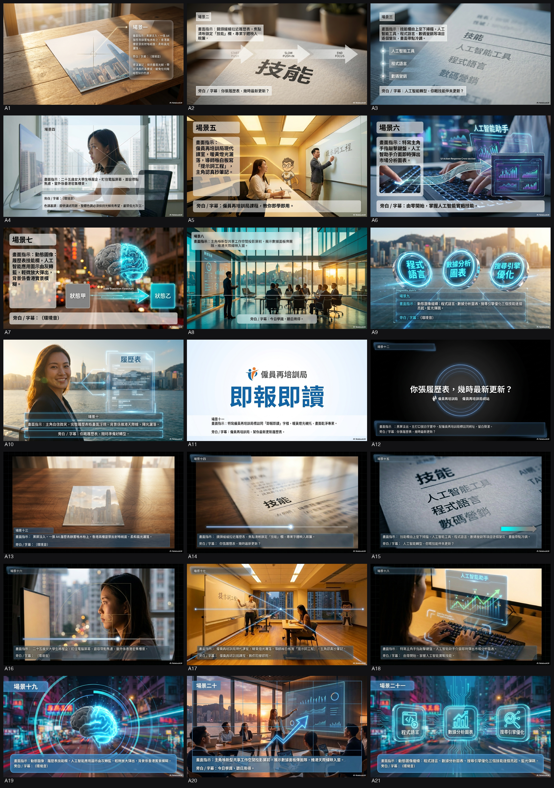
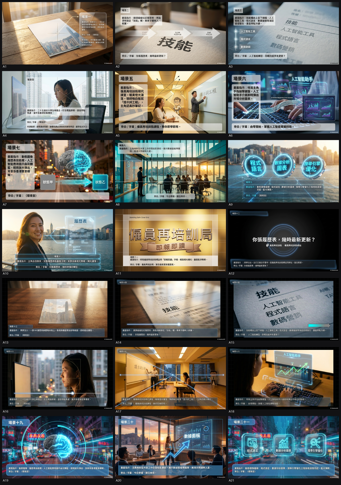
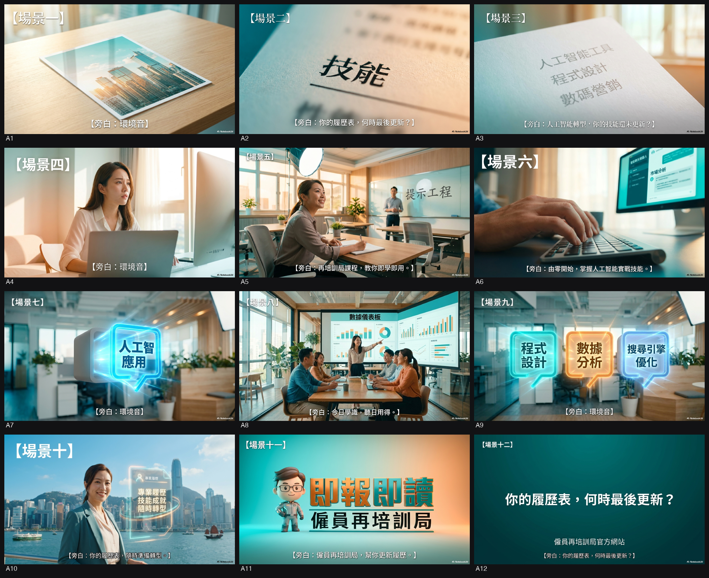

ERB
🎞️ 生成作品(storyboard)

逐格睇大圖(12)
📚 舊版本(5)






🏆 三甲 · 評分頭三(可揀三甲以外)
三甲 = 評審團按官方 marking scheme 總分頭三。你可揀三甲以外(見「🗂️ 候選池」每個都有「轉 brd」掣)。
🎯 CD 推薦理由 + polish
（CD 推薦生成失敗：空輸出）
🗂️ 候選池
[委員會 193231] Concept 1:【實裝・升級】✏️ 寫 full board
Concept 1:【實裝・升級】
創作概念: 將「學新技能」呢個抽象概念，轉化為一次具爽感嘅「硬件升級」。ERB 課程唔係書本知識，而係一個個實體化、可觸摸、可「安裝」嘅技能模組 (Skill Module)。當學員將呢啲模組「實裝」到自己嘅專業工具或流程上，即時見到效率同產能嘅幾何級提升，直接扣連 ERB「實用、貼市」嘅核心訊息。
人/景: 主角係各行各業嘅年輕專業人士（如建築師、市場策劃、數據分析師）。場景設定喺現代化、有設計感嘅工作空間（如科技公司、設計工作室、co-working space），擺脫傳統課室印象。
Visual Device: 「技能模組 (Skill Module)」。一個個發光、半透明、刻有技能符號（如 AI Prompting, Data Visualization）嘅實體方塊。主角會做出一個將模組「啪」一聲嵌入工具（如電腦、繪圖板）嘅動作，觸發整個工作流程嘅視覺升級（例如數據圖表由 2D 變 3D 互動、設計稿自動生成多個版本）。
主打口號: ERB・技能增值。裝備下一個你。
Proposed 明星/名人: 麥浚龍 (Juno Mak)。佢本身形象具前瞻性、對細節同質感有極高要求，由佢嚟演繹「為專業裝配最精良組件」嘅概念，能提升 ERB 嘅格調同專業感，打破舊有標籤。
[委員會 193231] Concept 2:【履歷表＋1】🖼 睇圖 brd C↻
Concept 2:【履歷表＋1】
創作概念: 直接回應高學歷人士最關心嘅「職場競爭力」。概念以「履歷表 (CV)」呢個最現實嘅符號切入，展示唔同專業人士嘅 CV，雖然已有亮麗學歷，但喺 AI 時代底下顯得有啲「未完成」。透過 ERB，佢哋為自己嘅履歷表加上最關鍵嘅「+1」—— 一項超貼市嘅數碼技能，令整份 CV 實力即時倍增。
人/景: 同樣係年輕專業人士，但著重描寫佢哋喺職場上面對新挑戰（例如老闆要求用 AI 做分析）時嘅思考狀態。場景包括辦公室、見工面試房、自由工作者嘅屋企 studio。
Visual Device: 「動態履歷表 (Live CV)」。用精緻嘅 Motion Graphic 將主角嘅 LinkedIn profile 或履歷表視覺化。當主角完成 ERB 課程後，畫面會出現一個「+」號，然後一項新技能（e.g., "AI-Assisted Animation"）以發光字體形式，鏗鏘有力地加入到履歷表嘅技能欄上，同時見到佢嘅個人檔案「完成度」由 90% 跳到 100%。
主打口號: 你份 CV，仲爭呢一項。
Proposed 明星/名人: 黃傑龍 (Simon Wong) - ERB 主席本人。唔係要佢演戲，而係以半紀錄片形式，由佢以權威而貼地嘅身份，親自解說「點解連大學生都需要 ERB」，並引用「2025 年起已落實取消學歷上限」嘅政策事實，增加 campaign 嘅公信力同新聞價值，做法穩陣而有力。
| 格 | 畫面 |
|---|---|
| 1 | 闊景，黃昏時分，香港中環 IFC 商廈玻璃幕牆外，鏡頭由外緩緩推近 28 樓落地玻璃窗，窗內可見一間現代開放式辦公室；中景，一名 28 歲短髮女白領（淺灰西裝、黑框眼鏡）獨坐枱前，雙眼緊盯 MacBook 螢光幕，眉頭微皺，畫面帶冷白辦公室燈光與玻璃反光。 |
| 2 | 中景切換，女白領視線移向畫面外，鏡頭由她肩後輕輕拉後，揭示她 MacBook 畫面係一頁 LinkedIn 履歷；畫面右上角以精緻金屬質感動態浮現「CV 完成度 90%」百分比動畫。 |
| 3 | 特寫：MacBook 螢光幕上，履歷表「技能」一欄逐格淡入，文字清晰：Python、Tableau、Digital Marketing；百分比維持 90%。 |
| 4 | 中景，老闆（40 歲、深藍西裝）走近女白領身後，手中平板顯示 AI 分析圖表；女白領抬頭，表情略帶遲疑；鏡頭輕微手持晃動，營造即時職場壓力。 |
| 5 | 中景轉近，老闆手指平板，畫面即時切至平板特寫，顯示 AI 生成嘅市場走勢圖；女白領側面入鏡，眼神焦慮。 |
| 6 | 闊景切換：晚上 10 點，女白領返到觀塘區一間唐樓樓上 studio 公寓，落地燈照亮書枱；她喺枱前雙手托腮，MacBook 開住 LinkedIn，百分比仍然 90%。 |
| 7 | 特寫：女白領手指輕點 MacBook，「技能」欄位；百分比 90% 數字微微閃爍，像心跳。 |
| 8 | 半身鏡，黃傑龍（ERB 主席，50 歲、深色西裝、溫和笑容）喺中環一間簡約會議室，面對鏡頭，背景係落地窗外維港夜景；鏡頭定鏡，紀錄片式自然光。 |
| 9 | 中景，黃傑龍轉身指向會議室白板，白板上投影「AI 時代職場圖像」；他右手比向投影，眼神堅定。 |
| 10 | 特寫：黃傑龍手勢停住，投影畫面瞬間放大「+1」金色符號；背景音樂輕起。 |
| 11 | 闊景切：銅鑼灣一間 ERB 培訓中心，落地玻璃窗外可見時代廣場燈飾；室內 15 名年輕學員（20-35 歲）圍住大圓桌，每人一台手提電腦，講師喺前邊示範 AI 工具。 |
| 12 | 中景，女白領混在學員當中，專注跟隨講師操作；她螢光幕上即時彈出「AI-Assisted Data Visualization」練習結果。 |
| 13 | 特寫：女白領手指在觸控板上完成最後一步，練習結果自動上載至 LinkedIn；百分比由 90% 開始緩緩上升。 |
| 14 | 動態履歷表特寫：金屬質感 CV 版面，技能欄右側浮現發光「+」號，隨即彈出「AI-Assisted Data Visualization」字樣，百分比跳至 100%。 |
| 15 | 中景，女白領喺 ERB 課室內，與同組學員擊掌慶祝；窗外可見銅鑼灣霓虹，暖黃燈光映照笑臉。 |
| 16 | 闊景切：觀塘區 studio 夜晚，女白領返到自己書枱前，再次打開 LinkedIn；百分比維持 100%，技能欄多咗新一行。 |
| 17 | 特寫：女白領嘴角上揚，眼神自信；鏡頭極緩慢推進她眼部，反映 LinkedIn 畫面 100% 完成度。 |
| 18 | 中景，黃傑龍再次出鏡，喺中環會議室，輕輕頷首，眼神溫暖；背景維港夜景微微閃爍。 |
| 19 | 闊景：多個平行畫面同時出現——觀塘 studio 女白領、銅鑼灣 ERB 課室學員、商廈內另一名 30 歲男設計師——全部人面帶笑容，MacBook 畫面均顯示 100%。 |
| 20 | 特寫：黃傑龍面向鏡頭，語氣堅定；背景轉為純白，僅留「+1」金色符號喺他身旁緩緩旋轉。 |
| 21 | 闊景淡出：維港全景由夜轉為晨曦，字幕緩緩浮現主打口號「ERB +1 你 CV」；背景音樂漸止，只留輕柔浪聲。 |
| 22 | 純黑背景，中央金色 ERB 標誌及「www.erb.org」字樣淡入；字幕停留 3 秒。 |
[委員會 193851] Concept 1:〔估你唔到〕🖼 睇圖 brd B↻
Concept 1:〔估你唔到〕
創作概念:鏡頭跟一班睇落完全唔似「傳統 ERB 學員」嘅年輕專才——西裝律師、startup 創辦人、設計師、Marketing 經理,逐個自信咁示範佢哋點用新數碼技能解難。觀眾一路以為睇緊高端職場片,中段每人講一句「我喺僱員再培訓局學嘅」,逐格揭盅身份,直接撕走「ERB = 基層 / 失業」標籤。硬訊息「2025 年起不設學歷上限、全民可讀」由 reveal 嘅反差自然帶出,唔使口號式硬塞。
人/景:4-5 位 18-35 歲、高學歷在職素人/演員(跨行業:法律、創科、設計、市場營銷);場景係現代化 co-working space、tech startup office、design studio,擺脫舊式社區課室印象。可加 ERB 主席黃傑龍真實 soundbite 增權威。
Visual Device:「身份字卡 reveal」——每位主角畫面角落本來打住職銜(e.g.「執業律師」),講完關鍵句,字卡動態加多一行「· ERB 學員」,簡潔有力,反差全靠呢一下。
主打口號:大學生都返 ERB —— 估你唔到。
Proposed 明星/名人:建議用形象專業、年輕又有「斜槓 / 進修」人設嘅 KOL(如知識型 YouTuber 類)做其中一位 reveal 主角 —— 因為佢本身已經係「高學歷 + 貼市」嘅活招牌,佢一講「我都係 ERB 學員」,對核心受眾衝擊最大。(具體人選後期按形象正面、無負面新聞篩選)
---
| 格 | 畫面 |
|---|---|
| 1 | 闊景，日光從落地玻璃窗灑入中環一間現代 co-working space，大理石桌面、綠植、MacBook 散落，鏡頭緩緩前推；前景一位 28 歲短髮女律師（黑西裝、白恤衫、細框眼鏡）低頭敲鍵盤，表情專注，旁邊字卡淡入「執業律師」 |
| 2 | 中景，女律師抬起頭望向鏡頭，嘴角微揚，字卡底部淡入「· ERB 學員」 |
| 3 | 快速切至另一個 startup office，玻璃隔間，霓虹燈條；一位 30 歲男創辦人（牛仔褲、白 T、耳機掛頸）站在白板前寫 flowchart，鏡頭由腳步搖上至中景，字卡「Startup CEO」 |
| 4 | 男創辦人轉身面對鏡頭，信心十足，字卡加「· ERB 學員」 |
| 5 | 闊景，設計工作室，落地窗外可見維港；一位 26 歲女設計師（oversize 襯衫、丸子頭）用 iPad 畫 UI，鏡頭由闊景慢慢推進至她手部特寫，字卡「品牌設計師」 |
| 6 | 女設計師望鏡頭微笑，字卡加「· ERB 學員」 |
| 7 | 快速切至另一間 marketing agency 開放式辦公室，落地窗外高樓林立；一位 32 歲男 Marketing Manager（ polo 恤、耳機）站在大電視前做簡報，鏡頭輕微左右搖動，字卡「市場營銷經理」 |
| 8 | 男 Marketing Manager 轉頭對鏡頭，字卡加「· ERB 學員」 |
| 9 | 闊景，同一 co-working space，黃傑龍（55 歲、深色西裝）站在窗邊，背景可見其他年輕人工作，鏡頭由闊景推進至中景 |
| 10 | 黃傑龍特寫，眼神溫和，字卡「黃傑龍 ERB 主席」 |
| 11 | 快速蒙太奇：四位主角各自畫面快速閃切，字卡同步顯示「大學生都返 ERB」 |
| 12 | 女律師中景，她一邊講電話一邊在 MacBook 上開 AI 工具，字卡重複「執業律師 · ERB 學員」 |
| 13 | 男創辦人特寫，快速在鍵盤打字，螢幕顯示 Python 程式 |
| 14 | 女設計師中景，用 Apple Pencil 在 iPad 畫 3D 模型 |
| 15 | 男 Marketing Manager 特寫，電視大屏顯示 SEO dashboard |
| 16 | 闊景，四位主角同時出現在同一 co-working space 不同區域，鏡頭緩緩橫移帶過四個人 |
| 17 | 四格同步 split screen，每格一個主角，字卡再次強調「· ERB 學員」 |
| 18 | 黃傑龍中景，微笑望鏡頭 |
| 19 | 快速切回四位主角各自特寫，輪流望鏡頭微笑 |
| 20 | 闊景，co-working space 落地窗外維港夜景亮燈，四位主角背影面向窗外，鏡頭由後慢慢拉遠 |
| 21 | 黑屏淡出，白色粗體字幕居中「大學生都返 ERB —— 估你唔到」 |
[委員會 193851] Concept 2:〔CV·Last Update〕🖼 睇圖 brd A↻
Concept 2:〔CV·Last Update〕
創作概念:用一份典型大學生 CV 做主軸。開場 CV 睇落光鮮,但旁白帶出 AI 時代,CV 上嘅技能欄逐項「變灰、標住 outdated」——學歷仲喺度,但彈藥過晒期。主角報讀 ERB 課程後,每掌握一項實戰技能(AI 應用、數據分析、數碼營銷),CV 上即時「解鎖」一個新項目,由灰變亮,成份 CV 重新生猛。將抽象「技能提升」變成睇得明嘅「CV 升級」,硬訊息「即學即用、貼市實用」自然落地。
人/景:1 位代表核心群體嘅年輕高學歷在職主角(由焦慮到自信嘅轉變弧);實景穿插 ERB 現代化課室真實上堂 b-roll(操作 AI 軟件、寫 code 嘅 close-up),再對比佢喺新型工作環境應用同一技能。CV 升級用乾淨 motion graphic 呈現,克制、唔做 glitch / HUD,保持商業高級感。
Visual Device:「CV 技能欄即時解鎖」——一份真實 CV 上,技能 icon 由灰→亮、由舊→新,配輕量動效。一個睇一眼就明嘅「增值」視覺鈎,夠 fresh 但唔出位。
主打口號:你張 CV,幾時 last update?
Proposed 明星/名人:不適用(主軸係素人學員真實轉變;名人/KOL 可後期以「體驗者/旁觀者」brief appearance 加入,唔搶主角戲)。
---
（CD note 畀 Raymond:Concept 1 賣「反差撕標籤」,情緒衝擊強、最快重塑認知;Concept 2 賣「實用增值」,訊息最清、最易扣 CTA。兩條都企得穩政府框內。揀中邊條,我即刻 develop full 12 格 board。）
| 格 | 畫面 |
|---|---|
| 1 | 日光從落地玻璃斜照入香港大學圖書館三樓自修區，一位 26 歲短髮女生（白襯衫、牛仔褲）坐在木枱前，雙手托腮盯住 MacBook，表情帶有輕微焦慮；中景，鏡頭緩慢向前推進，光線柔和帶暖黃色調。 |
| 2 | 同一女生視角切至 MacBook 畫面，CV 版面乾淨專業，技能欄列滿英文、Excel、PowerPoint；特寫，鏡頭由上而下掃過文字，背景輕微景深模糊。 |
| 3 | CV 特寫繼續，技能欄「Python、Tableau、Digital Marketing」三行文字突然轉灰，旁邊出現小字「outdated」；特寫，鏡頭輕微拉遠，色調轉冷灰。 |
| 4 | 女生由圖書館起身，背影走向校園外，畫面切至她在地鐵車廂內低頭滑電話，眼神迷惘；中景，窗外閃過港島線隧道燈光。 |
| 5 | 切至 ERB 九龍灣現代課室，窗外可見啟德跑道，女生坐在前排，專注操作 NotebookLM；中景，鏡頭由教室後方緩慢推進，陽光灑落木枱。 |
| 6 | 課室特寫：女生手指在鍵盤快速輸入 Prompt，螢幕即時生成市場分析圖表；特寫，淺景深突出鍵盤與螢幕反光。 |
| 7 | 同一個女生在課室另一枱，與兩位同學討論數據清洗流程，三人低頭 annotate CSV；中景，鏡頭輕微左搖，背景有 ERB 品牌藍色牆身。 |
| 8 | CV motion graphic 畫面：Python 技能 icon 由灰轉亮，旁邊新增「Generative AI」新欄位；特寫，乾淨白底，輕量彈跳動效。 |
| 9 | 女生喺中環高樓玻璃幕牆辦公室，站喺白板前向三位同事講解 AI 工具流程，眼神自信；中景，窗外維港景色，陽光充足。 |
| 10 | CV 畫面繼續：Tableau 技能亮起，新增「Data Storytelling」新項目；特寫，icon 由灰轉藍綠漸層，動效簡潔。 |
| 11 | 女生喺銅鑼灣商場天台 café，與朋友用平板展示 campaign dashboard；中景，背景有霓虹燈招牌，氣氛輕鬆。 |
| 12 | CV 畫面：Digital Marketing 技能解鎖，新增「Performance Marketing」；特寫，icon 由灰轉橙，動效乾淨。 |
| 13 | 女生獨自喺維港海濱長廊跑步，夕陽金光灑落，表情輕鬆；廣角，鏡頭緩慢右搖，背景有天際線。 |
| 14 | CV 最終版面：整體由灰轉亮，新增三個技能項目，版面清爽；特寫，背景輕微景深，字體專業。 |
| 15 | 同一女生喺家中客廳沙發，雙手托 MacBook，微笑更新 LinkedIn 個人檔案；中景，窗外夜景燈火。 |
| 16 | CV 畫面最後一格：最底出現日期「Last Update: 2025」；特寫，字體放大，乾淨白底。 |
| 17 | 切回 ERB 課室群組照，女生與同學高舉結業證書，背景有 ERB 藍色 Logo；中景，鏡頭輕微上推。 |
| 18 | 女生喺中環寫字樓 meeting room 內，投影大屏展示 campaign 數據，同事鼓掌；中景，窗外維港夜景。 |
| 19 | CV 技能欄全亮特寫，icon 排列整齊，無灰色項目；特寫，鏡頭緩慢拉遠。 |
| 20 | 女生喺家門口換鞋準備出門，背影帶自信步伐；中景，晨光從門縫透入。 |
| 21 | 最終全黑背景，白色粗體字幕「你張 CV，幾時 last update？」緩慢淡入置中；定鏡，留白呼吸。 |
| 22 | 黑底淡出 ERB 標誌及「立即報名 erbcourses.gov.hk」網址；定鏡，留白。 |
| 23 | 全黑，僅保留 ERB 標誌 3 秒；定鏡。 |
[委員會 193207] Concept 1:〔指揮 AI 嘅人〕✏️ 寫 full board
Concept 1:〔指揮 AI 嘅人〕
創作概念:由「人被 AI 取代」嘅恐懼,180 度反轉做「人指揮 AI」嘅掌控感。一個專業人士(律師/marketing/設計)面對海量混亂嘅 AI 數據流,用一個穩定有力嘅手勢 / 指令,將混亂梳理成有序結構。硬訊息扣位:ERB 高階課程教嘅唔係知識點,而係駕馭 AI 嘅能力;「不設學歷上限」=人人都有資格成為指揮者,而唔係被指揮。呼應策略「技能彈射器」同紅線「empower 唔係 scare」。
人/景:真實工作場景(律師樓會議室 / marketing agency open office / 設計工作室),非純課室。主角係 18-40 歲在職白領,加一位知識型 KOL 親身示範由「手足無措」到「指揮自如」。
Visual Device:「一隻靜止清晰嘅手 vs 一個流動模糊嘅世界」 —— 背景係高速 motion blur 嘅代碼/數據洪流,唯獨主角隻手(同眼神)係 razor-sharp,手一動,混亂即刻收成發光嘅有序線條。痛感與秩序同框,記得住。
主打口號:唔好問 AI 會唔會取代你,問你識唔識指揮佢。
Proposed 明星/名人:陳易希(Tony Chan) —— 科技創業者、發明家出身,有真實 tech 公信力,後生有學歷又貼地,演「指揮 AI」零違和、唔似硬撐。次選:GME / 啟發性科普 KOL「Pomato 小薯茄」系一條知識型 line,平衡專業同年輕觀感。
---
[委員會 193207] Concept 2:〔技能保鮮期〕✏️ 寫 full board
Concept 2:〔技能保鮮期〕
創作概念:借「保鮮期 / 過期」嘅日常比喻,將抽象嘅「技能焦慮」具象化 —— 你張學歷證書、舊技能,係咪悄悄過咗保鮮期?畫面用「材質對比」:舊資產(證書、舊工具)呈現受潮發黃、半透明融化嘅貶值狀態;ERB 新技能(AI、數據分析)係自發光、銳利嘅晶體模組,直接「嵌入」replace 舊位置。硬訊息扣位:不是淘汰你個人(避紅線,唔 stigmatize),而是為你嘅能力做一次保鮮升級;「不設學歷上限」=任何起點都可以重新注入新鮮度。
人/景:真實 work scenario —— 一個白領望住自己枱面張舊證書 / 舊作品集,鏡頭一影,佢身後嘅辦公室同事已經喺用新工具。報讀 ERB 後,畫面由發黃轉返高飽和、銳利、發光。展示唔同年齡 / 行業一齊升級,體現包容性。
Visual Device:「皺巴巴證書墊底,上面放一塊脈動發光嘅 AI 技能模組」 —— 一個定格畫面講晒成個故事:痛感來自質感(發黃起皺),希望來自光度(發光嵌入)。Super slow-motion 影「過期」轉「保鮮」嘅瞬間。
主打口號:你嘅技能,有冇過保鮮期?(升級,ERB 課程不設學歷上限)
Proposed 明星/名人:Error 肥仔 / 知識型藝人 偏離調性,建議用林作 或 一位轉型成功嘅真實行業 KOL(例如由傳統行業轉做數據分析嘅真人 case)。理由:呢個 concept 重「真實說服力」多過明星光環,用「親身轉型過」嘅人最有 testimonial 力,扣 ISD 慣性「真人成功個案」但加咗 fresh 視覺。次選:科技 YouTuber「點 Cook Guide」唔啱,改「曾智華」太成熟 —— 最穩陣係真實 trainee 轉型 + 一位中性專業 KOL 旁證。
---
⚠️ 兩個 concept 方向清晰拉開:Concept 1 行「掌控 / 主動」感性張力(視覺衝擊最強),Concept 2 行「保鮮 / 真實說服」testimonial 路線(最貼 ISD 收貨慣性、最穩陣)。建議 Raymond 揀中一個再 develop full 12 格 board。
[委員會 193435] Concept 1:〔天花板會行上去〕✏️ 寫 full board
Concept 1:〔天花板會行上去〕
創作概念:目標受眾困喺「學歷樽頸」——張沙紙曾經係入場券,而家變咗困住自己嘅透明天花板。Big idea:ERB 取消學歷上限 = 將天花板變成可以行上去嘅樓層。主角喺極簡高級 Office,頭頂本是限制,當佢揀咗 ERB 技能課程,透明天花板化成一道光梯,佢由下層「行上去」上層——硬訊息「課程不設學歷上限」就刻喺嗰塊被穿透嘅天花板上,政策突破點直接視覺化。
人/景:18-40 高學歷在職人士(Marketing Manager / Designer / 數據分析新人),真實高級辦公空間,非課室。配真實行業職位 title superimpose(AI 數據分析師、智慧城市方案顧問),將「機會」落地。
Visual Device:「透明天花板 → 向上穿透光梯」(Escher 錯視建築感 + Apple 發佈會舞台淨感)。一個記得住嘅垂直動線:鏡頭跟住人由下層升上層,天花板由阻隔變通道。
主打口號:學位係入場券,唔係天花板。
Proposed 明星/名人:林海峰——有知性、有事業階段感、講嘢有腦唔流;由佢講「天花板」呢種職場睿智訊息夠信服,又跨到後生同熟齡受眾,唔似硬銷。
---
[委員會 193435] Concept 2:〔撳一下,第二個自己上線〕✏️ 寫 full board
Concept 2:〔撳一下,第二個自己上線〕
創作概念:接「技能解鎖 + Before/After 2.0」,但唔講失業→就業,講「卡關 → 破關」。Big idea:同一份工、同一個人,撳低 ERB 課程嗰一下,成個工作狀態瞬間升級。用 Diegetic UI(敘事內界面)——唔係後期浮誇特效,而係主角喺真實辦公桌打開 ERB 課程,成個空間燈光由舊式黃光「切換」成未來藍白光,手上傳統工具(筆/計算機)重組成新工具,CV 上新 keyword(AI Prompt、Data Visualization)即時著燈。展示「即學即用」打中「時間貧窮」痛點。
人/景:同一位在職專業,同一張辦公桌,真實工作場景。Before 灰冷卡關、After 暖彩高效,同框對照 show value 唔靠口號。
Visual Device:「狀態切換嘅 0.5 秒」(《Severance》/《Black Mirror》式科技融入日常嘅冷靜質感)。Focus 喺撳掣後成個空間色溫 + 工具 + 人物狀態一齊翻轉嗰一瞬,聲畫效果夾「click-and-pop」。
主打口號:同一份工,解鎖第二個自己。
Proposed 明星/名人:Error 何啟華(肥仔) 或 MIRROR 系成員(如柳應廷 Jer)——後生受眾緣強、有「進化/突破自己」嘅人設,演「升級瞬間」夠 trendy 又唔玩膠;若客戶要更穩陣專業感,可換 岑寧兒 / 陳健安 等有「在職成長」氣質嘅創作人。
---
CD 收斂建議:Concept 1 KV 最爆、最 propaganda-friendly,適合做系列主視覺 + highlight;Concept 2 最有「應用感」、最易拆成 3-4 集情境(每集一個行業切換),social/Reels 直出。兩條都冇踩紅線(冇 stigmatize 舊學員、冇恐慌、冇 hard sell)。揀中邊條,先 develop full 12 格 board。
[委員會 031338] Concept 1:外掛已就緒(The Hack Is Ready)✏️ 寫 full board
Concept 1:外掛已就緒(The Hack Is Ready)
創作概念:將職場演繹成一隻不停 Update 嘅生存遊戲——舊技能過咗時就會「卡關」。KOL 主角喺真實職場撞正 AI 難題,畫面一秒切入 ERB 高科技「裝備室」,吉祥物蔣知識(Captain K)化身 3D AI 導師,將 logo 上嘅星形人形拆解成「技能晶片」派俾佢,主角解鎖「數碼新技能」即場破關。硬訊息扣連:遊戲世界冇「學生」,只有不斷升級嘅「玩家」(學員),呢個就係 ERB「技能為本培訓」嘅核心——唔係補底,係裝備升級。
人/景:年輕 KOL / 後生白領做主角(IT、市場、物流任一線);場景一半真實職場(寫字樓、物流 dashboard、寫 code 螢幕),一半 ERB 虛擬高科技裝備室(冷藍光 + 霓虹)。Captain K 以 3D Avatar 喺實景中自然互動。
Visual Device:「技能解鎖」特效——ERB logo 嘅星形人形拆解、重組,化成發光技能晶片插入主角(致敬遊戲裝備 UI),配「Skills Upgraded」進度條由 0 飛 100%。呢個視覺鈎貫穿全系列每集。
主打口號:唔係去補底,係去解鎖
Proposed 明星/名人:建議 Edan 呂爵安——本身理工大學工程系背景,後生、高學歷、形象正面又貼地,完美演繹「Degree holder 都嚟升級」嘅反差說服力,LinkedIn/IG 都食得開。
亮點扣連:用咗「🏷️ 蔣知識變身 AI 導師」(Captain K 做 3D AI 領航員)+「🏷️ 星形人形 Logo 動態化」(logo 拆解做技能解鎖特效)+「🏷️ 禁叫學生與再培訓」(玩家 vs 學生態度)。
---
[委員會 031338] Concept 2:走錯部門?(Wrong Floor?)✏️ 寫 full board
Concept 2:走錯部門?(Wrong Floor?)
創作概念:用「反差萌踩場」做 hook。開場一個西裝骨骨嘅中環高階白領、或高傲 IT 狗,鬼鬼祟祟又掩飾唔到自豪咁行入 ERB 大樓,旁人(同事、保安)一臉「你係咪行錯」,佢直接對鏡頭 show off:「冇學歷上限,高階 AI 課程學費全免仲有津貼,我點解唔讀?」用最強烈嘅視覺反差,一鋪過洗走「失業阿叔先讀」嘅舊認知。硬訊息扣連:ERB 已升格全勞動人口嘅「技能提升」平台,精打細算嘅聰明人先識用呢個免費外掛。
人/景:高學歷在職白領主角(可由 KOL 飾演);場景由中環甲級寫字樓 establishing shot 開場,行入 ERB 現代化教室/實驗室(AI 軟件 UI、高階器材特寫),刻意製造「高端職場 → ERB」嘅無縫 match cut。穿插真實過數 UI:「每日津貼 \$241」「學費全免」字塊放大做主體。
Visual Device:Kinetic typography 利益字爆——關鍵銀碼同政策字眼(「冇學歷上限」「\$241/日」「學費全免」)以高對比螢光色塊佔據 80% 畫面,配 ASMR 鍵盤聲 + 過數提示音,首 3 秒 hook 死手機 scroll、車廂無聲嘅 cynical 觀眾。
主打口號:而家冇學歷上限,你冇藉口
Proposed 明星/名人:建議 Dee 姜濤 / MC \$oHo & KidNey 二人組——若要爆話題 + 反差喜感,\$oHo & KidNey 嘅「打工仔自嘲」人設最食「點解唔用」呢個務實笑位;若要 premium 上進感則用單一型格 KOL。一句點解:佢哋形象貼地、後生緣強,踩場態度演繹得抵死又唔老土。
亮點扣連:用咗「💡 大學生踩場 ERB」(高學歷踩場反差)+「💡 進修有錢收」(\$241 津貼 / 學費全免利益字爆)+「🇭🇰 新時代『一技傍身』」(白領 AI 時代新技傍身)。
---
> ⚠️ Round 1 只出概念,未 develop 12 格 board。Raymond 揀中邊個方向,先做 full storyboard + 文案 script + KV。兩個概念共用上方 style_anchor;明星建議待 client 拍板邀約。
[委員會 031826] Concept 1:〔學歷封頂 · 技能解鎖 / Level Cap Unlocked〕✏️ 寫 full board
Concept 1:〔學歷封頂 · 技能解鎖 / Level Cap Unlocked〕
創作概念:直接撻爆高學歷白領最大心理關口——「我都讀完 degree，仲使去 ERB？」用 game「等級封頂（Level Cap）」嘅雙關開場：主角喺中環 glass office 對住 AI／數據畫面𢯎晒頭，頭頂浮現一個卡死咗嘅進度條「LV. MAX — 學歷上限已達」。鏡頭一 push，ERB 星形人形 logo 拆解成 AR 特效掃過畫面，進度條「破頂」再起飛，super 跳出「技能無上限」。硬扣政府訊息：ERB 已取消學歷上限，degree holder 一樣讀得，由「就業為本」升格做「技能為本」。將報讀 ERB 由「蝕底」反轉成「叻人開外掛」。
人/景:Primary 主角係一個 30 歲上下、有 degree 嘅在職白領（KOL 演），場景中環甲級寫字樓／glass office／高階 server 房，冷藍科技光。配真實創科或數據分析操作介面特寫（寫 code、AI dashboard）。
Visual Device:「卡死嘅進度條破頂」——頭頂浮 UI 進度條卡喺「LV. MAX 學歷上限」，被 ERB 星形 logo 拆解嘅 AR 光效一掃即「破頂」續飛，每解鎖一個技能彈「Skill Unlocked」。一個記得住、可貫穿全系列嘅視覺鈎。
主打口號:你以為 cap 咗 level，其實未開過呢個外掛。（學歷有上限，技能冇。）
Proposed 明星/名人:建議 Edan 呂爵安（MIRROR）——形象後生、有理科／科技 geek 底（電子工程出身），夠潮夠正面、受年輕及白領歡迎，講「開外掛升級」可信唔違和。
亮點扣連:用咗亮點 4（大學生踩場 ERB／取消學歷上限）+ 亮點 3（星形人形 logo 動態化做 Skill Unlocked 特效）—— 學歷上限做開場反差，logo 拆解貫穿全片做技能解鎖視覺。
---
[委員會 031826] Concept 2:〔行內人嘅隱藏 Menu / The Insider's Hidden Menu〕✏️ 寫 full board
Concept 2:〔行內人嘅隱藏 Menu / The Insider's Hidden Menu〕
創作概念:反轉弱勢標籤——ERB 唔係執輸先讀，係識玩嘅行內人靜雞雞偷步嘅 cheat code。用「懸念 + insider 反差」做橋：KOL 化身職場特工，迫問真實商界高層「而家最渴求邊種人才？」老細答完 AI／數據分析等高階技能，鏡頭一轉——原來成 team 睇落普通嘅 degree 同事，午飯時間唔係去食 lunch，而係靜雞雞喺 ERB 操緊機。製造「你以為佢去 lunch，其實去升級」嘅 twist。硬扣訊息：技能為本、即學即用、零成本（學費全免兼有津貼），將報讀 ERB 包裝成聰明、數口精嘅進取行為。
人/景:老闆視角（可借商界形象人物 cameo）+ 一班 degree 在職白領學員，場景中環寫字樓 → 切去 ERB 高階數碼課室／實操場景。teal-orange 冷光，夜操機質感。
Visual Device:「Hidden Menu 切換」——畫面用餐牌／系統選單嘅 UI 隱喻：表面 menu 係「Lunch」，手指一 swipe 切去隱藏一頁「Skill Upgrade」。配「你估佢哋去食 lunch？」嘅懸念蓋字，揭盅一刻成班人喺操機。一個帶 twist 嘅記憶點。
主打口號:唔係蝕底先去學，係識玩嘅人先知去邊度學。（老細想要嗰種人，張沙紙寫唔到。）
Proposed 明星/名人:建議 Anson Lo 盧瀚霖 或 Dee 哥（林作／財經 KOL 路線）二選一——若要年輕話題流量取 MIRROR 成員；若要「insider / 老細視角」可信度，可搵一位形象正面嘅商界／財經 KOL 帶「行內人」說服力。（首選年輕向：Anson Lo。）
亮點扣連:用咗亮點 7（老闆視角的技能需求）+ 亮點 5（進修有錢收／零成本學 AI）—— 老細迫問做 insider 反差，午飯偷步操機帶出零成本帶薪升級利益點。
[委員會 122846] Concept 1:〈沙紙保鮮期〉(The Expiry Date)✏️ 寫 full board
Concept 1:〈沙紙保鮮期〉(The Expiry Date)
創作概念:玩「學歷有保鮮期、技能無上限」嘅心理反差。以「具備學位程度人士」為核心副主題,將大學證書視覺化為一件會「過期」嘅資產 —— AI 浪潮一到,沙紙上的紅色 Countdown 標籤開始倒數。ERB 嘅高階數碼技能課程,就係幫你由「過期品」變「永續訂閱制」嘅升級鍵。硬訊息扣連:政府已取消學歷限制,連高材生都要嚟「後大學進修所」持續進修,焦點係技能提升(Upgrading)非再培訓。
人/景:典型白領中產專業人士(律師/會計/marketing manager 型),場景由掛滿沙紙嘅 high-end office 牆,轉到明亮潔淨嘅 ERB 高階課程實作場(AI 應用 / 數據分析操作枱);真實 ERB 導師飾演「深藏不露嘅隱世科技大師」一秒拆解難題。
Visual Device:「Glitch 證書 vs 無限續杯 UI」 —— 牆上大學證書表面浮現紅色「Best Before」過期標籤紋理同 countdown;旁邊一塊發微光嘅 Glass UI 面板,顯示「Validity: ∞」同不斷更新嘅 version number(v2024.5 → v2024.6)。學歷=易腐品,ERB 技能=雲端永續資產,一個畫面講晒。
主打口號:沙紙有 Best Before,技能只有 Next Version。
Proposed 明星/名人:建議 林晏(Edan / MIRROR) 或同級形象正面、年輕人歡迎兼帶「斯文專業感」嘅男 KOL。點解:佢能 carry「高學歷白領」嘅可信度,又有後生粉絲基礎,啱打中 degree holders + younger audiences 雙核心,形象正面零政治風險。
亮點扣連:用咗「💡 學歷限制全面解除」(大學沙紙唔包 AI 技能做反差,帶白領嚟 ERB)、「🏷️ Focus『升級』非『再培訓』」(version number 升呢視覺)、「👤 真實導師必須出鏡」(隱世科技大師一秒拆題)。
---
[委員會 122846] Concept 2:〈職場軍火庫〉(The Career Arsenal)✏️ 寫 full board
Concept 2:〈職場軍火庫〉(The Career Arsenal)
創作概念:將 ERB 由「補習社/救濟所」徹底 reframe 為占士邦式「Q Branch 裝備部」。打工仔唔係嚟「上堂」,係嚟「提取職場武器」—— AI 應用、無人機、數據工具就係你打職場大佬嘅神裝。用「過分著數」做鈎:零學費、每日 $241 津貼、50+ 創科課程,包裝成白領同年輕人眼中「唔係人人知嘅隱藏福利」。硬訊息扣連:技能為本培訓面向整體勞動人口,姿態係平起平坐嘅「全民軍火庫」。3D Captain K 化身「AI 裝備管理員」帶觀眾穿梭真實行業科技場景。
人/景:年輕 + 白領混合學員;場景由普通 office file 櫃 / 拍職員卡,透過 match cut 瞬間變身明亮潔淨、陳列無人機 / AI 伺服器 / VR 頭戴嘅「Apple Store 式裝備陳列室」;真實 ERB 導師如「裝備教官」示範實操。
Visual Device:「無縫轉場 — 辦公室暗門 → 全息軍火庫」 —— 主角拉開普通 file 櫃,空間經 match cut 即變科技裝備庫,燈光由 office flat white 變 precision spotlight,學員拎設備嘅動作似特工攞槍而非學生攞書。明亮 high-key(非暗黑),保持 government premium。
主打口號:唔係入課室,係入軍火庫。
Proposed 明星/名人:建議 陳卓賢 / Anson Lo 級數年輕型格 KOL,或考慮帶「科技玩家」標籤嘅後生網紅(如玩無人機 / 科技開箱類)。點解:軍火庫概念需要一個有「型格行動力」、後生緣強嘅 face 去 carry「提取裝備」嘅特工感,觸發年輕人「精明 Hustle / 唔執輸」心理。
亮點扣連:用咗「🏷️ 創科課程零收費」(零成本解鎖未來技能)、「返學有錢收」($241 津貼做著數鈎)、「🏷️ 3D Captain K 互動」(AI 裝備管理員導航)、「👤 真實導師必須出鏡」(裝備教官實操示範)。
---
⚠️ 兩個概念皆避開行貨黑名單(無官員直述、無多元市民大合照、無溫情鋼琴 montage、無空泛收結口號),並反轉「課室上堂 B-roll」為「軍火庫 / 升級 UI」。揀中先 develop full 12 格 storyboard。
[委員會 123133] Concept 1:〔職場 OS 升級〕✏️ 寫 full board
Concept 1:〔職場 OS 升級〕
創作概念: 將打工仔嘅技能組合，比喻為一套「職場作業系統 (Workplace OS)」。強調大學畢業證書只係出廠設定 (Legacy OS)，面對 AI 浪潮已經過時。ERB 嘅新課程就係最新嘅升級檔 (Patch)，幫你由 `Version 2014` 即時升級到 `Version 2025 AI-Ready`，喺職場「開外掛」。
人/景: KOL 飾演一個典型中環白領，喺極具未來感嘅辦公室陷入困境。真實 ERB 導師化身為型格嘅「Tech Guru」，喺一個簡潔嘅科技實驗室 (Tech Lab) 內進行技能傳授。
Visual Device: 全息更新介面 (Holographic Update UI)。主角張畢業證書會以懸浮全息投影形式出現，上面寫住 `Status: Obsolete`。當佢接觸 ERB 課程後，介面會出現「System Updating...」嘅進度條，最後變成 `Status: AI-Enhanced`，視覺化「升級」過程。
主打口號: 你張沙紙，幾耐冇 Update？
Proposed 明星/名人: ERROR 成員 (e.g. 193)。佢嘅形象夠串嘴、貼地，同時有「專業人士」背景反差，由佢口中講出「張沙紙 out 喇」極具說服力同記憶點，能有效吸引年輕白領。
亮點扣連：用咗💡學歷限制全面解除。直接將「大學沙紙唔夠用」嘅焦慮視覺化，透過「OS Update」概念，完美演繹 ERB 服務對象已擴展至學位程度人士嘅核心轉變。
[委員會 123133] Concept 2:〔隱形軍火庫〕✏️ 寫 full board
Concept 2:〔隱形軍火庫〕
創作概念: 將 ERB 重新包裝成一個地圖上冇標示、只有行內人先識去嘅「隱形軍火庫 (Hidden Armory)」。一般人以為 ERB 仲係教緊傳統手藝，但其實內裡已經變成一個提供高階數碼武器（AI 工具、無人機技術）嘅地方，專門幫打工仔秘密裝備自己，喺職場競爭中突圍而出。
人/景: KOL 飾演一個職場新人，發現同組有個高效率到唔正常嘅同事。透過追查，佢發現同事原來去咗 ERB 呢個「軍火庫」拎裝備。場景會由一個極刻板印象嘅「社區中心」門口，無縫轉場 (match-cut) 到一個充滿科技感嘅實戰工場內部，製造強烈反差。
Visual Device: 技能裝備介面 (Skill Equip UI)。當學員學識一項新技能，畫面會出現好似打機「執到寶物/裝備」嘅 UI 彈出視窗，例如 `[AI Prompting Module 已裝備]` 或 `[無人機操作執照 Get!]`，同時會有「每日津貼 +$241」嘅金幣特效，將「有錢收」呢個著數遊戲化。
主打口號: 人哋畀錢學，你收錢學。
Proposed 明星/名人: 試當真成員 (e.g. 游學修 / 許賢)。佢哋嘅短劇風格擅長處理「反差」同「揭秘」式嘅幽默，可以將「發現 ERB 秘密」呢個過程拍得好生動有趣，符合客戶想要嘅 Fresh & Creative 調性。
亮點扣連：用咗💡返學有錢收 + 🏷️創科課程零收費。將「津貼」同「免費」呢兩個最實際嘅著數，用「執裝備」、「執金幣」嘅遊戲化視覺語言包裝，直接打中香港人「唔執輸」嘅心理，將沉悶嘅政策資訊變成吸引人嘅「秘技攻略」。
[委員會 090624] Concept 1:〔學位失效證明〕✏️ 寫 full board
Concept 1:〔學位失效證明〕
創作概念：直接擊破高學歷人士嘅「學歷安全感」。透過一個自信滿滿嘅白領精英，喺 AI 面前瞬間碰壁嘅情景劇，製造強烈反差同共鳴。再由 ERB 嘅高階課程同真實導師出手「打救」，確立 ERB 係連 Degree Holder 都需要嘅「職場升級中心」。
人/景：中環甲級寫字樓嘅靚 meeting room、充滿 Cyberpunk 感嘅 ERB 實習工場（例如佈滿 LED 燈陣嘅無人機操作室、電動車維修底盤）。主角係一位睇落好 sharp 嘅年輕專業人士（KOL 飾演），配角係氣場強大、深藏不露嘅真實 ERB 導師。
Visual Device：主角手上份引以為傲嘅大學證書，喺 AI 生成嘅複雜報告面前，影像上出現 Glitch（故障特效）、甚至被像素化打散，象徵「學歷失效」。
主打口號：學位，保唔到你下半場。技能，可以。
Proposed 明星/名人：試當真 Locker (林家熙)。原因：形象 smart、受年輕觀眾歡迎，演繹嗰種帶點自負但又識轉彎嘅精英角色有說服力，能引發目標群組共鳴。
亮點扣連：用咗「大學生解禁」製造核心反差；用「破格高階課程」嘅視覺衝擊力去展示解決方案；並將「真實 ERB 導師」包裝成拯救主角嘅隱世高手。
[委員會 090624] Concept 2:〔技能 AR 化〕✏️ 寫 full board
Concept 2:〔技能 AR 化〕
創作概念：將政府片必定出現嘅「熒幕蓋字」玩到極致，化為主角眼中嘅 AR (擴增實境) 介面。故事唔係平鋪直敘介紹課程，而係透過主角第一身視點，將學習新技能嘅過程，演繹成好似打機「解鎖成就」、「提升能力值」一樣咁有型。
人/景：主角（KOL）係一個對前途迷惘嘅年輕人，場景由普通街景、辦公室，無縫轉接到 ERB 嘅高科技課室。3D 吉祥物「蔣知識」會化身成 AR 系統嘅 AI 管家，喺半空彈出嚟做導航。
Visual Device：主角視角睇到嘅世界，所有物件同人都附有 AR 標籤，顯示住佢哋嘅「技能值」。當佢望到自己時，好多技能都係「LOCKED」或者「LV.1」。進入 ERB 後，每學一項新技能（例如 AI 視覺設計），眼前嘅 UI 就會即時「Level Up!」，極具遊戲感。
主打口號：AI 面前，人人平等。除咗識得 Upgrade 嘅人。
Proposed 明星/名人：YouTube 創作者 JFFT。原因：佢哋嘅觀眾群極度吻合年輕目標，風格玩味重，將學習過程演繹成「打機闖關」嘅感覺會好自然，亦可以植入佢哋獨有嘅幽默感，徹底擺脫政府片嘅沉悶感。
亮點扣連：將「100% 命中嘅熒幕蓋字」呢個限制，升級為核心視覺手法 (AR UI)；活用「吉祥物『蔣知識』3D實體化」作為 AI 導航員；並透過「解鎖」破格高階課程，展示 ERB 嘅前瞻性。
[委員會 090736] Concept 1:〔降維打擊〕✏️ 寫 full board
Concept 1:〔降維打擊〕
創作概念：直擊高學歷白領嘅「學歷傲慢」同「技能焦慮」矛盾。主角本來自恃沙紙有料，點知喺 AI 面前不堪一擊，被同事「降維打擊」。佢放低身段去 ERB 進修，發現呢度唔係扶貧中心，而係未來技能嘅軍火庫，最終成功反cup。
人/景：主角係一個典型中環 look 白領 (KOL 飾演)，場景由高級寫字樓，轉到 ERB 極具科技感嘅培訓場地 (如無人機燈光陣列、電動車維修工場)。配角係 ERB 真實導師，形象設定成深藏不露嘅 tech guru。
Visual Device：沙紙碎裂。主角喺 office 被 AI 技術難到，佢張大學證書嘅 close-up 畫面出現 glitch (數碼干擾) 效果，甚至龜裂、像素化粉碎，象徵「學歷失效」。到片尾佢學有所成，畫面出現嘅係一個由數據流組成、不斷更新嘅「技能樹」UI。
主打口號：沙紙會過期，技能要即期。
Proposed 明星/名人：試當真 游學修。佢嘅觀眾層同我哋 Core Target 重疊，形象夠 smart 又帶點知識份子嘅傲氣，演繹「高學歷精英被現實打擊」嘅反差感會好有說服力。
亮點扣連：用咗「大學生解禁」製造主角身份反差、「破格高階課程」提供視覺衝擊，並透過情節糾正「嚴禁叫『學生』」嘅官方正名，突顯學員嘅專業身份。
[委員會 090736] Concept 2:〔技能 AR 化〕✏️ 寫 full board
Concept 2:〔技能 AR 化〕
創作概念：既然政府片 100% 有「熒幕蓋字」，我哋就將佢變成核心創意。將主角嘅世界遊戲化，佢眼中所有嘢都附帶 AR (擴增實境) 數據標籤。佢頭上嘅「技能值」不斷閃紅燈，代表 skill is outdated。吉祥物「蔣知識」化身 3D AI 管家現身，帶佢去 ERB「裝備庫」解鎖新技能。
人/景：KOL 飾演一個對新科技充滿好奇、但技能追唔上嘅普通打工仔。3D 吉祥物「蔣知識 (Captain K)」會以半透明 AR 形式出現，同 KOL 真人互動。場景會喺日常街道、辦公室同 ERB 課室之間快速穿梭，全部疊加 AR 視覺層。
Visual Device：第一人稱 AR 視角。大量鏡頭模擬主角眼中嘅 AR 介面，好似打機咁。見到唔識嘅嘢會彈出「???」，技能唔夠會顯示「ACCESS DENIED」。而 ERB 嘅課程就係一個個可以「下載」同「安裝」嘅技能 patch，每學完一項，主角頭上嘅技能 UI 就會升級，由紅色變返綠色。
主打口號：學歷解鎖，技能解困。
Proposed 明星/名人：Dear Jane 主音 Tim (黃天翱)。形象夠潮，有成熟男人味，同時有玩味一面，適合演繹同 3D 公仔互動嘅奇幻感，可以吸引到年輕同在職人士注意。
亮點扣連：直接將「100% 命中嘅熒幕蓋字」變成核心玩法；將「吉祥物蔣知識 3D 實體化」由 optional 變成關鍵角色；「每日 $241 學習津貼」可以視覺化成遊戲中「每日登入獎勵」，增加吸引力。
[chatgpt-codex] Concept 1:「學位不再，技能為王」✏️ 寫 full board
Concept 1:「學位不再，技能為王」
創作概念: 透過一個在職場上曾經引以為傲的學位持有者，面對 AI 浪潮的衝擊，發現昔日的榮耀已不足以應對未來挑戰。他被迫放下「高材生」身段，轉投 ERB 學習新技能，並透過與 ERB 導師和 Captain K 的互動，重新找回職場價值。整個過程以「反轉慣例」的手法，顛覆傳統政府宣傳片中「高學歷人士無需再學習」的固有觀念，強調持續學習的重要性。
人/景:
* 主角：一位約 30-40 歲，曾經事業有成、自視甚高的白領專業人士 (例如金融分析師、市場策劃經理)，穿著筆挺西裝，表情焦慮或迷茫。
* 場景：
* 開場：高科技辦公室，有大量數據屏幕、AI 介面，主角被數據洪流淹沒的壓迫感。
* 轉折：ERB 技能培訓中心，非傳統課室，而是充滿科技感的實操空間（如電動車維修工場、無人機模擬飛行室），背景有其他學員積極學習。
* 導師：ERB 導師穿著專業制服，以「隱世高手」姿態出現，沉穩地示範複雜的數碼技能。
* 吉祥物：3D 動畫 Captain K 以全息投影形式在主角身邊，提供幽默而實用的 AI 輔助提示。
Visual Device: 「學位證書碎裂/消散」與「技能值條」的視覺對比。開場時，主角的學位證書以慢動作碎裂或被數據流吞噬，象徵其價值的瓦解。隨著主角在 ERB 學習，畫面上會浮現遊戲般的「技能值條」(Skill Bar) 和「AR 標籤」，實時顯示其技能提升的進度，強化「學員」而非「學生」的身份，並以「熒幕蓋字」方式展現 ERB 課程名稱及實用資訊。
主打口號: 學位不再是終點，技能才是新起點。
Proposed 明星/名人: 方力申。
點解：方力申以其陽光、正面、運動員出身的形象，深受年輕觀眾歡迎。他近年積極參與不同領域的挑戰（如環島泳、演戲），並成功轉型為節目主持，展現出不斷學習和突破自我的精神，與 ERB 鼓勵「技能提升」的訊息非常契合。他本身亦具備大學學歷，能自然地演繹「高學歷人士面對挑戰需要再學習」的反差感。
亮點扣連: 1. 🏷️ 吉祥物「蔣知識」3D實體化； 3. 💡 大學生解禁 (取消學歷上限)； 5. 🇭🇰 官方紅線：嚴禁叫「學生」； 6. 🇭🇰 100% 命中嘅「熒幕蓋字」。
[chatgpt-codex] Concept 2:「未來解碼：ERB 技能通行證」✏️ 寫 full board
Concept 2:「未來解碼：ERB 技能通行證」
創作概念: 以緊張刺激的「技能競賽」形式包裝，多位來自不同行業的學員（包括高學歷人士），在一個未來感十足的數碼競技場上，運用 ERB 學到的新技能（如 AI 視覺設計、無人機操控、電動車診斷），解決現實世界中的複雜挑戰。Captain K 擔任比賽的 AI 裁判或導航員。這反轉了政府片常見的說教模式，以「體驗課」和「技能競賽」的動態方式，展示 ERB 課程的實用性和前瞻性，並突顯學員的熱情與競爭力。
人/景:
* 主角群：三至四位來自不同行業（例如：廣告設計師、工程師、物流經理、零售店主）的學員，年齡層涵蓋 20-40 歲，形象鮮明、充滿活力。其中一位是具備學位程度的年輕專業人士。
* 場景：
* 主場景：一個高度數碼化、充滿全息投影和動態 LED 屏幕的「未來技能競技場」。
* 挑戰場景：穿插在真實行業場景，例如：無人機燈光表演後台、電動車維修中心、數據中心等，將理論知識應用於實際問題。
* 導師：ERB 導師作為「專業評審」或「技術總監」，在競技場中提供關鍵指導或點評。
* 吉祥物：3D 動畫 Captain K 作為互動 AI，在競技場中實時顯示比賽數據、技能評分或解說課程重點。
Visual Device: 「動態數據 UI」與「任務進度條」。整個畫面被未來感的 UI 元素包圍，例如 AR 介面、實時數據流、技能點數、任務完成度百分比等，如同電競直播般呈現。每個學員完成任務時，會有清晰的「技能解鎖」或「任務完成」的動態圖像和聲效。ERB 的核心訊息（如「取消學歷上限」、「每日 $241 津貼」）則以型格的浮空 AR 標籤或動態蓋字形式在關鍵時刻出現。
主打口號: ERB 新技能，解鎖你嘅未來通行證！
Proposed 明星/名人: 謝安琪 (Kay Tse)。
點解：謝安琪形象知性、正面，是香港樂壇的實力派歌手，亦是兩個孩子的母親，她的生活態度和事業發展都展現出持續學習和適應變化的能力。她能吸引較廣泛的受眾，尤其是有學位程度的年輕父母或專業人士。同時，她的獨特氣質能為政府宣傳片注入一份藝術感和深度，符合「Heritage 古典」的畫風方向。
亮點扣連: 1. 🏷️ 吉祥物「蔣知識」3D實體化； 2. 🏷️ 破格高階課程：無人機與電動車； 4. 💡 每日 $241 學習津貼； 7. 👤 真實 ERB 導師必出鏡。
[claude-opus-4-8] Concept 1:〔玻璃天花〕✏️ 寫 full board
Concept 1:〔玻璃天花〕
創作概念:有一塊睇唔到嘅玻璃,一路擋住唔同學歷、唔同行業嘅人 —— 而家呢塊玻璃碎咗。我哋用一塊真實嘅玻璃屏障做 visual metaphor,逐個學員行近、伸手,玻璃應聲粉碎,佢哋直接行入一個現代化工作場景。最後揭示玻璃上原本印住「學歷限制 Restriction on Educational Attainment」,碎裂後重組成「2025 起 不設學歷上限」,直接扣住改革最硬嘅事實。
人/景:三至四位學員 —— 一個揸住大學文憑、面對 AI 焦慮嘅 marketing 後生女;一個傳統零售店主想數碼轉型嘅中年男;一個轉行做數據分析嘅在職人士。景:co-working space、design studio、現代化 ERB 委任培訓機構課室。
Visual Device:一塊印住「學歷限制」嘅玻璃屏障被打穿粉碎,碎片化成 kinetic typography 重組成新訊息 —— 一個記得住、有反差、又唔踩紅線(唔貶低任何人,只係「打開」)嘅鈎。
主打口號:學歷冇上限,技能冇盡頭
Proposed 明星/名人:建議 林敏驄 或 麥明詩 (Louisa Mak) —— 傾向麥明詩:劍橋法律畢業、形象 pro、正面、零負面新聞,本身就係「高學歷都要持續增值」嘅活招牌,佢做引導者行過玻璃,反差最有說服力。
---
[claude-opus-4-8] Concept 2:〔多咗一行〕🖼 睇圖 brd F↻
Concept 2:〔多咗一行〕
創作概念:呢個世代最緊張嘅唔係張沙紙,係張履歷追唔追到市。我哋 follow 一份份真實履歷表 —— 本身已經有大學學位、有工作經驗,但下面新加咗一行 ERB 數碼技能(AI 應用、數據分析、數碼營銷)。鏡頭由履歷表上嘅一行字,溶接去學員喺真實工作場景中操作緊嗰項技能、解決緊真問題。Show 唔 tell:技能價值 = 履歷表上實實在在多咗、用得着嘅一行。
人/景:四個唔同背景學員嘅履歷表特寫(打字機/打印中嘅動態),配真實 b-roll:學員 close-up 操作 AI 軟件、執代碼、整數據 dashboard;再 cut 到佢哋喺 startup office / 數碼化工場真實應用同一技能。強調「大學生都讀 ERB」嘅反差。
Visual Device:履歷表上「新增一行」嘅 motion graphic —— 游標打出一行 ERB 技能,即刻發光、溶接成真實工作畫面。一個簡潔、易明、扣住「即用貼市」痛點嘅視覺鈎。
主打口號:大學畢咗業,技能未畢業
Proposed 明星/名人:建議 岑珈其 或 周國賢 —— 傾向周國賢:理工出身、形象正面斯文、有「斜槓 / 持續學習」personal brand,做履歷表 owner 之一 + 旁白引導者,貼到「高學歷都喺度增值」嘅核心訊息,穩陣冇爭議。
| 格 | 畫面 |
|---|---|
| 1 | 黑屏淡入，特寫一張 A4 履歷表置於木紋書枱中央，淡藍色燈光打在紙上，畫面靜止，營造安靜氛圍，鏡頭輕微前推。 |
| 2 | 中景，一名 25 歲斯文男子（周國賢）坐在共享辦公室窗邊，穿淺灰針織衫，雙手將履歷表放平，眼神專注，背景是落地玻璃窗外維港天際線，柔和晨光。 |
| 3 | 特寫履歷表「學歷」欄，周國賢手指輕點紙面，鏡頭由上而下緩慢推進，紙上文字清晰可見。 |
| 4 | 超近特寫履歷表「工作經驗」欄，游標閃爍，動態打出新一行藍色文字：「ERB 數據分析」，字跡發光，紙張微微反光。 |
| 5 | 溶接：履歷表藍色字行化作光粒子，轉化為 28 歲女 IT 工程師（短髮、牛仔外套）在九龍灣數碼港 coworking space 操作 Jupyter Notebook 跑 AI 模型，鏡頭由肩後搖至側面中景。 |
| 6 | 中景，女工程師手指在鍵盤快速敲擊，螢幕上即時跳出數據圖表，窗外是貨櫃碼頭貨船，陽光灑入室內，氣氛明亮。 |
| 7 | 特寫女工程師側臉，嘴角輕揚，眼神專注螢幕，背景虛化成柔和 bokeh，鏡頭緩慢推進。 |
| 8 | 另一張履歷表特寫，打印機吐出紙張，動態新增一行「ERB AI 應用」，字體發光，紙張邊緣輕微捲曲。 |
| 9 | 溶接：履歷表字行化作光，切至 30 歲男 startup PM（白襯衫、背帶褲）在銅鑼灣共享空間用 ChatGPT 即時生成產品企劃，鏡頭由桌面向上搖至中景。 |
| 10 | 中景，男 PM 雙手比劃，向對面女同事解釋企劃，桌上散落多份文件，窗外是銅鑼灣鬧市天台景觀，暖黃燈光。 |
| 11 | 特寫男 PM 手指在平板上拖曳 AI 生成圖像，畫面即時更新，背景同事身影虛化，鏡頭輕微橫移。 |
| 12 | 第三張履歷表特寫，游標打出「ERB 數碼營銷」，字跡藍光閃爍，紙張置於復古打字機上。 |
| 13 | 溶接：履歷表字行化作光，切至 27 歲女數碼營銷專員（波波頭、衛衣）在觀塘工業大廈改裝的 startup office 操作 Meta Ads Manager，鏡頭由後肩推至正面中景。 |
| 14 | 中景，女專員手指快速點擊鍵盤，螢幕跳出即時 ROI 數據，旁邊同事舉杯咖啡，窗外是觀塘海濱，黃昏暖光。 |
| 15 | 特寫女專員側臉，嘴角微笑，眼神專注螢幕，背景虛化成柔和 bokeh，鏡頭緩慢推進。 |
| 16 | 第四張履歷表特寫，打印機繼續吐紙，新增一行「ERB 雲端管理」，字跡發光，紙張置於木枱，背景輕微搖晃。 |
| 17 | 溶接：履歷表字行化作光，切至 32 歲男 warehouse supervisor（安全帽、反光背心）在葵涌物流中心平板上操作雲端庫存系統，鏡頭由貨架間搖至中景。 |
| 18 | 中景，男 supervisor 手指在平板點擊，實時更新貨箱位置，貨倉燈光偏冷白，背景有堆高機緩緩移動。 |
| 19 | 特寫男 supervisor 側臉，眼神專注，背景貨架虛化，鏡頭緩慢推進，氣氛專業。 |
| 20 | 周國賢再出現，中景，坐在維港窗邊，雙手將四張履歷表逐張疊起，眼神溫和，背景天色轉為黃昏金光。 |
| 21 | 超近特寫四張履歷表疊在一起，每張新增一行 ERB 技能字跡同時發光，鏡頭由上向下緩慢推進。 |
| 22 | 全黑背景，藍色 ERB 標誌緩緩浮現，字跡發光，背景隱約可見四個學員工作剪影淡入淡出，鏡頭定格。 |
| 23 | 黑屏淡出，中央大字白底藍字主打口號「大學畢咗業，技能未畢業」，字體粗黑體，畫面靜止。 |
| 24 | 黑屏，底部小字 ERB 標誌及「報名：www.erb.org」緩緩浮現，畫面靜止，留白呼吸。 |
[claude-opus-4-8] Concept 1:〔上限已移除〕✏️ 寫 full board
Concept 1:〔上限已移除〕
創作概念:全片圍繞一個視覺隱喻 —— 過去 ERB 課程入口有一道寫住「學歷要求」嘅閘/玻璃天花板,而 2025/1/1 起呢道限制正式撕走。我哋揀真實高學歷在職人士做主角(例如做開市場推廣、自覺被 AI 衝擊嘅 marketing 經理),佢一直以為「ERB 唔關我事」,直到發現課程已不設學歷上限,而且係貼市嘅高階數碼技能課程。硬訊息扣實:打破刻板印象、學歷唔再係門檻、技能為本。
人/景:主角係 30 出頭、大專學歷嘅在職人士(marketing / 行政 / 中層),真實辦公室落地玻璃景;穿插真實 ERB 數碼營銷 / 數據分析課堂同學員(唔同年齡背景),體現「擴展唔係淘汰」。
Visual Device:一塊半透明嘅「學歷上限」玻璃板懸喺主角頭頂,當佢撳入 ERB 課程嗰刻,玻璃由上而下 dissolve / 升起消失,鏡頭一拉闊,上面嘅天空/機會打開 —— 對應「不設學歷上限」。同一個 device 可以重複用喺唔同主角身上。
主打口號:學歷封咗頂,技能冇上限。
Proposed 明星/名人:Dao(陳康堤）或 形象斯文知性嘅 KOL「Pomato 小薯茄」成員(代入打工仔);首選 岑珈其( Kk Lam )——形象貼地、做開有共鳴嘅「普通打工仔」角色,可信地演「我都驚 AI 取代我」嘅心情,唔離地、唔似硬銷代言。
---
[claude-opus-4-8] Concept 2:〔技能樹 · 解鎖中〕✏️ 寫 full board
Concept 2:〔技能樹 · 解鎖中〕
創作概念:借遊戲化「技能樹(skill tree)」概念,將抽象嘅「進修 / 技能提升」具象成一場睇得見嘅升級。主角喺真實工作崗位遇到難題(e.g. 老闆要佢用 AI 出 data report,但佢唔識),透過 ERB 高階課程逐個「解鎖」新技能節點,最後喺工作上即學即用、拆解難題。直接回應受眾痛點「即學即用、能解決實際工作問題」,同時 show 出「課程不設學歷上限」——人人都開得到自己嗰棵技能樹。
人/景:多位真實唔同行業從業員(數據分析、智慧城市方案、數碼營銷)各自喺真工作場景;每人一條 mini story line,highlight 版可串成「全城都喺度 upgrade」。
Visual Device:一棵半透明發光嘅「技能樹」浮喺主角身邊,每完成一個 ERB 課程模組,就有一個技能節點由暗變光「叮」一聲解鎖(配 click-and-pop 音效),技能 title 用真實招聘市場 job title 彈出(e.g.「AI 數據分析師」「智慧城市方案顧問」),avoid 流口號、show 唔 tell。
主打口號:唔係返學,係幫你嘅履歷升級。
Proposed 明星/名人:MIRROR 成員 Anson Lo / Edan過火,改建議 林作 或 較中性嘅知識型 KOL「Ben Sir(歐陽偉豪)」——但首選 Error 何啟華(Fatboy):年輕受眾緣好、形象貼地有親和力,演「由唔識到解鎖」嘅成長弧線有反差感、夠 trendy 又唔玩膠,合 empower 唔 scare 嘅基調。
[claude-opus-4-8] Concept 1:〔技能解鎖 (Skill Unlocked)〕✏️ 寫 full board
Concept 1:〔技能解鎖 (Skill Unlocked)〕
創作概念: 將「技能提升」比喻為打機「解鎖成就」。每當主角透過 ERB 課程掌握一項新技能，ERB logo 上嘅星形人形符號就會化成一道發光嘅視覺特效（VFX），喺主角頭上或工具上出現，代表「Skill Unlocked」。成條片用呢個簡單、重覆、有型嘅 visual device 串連，搣甩老土說教味，直接話畀年輕受眾知：進修係一件有滿足感、值得 show off 嘅事。
人/景:
- 一個喺中環甲級寫字樓做 Marketing 嘅白領，用緊 AI 工具但唔識 prompt engineering。
- 一個喺葵涌現代物流貨倉嘅 supervisor，對住套新嘅自動化系統束手無策。
- 一個喺數碼港 Startup 做嘢嘅 Junior Programmer，想學新嘅 coding language。
- 場景全部要拍得 modern、乾淨、有科技感，ERB 課室亦要似 co-working space。
Visual Device: 「技能解鎖」星形 VFX。源自 ERB logo 嘅星形/人形符號，會變成一個貫穿全片嘅動態圖像。例如：Marketing 白領學完 AI 課程，返到公司，當佢純熟打出完美 prompt，星形 VFX 就會喺佢個 mon 度「叮」一聲彈出嚟；物流 supervisor 用平板操控機械臂，星形 VFX 就會喺機械臂上出現。呢個 device 會成為 campaign 嘅視覺記憶點。
主打口號: ERB：技能 Level Up。
Proposed 明星/名人: YouTube 科技 KOL「Arho Sunny」。佢本身形象貼地、幽默，同時對科技產品有深入見解，由佢去體驗 ERB 嘅新科技課程，能打破 ERB 同年輕人之間嘅隔膜，說服力強。
亮點扣連：用咗「星形人形 Logo 動態化」做核心視覺 device；用「大學生踩場 ERB」嘅反差感設定主角背景；並將「新時代的一技傍身」概念遊戲化、年輕化。
[claude-opus-4-8] Concept 2:〔蔣知識升級任務 (Captain K's Upgrade Mission)〕✏️ 寫 full board
Concept 2:〔蔣知識升級任務 (Captain K's Upgrade Mission)〕
創作概念: 將 ERB 吉祥物「蔣知識 (Captain K)」3D 動畫化，變成一個穿梭真實世界嘅高科技 AI Avatar。佢會好似 Iron Man 嘅 J.A.R.V.I.S. 咁，突然出現喺 KOL 身邊，帶佢拆解職場難題。成個 concept 玩「真人 + AI 角色」互動，用輕鬆、任務式嘅情節，將 ERB 嘅新課程同「有錢收」呢個超強賣點，自然地植入觀眾腦中。
人/景:
- 人氣 KOL（代表年輕白領受眾）喺 office OT，呻緊啲嘢唔識做，好驚被 AI 取代。
- 3D AI Avatar「蔣知識」突然喺佢電腦螢幕、甚至係咖啡杯倒影中彈出嚟，同佢對話。
- 場景會跟住「任務」轉換：由 KOL 嘅 office，去到 ERB 充滿未來感嘅數碼技能課室，再去到真實嘅高科技工場（如數據中心、電影後期製作室）實習。
Visual Device: 3D AI Avatar「蔣知識 (Captain K)」。佢唔係傳統嘅吉祥物人偶，而係一個半透明、帶有數據流光效嘅 3D 角色。佢可以隨時出現喺任何平面（mon、玻璃、桌面），同 KOL 互動，甚至可以投射出 UI 介面，即時 show 出課程資料、資助金額（$241/日）、學費豁免條件（月入<$14,000）等最 hard-sell 但最重要嘅資訊，將 hard sell 變 soft sell。
主打口號: 帶薪 upgrade，職場 MVP。
Proposed 明星/名人: 試當真成員 CaChan (許賢)。佢嘅觀眾層年輕，形象「貼地精英」，有時帶點看透世事嘅 cynical，正好代表目標受眾「覺得 ERB 唔關我事」嘅心態。由佢被 Captain K「揀中」去完成升級任務，前後嘅態度轉變會好有戲劇效果同共鳴感。
亮點扣連：用咗「蔣知識變身 AI 導師」做核心視覺 device 同敘事手法；直接回應客戶 optional 項目嘅期望；並用「進修有錢收」呢個最實際嘅利益點做其中一個核心溝通訊息。
[claude-opus-4-8] Concept 1:〔GAME-CHANGER 直播間〕🖼 睇圖 brd L↻
Concept 1:〔GAME-CHANGER 直播間〕
創作概念: 騎劫遊戲直播 format。將職場比喻為一個 real-time strategy game，而 AI 浪潮就係最新、最強嘅大佬（Final Boss）。主角蔡蕙琪飾演一個卡關嘅資深玩家（白領），直播主（可以係另一位 KOL）同 chat room 觀眾見證佢點樣透過「課金」（報讀 ERB 課程）獲得「神裝」（新技能），由頻臨 game over 到輕鬆 K.O. 大佬，食住個勢升 LV。成件事唔係悲情求生，而係醒目玩家嘅攻略分享。
人/景:
* 人：蔡蕙琪飾演一個典型中環 OL，有啲厭世但內心好勝。另一位年輕 KOL 飾演旁述嘅遊戲直播主。
* 景：主場景係一個模擬遊戲直播嘅 Studio，有綠幕同專業設備。另一場景係風格化、充滿 UI 元素嘅辦公室，將 Excel 表、PowerPoint 等變成遊戲中嘅「敵人」或「關卡」。
Visual Device: 整個畫面右上角會有一個直播介面，包含玩家血量（HP 代表工作精力）、技能欄（Skill Tree）、實時 Chat Room 留言（e.g., "主播快啲用 AI 技啦！"、"ERB 呢招屈機喎"）。當蔡蕙琪學識新技能，佢嘅技能欄會有「Skill Unlocked!」嘅華麗特效，而 ERB logo 嘅星形人形公仔會化為特效動畫。
主打口號: AI 殺到嚟？我有 ERB。
Proposed 明星/名人: 蔡蕙琪。利用佢近年建立嘅喜劇感同「貼地精明」形象，演繹一個面對職場轉變、有啲無奈但最終選擇型格應對嘅 OL。佢嘅演繹可以令「進修」呢件事變得冇咁說教，更加有娛樂性同共鳴感。
亮點扣連：用咗「新時代的『一技傍身』」。將舊概念 upgrade 成打機「升呢」、「出神裝」，完全符合年輕受眾嘅語言，將「傍身」由被動防禦變成主動進攻。
---
| 格 | 畫面 |
|---|---|
| 1 | 中環寫字樓玻璃幕牆外，蔡蕙琪（32歲，OL 黑西裝白恤衫，微厭世表情）喺辦公桌前，鏡頭由闊景慢慢推近，桌上 Excel 表同 PowerPoint 投影片化作遊戲 UI 浮現，右上角直播介面顯示 HP 條只剩 18%。 |
| 2 | 蔡蕙琪中景，雙手托腮盯住熒幕，Excel 敵人角色化作紅色怪物向佢攻擊，HP 條繼續下降，直播 Chat Room 彈出「主播快啲用 AI 技啦！」留言。 |
| 3 | 特寫蔡蕙琪眼角，鏡頭快速拉遠，顯示佢面前嘅 Excel 怪物已變成 Final Boss 形態，Boss 血條閃爍，直播間右上角顯示「LV.99 AI」標籤。 |
| 4 | 闊景：直播 studio，綠幕後面年輕 KOL（20多歲，潮服）戴耳機講緊嘢，蔡蕙琪化身玩家角色喺大屏幕遊戲畫面入面。 |
| 5 | 中景 KOL 面向鏡頭，右手指向大屏幕，屏幕上蔡蕙琪角色血量持續下降，Chat Room 彈出「ERB 呢招屈機喎」留言。 |
| 6 | 蔡蕙琪特寫，眼神由無奈變得堅定，鏡頭輕微搖鏡，右上角技能欄顯示「ERB 課程」圖示開始發光。 |
| 7 | 闊景：蔡蕙琪喺辦公室，拿起手提電話，畫面切到 ERB 網頁，課程名稱化作遊戲技能卡片彈出。 |
| 8 | 特寫蔡蕙琪手指點擊「報讀」按鈕，技能卡片化作金光飛入右上角技能欄，「Skill Unlocked!」華麗特效閃過。 |
| 9 | 中景：直播 studio，KOL 見到技能解鎖，即刻興奮指向屏幕，Chat Room 刷滿驚嘆表情。 |
| 10 | 蔡蕙琪辦公室中景，Excel 怪物再一次攻擊，但蔡蕙琪角色即刻用新技能反擊，怪物血條即時下降。 |
| 11 | 特寫蔡蕙琪嘴角微微上揚，鏡頭由下往上推，右上角技能欄新增「AI 應用」圖示。 |
| 12 | 闊景：辦公室轉為風格化遊戲場景，PowerPoint 投影片化作關卡障礙，蔡蕙琪角色輕鬆跳過。 |
| 13 | 直播 studio 中景，KOL 興奮拍枱，Chat Room 彈出「主播真係型！」留言。 |
| 14 | 蔡蕙琪特寫，眼神充滿自信，鏡頭輕微拉遠，顯示佢面前 Excel 怪物已變回普通表格。 |
| 15 | 闊景：蔡蕙琪喺辦公室，右手輕輕敲擊鍵盤，AI 分析圖表即時彈出，Boss 血條再跌。 |
| 16 | 特寫蔡蕙琪手指，右上角 ERB 星形人形公仔化作金光特效，技能欄再次閃爍。 |
| 17 | 直播 studio 闊景，KOL 舉起雙手歡呼，屏幕上蔡蕙琪角色血量回升至 85%。 |
| 18 | 中景蔡蕙琪喺辦公室，微笑望住熒幕，Excel 怪物完全消失，畫面轉回正常工作介面。 |
| 19 | 特寫蔡蕙琪，眼神堅定，鏡頭輕微搖鏡，右上角技能欄顯示「LV. Up」特效。 |
| 20 | 闊景：直播 studio，KOL 同蔡蕙琪角色同時出鏡，Chat Room 刷滿「ERB 真係神裝！」留言。 |
| 21 | 蔡蕙琪特寫，微笑望鏡，右上角直播介面淡出，只剩 ERB 星形人形公仔同口號。 |
| 22 | 闊景：蔡蕙琪喺中環寫字樓落地玻璃窗前，夕陽餘暉照射，右上角 ERB logo 緩緩亮起。 |
| 23 | 特寫 ERB 星形人形公仔，背景虛化成遊戲 UI 元素，logo 緩緩放大並停留。 |
[claude-opus-4-8] Concept 2:〔職場天氣報告〕✏️ 寫 full board
Concept 2:〔職場天氣報告〕
創作概念: 騎劫新聞時段後嘅「天氣報告」format。將職場嘅技能需求趨勢，比喻為變幻莫測嘅天氣系統。「AI 氣旋」、「數碼化季候風」正影響各行各業。蔡蕙琪一人分飾多角，扮演唔同行業但同樣「濕滯」（受天氣影響）嘅打工仔，再搖身一變成為專業、權威嘅「職場氣象主播」，手持 ERB 嘅「裝備」（課程資料），清晰預告未來職場天氣，並提供「最佳應對裝備」（e.g. 「帶定呢個 AI course，可以抵禦 8 級數據衝擊」）。
人/景:
* 人：蔡蕙琪一人分飾三角：(1) 零售業前線，面對無人商店手足無措；(2) Marketing 主管，對住 AI 生成嘅 report 目瞪口呆；(3) 權威嘅「職場氣象主播」，造型參考真實天氣報道員，專業、自信。
* 景：一個充滿大型觸控螢幕、數據圖表嘅虛擬天氣報道廠景。場景會投射出唔同行業嘅真實場景（如：智慧貨倉、數碼營銷戰情室）。
Visual Device: 一個巨型嘅「職場天氣圖」。唔同技能以天氣 icon 標示：AI 係雷暴警告、數據分析係氣流圖、雲端技術係雲層覆蓋。蔡蕙琪（主播 version）會用支指示棒，點擊天氣圖上唔同區域（行業），圖表會即時彈出數據動畫，顯示該行業嘅「技能預警」同 ERB 嘅「應對方案」（課程推薦）。
主打口號: 技能再勁啲，職涯任你揀。
Proposed 明星/名人: 蔡蕙琪。極致發揮佢「一人分飾多角」嘅演技，製造強烈嘅身份轉變反差感。由徬徨嘅打工仔，瞬間切換到充滿自信、指點迷津嘅專家，視覺化地演繹出「掌握技能 = 掌握主導權」嘅核心訊息。
亮點扣連：用咗「大學生踩場 ERB」。天氣報告呢個格式本身就係一個全民資訊平台，唔分階層學歷。由蔡蕙琪呢個全民代表去報道職場天氣，再帶出 ERB 呢個全民適用嘅「應對裝備」，自然地打破「ERB 係基層專屬」嘅舊印象，暗示無論你係咩學歷，呢個「天氣」都會影響到你。
[claude-opus-4-8] Concept 1:〔平行時空辦公室〕✏️ 寫 full board
Concept 1:〔平行時空辦公室〕
創作概念:利用「平行時空」嘅極端對比,呈現同一個蔡蕙琪,喺同一個職場情景下,「有學」同「冇學」新技能嘅天淵之別。一個版本嘅佢(Before)被 AI 工具搞到一頭煙、瀕臨崩潰;另一個版本(After)就氣定神閒咁運用 ERB 學返嚟嘅數碼技能,將 AI 變成最強助手。成條片強調 ERB 唔係教你點「生存」,而係教你點「超前」。
人/景:蔡蕙琪(一人分飾兩角)、真實嘅 ERB 導師(飾演「隱世高手」)、一間型格嘅 co-working space 或開放式辦公室。
Visual Device:動態分屏(Dynamic Split Screen)。畫面會不斷以創意方式一分為二,左邊係「掙扎求存」嘅蔡蕙琪,右邊係「運籌帷幄」嘅佢。例如左邊用手畫 mind map,右邊用 AI 一秒生成;左邊逐個 file 改名,右邊用 script 一鍵完成,視覺對比極之強烈。
主打口號:沙紙保唔到你，技能保到。
Proposed 明星/名人:蔡蕙琪(葵芳)。原因:利用佢精湛嘅演技一人分飾「老派打工仔」同「高階技能使用者」兩個極端角色,產生強烈嘅喜劇感同戲劇張力,完全顛覆佢過往嘅草根形象,製造新鮮感。
亮點扣連：用咗 ①學歷限制解除 (帶出大學畢業都要學)、⑤Focus「升級」 (強調由掙扎變超前)、⑦真實導師出鏡 (導師作為啟蒙者)。
[claude-opus-4-8] Concept 2:〔技能解鎖遊戲〕✏️ 寫 full board
Concept 2:〔技能解鎖遊戲〕
創作概念:將整個「技能提升」過程遊戲化,變成一場真人 RPG 遊戲。蔡蕙琪係一個 Level 1 嘅普通白領(Player 1),面對工作上由 AI 幻化成嘅各種「魔王」(e.g. 數據整理怪、圖像生成獸)。佢必須去 ERB 呢個「技能聖殿」,搵唔同嘅「技能大師」(真實 ERB 導師)學識新招式(e.g. AI Prompt Engineering、無人機操作),先可以返去打贏魔王,成功「升呢」。
人/景:蔡蕙琪(飾演遊戲玩家)、ERB 導師(飾演「技能大師」)、辦公室場景會加入大量遊戲化視覺特效(e.g. 血條、技能樹)、ERB 課室會包裝成充滿未來感嘅「道場」或「實驗室」。
Visual Device: 遊戲化介面(Gamified UI)。全片會疊加一層 AR 擴增實境風格嘅 UI 介面,將蔡蕙琪嘅動作數據化,例如佢頭頂會有 Level 標示,學到新技能會有「Skill Unlocked!」彈出,用無人機完成任務會有「Mission Complete!」字樣,令資訊變得生動有趣,極度吸睛,亦符合年輕觀眾口味。3D 吉祥物 Captain K 可以化身為遊戲中嘅「新手教學 NPC」,引導蔡蕙琪。
主打口號:ERB 全民技能升級：AI 淘汰你？定你用 AI？
Proposed 明星/名人:蔡蕙琪(葵芳)。原因:發揮佢嘅喜劇感,演繹一個雞手鴨腳嘅遊戲新手,學習過程中嘅蝦碌場面同成功「出招」後嘅興奮表情,能製造極大嘅反差萌同娛樂性,令觀眾有代入感,覺得「連佢都學得識,我實得」。
亮點扣連：用咗 ⑤Focus「升級」 (直接將 upskilling 變成 leveling up)、⑥3D Captain K 互動 (作為遊戲導航員)、⑦真實導師出鏡 (化身為傳授技能的 NPC 大師)、④創科課程零收費 (可以喺 UI 介面顯示「Cost: FREE」,增加吸引力)。
[claude-sub] Concept 1:《技能值覺醒》✏️ 寫 full board
Concept 1:《技能值覺醒》
創作概念：一個好自豪嘅高學歷白領（真實受訪學員原型），面對公司全面 AI+ 轉型，突然發現「有學位≠有技能」，能力值跌到見紅。就喺佢崩潰嗰刻，畫面剝落成動漫，體育明星化身「升級教練」由旁邊彈出，一格一格帶佢入 ERB 高階數碼課程「練功」——每學完一個真實技能（AI 應用、數據分析…），頭頂能力值 UI 就跳升一格，由 F 級練返上 S 級。核心橋 = 「拆學歷天花板」：教練一手撕走佢頭上「Degree Level — 已封頂」嘅標籤，換上「技能提升 · 無上限」。硬訊息（AI+ 時代人人要 upskill、ERB 已取消學歷限制）直接由能力值機制 show 出嚟，唔使講。
人/景：一個 30 出頭、着 smart casual 嘅白領學員（真實原聲訪問打底）；辦公室 → 崩解成賽博感嘅動漫都市 → ERB 課室/實訓場。中段插真實 ERB 導師硬照/訪問，做「技能來源」。
Visual Device：頭頂浮空嘅「能力值/技能樹 UI」——現實裏見紅見低，學完技能即刻亮燈升格；配一個記得住嘅動作：教練撕走「學歷已封頂」標籤。
主打口號：學歷封咗頂？我哋幫你拆咗個頂。
Proposed 明星：張家朗——奧運金牌劍手，本身就係「靠日積月累苦練 upgrade 到世界頂尖」嘅活生生 icon，年輕人受落、形象正面又同「升級/突破天花板」主題天然扣連，做「升級教練」極有說服力。
亮點扣連：用咗亮點 #3（大學生解禁·高學歷反差） 做核心橋，#6（100% 熒幕蓋字） 順勢化成打機能力值 UI，#5（學員正名霸氣）——主角被叫「學生」時態度糾正「我係嚟 upgrade 嘅學員」。
---
[claude-sub] Concept 2:《隱世導師 · 拜師學技》✏️ 寫 full board
Concept 2:《隱世導師 · 拜師學技》
創作概念：反轉「名人賣樣教路」嘅老套——今次係名人反過嚟拜師。一位真實 ERB 導師（電動車維修/無人機表演設計），現實中係樸實師傅，一開口講行業真心話，畫面即化身動漫「深藏不露嘅隱世高手」；年輕名人扮唔知天高地厚嘅徒弟衝入嚟拜師，喺《頭文字D》式嘅高能動漫場面裏面，跟住真導師逐格學真功夫。核心橋 = 「真高手喺 ERB」：捨棄沉悶班房，用電動車底盤、無人機燈光陣營造 Cyberpunk 科技感，證明 ERB 課程夠高階、夠貼地、真係有嘢學。硬訊息（真實導師示範、真實行業應用、高階未來技能）全部由「拜師—出師」嘅動漫成長線帶出。
人/景：真實 ERB 導師（原聲訪問 + 硬照）做「師傅」；名人做「徒弟」；場景 = 電動車實訓車房 / 夜晚無人機燈光陣天台，動漫化成賽博道場。
Visual Device：真人「剝落」變身動漫高手嘅一剎——師傅一出手，speed-line 爆開、招式名以熒幕蓋字彈出（「AI 視覺設計 · 奧義」）；收尾徒弟出師，同師傅一齊擺個對招 pose。（可選：Captain K 化身 anime AI 管家喺半空報能力值,做貫穿系列嘅吉祥物。）
主打口號：唔止識返工，仲要升到呢。
Proposed 明星：MIRROR 成員（首選 Anson Lo 盧瀚霆 或 Edan 呂爵安）——年輕觀眾號召力最強、形象正面、有大量演出經驗；「偶像放低光環拜師學技」本身就係話題，同「連紅人都要 upskill」嘅訊息完美扣連。
亮點扣連：用咗亮點 #7（真實導師=隱世高手） 做主橋，#2（破格高階課程·無人機/電動車 Cyberpunk） 做視覺爆點，#1（Captain K 3D/anime AI 管家） 做 optional 貫穿裝置。
---
Next step（揀橋）：
1. 揀 Concept 1《技能值覺醒》（攻 degree-holder 副主題，策略最貼客戶新客群）→ develop 12 格 storyboard。
2. 揀 Concept 2《隱世導師·拜師學技》（視覺張力最大、扣真實導師硬要求）→ develop 12 格。
3. 兩個都要，我幫你逐個出完整 board（連分集點鋪 3-4 集 + 30 秒精華）。
4. slogan 想我再收窄／再爆多幾條先定 tagline。
覆數字就得。
[deepseek-chat] Concept 1:AI 教練唔夠？真人先夠薑✏️ 寫 full board
Concept 1：AI 教練唔夠？真人先夠薑
創作概念
以「一張 CV」做第一身主角——佢見證住自己由「學歷好靚但技能過時」嘅白領，變成「識玩 AI、識揸無人機」嘅新時代學員。紙藝世界入面，CV 每一格經歷都係紙雕場景，由沉悶辦公室彈出嚟變成色彩繽紛嘅技能訓練場。真實 ERB 導師以「技能解鎖者」身份登場，親手將新技能「貼」上 CV，令佢由一張紙進化成立體嘅「技能護照」。名人主角（建議：Tyson Yoshi）以第一身配音＋真人出鏡，見證自己嘅升級。
人/景
Tyson Yoshi 着住西裝但頂住一頭銀髮，企喺紙藝辦公室隔籬，場景由灰藍色紙辦公室瞬間摺疊重組成充滿霓虹紙燈嘅未來技能實驗室。ERB 導師以紙藝人偶比例出現，示範 AI 工作間方案操作。
Visual Device
一張 CV 紙喺紙藝世界入面「摺疊—展開—重組」，每次技能升級，紙面就浮現新嘅立體圖層（無人機、電動車底盤、AI 介面），象徵「技能疊加、層層升級」。
主打口號
「與其被淘汰，不如自己淘汰舊我。」
Proposed 明星/名人
Tyson Yoshi——30 歲以下受眾叫得出嘅名字，形象夠貼地唔離地，而且明顯「唔係讀死書」嘅 vibe，同「技能先係王道」嘅訊息天然咬合。佢嘅 cool 同少少反叛感，啱晒「顛覆傳統學歷至上」嘅 tone。
亮點扣連
- 亮點 2（無人機/電動車 Cyberpunk 感）：技能實驗室場景直接用紙藝重現無人機燈光陣列同電動車底盤，將高端課程視覺化。
- 亮點 3（大學生解禁反差）：CV 主角由「學歷好靚但技能空白」出發，正正食住高學歷人士「學位唔包技能」嘅痛點。
- 亮點 6（熒幕蓋字 100%）：技能名稱以紙雕字弹出，例如「商業生成式 AI」「無人機表演設計」，型格地塞滿畫面。
---
[deepseek-chat] Concept 2:Captain K 的升級日誌✏️ 寫 full board
Concept 2：Captain K 的升級日誌
創作概念
以 ERB 吉祥物 Captain K（蔣知識）3D 化身嘅「第一身視角」做主導——佢係一個 AI 助手，同名人主角一齊穿梭香港唔同行業場景，每次遇到職場樽頸（例如會計師要處理 AI 報表、設計師要學 AI 視覺工具），Captain K 就「呼叫」真實 ERB 導師出場，以紙藝風格示範實用技能。成條片係 Captain K 嘅「成長日誌」，由一個虛擬角色學識人類技能，反過來證明「學嘢無分背景、無分學歷、無分年紀」。名人主角以真人出現，同 Captain K 有大量互動。
人/景
建議名人：麗英（麗英 LaiYing）——年輕、搞鬼、受 Gen Z 歡迎，同 Captain K 嘅卡牌 feel 好夾。場景：紙藝版香港——紙雕嘅中環辦公室、紙雕嘅維港、紙雕嘅工場，Captain K 以 3D 紙感質地融入其中，同真人麗英有「二次元×三次元」嘅 crossover 趣味。
Visual Device
Captain K 每次「升級」就會換一套新裝備（由紙藝變出高科技感嘅 3D 道具），例如插上無人機翼、戴住 AI 數據眼鏡，直觀呈現「技能裝備升級」嘅概念。最後一幕所有裝備疊加，Captain K 變成「終極技能版」同麗英擊掌。
主打口號
「學無前後，達者為先。技能升級，即刻開機。」
Proposed 明星/名人
麗英（麗英 LaiYing）——受 18-30 歲歡迎嘅 Youtuber／歌手，形象古靈精怪、唔怕醜、肯玩，同 Captain K 紙藝角色嘅互動會自然有趣。佢嘅「傻大姐但其實好叻」人設，啱晒「技能唔睇學歷」嘅訊息。
亮點扣連
- 亮點 1（Captain K 3D 實體化）：直接命中標書 optional item，將 Captain K 由吉祥物升呢做「技能嚮導」，同真人自然互動。
- 亮點 5（嚴禁叫學生）：Captain K 每次見到主角都會叫「學員」，甚至加一句「唔係學生，係學員！」嚟玩正名，將紅線變 gag。
- 亮點 7（真實 ERB 導師出鏡）：導師以「技能解鎖 NPC」身份登場，每集唔同導師示範一個實用技能，滿足標書強制要求。
- 亮點 4（每日 $241 津貼）：Captain K 喺片尾用得意動畫 pop-up「全日上堂，仲有 $241 津貼」，將著數訊息活潑化。
[deepseek-v3.2] Concept 1:技能履歷表✏️ 寫 full board
Concept 1: 技能履歷表
創作概念：將每個人的職業生涯想像成一張「技能履歷表」。傳統思維只著重學歷 (CV)，但未來需要不斷更新「技能履歷表」(Skills CV)。影片展示不同背景嘅學員，如何在 ERB 課程中「下載」並應用新技能（如 AI 分析、數碼營銷），直接將呢啲技能「新增」到佢哋嘅工作履歷中，創造實質價值。核心訊息是：ERB 就是你「技能履歷表」嘅最新更新來源。
人/景：四位不同行業、持有學位的年輕在職人士（如：一位時裝品牌經理、一位工程師、一位文職人員、一位餐飲業主管），分別在現代化辦公室、工作室、ERB 課室及實際工作場景中。
Visual Device：一個不斷更新、充滿動態圖像嘅「技能履歷表」介面。學員每學到一項新技能（畫面顯示課堂實操），佢嘅「技能履歷表」就會即時彈出並新增該技能圖標，隨即切入佢應用此技能解決工作問題嘅畫面。
主打口號：學位唔夠？ERB 幫你技能搭夠。
Proposed 明星/名人：岑寧兒 Yoyo Sham。形象知性、文藝，同時貼地，能吸引年輕高學歷群體。可飾演一位需要學習新技能（如音樂製作的 AI 工具）嘅創作人，一句旁白：「學音樂都要學新嘢，何況我哋嘅 career？」
---
[deepseek-v3.2] Concept 2:打破無形牆✏️ 寫 full board
Concept 2: 打破無形牆
創作概念：用視覺隱喻「打破一堵代表學歷限制嘅無形牆」，直擊 2025 年改革核心。影片開首，不同人（大學生、在職專業人士）被一面透明玻璃牆阻隔，睇唔到牆後 ERB 課堂嘅先進內容（AI、數據可視化、數碼工具）。隨著旁白說明「2025 年起，學歷上限撤銷」，玻璃牆應聲破碎。大量不同背景嘅人湧入現代化課室，畫面展示技能如何應用於真實職場。強調 ERB 已成為一個開放畀所有人嘅技能市集。
人/景：開場為一系列快剪鏡頭，不同穿著（商務、休閒、創意）嘅年輕人面帶疑惑地「觸碰」或「被阻隔」於一堵透明牆前。牆後是明亮、充滿科技設備的 ERB 課室。牆破碎後，場景切換至學員在不同職場應用所學。
Visual Device：一面不斷出現、阻隔視線嘅「透明玻璃牆」視覺隱喻。牆上起初有「學歷上限」字樣，隨著政策說明，牆身出現裂痕並最終粉碎，化為數據流或技能圖標，散落於新學員身上。
主打口號：ERB 2025：學歷冇上限，技能冇止境。
Proposed 明星/名人：劉俊謙。形象健康、有時代感，能代表年輕專業人士。設定為一位發現自己技能需要更新嘅在職青年，目睹牆碎後第一個走入課室，一句：「原來牆後面，先係未來。」
---
[deepseek-v3.2] Concept 1:〔技能新主場〕✏️ 寫 full board
Concept 1:〔技能新主場〕
創作概念: 將 ERB 課程重塑為一個讓所有職場人「解鎖新技能、轉職新賽道」的「競技平台」。核心橋段是用一個「技能樹」(Skill Tree) 的視覺裝置，展現一個角色如何通過 ERB 課程，從一個基礎職業技能點出發，不斷「解鎖」旁邊的新技能節點 (如「數據分析」、「AI 應用」)，最終「裝備」自己，自信邁向更高階的工作崗位，扣緊「不設學歷上限」與「技能為本」的硬訊息。
人/景: 真實行業從業員 (如金融分析員、項目經理) 在自己熟悉的高壓工作環境 (如中環辦公室、共享工作空間)，穿插在 ERB 的現代化培訓課室或模擬實景中學習、應用新技能的真實場景。
Visual Device: 「技能樹」(Skill Tree) 的遊戲化介面視覺。當角色在真實場景中學習或應用新技能時，畫面會以乾淨、充滿科技感的動畫，像 RPG 遊戲一樣「解鎖」一個新的技能節點，並展示技能名稱與 ERB 課程 logo。
主打口號: 學歷上限，已經唔存在。
Proposed 明星/名人: 林家謙。原因：形象正面、年輕專業、具備「跨界」創作人特質 (音樂人、歌手、填詞人)，與「跨技能學習、突破框架」的主題高度契合。他可以用一句「學歷唔係唯一把尺，學到嘅技能先係」來串連故事。
---
[deepseek-v3.2] Concept 2:〔未來工具箱〕✏️ 寫 full board
Concept 2:〔未來工具箱〕
創作概念: 聚焦「時間貧窮」的痛點，將 ERB 課程呈現為一套幫在職人士「拆解」工作難題的「即用工具箱」。影片以一個專業人士面臨工作挑戰 (如數據太多分析不完、AI 工具不會用) 開始，通過展示 ERB 課程的「核心模塊」如何提供具體解決方案，強調課程的「實用性」與「高效」，直接回應「學完冇用」的疑慮。
人/景: 真實的跨行業專業人士 (如市場營銷經理、初創公司創辦人、建築設計師) 在充滿挑戰的真實工作場景中，然後切換到 ERB 的「實戰工作坊」或「模擬項目」中，應用所學解決問題。
Visual Device: 「工具箱」(Toolkit) 彈出動畫。當角色遇到工作難題時，畫面會彈出一個半透明的工具箱介面，裡面「裝載」著不同的 ERB 課程模塊 (如「Python 數據處理」、「AI 繪圖應用」)。角色點選後，該「工具」會融入現實場景，幫助他/她快速解決問題，畫面呈現「Before & After」的效能對比。
主打口號: AI 時代，我哋重新定義競爭力。
Proposed 明星/名人: 鄧麗欣 (Stephy Tang)。原因：形象知性、具備從偶像成功轉型為演員/電影製作人的「升級」歷程，能體現持續學習與自我提升的價值。她可以飾演一位需要學習新技能以管理團隊項目的經理，一句「面對新挑戰，與其焦慮，不如學多件工具傍身」能引發共鳴。
[deepseek-v4-pro] Concept 1:【AI 導師 · 實戰解鎖】✏️ 寫 full board
Concept 1:【AI 導師 · 實戰解鎖】
創作概念：
將打工仔面對 AI 取代嘅「職場焦慮」推到極致，再靠 ERB 嘅 skills 即刻解決。利用 3D 立體版 Captain K 化身成「職場 AI 教練」，喺 KOL 最徬徨嘅一刻殺入辦公室，用最頂尖嘅數碼視覺特效瞬間拆解工作難題，完美扣連 ERB 嘅實戰價值——學完就用得，唔係流口水理論。
人/景：
中環甲級寫字樓、Server 房或創科園區；一位年輕、穿 smart casual 嘅 KOL 對住 Code/Data 成面愁容；導師及 3D 版 Captain K 以全息投影或 UI 形式現身。
Visual Device：
「技能解鎖透鏡（Skills Lens）」：Erb logo 星形人形符號動態化身為掃描鏡頭，當 Captain K 開啟透鏡時，觀眾透過第一身視覺睇到沉悶嘅數字或程式碼即時變成 3D 動態圖表，將抽象嘅「AI 數據分析技能」極致視覺化。
主打口號：
技能解鎖，你揀升級唔係揀命運。
Proposed 明星/名人：
建議：Serrini（梁嘉茵）
原因：佢擁有博士學位背景（完美破除 ERB 低學歷迷思），形象獨立、聰明、貼地且深受年輕受眾追捧；由佢去飾演一個追求極致職場技能嘅「數碼精英」非常有說服力，反差感極強。
亮點扣連：用咗亮點 1（蔣知識變身 AI 導師做視覺裝置）、亮點 3（星形人形 Logo 動態化做解鎖符號），並透過 Serrini 嘅真實高學歷人設呼應亮點 4（大學生踩場 ERB）嘅反差。
---
[deepseek-v4-pro] Concept 2:【$241 的震撼彈】✏️ 寫 full board
Concept 2:【$241 的震撼彈】
創作概念：
用最現實嘅「對比」衝擊觀眾。開場係打工仔望住進修平台高昂嘅五位數學費、下班後疲累但為錢包掙扎嘅無奈；緊接畫面大反轉，3D 版 Captain K 直接帶住「$241 日津貼 + $0 學費」嘅巨型 UI 圖標入鏡，打散所有經濟壓力嘅灰調。以「帶薪升級」呢個人類最原始嘅動力去推技能為本培訓，證明 ERB 係最聰明、最上進嘅投資。
人/景：
地鐵車廂、深夜嘅唐樓或公屋單位與科技感十足嘅 ERB AI Lab 做對比；一位勤奮但未找到突破點嘅合資格在職學員。背景穿插唔同行業（物流、醫護、辦公室）嘅打工仔。
Visual Device：
「空間粉碎（Reality Break）」：以「金錢壓力」同「零成本升級」做極端對比。過渡位利用真人場景像鏡面一樣嘅 CG 碎裂，背後露出 ERB 嘅冷色調未來感空間，並伴隨銀行過數提示音「叮」一聲嘅 ASMR，將「有錢收」嘅震撼感放到最大。
主打口號：
帶薪升級，零成本學 AI。
Proposed 明星/名人：
建議：Jeffrey Ngai（魏浚笙）
原因：佢係近年年輕人中最貼地、形象最努力上進嘅藝人代表。由佢飾演一個明明有條件但依然為未來拼搏、精明計過度過嘅打工皇帝，能將「拎津貼進修唔係貪錢、而係醒目」嘅態度演繹得極具說服力，洗脫基層味。
亮點扣連：用咗亮點 1（Captain K 3D 立體穿梭真人場景）、亮點 5（進修有錢收）做核心故事大橋，並以亮點 2（職場無學生，只有玩家）嘅精神貫穿角色設定。
[deepseek-v4-pro] Concept 1:我係你份糧單✏️ 寫 full board
Concept 1：我係你份糧單
創作概念: 從打工仔最現實、最關心嘅「份糧」嘅第一身視角出發。鏡頭就係一份電子糧單，上面個數字隨住技能升級、考獲 ERB 新證書而即時跳升。成條片就係呢份糧單喺唔同職場環境（寫字樓、數據中心、創科園區）嘅所見所聞，見證學員由做到死嘅舊崗位，躍升至更高薪、更專業嘅新領域。直接扣連「進修有錢收」嘅津貼事實同「技能為本」提升競爭力嘅硬訊息，用最赤裸嘅利益點打破「關我咩事」嘅冷漠。
人/景:
- 主角：一個喺中環甲級寫字樓做普通 Admin、面對 AI 淘汰危機嘅年輕白領（由 KOL 飾演）。
- 場景：由傳統辦公室隔板位，拍到去 ERB 葵芳中心嘅實戰課室，再到充滿科技感嘅數據中心或創科公司。
- 配角：真人 ERB 專業導師喺課室指導，3D Captain K 作為 AI 導航員四圍飛。
Visual Device:
糧單 UI 介面貫穿全片。開場係一個靜止嘅數字，隨住主角學習新技能，畫面出現「技能解鎖」嘅動畫特效（由 ERB logo 嘅星形人形符號演變而成），糧單數字即時跳升，並彈出「每日津貼 $241」嘅過數通知。呢個 UI 元素就係畫面嘅核心，所有資訊（課程名稱、技能水平）都融入其中，令觀眾 mute 聲都睇得明。
主打口號: 你份糧，話你知咩叫技能升級。
Proposed 明星/名人:
試當真 — 林家熙（Locker）
點解：Locker 形象貼地，帶有少許「廢青」到「認真 Mode」嘅反差感，喺年輕觀眾群中人氣極高、說服力強。由佢去演繹一個由職場迷惘到主動 Upgrade 嘅白領，非常有共鳴，能有效將 ERB 形象年輕化。
亮點扣連：用咗亮點 5「進修有錢收」作為核心視覺鈎（糧單數字跳升），扣連亮點 3「星形人形 Logo」作技能解鎖特效，並以亮點 4「大學生踩場 ERB」嘅高學歷白領形象作開場反差，完全打破舊有基層框架。
---
[deepseek-v4-pro] Concept 2:我係你老闆個 Mon✏️ 寫 full board
Concept 2：我係你老闆個 Mon
創作概念: 從「老闆視角」嘅第一身出發。鏡頭就係一個企業老闆/高層嘅電腦螢幕，佢正在檢視公司數碼轉型項目嘅死線同人才缺口，極度頭痛。螢幕上嘅 ERB 3D Captain K 突然跳出，好似一個智能 AI 顧問咁，直接喺佢個 Mon 上面展示已完成 ERB 新技能培訓嘅學員履歷同實戰能力數據，進行「人才配對」。概念直接回應「老闆視角的技能需求」呢個亮點，用商界最關心嘅「生產力同人才」痛點，反向證明 ERB 課程嘅實戰價值，比任何自吹自擂都更有力。
人/景:
- 主角：一位面對科技轉型、急需數碼技能人才嘅企業老闆（由具說服力嘅 KOL 飾演，例如似年輕 CEO 形象嘅藝人）。
- 場景：老闆嘅現代化 corner office、公司嘅 Server 房或進行數碼項目嘅 War Room。
- 核心元素：電腦螢幕 UI 介面、ERB 實戰課室嘅直播畫面、3D Captain K 喺螢幕內外穿梭。
Visual Device:
「老闆個 Mon」嘅 UI 介面成為舞台。畫面會見到老闆打開「職位空缺」Folder，見到一堆「請唔到人」嘅紅色警示。然後 3D Captain K 強勢介入，將 ERB 學員嘅「技能履歷表」直接拖入空缺欄位，紅色警示即時變綠，並彈出「Skill Match」成功嘅動畫。整個過程用 Screen Recording 嘅視覺語言，充滿科技開箱頻道嘅快感。
主打口號: 老闆求才若渴，你嘅技能就係答案。
Proposed 明星/名人:
張敬軒
點解：軒公除咗係歌手，更係成功老闆（錄音室/餐廳老闆），有管理層視角，說服力超強。同時佢形象正面、幽默風趣，深受跨世代觀眾歡迎。由佢飾演一個為請唔到合適數碼人才而煩惱嘅年輕老闆，既玩到反差，又能將 ERB 嘅專業技能培訓同真實商業需求完美扣連，格調夠 Premium。
亮點扣連：用咗亮點 7「老闆視角的技能需求」作為全片核心視角，扣連亮點 1「蔣知識變身 AI 導師」作為螢幕內嘅智能顧問，並呼應亮點 6「新時代一技傍身」，展示呢啲技能點樣解決真實商業難題，證明係「新技傍身」。
[deepseek-v4-pro] Concept 1:【CV 倒帶】✏️ 寫 full board
Concept 1: 【CV 倒帶】
創作概念：利用「時間倒帶」進路，主角是一位在中環上班、面對 AI 衝擊而焦慮的學位持有人。畫面由他「未來」被 AI 取代的落魄一刻開始，以倒帶方式回到「現在」。在倒帶過程中，Captain K（3D 立體版）作為 AI 導師出現，逐格抹去他的失敗，並展示如果他現在報讀 ERB 高階數碼課程，未來會如何改寫。概念扣連「技能提升改寫命運」的硬訊息。
人/景：主角是一位穿西裝但神情疲憊的年輕專業人士。場景由未來陰暗的共享辦公室，倒帶回到現在光猛的甲級寫字樓、真實的 ERB 數據中心或創科教室。
Visual Device：全片以一個「動態 CV 進度條」作為視覺鈎，進度條在倒帶時由 0% 回升至 100%，並在關鍵位置彈出「AI 數據分析實戰」、「全額資助」等霓虹燈字體。
主打口號：你嘅 CV，仲夠唔夠膽寫落去？
Proposed 明星/名人：建議邀請 Tyson Yoshi。他在年輕人中有極高人氣，形象「唔服輸、不斷進化」，由他飾演從低谷反彈的專業人士，能將「技能提升」的訊息變得極度有型及熱血，打破政府片老土感。
亮點扣連：用咗亮點 1「蔣知識變身 AI 導師」及亮點 5「進修有錢收」。Captain K 在倒帶中介入，代表透過 ERB 課程逆轉未來；倒帶時 UI 會彈出「$241 每日津貼」字眼，具體展示「帶薪升級」。
[deepseek-v4-pro] Concept 2:【十年後的感謝信】🖼 睇圖 brd I↻
Concept 2: 【十年後的感謝信】
創作概念：同樣玩「時間錯位」，但用更感性的「未來回望」角度。概念設定在 2036 年，一位已成為科技公司高層的女士，在維港全景窗前，用手機錄製一段給「十年前的自己」的感謝信。畫面隨她的說話，閃回 2026 年她作為普通文職、猶豫是否報讀 ERB 的時刻。Captain K 當時以 3D 全息影像出現在她的手機/電腦中，成為她的私人導航，引領她完成蛻變。概念扣連 ERB 是「為未來投資」的正面訊息。
人/景：主角是 2036 年自信的科技女高層，場景是未來感十足的智能家居/辦公室。閃回場景是 2026 年擠逼的公共交通工具、普通家居書桌，形成強烈對比。
Visual Device：以「全息影像信件」作為視覺鈎。主角的說話變成動態文字，穿透時空，直接「貼」在十年前的場景中，與當年迷茫的自己互動。星形人形 Logo 會動態化，作為每次技能解鎖的視覺特效。
主打口號：多謝十年前嘅我，報咗 ERB。
Proposed 明星/名人：建議邀請 沈殷怡 (Shirley Sham)。她同時具有專業背景（法律系畢業）及演藝人身份，形象知性、積極，能完美駕馭「高學歷專業人士成功轉型」的故事，對大專學歷受眾有很強的說服力。
亮點扣連：用咗亮點 3「星形人形 Logo 動態化」及亮點 6「新時代的『一技傍身』」。星形特效貫穿技能解鎖時刻；整個故事線就是將「一技傍身」翻新為應對 AI 時代的「新技傍身」，並以未來成功證明其價值。
| 格 | 畫面 |
|---|---|
| 1 | 2036年維港全景智能辦公室，落地玻璃窗外維港夜景燈火通明；35歲自信女高層Shirley著簡約黑西裝，長髮微卷，站在窗前微笑，用手機自拍；中景，鏡頭緩慢推進，光線柔和偏冷藍調，帶未來感霓虹反光。 |
| 2 | Shirley特寫，手持手機，眼神溫柔回憶；背景維港夜景微微虛化；鏡頭輕微拉近，捕捉她嘴角笑意，光線由窗外城市燈光映照臉龐。 |
| 3 | Shirley手機屏幕特寫，畫面浮現全息動態文字「給十年前的我」，文字發出柔和金光，背景隱約映照維港夜景；定鏡，氛圍帶科幻光效。 |
| 4 | 2026年地鐵車廂，26歲Shirley著OL恤衫裙，揹住袋，疲憊靠門；中景，車廂人多擠逼，暖黃燈光，鏡頭輕搖模擬行駛。 |
| 5 | 2026年小型唐樓單位書枱，26歲Shirley坐喺枱前，面前散落幾張ERB課程單張，表情猶豫；近景，燈光昏黃，窗外可見對面唐樓。 |
| 6 | Shirley手機屏幕彈出全息Captain K，3D星形人形Logo發光旋轉；26歲Shirley驚喜望住屏幕；特寫，光效藍紫漸層。 |
| 7 | 2026年書枱，26歲Shirley點擊手機，Captain K全息影像伸出手，星形特效圍繞手指；中景，房間光線隨特效轉為明亮。 |
| 8 | 2026年ERB課室，26歲Shirley同十幾位學員坐喺枱前，專注聽講師講解；中景，窗外陽光灑入，氣氛正面向上。 |
| 9 | 課室近景，26歲Shirley手持平板，Captain K全息影像喺平板上跳動，星形Logo亮起；特寫，學員背景虛化。 |
| 10 | 2026年公共屋邨行人天橋，26歲Shirley行緊，望住天邊晚霞，表情帶點希望；全景，暖橘光線，鏡頭緩緩上升。 |
| 11 | 2036年智能辦公室，35歲Shirley微笑回望窗外，維港夜景倒映在她眼內；中景，鏡頭輕推，氛圍寧靜未來。 |
| 12 | 2036年全息會議桌，35歲Shirley主持會議，桌上浮現多個星形數據圖表；中景，室內光線冷白專業，窗外維港燈海。 |
| 13 | Shirley特寫，眼神堅定自信；背景會議室同維港景觀微微虛化；定鏡，柔和側光打在臉上。 |
| 14 | 2036年智能家居，35歲Shirley企喺落地窗前，Captain K全息影像喺身邊陪伴，星形Logo圍繞；中景，夜景燈光映照。 |
| 15 | 2036年維港全景，Shirley手機屏幕浮現全息感謝信，文字逐行浮現：「多謝十年前嘅我」；全景，鏡頭由室內拉遠至維港。 |
| 16 | 2026年書枱，26歲Shirley望住全息文字「多謝十年前嘅我」慢慢貼落書枱；特寫，表情由迷茫轉為感動。 |
| 17 | 2026年ERB課室，26歲Shirley舉手發問，Captain K全息影像喺旁鼓勵，星形特效閃爍；中景，暖光。 |
| 18 | 2036年智能辦公室，35歲Shirley雙手打開全息數據面板，星形Logo逐個亮起；近景，專業光影。 |
| 19 | 2036年維港天台，35歲Shirley企喺欄杆前，微風吹動頭髮，望住維港全景，表情滿足；全景，黃昏轉夜，暖轉冷光。 |
| 20 | Shirley手機屏幕特寫，全息文字「多謝十年前嘅我，報咗ERB」浮現，星形Logo放大發光；特寫，光效強烈。 |
| 21 | 2036年維港全景，Shirley側身微笑望向維港，Captain K全息影像喺她身旁，星形特效散開成滿天星光；全景，鏡頭緩緩拉遠，城市燈海璀璨。 |
| 22 | 全黑背景，白色ERB中英Logo置中，星形人形Logo喺旁邊微微旋轉發光；定鏡，簡潔專業光效。 |
[deepseek-v4-pro] Concept 1:〔升呢解鎖器〕✏️ 寫 full board
Concept 1: 〔升呢解鎖器〕
創作概念：
將「技能提升」直接可視化為一個浮喺半空、好似遊戲角色狀態欄嘅「AR 個人技能板」。每個打工仔喺職場遇到樽頸，畫面就會彈出「Skill Locked」嘅警告。3D Captain K 就係嗰個幫佢哋「解鎖」嘅導航員，佢一出現，用手勢一掃，就會打破鎖定，顯示 ERB 嘅真實課程內容同津貼，將「進修」包裝成打機升呢咁爽。成條橋扣緊 ERB 已取消學歷限制，任何人都可以入嚟「解鎖」新技能，提升職場競爭力。
人/景：
一個喺開放式辦公室、面對雙螢幕仍一臉苦惱嘅年輕數碼營銷主任（Marketing Executive）；一個喺共享工作空間創業、想用 AI 生成影片但無從入手嘅高學歷 Slasher；真實 ERB AI 應用課程導師。景係真實香港職場同 ERB 課室，但疊加咗 AR 介面。
Visual Device：
「AR 個人技能板」同「解鎖」動畫。每當主角發現自己技能不足，畫面就會凍結，鏡頭圍繞佢旋轉，一個半透明嘅遊戲介面彈出，標明「AI 應用 - Locked」。3D Captain K 會好似 Iron Man 嘅 Jarvis 咁出現，凌空點一下解鎖，介面隨即變成「AI 應用 - Unlocked」，並彈出 ERB 課程資料（「生成式 AI 商業應用」、「學費 $0」、「津貼 $241/日」）等大字，將抽象政策變成具體、可即時消化嘅視覺資訊。
主打口號：
解鎖你嘅技能盲點，ERB 同你升呢。
Proposed 明星/名人：
試當真 — 游學修 (Neo Yau)。佢嘅 YouTube channel 有大量年輕觀眾，形象貼地、有想法。佢可以飾演個面對 AI 浪潮、有啲不知所措但又想力爭上游嘅 Slasher 角色，由佢嘅視角出發，好有說服力，唔似政府宣傳片嘅傳統藝人，夠晒 Trendy 同新鮮。
亮點扣連：
用咗亮點 5（遊戲化 RPG 升呢）、亮點 3（成熟態度，職場軍火庫）、亮點 4（零成本解鎖，直接出 $0 同津貼大字），將學歷限制解除、津貼等 hard facts 用 AR 介面視覺化。
---
[deepseek-v4-pro] Concept 2:〔撕走標籤，上膛新技能〕✏️ 寫 full board
Concept 2: 〔撕走標籤，上膛新技能〕
創作概念：
以「破壞舊標籤」為核心動作。開段用特寫捕捉唔同高學歷人士（律師、會計師、建築師）身上被貼上咗「Degree Holder」、「過時技能」、「驚被 AI 取代」等刺眼嘅紅色標籤貼紙。佢哋喺沉悶嘅工作環境中掙扎。突然，3D Captain K 好似特工咁凌空出現，一手撕走佢哋身上嘅舊標籤，同時喺佢哋手上面「打印」出一個發光嘅新技能標籤（e.g.「商業 AI 應用」、「無人機操作」），然後場景瞬間切換到 ERB 充滿科技感嘅實戰課室，真實導師出現，開始進行硬橋硬馬嘅技能示範。成個過程乾淨俐落，完全推翻大眾對 ERB 係「基層再培訓」嘅刻板印象，直接展示「技能升級」嘅全新定位。
人/景：
西裝革履喺傳統律師樓翻文件嘅年輕律師；喺工地睇圖則、面對電動車無從入手嘅工程師；真實 ERB 電動車維修/無人機課程導師。場景由昏暗、壓迫嘅傳統辦公室，一個 Match Cut 轉換到光猛、有型、充滿 LED 屏幕嘅 ERB 未來技能培訓中心。
Visual Device：
「實體化標籤」同「撕走/打印」動作。呢個 device 極度簡單，但充滿戲劇性。紅色標籤象徵社會同自己畀自己嘅枷鎖，撕走嗰下嘅音效同畫面會配合得特別誇張同爽快。Captain K 喺各人手上「打印」新標籤時，會有類似紋身貼紙或高科技烙印嘅視覺效果，將「技能提升」變成一種光榮嘅印記。結尾所有主角企埋一齊，身上嘅標籤一齊發光，匯聚成 ERB 標誌。
主打口號：
撕走舊標籤，上膛新技能。
Proposed 明星/名人：
Jeffrey 魏浚笙。佢形象正面、有活力，深受年輕人同大學程度觀眾歡迎。佢可以飾演一位年輕有為但意識到科技危機嘅專業人士（例如建築師或金融分析師），佢嘅高顏值同時尚感可以一洗政府宣傳片嘅老土味，由佢帶頭撕走標籤，有領袖魅力，亦符合客戶想搵「形象正面、受年輕人歡迎」嘅要求。
亮點扣連：
用咗亮點 1（大學沙紙唔包 AI 技能嘅反差，標籤直接寫「Degree Holder」同「驚被 AI 取代」）、亮點 3（我哋唔係學生哥嘅成熟態度，撕走偏見）、亮點 7（將真實導師打造成隱世大師，於撕走標籤後喺型格場景出場示範）。
[gemini-2.5-flash-search] Concept 1:〔未來技能競技場〕✏️ 寫 full board
Concept 1:〔未來技能競技場〕
創作概念: 騎劫電競遊戲直播的格式，將 ERB 的新技能課程包裝成一場刺激的「未來技能競技」。KOL 擔任遊戲主播，帶領觀眾進入不同的「關卡」（即 ERB 課程），挑戰 AI 時代的職場難題。透過遊戲化的視覺呈現，強調學習新技能的趣味性、實用性及競爭力，吸引年輕及高學歷受眾。
人/景: KOL (遊戲主播造型，如電競選手)、ERB 導師 (化身遊戲中的「導師 NPC」或「隱藏高手」)、不同行業的學員 (化身「玩家」或「挑戰者」)。場景設定在未來感十足的虛擬競技場，或將真實的香港職場場景 (例如金融中心、科技園、物流中心) 透過 AR 特效轉化為遊戲介面。
Visual Device: 遊戲 UI 介面 (能力值、任務提示、技能樹、經驗值條等) 浮現在真人實景中，Captain K 化身 3D 虛擬 AI 助手，在關鍵時刻彈出提供「攻略」或「提示」。當學員成功掌握技能時，會出現「LEVEL UP!」或「SKILL UNLOCKED!」等遊戲化特效。
主打口號: ERB 新技能，未來由你定義！
Proposed 明星/名人: 試當真成員 (例如：許賢 / Jessica)。
點解: 試當真成員在年輕人中擁有極高人氣，形象活潑、創意十足，符合 Kawaii 可愛畫風及電競遊戲直播的調性。他們善於以幽默手法演繹生活情境，能有效吸引年輕觀眾，並以其影響力帶動社交媒體互動。
亮點扣連: 吉祥物「蔣知識」3D實體化、破格高階課程：無人機與電動車、大學生解禁 (取消學歷上限)、每日 $241 學習津貼、官方紅線：嚴禁叫「學生」、100% 命中嘅「熒幕蓋字」、真實 ERB 導師必出鏡。
[gemini-2.5-flash-search] Concept 2:〔AI 職場生存法則〕✏️ 寫 full board
Concept 2:〔AI 職場生存法則〕
創作概念: 騎劫「職場生存真人騷」的格式，以輕鬆幽默的方式呈現高學歷白領在 AI 時代遇到的職場困境。KOL 扮演一位面對 AI 挑戰的職場新鮮人或資深員工，透過 ERB 導師的指導和新技能課程，逐步掌握「AI 職場生存法則」，最終成功升級。影片將職場焦慮轉化為學習動力，並展示 ERB 課程如何實際解決問題。
人/景: KOL (飾演面對 AI 挑戰的職場人士)、ERB 導師 (飾演「職場導師」或「技能教練」)、Captain K (3D 動畫角色，作為 KOL 的 AI 助手)。場景設定在現代化的辦公室、共享工作空間或具科技感的實驗室。
Visual Device: 透過 AR 特效，將 AI 介面、數據圖表、程式碼等視覺元素融入真實場景，呈現 AI 如何影響職場。Captain K 會以可愛的 3D 形象在 KOL 身邊浮現，提供實時的技能建議或課程資訊。影片中會不時出現「職場危機警報」或「技能升級提示」等視覺提示。
主打口號: 學位以外，ERB 幫你 Upgrade！
Proposed 明星/名人: MC 張天賦。
點解: MC 張天賦形象健康、陽光，在年輕觀眾中擁有廣泛的號召力。他作為新一代歌手，代表著不斷學習、突破自我的精神，能與 ERB 鼓勵技能提升的訊息產生共鳴。他的親和力也能有效拉近與高學歷受眾的距離。
亮點扣連: 吉祥物「蔣知識」3D實體化、大學生解禁 (取消學歷上限)、每日 $241 學習津貼、官方紅線：嚴禁叫「學生」、100% 命中嘅「熒幕蓋字」、真實 ERB 導師必出鏡。
[gemini-2.5-pro] Concept 1:〔破壁者 The Wall Breaker〕✏️ 寫 full board
Concept 1:〔破壁者 The Wall Breaker〕
創作概念: 以「打破無形之牆」作為核心視覺比喻。許多大學畢業生喺職場會遇到樽頸位——明明有學歷，卻欠缺一門 spezifisch 嘅實用技能，呢個就係佢哋嘅「牆」。影片透過展示唔同行業嘅高學歷人士，如何透過 ERB 嘅數碼課程，學識一門新技能，從而「打破」事業上嘅樽頸之牆，開創更多可能性。
人/景:
* 一個喺廣告公司做稿嘅大學畢業生，對住電腦苦惱點樣將概念視覺化，之後喺 ERB 學緊 AI 繪圖。
* 一個喺初創公司做 marketing 嘅專才，望住一堆數據唔知點分析，之後喺 ERB 課室學緊數據分析工具。
* 場景橫跨現代化辦公室、co-working space、ERB 設備先進嘅電腦課室。
Visual Device: 一道半透明嘅玻璃牆。每當主角遇到事業樽頸時，呢道牆就會出現，阻擋佢前進。當佢喺 ERB 上堂，掌握新技能嘅一刻，佢會充滿自信咁一拳/一指擊碎玻璃牆。玻璃碎裂嘅慢鏡特效，會轉化成代表新技能嘅 data/code/UI icon，視覺上極具衝擊力。
主打口號: ERB 革新。學歷，再唔係界限。
Proposed 明星/名人: 麥浚龍 (Juno Mak)。佢本身形象具備藝術感、思考深度同前瞻性，並非傳統偶像。由佢以一個觀察者或引導者嘅角色出現，能提升整個 campaign 嘅格調同專業感，符合「有新意但唔出位」嘅要求，能有效吸引對質素有要求嘅年輕觀眾。
[gemini-2.5-pro] Concept 2:〔履歷升級 CV+〕✏️ 寫 full board
Concept 2:〔履歷升級 CV+〕
創作概念: 直接回應高學歷人士最關心嘅「職場價值」。影片以一份「履歷表 (CV)」作為敘事載體，展示一個典型大學生嘅 CV 雖然亮麗，但喺 AI 時代下顯得「周身刀，冇張利」。透過 ERB 課程，佢為自己嘅 CV 加上一行關鍵嘅「實戰技能」，令整份履歷即時「升級」，成功解決工作難題或爭取到更好機會。
人/景:
* 主角係一個代表「新目標受眾」嘅年輕演員，可能係商科/文科畢業生。
* 場景包括佢 initial 嘅 office (可能比較傳統)，到佢增值後轉到嘅新式科技公司 / design studio。
* 大量 ERB 課堂嘅 b-roll，展示導師嘅專業性同課程嘅實用性 (e.g. 真實軟件操作 close-up)。
Visual Device: 一份動態履歷表 (Motion Graphic CV)。影片開頭，主角嘅 CV 會以 motion graphic 形式展示，學歷一欄閃閃發光。但當遇到工作挑戰時，CV 會變暗，「技能」一欄呈現空白或過時。當佢報讀 ERB 後，一個新嘅 skill (e.g. "Python for Data Analytics" / "Digital Marketing & SEO") 會以發光嘅姿態「植入」CV，成份 CV 即時 upgrade，連帶 Job Title 都出現升級動畫。
主打口號: 增值，唔係由零開始。ERB，為你學歷再加分。
Proposed 明星/名人: 游學修。佢嘅形象知性、貼地，經常探討年輕人嘅事業同人生議題，喺年輕高學歷群體中有相當嘅號召力同公信力。佢可以扮演一個「師兄」或旁述角色，用佢獨有嘅語氣，道出大學生同樣面對技能焦慮嘅現實，令訊息更易入腦。
[gemini-2.5-pro] Concept 1:〔撕走標籤〕✏️ 寫 full board
Concept 1:〔撕走標籤〕
創作概念: 核心 big idea 係「ERB 助你打破自我設限同外界嘅標籤」。影片透過展示唔同行業、高學歷嘅在職人士, 佢哋身上都貼住一張隱形或半透明嘅「標籤」(e.g. 「文科仔唔識數」、「Marketing 做到樽頸」、「Degree holder 唔使讀呢啲」)。當佢哋透過 ERB 學習新技能, 呢啲標籤就會以型格嘅視覺方式被撕走、擊碎或 dissolve, 象徵住 ERB 嘅「不設學歷上限」政策, 幫佢哋突破界限, 解鎖新嘅職涯可能。
人/景:
* 一個喺 co-working space 嘅年輕 UI/UX 設計師, 覺得自己淨係識 design。
* 一個喺中環甲級寫字樓、望住 K-line 圖嘅金融分析師, 正為 AI 自動化分析而焦慮。
* 一個喺大型活動場地做緊嘢嘅 event manager, 想轉型做數碼營銷。
* 場景現代、專業、光鮮, 反映目標受眾嘅工作環境。
Visual Device: 「標籤粉碎」。用 super slow-motion 特寫鏡頭, 捕捉一張玻璃/紙張質地嘅「標籤」被一股力量(象徵新知識)衝擊而碎裂/撕開嘅瞬間。呢個視覺鈎會重複出現喺每個角色身上, 每次粉碎後, 角色嘅表情同狀態都會變得更自信、更有方向。
主打口號: 撕走舊標籤, Upgrade 你上限。
Proposed 明星/名人: 張繼聰。佢嘅個人經歷由歌手、演員到健身愛好者, 不斷增值、打破固有形象, 完美演繹「撕走標籤」同「終身學習」嘅精神, 形象正面、貼地, 對 30-40 歲在職人士有號召力。
[gemini-2.5-pro] Concept 2:〔技能樹解鎖〕✏️ 寫 full board
Concept 2:〔技能樹解鎖〕
創作概念: 借用遊戲化嘅「技能樹 (Skill Tree)」概念, 將職涯發展視覺化。影片主角係一個典型嘅香港打工仔, 佢嘅職涯睇落係一條直線。當佢接觸到 ERB, 眼前就出現一棵充滿未來感嘅虛擬「技能樹」。佢每報讀一個 ERB 課程(e.g. AI 數據分析), 就會「解鎖」一個新嘅技能分支, 令佢嘅職涯道路由單線變為擁有多種可能性嘅網絡, 直接 show don't tell ERB 課程點樣 empower 佢應對未來挑戰。
人/景:
* 主角: 一個普通白領, 喺傳統辦公室隔間開始, 感覺前路茫茫。
* 隨著技能樹解鎖, 場景會 transition 到更前衛、更具活力嘅工作環境, 例如數據中心、科技初創公司嘅 brainstorm meeting、AI 實驗室等。
* 真實 ERB 學員或導師 cameo, 增加真實感。
Visual Device: 「AR 技能樹」。用高質素 VFX 將一棵發光嘅、半透明嘅技能樹疊加喺現實場景之上。主角用手喺半空點擊, 技能樹上嘅節點就會亮起, 並彈出課程名稱 (e.g. 「生成式 AI 應用」), 然後一條光線會延伸出新嘅分支, 上面顯示新嘅職位可能 (e.g. 「AI 方案顧問」)。呢個視覺手法新穎、吸睛, 直接迎合年輕、數碼原生代嘅口味。
主打口號: 職涯樽頸? 技能 unlock!
Proposed 明星/名人: 陳蕾。作為獨立唱作人, 佢本身就係不斷學習新技能 (音樂製作、樂器) 去突破自己嘅代表。佢嘅形象創新、有性格, 唔隨波逐流, 深受年輕觀眾喜愛, 能為 ERB 品牌注入一股「型格」、「自主」嘅新能量, 同「技能樹解鎖」呢個主動、探索性嘅概念好夾。
[gemini-3.1-pro-preview] Concept 1:【來自 2030 年的履歷倒帶】✏️ 寫 full board
Concept 1:【來自 2030 年的履歷倒帶】
創作概念：
玩「未來回望」嘅時間錯位。畫面由 2030 年一個極度成功、著住型格西裝喺高階 Server 房點兵嘅高層開始，佢對住鏡頭講：「好多人以為我事業起飛，係因為當年張大學沙紙。錯啦，我要多謝 2025 年嗰次『系統更新』。」畫面隨即高速「倒帶 (Rewind)」回到 2025 年，見到當年作為普通白領嘅佢，毅然行入 ERB 成為學員，透過「技能為本培訓」掌握 AI 及數據分析，從此改變命運。橋段直接打破「ERB = 基層/失業」嘅舊有認知。
人/景：
人物：一個後生、醒目、有大專學歷嘅白領精英（男女皆可）。
場景：由 2030 年充滿未來感嘅甲級全玻璃幕牆 Office / 創科園區，高速倒帶回到 2025 年一個設計前衛、充滿螢幕嘅 ERB 數碼技能培訓中心。
Visual Device：
一條貫穿全片嘅「時間進度條 (Timeline Progress Bar)」UI 動畫。喺 2030 年時進度條係 100% 滿格閃閃發光，隨住「倒帶」聲效，進度條飛速回退到 2025 年嘅 0%，然後彈出一個巨型發光字眼：「取消學歷上限，System Upgrade 開始」。
主打口號：
尋日靠沙紙，未來靠技能！ERB 助你技能提升，做最 Update 嘅學員。
Proposed 明星/名人：
陳卓賢 (Ian Chan) —— 形象斯文專業、具備高學歷（大學畢業）及年輕才俊氣質，極具說服力去演繹一個由普通白領蛻變成創科精英嘅角色，能吸引大批後生及 OL 關注。
亮點扣連：用咗「💡 大學生踩場 ERB」及「👤 老闆視角的技能需求」，直接用未來老闆/成功人士視角，帶出 Degree holder 讀 ERB 高階數碼課程嘅極大反差與實用價值。
---
[gemini-3.1-pro-preview] Concept 2:【時空快進：一鍵解鎖新技】✏️ 寫 full board
Concept 2:【時空快進：一鍵解鎖新技】
創作概念：
玩「停頓與快進」嘅時間錯位。一個擁有大專學歷嘅白領面對成座山咁高嘅 Data 同舊式系統，做到懷疑人生，成個世界嘅時間突然「Freeze（停頓）」。此時，高科技 AI Avatar 出現，遞上一粒發光嘅「解鎖按鍵」。當主角一撳，時間即刻「Fast-forward（快進）」，主角瞬間變身 ERB 學員，高速吸收 AI+ 新技能，畫面見到佢由生手變熟手，最終快進到佢輕鬆用 AI 拆解工作難題，準時收工兼獲老細激讚。
人/景：
人物：一個充滿職場焦慮、OT 到雙眼無神嘅白領（主角），以及極具高科技感嘅 AI 導師。
場景：開場係色調沉悶、滿布 File 嘅傳統 Office（停頓時空）；快進後變成色彩鮮明、充滿數據特效嘅現代化 Workspace。
Visual Device：
將 ERB 企業 Logo 上的「星形/人形」符號，立體化變成一粒浮喺半空、閃爍住螢光色嘅「Fast-forward (快進) / Upgrade (升級) 按鍵」。主角一掂到呢粒星，周圍嘅景物就會拉出光軌 (Light trails)，進入技能提升嘅快進狀態。
主打口號：
撳個掣，技能提升，職涯快進！ERB 帶你完勝 AI 時代。
Proposed 明星/名人：
黃正宜 (阿正) —— 形象貼地活潑、轉數快，代表住廣大日日做到隻狗咁嘅打工仔。由佢演繹經歷時間停頓到瘋狂快進學習嘅過程，反差感極大兼帶有幽默感，令高深的「數碼轉型」變得易入口。
亮點扣連：用咗「🏷️ 蔣知識變身 AI 導師」及「🏷️ 星形人形 Logo 動態化」，將官方吉祥物化作 AI 全息投影拯救打工仔，並將 Logo 轉化為推動時間快進嘅視覺鈎，完美切合「技能為本」嘅升級主題。
[gemini-3.1-pro-preview] Concept 1:〔職場大洗牌：真實用家開箱 ERB〕✏️ 寫 full board
Concept 1:〔職場大洗牌：真實用家開箱 ERB〕
創作概念：
借用 YouTube「深度開箱/探秘」嘅紀實 Vlog 形式，由年輕老闆視角帶隊「突擊」實景 ERB 葵芳中心，打破「基層專屬」迷思。透過零演員腔嘅真實訪問，直接同幾位擁有大學學歷、正喺度學 AI 同寫 Code 嘅白領學員傾偈，展現佢哋面對科技大趨勢下，主動嚟 ERB 裝備數碼新技能嘅真實職場焦慮同升級野心。
人 / 景：
- 人：KOL 主持 + 真實高學歷白領學員（例如：Marketing 經理、物流 Supervisor）+ 真實 ERB 專業導師。
- 景：真實 ERB 葵芳中心實景（專登 pick 滿佈 Server、高階電腦、大屏幕嘅高科技課室，一洗老土味）。
Visual Device：
「Tech-review 規格浮水印」：Adapt 科技 Channel 常用嘅動態數據 UI，當 KOL 訪問真實學員時，畫面會彈出打字機聲嘅 ASMR 動態字標籤（e.g. `[Degree Holder]`, `[AI Prompting 技能解鎖中: 85%]`），用硬數據同高科技感強化白領形象。
主打口號：
無分學歷，只講實力。ERB 技能提升，完勝職場！
Proposed 明星/名人：
游學修 (Neo Yau)。原因：佢本身就係年輕創業老闆兼 Creator，非常明白 AI 點樣顛覆行業。由佢用「請人/老闆」嘅銳利視角去 ERB 尋找/發掘高階數碼人才，說服力極高，而且 tone and manner 夠貼地夠真。
亮點扣連：用咗【4. 大學生踩場 ERB】（呈現高學歷白領反差）及【7. 老闆視角的技能需求】（游學修以老闆身份肯定新技能價值）。
---
[gemini-3.1-pro-preview] Concept 2:〔Smart 白領的帶薪 Upgrade〕✏️ 寫 full board
Concept 2:〔Smart 白領的帶薪 Upgrade〕
創作概念：
走高端財經分析/人物專訪路線，將「進修」重新包裝成「最高回報率嘅自我投資」。KOL 穿梭 ERB 葵芳中心，以流暢嘅步調帶出最現實嘅利益點：免學費、有津貼。訪問真實嘅在職白領學員，講述佢哋點樣用「零成本」掌握高階數碼技能，將舊日嘅「一技傍身」轉化為今日駕馭 AI 嘅強大武器，直擊打工仔切身利益。
人 / 景：
- 人：KOL 主持 + 真實跨行業學員（專注於操作 AI 軟件、數據分析介面嘅特寫，零對住鏡頭背稿，只取真實訪問原聲配畫面）。
- 景：ERB 葵芳中心高階培訓室，配合甲級寫字樓嘅 Establishing shot 作對比。
Visual Device：
「無縫場景 Match Cut」：左邊畫面係學員喺 ERB 葵芳中心專心操控 AI 系統嘅手部/螢幕特寫，一個 Match Cut 轉場，右邊畫面已經係佢喺真實中環 Office 運用新技能極速完成工作嘅自信模樣。配合畫面彈出極大對比度嘅「$0 學費」與「$241 津貼」螢光大字。
主打口號：
學費全免兼有津貼，零成本解鎖 AI 新技傍身！
Proposed 明星/名人：
麥明詩 (Louisa Mak)。原因：頂級學歷代表、由專業界別轉型商界嘅女強人。佢嘅形象完美 match「Degree holder」同「精明投資/計算 ROI」嘅氣質。由佢去講「嚟 ERB 讀高階數碼課程係最 Smart 嘅 career move」，完全精準擊中高學歷受眾嘅心理。
亮點扣連：用咗【5. 進修有錢收】（放大零成本+津貼嘅現實利益）及【6. 新時代的「一技傍身」】（將傳統觀念升格為白領必備嘅數碼新技）。
---
`style_anchor: "documentary-style real interviews, fast-paced jump cuts, kinetic typography UI overlays, cool-tone corporate lighting, dynamic screen recording elements, 16:9 cinematic"`
[gemini-3.1-pro-preview] Concept 1:【等運到不如自己 Upgrade】✏️ 寫 full board
Concept 1:【等運到不如自己 Upgrade】
創作概念:
反轉政府宣傳片「努力就會成功 / 聽書就會進步」嘅老土雞湯。Kay 行出嚟打破第四面牆，用佢自己「舞台劇捱 5 年先爆紅」嘅真實故事做引子：「做戲可以慢慢等一個好角色，但 AI 時代打工，等 5 年你已經畀人淘汰。」帶出職場唔可以被動等運到，必須主動去 ERB 進行「技能提升」。ERB 已經無學歷上限，白領都要即刻學 AI 實戰自救。
人/景:
開場 Kay 著住極度誇張嘅舞台劇/葵芳妹喜劇造型，企喺聚光燈下；一秒後（Match cut）燈光一閃，扯走件衫，變身身處中環甲級寫字樓、極度 Sharp 醒嘅 Smart Casual 白領。
Visual Device:
配合 ERB Logo 上面嗰個星形/人形動作符號，化成一個立體嘅「技能解鎖 (Skills Upgraded)」霓虹光效 UI，好似打機升呢咁環繞住 Kay，伴隨清脆嘅解鎖音效。
主打口號: 職場無得等運到，ERB 數碼新技幫你 Double Up！
Proposed 明星/名人: 蔡蕙琪 (Kay) —— 完美借用佢真實捱出頭嘅故事，加上佢自帶嘅喜劇感同百變形象，生動演繹由「被動等待」到「主動出擊」嘅反差。
亮點扣連: 用咗亮點 3【星形人形 Logo 動態化】，將客戶資產變成貫穿全片代表「技能提升」嘅吸睛視覺特效。
[gemini-3.1-pro-preview] Concept 2:【高材生嘅實戰外掛】✏️ 寫 full board
Concept 2:【高材生嘅實戰外掛】
創作概念:
反轉「ERB = 基層/低學歷專屬」嘅終極刻板印象。開場見到一個霸氣、解決緊極複雜數據問題嘅高學歷精英，旁白（傳統老細聲）讚嘆：「咁勁？留學返嚟定讀神科㗎？」Kay 一轉身得戚地笑：「我 Degree 畢業㗎，但我身上嘅 AI 實戰外掛，係喺 ERB 裝嘅。」直接帶出 ERB 已經取消學歷上限，提供嘅「AI+」高階數碼課程，連大學生都要爭住去讀。
人/景:
高科技冷色調 (Cool tone) 嘅高階 Server 房 / 型格 Co-working space。Kay 係一個充滿自信、操作緊多個螢幕、氣場壓倒全場嘅 Tech-savvy 經理。
Visual Device:
將真實嘅資助數字化作極具科技感嘅動態字體（Kinetic typography），例如「$0 學費」、「$241 每日津貼」以高對比度螢光色塊喺 Kay 撥動熒幕時飛出嚟，用最現實嘅利益點衝擊白領眼球。
主打口號: 學位只係入場券，ERB 高階技能先係神級外掛！
Proposed 明星/名人: 蔡蕙琪 (Kay) —— 佢可以演活嗰種「轉數快、醒目、唔認輸」嘅香港世故白領氣質，由《夜王》葵芳妹化身 Tech 精英，極具話題性同洗底感。
亮點扣連: 用咗亮點 4【大學生踩場 ERB】及 5【進修有錢收】，直接用高學歷白領報讀 ERB 嘅強烈反差感，配合實際津貼數字擊破受眾心理關口。
---
`style_anchor: "jump cut editing, kinetic typography, tech-savvy UI overlays, cool tone lighting, match cut transitions, 16:9 cinematic"`
[gemini-3.1-pro-preview] Concept 1:〔職場身價報價亭〕 (騎劫：財經/股市報價台)✏️ 寫 full board
Concept 1:〔職場身價報價亭〕 (騎劫：財經/股市報價台)
創作概念:
騎劫香港人日日睇嘅「財經新聞 / 股市報價」格式，將「打工仔身價」變成一隻隻股票。Kay 化身語速極快、專業但帶點神經質嘅「財經主播」，報導現時傳統學歷（白領/大學生）板塊正在橫行甚至微跌，而「AI / 無人機 / 科技應用」板塊就全線爆升。藉此帶出 ERB 已經取消學歷上限，呼籲全港打工仔入市「抄底」，零成本報讀 ERB 課程提升技能，拒絕被時代停牌。
人/景:
- 景：一個極具 Cyberpunk + Bloomberg 現代感嘅「職場交易所」虛擬新聞棚（實景搭置+LED Wall）。
- 人：Kay（飾演首席財經主播，西裝骨骨但表情誇張肉緊）；真實 ERB 導師（飾演被連線訪問嘅「星級股評分析師」）；西裝友/白領（飾演睇住報價機流冷汗嘅散戶）。
Visual Device:
「身價 AR 報價 Bar」。每個人頭頂都有一條綠色（升）或紅色（跌）嘅動態數字 Bar。當 Kay 指住一個愁眉苦臉嘅大學畢業生，佢頭頂寫住「傳統學位 -1.5%」；當佢報讀咗 ERB，數字瞬間爆綠「AI 視覺設計 +200%」。
主打口號:
職場無分學歷上限，全民增值身價無限。
Proposed 明星/名人:
蔡蕙琪 (Kay)。原因：利用佢喺舞台劇浸淫多年練成嘅超強台詞功底同節奏感，演繹一個連珠炮發、充滿黑色幽默嘅財經主播。佢由「底層演員」升呢到「當紅花旦」嘅真實經歷，完美暗合白領需要靠「新技能」突破身價樽頸嘅 Theme。
*(註：3D Captain K 將化身為報價台旁邊嘅「AI 數據分析精靈」，用 3D 動畫同 Kay 遞圖表互動。)*
亮點扣連：用咗「學歷限制全面解除」（大學生都要入市增值）及「真實導師必須出鏡」（化身星級股評人拆解 AI 技能實用性）。
---
[gemini-3.1-pro-preview] Concept 2:〔職場升艙安全指引〕 (騎劫：機艙安全示範短片)✏️ 寫 full board
Concept 2:〔職場升艙安全指引〕 (騎劫：機艙安全示範短片)
創作概念:
騎劫飛機起飛前必播嘅「機艙安全示範短片」。將科技洪流比喻為「AI 氣流」，Kay 化身永遠保持職業假笑、動作優雅嘅「首席空姐」，喺混亂嘅辦公室（機艙）入面，冷靜地教導一班成熟嘅白領乘客（學員）點樣應對。帶出遇到科技衝擊唔使驚，只要扣好「ERB 技能為本」安全帶，唔單止免學費，仲有津貼「升艙」，輕鬆過渡去高階科技未來。
人/景:
- 景：一個佈置成機艙格局嘅真實 Office。當「AI 氣流」殺到，紙張亂飛，打工仔亂作一團。
- 人：Kay（飾演極度冷靜優雅嘅空姐）；真實 ERB 導師（飾演穿著機長制服、手握高科技儀器/無人機遙控嘅「機長」）；一班著西裝但好狼狽嘅白領（學員）。
Visual Device:
「高科技救生設備」。天上跌落嚟嘅唔係氧氣罩，而係 VR 眼鏡同 AI 生成介面。Kay 優雅地示範：「遇上 AI 氣流時，請保持鎮定，並立刻戴上 ERB 高階數碼技能裝備……」原本狼狽嘅白領一戴上，立刻坐定定，座位仲會發光「升呢」。
主打口號:
帶薪學創科，零成本同時代拍拖！
Proposed 明星/名人:
蔡蕙琪 (Kay)。原因：Kay 喺《夜王》展現過極強嘅「反差萌」同喜劇感。要佢喺一個極度混亂嘅辦公室災難現場，保持住空姐嗰種空洞但完美嘅笑容做 Safety Demo，喜劇感會極強，一秒 Catch 到年輕人同白領嘅眼球，徹底洗走政府片陣除。
*(註：3D Captain K 將化身為機艙內嘅「AI 導航全息投影廣播員」，協助機長講解航道。)*
亮點扣連：用咗「嚴禁叫學生」（稱呼佢哋為尊貴嘅成年乘客/學員）及「返學有錢收/創科零收費」（包裝成免費 Upgrade 兼送飛行里數/津貼嘅著數）。
---
`style_anchor: "fast-paced rhythm, kinetic typography, cinematic lighting, match cut transitions, high-contrast color grading, AR UI overlays, slightly comedic but highly professional tone, 16:9 cinematic"`
[gpt-5.2] Concept 1:〔打破上限〕✏️ 寫 full board
Concept 1:〔打破上限〕
創作概念:
用一個「看得見」嘅屏障去代表舊印象：ERB 只係某類人先啱。影片一開就用大字打出「自 2025 年起：撤銷 Restriction on Educational Attainment」，畫面上玻璃牆/透明「上限線」被推開/碎裂（唔暴力，偏設計感），之後連續見到唔同行業、唔同學歷背景嘅學員喺 ERB 課室學 Digital Skills／AI+，再 cut 去佢哋返到工作場景即刻用得着，直接「show 唔 tell」ERB 已革新、課程更高階更貼市。
（名人/KOL 只做「入場體驗者」，同學員一齊上堂，帶觀眾睇：原來我都報得。）
人/景:
- 18–35 在職學員：例如市場營銷 executive（有學位）、設計師、餐飲店副經理、零售店長、初級數據分析師（多元行業）。
- 場景：現代化 ERB 委任培訓機構課室（大屏幕/電腦/實作）、co-working space、tech startup office、設計 studio、咖啡店/零售後台（用數碼工具提升效率）。
Visual Device:
- 「學歷上限」具象化：透明玻璃牆/亞加力牌寫住「學歷上限？」＋一條發光水平線；鏡頭一推近，大字 overlay「已撤銷」；線條化成動態 UI 分散到唔同行業畫面（象徵打開 consideration set）。
- 全片用「大字 timestamp」：「自 2025 年起」固定格式出現，建立政策真確感。
主打口號:
自 2025 年起，ERB 不設學歷上限。技能提升，人人都得。
Proposed 明星/名人:
方力申（形象正面、運動員/藝人身份夠「大眾認知」、語氣自然唔官腔；做「體驗者」：用半懷疑半好奇入課室，最後用一句「原來我都報得」收束，貼新受眾心態但唔玩膠。）
---
[gpt-5.2] Concept 2:〔CV 多一行〕🖼 睇圖 brd D↻
Concept 2:〔CV 多一行〕
創作概念:
每集用一份「學員履歷表 CV」做主線：開場係一張好完整、好「學歷亮眼」嘅 CV（刻意反差：大學畢業、幾年經驗），但畫面彈出一個紅色提示：「AI+ 時代：你最缺嘅，可能係『即用技能』。」跟住 CV 上面自動新增一行：「ERB Courses｜Digital Skills」（例如 AI 工具應用、數據分析、數碼營銷等），再即刻切去課室實作＋工作場景應用，展示「學完—即刻解到問題—效率上升」。最後回到 CV：新增技能行變成「打開更多可能性」嘅視覺收結，順勢落 CTA 去 www.erb.org。
同時用一張 CV 連起「新舊受眾」：唔同學歷、唔同行業都係同一個動作——為自己加一行技能。
人/景:
- 學員（Trainees）主角 3–4 位：有學位在職人士為主，配一位傳統行業在職人士（平衡舊受眾）。
- 場景：課室（真係操作軟件、做練習）、會議室（用數據/AI 工具出 report）、零售/餐飲後台（用數碼工具排更/分析銷售）、創意 studio（AI 輔助出 moodboard）。
Visual Device:
- 「CV 介面」動態圖像：每次學到一個技能，就喺 CV 上 pop-up 新增一行；同時旁邊出現「實戰應用」小標籤（例如「自動生成簡報／分析客流／優化廣告投放」），做到無聲都明。
- 每集最後一秒：CV 底部固定出現「僱員再培訓局 (Employees Retraining Board)｜www.erb.org」作一致 branding。
主打口號:
你份 CV，差一行新技能。去 ERB。
Proposed 明星/名人:
梁祖堯（口條清晰、形象專業可信、節奏感好；可做「CV 檢視官／體驗者」：用輕專業語氣帶觀眾睇每位學員點樣「加一行」而唔流於搞笑，符合「fresh 但穩陣」。）
---
| 格 | 畫面 |
|---|---|
| 1 | 闊景，梁祖堯著深藍西裝，喺中環 IFC 商場天台，單手執住一份 A4 CV，面向鏡頭，表情沉靜帶少許思考，背景係維港天際線，黃昏暖光，鏡頭由中景緩慢推前至半身特寫 |
| 2 | 特寫，CV 畫面放大，學士、碩士、多年經驗逐行彈出，紙張輕微反光，背景虛化成柔和灰白，定鏡 2 秒 |
| 3 | 中景，梁祖堯將 CV 放喺面前嘅透明玻璃枱，輕輕敲兩下桌面，眼神微凝，背景係落地玻璃窗外嘅中環高樓，暖黃燈光，鏡頭由右至左緩搖 |
| 4 | 特寫，CV 右上角突然彈出紅色警告框：「AI+ 時代：你最缺嘅，可能係即用技能」，字體輕微抖動，背景虛化，定鏡 1.5 秒 |
| 5 | 闊景，梁祖堯轉身面對鏡頭，雙手插袋，輕鬆微笑，背景係維港夜景開始亮燈，鏡頭由闊景緩慢拉遠 |
| 6 | 特寫，CV 介面動畫：新一行「ERB Courses｜Digital Skills」由下往上 pop-up，藍色高亮，旁邊即時出現小標籤「AI 工具應用」，背景虛化，定鏡 2 秒 |
| 7 | 中景，25 歲大學畢業女學員（短髮、牛仔外套）喺九龍塘 ERB 課室，坐喺電腦前操作 ChatGPT，旁邊有兩位同學，窗外可見又一城，鏡頭由左至右緩搖 |
| 8 | 特寫，女學員手指喺鍵盤上快速打字，螢幕上即時生成簡報大綱，燈光偏冷白，背景虛化，定鏡 1.5 秒 |
| 9 | 中景，同一女學員返到中環寫字樓會議室，投影大屏顯示佢用 AI 工具生成嘅報告，3 位同事點頭認同，窗外係維港，鏡頭由中景推前至女學員半身 |
| 10 | 特寫，女學員微笑望向同事，投影畫面虛化成光點，背景係會議室落地窗，暖黃燈光，定鏡 1 秒 |
| 11 | 闊景，35 歲傳統行業男學員（短髮、 polo 恤）喺旺角後巷小食店後台，用平板 App 排更同分析銷售，廚房燈光偏暖黃，鏡頭由闊景拉遠 |
| 12 | 特寫，男學員手指喺平板上點擊數據圖表，銷售曲線即時彈出，背景虛化，定鏡 1.5 秒 |
| 13 | 中景，男學員返到店舖前台，用平板同老闆講解優化後嘅員工更表，老闆點頭，背景係旺角行人街霓虹燈，鏡頭由右至左緩搖 |
| 14 | 特寫，男學員同老闆擊掌，背景霓虹燈虛化成光暈，定鏡 1 秒 |
| 15 | 闊景，42 歲中五畢業女學員（中長髮、圍裙）喺觀塘工廈創意 studio，坐喺枱前用 AI 工具生成 moodboard，旁邊有年輕同事，落地窗外係觀塘海濱，鏡頭由闊景推前 |
| 16 | 特寫，女學員將 moodboard 拖曳到投影片，AI 即時優化顏色，燈光偏冷白，背景虛化，定鏡 1.5 秒 |
| 17 | 中景，女學員將 moodboard 展示畀客戶，客戶微笑點頭，背景係 studio 落地窗外觀塘夜景，鏡頭由中景拉遠 |
| 18 | 特寫，CV 介面再次出現：三行新技能逐格 pop-up，「AI 工具應用」「數據分析」「數碼營銷」，每行彈出時旁邊都有小標籤，背景虛化，定鏡 2 秒 |
| 19 | 中景，梁祖堯再次出現，著返深藍西裝，企喺中環天台，雙手執住 CV，面向鏡頭，表情溫暖，背景係維港夜景，鏡頭由右至左緩搖 |
| 20 | 特寫，CV 底部固定出現品牌字樣：「僱員再培訓局 Employees Retraining Board｜www.erb.org」，藍色高亮，背景虛化，定鏡 2 秒 |
| 21 | 闊景，梁祖堯將 CV 遞向鏡頭，微笑，背景係維港夜景燈火通明，鏡頭由中景緩慢拉遠至闊景 |
| 22 | 特寫，CV 畫面淡出，品牌字樣同網址停留畫面正中，背景轉為純黑，定鏡 3 秒 |
[gpt-5.2] Concept 1:〔撕走標籤：ERB 重新定義你嘅下一步〕✏️ 寫 full board
Concept 1:〔撕走標籤：ERB 重新定義你嘅下一步〕
創作概念：用「撕走/消失」做核心鉤子：觀眾一開場見到自己（中環白領、IT、營銷、前線管理）身上被貼住嘅標籤——「ERB=失業先讀」「課程好基礎」。KOL 親手逐張撕走，畫面即刻切入真實工作場景：同一班 practitioners 用 ERB 新數碼技能（AI+、數據分析、數碼營銷等）解決日常工作痛點，證明係「即學即用」。最後用一句「課程不設學歷上限」打穿心理門檻：唔係你唔夠資格，而係你而家就可以升級。
人/景：
- 人：中環金融才俊、初創公司 programmer、in-house marketer、零售/餐飲店務主管（不同年齡/背景，包容性）＋ 1 位 KOL 串連
- 景：中環 office、共享工作間、零售後台/倉、拍攝 content 現場、小型會議室 demo、真實 ERB training/導師 brief（避免全程坐教室）
Visual Device：
- 「標籤被撕走」：貼紙上寫「只係俾失業人士」「藍領限定」「太 basic」等（用視覺呈現刻板印象，但唔指向舊學員；係「誤解」唔係「人」）
- 撕走瞬間轉場：貼紙撕開 → 畫面切到實戰應用；配合 kinetic typography 大字卡「Skills-based Training｜實用｜貼市｜AI+ 跨行業」
- 可延伸做 KV：一張大貼紙撕開，下面露出「課程不設學歷上限」+ ERB 新技能關鍵字
主打口號：「撕走舊印象，升級新技能。」
Proposed 明星/名人：
- KOL：艾力（Eric Tsang／科技+AI 教學向）——形象專業、講解清晰，易用廣東話拆解「點樣即學即用」，又唔會太玩膠；同「AI+ 大趨勢」高度相關。（如檔期/預算不合，可換同類型本地科技/職場知識 KOL）
---
[gpt-5.2] Concept 2:〔技能樹解鎖：返工就係你嘅練功場〕✏️ 寫 full board
Concept 2:〔技能樹解鎖：返工就係你嘅練功場〕
創作概念：將「技能提升」具象化成一棵「技能樹」（game UI 但質感專業唔卡通）：每個人返工遇到嘅小痛點（報表慢、客戶分析唔準、內容唔夠轉化、流程太多重複）就係未解鎖嘅節點。KOL 以「實測」方式同幾位 practitioners 行入真實工作場景，示範學咗 ERB 課程某個核心技能後，點樣即刻解鎖下一個節點、提升效率。主訊息落點：AI+ 跨行業、終身學習；而且 僱員再培訓局（Employees Retraining Board）課程不設學歷上限——任何學歷背景嘅學員都可以按需要揀路線升級。
人/景：
- 人：4 位跨行業 practitioners（例如：HR/行政、零售營運、數碼營銷、IT 支援/數據助理）＋ KOL 做「帶隊」
- 景：真實辦公室流程、店舖後台、會議室 presentation、拍攝/剪片 workstation、數據 dashboard 畫面；穿插少量 ERB 導師現場指導（「教完即用」）
Visual Device：
- 「技能樹 UI 疊加」：每當完成一個工作任務，畫面彈出一個節點被點亮（例如「Prompting｜自動化報表｜數據可視化｜客群分析｜內容優化」）
- 節點旁邊只出「一個可感覺嘅成果字眼」：例如「快咗」「清楚咗」「準咗」「省返時間」——避免恐嚇式「唔學就被取代」
- KV 延伸：一棵乾淨俐落嘅「技能樹」由「你而家」生長到「你下一步」，旁邊大字「課程不設學歷上限」
主打口號：「解鎖新技能，完勝工作難題。」
Proposed 明星/名人：
- KOL：King Jer（王浩兒）——觀眾緣高、節奏快、識用廣東話做「實測/拆解」，可以將較硬嘅技能內容講到入腦；同時保持正面、唔玩膠過火。（如需更「專業可信」可改用職場/科技向 KOL）
---
[gpt-5.2] Concept 1:〔30秒拆局：你份工卡住邊度？〕✏️ 寫 full board
Concept 1:〔30秒拆局：你份工卡住邊度？〕
創作概念:
KOL 走入真實職場（中環寫字樓/後勤控制室/創科工作室），用同一條問題快問快答：「你而家最卡住（最驚 AI/數碼轉型）係邊一 part？」每個從業員即場拎出真實工作畫面（報表、客戶電郵、排程、數據表），KOL 轉身就帶到對應嘅僱員再培訓局 ERB「技能提升」解法：導師/學員用數碼技能示範「30 秒前後對比」，用結果證明「即學即用」。
核心硬訊息用大字爆出：AI+、終身學習、技能提升、取消學歷上限，最後落 CTA：去 www.erb.org 睇 ERB Courses。
人/景:
- KOL（主持/帶路）
- 3–4 位真實從業員（例如：Marketing/HR/物流調度/客戶服務/零售營運）+ 1–2 位 ERB 導師 + 1–2 位真實學員
- 場景：中環甲級寫字樓 open office、會議室、機房/伺服器房門口、物流 dashboard control room、創科園 co-working（實景、真 UI）
Visual Device:
「痛點標籤」：每次有人講出卡位，畫面即刻彈出一個超大痛點 Tag（例：「做報表做到爆」、「客戶email回到凌晨」、「流程亂」），Tag 會 match cut 變成「技能解鎖 Tag」（例：「數據分析」、「AI 工具應用」、「流程自動化」），Tag 角落固定出現「ERB 技能提升」細章作 branding。
主打口號:
「你份工卡住邊度？ERB 幫你升級。」
Proposed 明星/名人:
- 193 郭嘉駿（貼地、反應快、擅長快問快答同街訪節奏；又夠年輕化，唔會「政府味」）
亮點扣連：用咗 #4 大學生踩場 ERB（以「白領/高學歷」真職場開場反差洗印象）＋ #2 禁叫學生/再培訓（全片只用「學員」「技能提升」）＋ #1 蔣知識 Captain K（可選：用作「技能解鎖」小 AI 提示彈窗，唔搶真人真聲）。
---
[gpt-5.2] Concept 2:〔$241 節拍：帶薪升級日常〕🖼 睇圖 brd G↻
Concept 2:〔$241 節拍：帶薪升級日常〕
創作概念:
用真實學員嘅「一日時間表」做骨幹：返工、搭車、加班、夜晚/週末抽時間去上 ERB 技能提升課程——全程唔賣慘，係一種「成熟打工仔自我管理」嘅升級感。每講一個「點樣安排到」嘅方法，畫面就用「過數提示音/通知音」做節拍，疊加大字講清楚最現實利益點：就業掛鈎課程全免 + 每日約 $241 津貼、以及取消學歷上限；再落到課堂實操（真 UI、真犯錯再修正）證明「即學即用」。
系列化好做：每集跟一位不同行業/學歷背景嘅真實學員，highlight 30 秒版就用「節拍」剪成爽快 montage。
人/景:
- 2–3 位真實學員（可揀：Degree 白領 + 前線主管/營運 + 轉型數碼崗）
- ERB 導師（真課堂互動、實操指導）
- KOL 做「旁觀者/同路人」：唔講大道理，淨係問到肉問題：「你點安排？值唔值得？」
- 場景：港鐵車廂（無聲都靠大字）、公司茶水間/夜晚 office、課堂實操位（電腦屏幕/工具介面特寫）、街邊便利店買飯團嗰啲真日常
Visual Device:
「時間表 UI 疊加」：畫面左側永遠有一條今日 timeline（08:45 / 13:10 / 20:30…），每去到一個時段就 pop 出關鍵字（「返工」「放工」「上堂」「實操」）。同時用「$241 提示音」做節拍點，配合大字（「每日約 $241 津貼」「學費全免（就業掛鈎課程）」）令利益點硬入腦。
主打口號:
「帶薪升級，唔使等。」（副句可配合大字：ERB 技能提升｜取消學歷上限）
Proposed 明星/名人:
- MIRROR 呂爵安 Edan（形象正面、受年輕人歡迎；做「同樣好忙都要升級」嘅同路人，帶動討論同分享）
亮點扣連：用咗 #5 進修有錢收（$241/日 + 全免做核心 hook）＋ #4 取消學歷上限（學員設定有 Degree 代表性）＋ #2 禁叫學生/再培訓（全程用「學員」「技能提升」字眼）。
| 格 | 畫面 |
|---|---|
| 1 | 闊景，日出前香港街頭，Edan 呂爵安著簡約白 Tee + 牛仔褲，行過尖沙咀海傍，左手拎咖啡，右手滑電話，背景維港天際線微光；畫面左側浮現半透明時間表 UI，08:30 位跳出「返工」；清晨暖橙光，鏡頭緩緩前推。 |
| 2 | 中景，Edan 喺港鐵車廂企位，左手扶扶手，右手滑電話睇時間表 UI；畫面左側 08:45 位跳出「返工」，旁邊突然彈出大字「每日約 $241 津貼」；冷白日光，車廂輕微搖動，鏡頭定鏡。 |
| 3 | 特寫，Edan 電話屏幕彈出通知音圖示，$241 綠色數字閃爍；畫面左側時間表 09:15 位跳出「開會」；金屬冷光，鏡頭輕微拉近。 |
| 4 | 闊景，公司開放式辦公室，Edan 坐喺自己卡位，戴耳機打字；畫面左側 13:10 位跳出「午飯」，旁邊大字「學費全免」；日光從落地玻璃窗斜晒入，鏡頭由闊轉中。 |
| 5 | 中景，茶水間，Edan 倒咖啡，另一手滑電話；畫面左側 13:30 位跳出「plan 堂數」，大字「取消學歷上限」彈出；窗外高樓，暖黃燈光，鏡頭定鏡。 |
| 6 | 特寫，Edan 電話彈出 ERB App 介面，顯示「就業掛鈎課程」；畫面左側 17:45 位跳出「放工」，$241 數字再閃；冷白燈光，鏡頭微推。 |
| 7 | 闊景，夜晚中環街頭，Edan 行過天橋，背景霓虹燈；畫面左側 18:30 位跳出「轉車」，旁邊大字「帶薪升級」；冷藍夜光，鏡頭緩搖跟拍。 |
| 8 | 中景，Edan 喺便利店買飯團，左手拎飯團，右手滑電話；畫面左側 19:00 位跳出「買飯」，大字「即學即用」彈出；暖黃店內燈光，鏡頭定鏡。 |
| 9 | 特寫，Edan 電話屏幕顯示 ERB 課堂實操 UI，鍵盤打字聲；畫面左側 19:30 位跳出「上堂」，$241 再閃；冷白燈光，鏡頭輕拉。 |
| 10 | 中景，ERB 課室，Edan 坐喺電腦前，導師喺旁實操指導；畫面左側 20:00 位跳出「實操」，大字「真 UI、真練習」；室內日光燈，鏡頭由中轉特寫。 |
| 11 | 特寫，Edan 電腦屏幕，Excel 公式出錯再修正；畫面左側 20:15 位跳出「即刻改」；冷白燈光，鏡頭微推。 |
| 12 | 中景，Edan 同導師擊掌，笑住；畫面左側 20:30 位跳出「完成」，大字「每日約 $241 津貼」再現；室內日光燈，鏡頭定鏡。 |
| 13 | 闊景，夜晚港鐵車廂，Edan 坐低，滑電話睇時間表 UI；畫面左側 21:15 位跳出「返屋企」，旁邊大字「學費全免」；冷白燈光，鏡頭緩搖。 |
| 14 | 特寫，Edan 電話彈出「技能提升完成」通知；畫面左側 21:45 位跳出「總結」，$241 數字閃爍；冷白燈光，鏡頭微拉。 |
| 15 | 中景，Edan 喺屋企客廳沙發，滑電話；畫面左側 22:30 位跳出「休息」，大字「取消學歷上限」；暖黃燈光，鏡頭定鏡。 |
| 16 | 闊景，Edan 喺天台，遠眺維港夜景；畫面左側時間表收返，彈出大字「帶薪升級，唔使等。」；冷藍夜光，鏡頭緩緩拉遠。 |
| 17 | 特寫，Edan 電話彈出 ERB App 主頁，logo 放大；畫面左側大字「ERB 技能提升｜取消學歷上限」；冷白燈光，鏡頭微推。 |
| 18 | 中景，Edan 面對鏡頭，微笑，背景維港夜景；畫面左側時間表消失，畫面正中大字「帶薪升級，唔使等。」；冷藍夜光，鏡頭定鏡。 |
| 19 | 闊景，Edan 行過天橋，背景霓虹燈；畫面左側再現時間表 08:30–22:30，逐格閃過「返工」「放工」「上堂」「實操」；冷藍夜光，鏡頭緩搖。 |
| 20 | 特寫，Edan 電話彈出「每日約 $241 津貼」及「學費全免」；畫面左側大字重複出現；冷白燈光，鏡頭微拉。 |
| 21 | 闊景，Edan 喺尖沙咀海傍，維港天際線全景；畫面正中大字「帶薪升級，唔使等。」；清晨暖橙光，鏡頭緩緩拉遠至全黑。 |
[gpt-5.5] Concept 1:〔技能擂台：未升級，被 KO；升級後，反 KO〕✏️ 寫 full board
Concept 1:〔技能擂台：未升級，被 KO；升級後，反 KO〕
創作概念:
將職場拍成一個誇張但貼地嘅「技能擂台」。主角一開始以為自己有學位、有經驗就夠，點知一入場即刻被 AI 客服、數據 Dashboard、物流系統、生成式 AI prompt 連環「秒殺」；完成 ERB 技能提升後，同一批職場難題再嚟，佢反過來逐關拆解。
極端對比係「職場新技能未上手＝被系統追住打」vs「ERB 技能提升後＝用數碼技能主導全場」。資訊上自然帶出僱員再培訓局已取消學歷限制，並提供高階及未來技能培訓課程，幫不同學歷背景嘅學員掌握 AI+ 及科技應用。
人/景:
主角係一位年輕白領 / KOL，著住醒目 office look，走入一個半真實半遊戲化嘅「職場擂台」。場景可包括中環共享辦公室、物流控制室、零售後台數據室、AI 客服操作台、ERB 課程體驗空間；每集可集中一個行業職場挑戰，例如行政 / 客戶服務、物流、零售、創科應用。
Visual Device:
「技能血量條 + KO 字幕 + 技能解鎖星形 icon」。
未升級前，畫面右上角出現類似 game HUD：`AI Prompt：未掌握`、`數據分析：0%`、`流程自動化：Loading Failed`，主角被大字「KO」彈出畫面。完成 ERB 技能提升後，同一個 HUD 由紅色轉電藍色，ERB logo 入面嘅星形 / 人形符號變成「Skills Upgraded」解鎖 icon，逐格點亮。
主打口號:
學歷冇上限，技能要升級
Proposed 明星/名人:
首選：Locker 林家熙。佢有年輕觀眾緣，形象夠聰明但又可以做到「被職場系統玩到手忙腳亂」嘅喜感，適合將硬政策訊息包裝成可 share 嘅技能挑戰。
備選：蔡瀚億 BabyJohn，可做更電影感、輕喜劇嘅職場闖關；或 Wilson Ng 吳業坤，可做較貼地打工仔升級角度。
亮點扣連：用咗「星形人形 Logo 動態化」做技能解鎖 icon；亦扣連「禁叫學生與再培訓」，將受眾定位為不斷升級嘅職場玩家；並以「大學生踩場 ERB」反轉舊印象。
[gpt-5.5] Concept 2:〔同一日，兩個我：舊技能版 vs 新技傍身版〕🖼 睇圖 brd M↻
Concept 2:〔同一日，兩個我：舊技能版 vs 新技傍身版〕
創作概念:
同一位主角一人分飾兩個版本：左邊係「舊技能版」，右邊係「新技傍身版」。同一個工作日、同一個任務、同一個老闆要求，兩個版本嘅結果極端對比：一邊 Excel 卡住、會議答唔切、資料整理到深夜；另一邊用 AI+ 工具、數據分析同數碼流程，快速做出可執行方案。
核心唔係製造焦慮，而係話畀年輕及高學歷在職人士知：學歷係起點，技能先係每天職場即戰力；僱員再培訓局 / ERB 已提供技能為本培訓，幫學員持續增值。
人/景:
主角係一位實力派女演員，分飾「未升級嘅我」同「完成 ERB 技能提升後嘅我」。場景由早上返 office、會議室、客戶 presentation、remote work、夜晚收工作對比；可以穿插真實 ERB 課程體驗場景、導師示範、AI 工具介面、數碼營銷 / 數據分析 / 科技應用操作。整體似一日職場短劇，但節奏用社交平台快剪。
Visual Device:
「左右分屏極端對照」。
左屏係暖黃、凌亂、彈出 error message；右屏係冷藍、乾淨、AI UI overlay、進度條由 0% 飛到 100%。每完成一個任務，畫面中央彈出巨大 kinetic type：`技能提升完成`、`AI+ 應用`、`數碼技能上手`、`取消學歷限制`。最後兩個版本合二為一，主角行出 office，星形人形 icon 喺身後點亮，代表「新技傍身」。
主打口號:
AI+ 時代，新技傍身
Proposed 明星/名人:
首選：廖子妤。佢演技有層次，能夠同時演到「職場壓力下嘅真實感」同「升級後嘅冷靜自信」，令片唔似硬 sell 政府資訊，而係似一條高質感職場短劇。
備選：蔡蕙琪，可加強年輕、網感、貼地 office girl 角度；或談善言，可行更型格、都會女性、LinkedIn-friendly 路線。
亮點扣連：用咗「新時代的一技傍身」翻新成「AI+ 時代，新技傍身」；同時可在畫面蓋字加入「取消學歷限制」及資助 / 豁免資訊如「7天或以上就業掛鈎課程全免兼有每日約 $241 津貼」、「非就業掛鈎課程月入 $14,000 以下可豁免學費」，用實際利益點打破 ERB 舊印象。
| 格 | 畫面 |
|---|---|
| 1 | 清晨陽光灑入中環寫字樓玻璃幕牆，廖子妤（28歲，短直髮，淺灰西裝外套）正面對鏡頭，左半身穿深藍舊西裝，右半身穿淺灰新西裝，左右分屏，背景係香港中環 IFC 辦公室走廊，暖黃 vs 冷藍色調，定鏡中景 |
| 2 | 左屏：廖子妤舊版在辦公桌前，Excel 畫面彈出紅色 error，凌亂文件堆滿枱，暖黃燈光，中景輕微手持晃動；右屏：新版廖子妤打開 AI 分析介面，藍光 UI 浮現，乾淨桌面，冷藍光，定鏡中景 |
| 3 | 左右分屏同步，左邊舊版廖子妤雙手在鍵盤上停頓，眉頭深鎖；右邊新版廖子妤雙手快速在觸控板上滑動，AI 建議即時彈出，近距離特寫雙手 |
| 4 | 左屏：舊版廖子妤在會議室，投影機畫面停留在空白投影片，暖黃燈光，會議室窗外可見維港，中景；右屏：新版廖子妤投影畫面已完成圖表，AI 數據即時更新，冷藍氛圍，定鏡中景 |
| 5 | 左右分屏，左邊舊版廖子妤在會議中被老闆問住，尷尬低頭；右邊新版廖子妤自信回應，老闆點頭，會議室實景，兩邊同時中景 |
| 6 | 左屏：舊版廖子妤深夜獨自返辦公室，暖黃枱燈，窗外黑夜，中景；右屏：新版廖子妤在家用平板完成報告，AI 進度條 100%，冷藍燈光，特寫平板畫面 |
| 7 | 左右分屏對比，左邊舊版廖子妤疲倦揉太陽穴；右邊新版廖子妤輕鬆關上電腦，起身，兩邊同為中景 |
| 8 | ERB 課室實景，廖子妤（新版造型）同幾位學員坐喺度，導師用大屏幕示範 AI 工具操作，冷藍燈光，中景輕微推進 |
| 9 | 特寫廖子妤手部操作數據分析軟件，AI 介面浮現，藍光 UI，近距離特寫 |
| 10 | 左右分屏，左邊舊版廖子妤文件堆疊到天花，右邊新版廖子妤畫面彈出「技能提升完成」大字，kinetic type，中景 |
| 11 | 辦公室走廊，左右兩個廖子妤同時行向鏡頭，左邊凌亂步伐，右邊自信步伐，暖黃 vs 冷藍，中景 |
| 12 | 左屏：舊版廖子妤獨自加班，窗外維港夜景；右屏：新版廖子妤同團隊高五，會議室燈光明亮，兩邊中景 |
| 13 | 特寫新版廖子妤微笑望向鏡頭，背景虛化，藍光氛圍，近距離特寫 |
| 14 | 左右分屏，左邊舊版畫面彈出 error message，右邊新版畫面彈出「AI+ 應用」大字，kinetic type，中景 |
| 15 | ERB 實訓室，廖子妤同學員一齊操作平板，導師在旁指導，冷藍燈光，中景 |
| 16 | 特寫新版廖子妤手持平板，畫面顯示每日 $241 津貼資訊，冷藍 UI，近距離特寫 |
| 17 | 左右分屏，左邊舊版廖子妤深夜離開辦公室，右邊新版廖子妤準時落班，兩邊中景 |
| 18 | 畫面中央彈出「取消學歷限制」巨大 kinetic type，背景左右兩個廖子妤同時望向鏡頭，中景 |
| 19 | 左右兩個廖子妤同時行出辦公室大門，背景係中環街景，暖黃 vs 冷藍，中景輕微拉遠 |
| 20 | 廖子妤（新版造型）單獨行出畫面，星形人形 icon 喺身後逐個亮起，藍光粒子效果，中景推進 |
| 21 | 全黑背景，白色大字「AI+ 時代，新技傍身」彈出，星形人形 icon 喺字旁閃爍，定鏡中景 |
| 22 | 畫面底部出現 ERB 標誌同「僱員再培訓局」字樣，藍色背景，定鏡中景 |
[gpt-5.5] Concept 1:〔我係你個 AI 游標〕✏️ 寫 full board
Concept 1:〔我係你個 AI 游標〕
創作概念:
成個系列由蔡蕙琪（葵芳）電腦入面一粒「AI 游標」第一身講故事：佢日日見住打工仔開十幾個 tab、copy paste、趕 deadline、驚 AI 追過自己。直到主角跟僱員再培訓局 ERB 導師學商業生成式 AI、AI 工作間方案等數碼技能，游標由「手震亂撳」變成「精準出招」，將 ERB 嘅技能為本培訓拍成真實工作效率升級。
副主題可定為「Degree Plus Skills」：學位程度人士唔係要由零開始，而係喺原有專業上加一層 AI+ 技能，應對科技應用大趨勢。
人/景:
蔡蕙琪（葵芳）飾演一位年輕 marketing / project executive，有學位、有經驗，但面對 AI briefing、proposal、data summary、visual reference 時開始力不從心。場景包括共享辦公室、會議室、ERB 課程實操場地、導師示範區；ERB 導師真人出鏡，示範點樣用商業生成式 AI 寫 prompt、整理工作流程、做 AI 工作間方案應用。可加入其他行業學員做短 cameo，例如設計師、行政人員、初創員工，令系列可以自然延伸 3 至 4 集。
Visual Device:
「游標 POV」係記憶點：畫面經常由螢幕入面望出去，游標好似有生命，會抖、會停、會閃、會變形。當主角未學之前，游標係亂閃、卡住、error；學完 ERB 課程後，游標變成一把「技能鎖匙」，每 click 一下就解鎖一個真實功能：Prompt Framework、AI Summary、Workflow Automation、Visual Drafting。3D Captain K 可化身成游標旁邊嘅迷你 AI 職場導航員，用 AI 輔助動畫喺螢幕邊緣彈出提示，同真人自然互動。
主打口號:
學位唔係終點，技能先係升級點。
Proposed 明星/名人:
首選：蔡蕙琪（葵芳）——年輕觀眾熟悉、有網感，演到打工仔焦慮同自嘲，唔似傳統政府代言人。
備選：陳海寧——形象醒目、都市感強，適合演繹高學歷白領面對 AI+ 時代要技能提升嘅反差。
備選：許賢——有創作人 / 職場腦洞角度，適合將 AI 工具、內容創作同 ERB 數碼技能拍得更貼年輕 audience。
亮點扣連：用咗「學歷限制全面解除」同「Focus 技能提升非再培訓」——以 degree holder 面對 AI 工作焦慮做入口，清楚帶出僱員再培訓局已取消學歷限制，ERB 課程係幫不同教育背景嘅學員做技能提升；亦用「3D Captain K 互動」同「真實導師必須出鏡」落地示範。
---
[gpt-5.5] Concept 2:〔我係 ERB 個 Logo，我今日撕走舊標籤〕✏️ 寫 full board
Concept 2:〔我係 ERB 個 Logo，我今日撕走舊標籤〕
創作概念:
由僱員再培訓局 ERB logo 本身第一身開聲：「我知你以前點睇我。」鏡頭見到 logo 身上貼滿舊印象標籤，例如「只啱某一類人」、「高學歷唔關事」、「科技課程好遠」；每一集 logo 就撕走一張標籤，帶住主角陳海寧穿越一個真實行業科技任務。
概念核心係品牌洗底但唔硬銷：ERB 唔再係大眾以為嘅舊印象，而係面向整體勞動人口、涵蓋新數碼技能同科技應用嘅技能為本培訓平台。
人/景:
陳海寧飾演一位「乜都肯試」嘅都市專業人士 / 斜槓工作者，由辦公室走到唔同行業場景實測新技能。每集可進入一個任務場景：AI 視覺設計及遊戲開發工作室、無人機表演設計訓練場、電動車維修工場、AI 工作間方案示範空間。真實 ERB 導師以「任務導師」身份出鏡，唔係齋講，而係即場示範工具、步驟、行業應用，令觀眾睇到課程核心內容同實用貼士。
Visual Device:
主視覺係「撕標籤 / 換介面」：ERB logo 由一個平面標誌變成 3D 實體小物件 / AR badge，貼喺主角電話、筆電、工具箱、無人機機身上。每撕走一張「舊標籤」，場景就 match cut 去一個新技能任務；例如撕走「學歷限制」後，畫面直接切入「已取消學歷限制」嘅大字 UI；撕走「科技好難」後，導師用三步示範無人機表演設計或 AI 視覺生成流程。Captain K 可作為 3D avatar，同 ERB logo 一齊變成「任務拍檔」，負責拋出 challenge、計時、彈出課程亮點。
主打口號:
取消學歷限制，全港打工仔都可以升級。
Proposed 明星/名人:
首選：陳海寧——形象時尚、正面、有都市專業感，適合幫 ERB 由舊印象轉去 contemporary skills platform。
備選：蔡蕙琪（葵芳）——可將「政府資訊」演得輕鬆貼地，尤其適合社交平台短片切件。
備選：Locker 林家熙——如果想加強年輕、活力同實測感，可由佢帶觀眾入工場、無人機、遊戲開發場景，做一個「乜都親身試」嘅技能挑戰主持。
亮點扣連：用咗「學歷限制全面解除」、「創科課程零收費」、「Focus 技能提升非再培訓」、「3D Captain K 互動」同「真實導師必須出鏡」——以 ERB logo 第一身撕走舊標籤，直接處理品牌老化問題；每集用真實課程場景同導師示範，show 出 AI 視覺設計、無人機、電動車維修等未來技能培訓課程嘅真實行業應用。
[grok-4.3] Concept 1:〔履歷即時升級〕✏️ 寫 full board
Concept 1:〔履歷即時升級〕
創作概念: 用 motion graphic 將一份大學生履歷表「即時加多一行 ERB 創科課程」，視覺化「撤銷學歷上限」後嘅實際增值，直接回應 debrief「大學生都讀 ERB」嘅反差。
人/景: 25 歲 IT 助理喺 co-working space 打開 MacBook，畫面切至 ERB 課室 close-up 操作 AI 工具。
Visual Device: 履歷表彈出視窗，新增一項 ERB 課程記錄，旁邊即彈出「不設學歷上限」彈窗。
主打口號: 學歷無上限，技能即戰力。
Proposed 明星/名人: 建議找一位 30 歲出頭、形象正面嘅科技界 KOL (e.g. 陳少潤)，佢本身有大學背景，代表「新受眾」身份；一句解釋：「用自己轉工經歷，話畀同級高學歷打工仔知 ERB 點樣幫到忙」。
[grok-4.3] Concept 2:〔主席真聲〕✏️ 寫 full board
Concept 2:〔主席真聲〕
創作概念: 開頭 3 秒即播 ERB 主席黃傑龍先生訪問片段：「2025 年初已經取消學歷上限」，即以最高權威打破觀眾懷疑，再接學員真實 workplace application。
人/景: 主席聲畫 + 一位 28 歲會計師喺 startup 公司用數據分析工具解決報表問題。
Visual Device: 主席 soundbite 片段用圓形視窗浮現，其後畫面擴闊成學員工作實景。
主打口號: ERB 今日已革新，升級只為你。
Proposed 明星/名人: 不適用 — 本 concept 已用官方主席增加可信度，毋須額外名人。
[grok-4.3] Concept 1:〔撕走標籤〕✏️ 寫 full board
Concept 1:〔撕走標籤〕
創作概念:以「學歷標籤被撕走」做全片視覺主軸，象徵 2025 年 1 月 1 日起嘅政策突破；鏡頭由一位中環 fintech 程序員嘅 MacBook 開始，鏡頭拉遠，見佢正喺 ERB 課程頁面報名，旁白輕輕一句：「唔使再被學歷框死，ERB 而家俾機會你自己 redraw 自己。」同時淡入多個真實工作環境（AI lab、數據中心、創意工作室），將抽象嘅「不設學歷上限」變成具體嘅視覺裝置。
人/景:30 歲 fintech programmer（中環高樓）、26 歲數碼營銷 KOL（ Soho studio）、真實 ERB 培訓室（香港聖公會麥理浩夫人中心實景）。
Visual Device:超慢鏡撕走 A4「學士」紙標籤，露出下面新標籤「AI 數據分析師」；標籤紙碎掉特效用 3D particle 做，6 秒內重複三次，令人一眼記住。
主打口號:學歷標籤撕走，實力即刻現身。
Proposed 明星/名人:陳湛文（@tomtomtalks）——科技 YouTuber，形象專業、年輕、在職人士信任度高，適合講「即學即用」嘅訊息。
[grok-4.3] Concept 2:〔技能樹〕✏️ 寫 full board
Concept 2:〔技能樹〕
創作概念:用遊戲化「技能樹」motion graphic，展示一個白領由零開始，透過 ERB 課程逐級解鎖技能，最終轉型做 AI project manager，強調「終身學習＝不斷進化」。每一次升級就彈出真實招聘 JD，證明即戰力。片尾收返技能樹長出整棵大樹，代表 ERB 陪你走一世。
人/景:28 歲銀行 operation analyst（中環 IFC）、ERB 虛擬課室 + 真實初創公司 meeting room。
Visual Device:全片以深色 gaming HUD 做框架，技能圖示閃爍解鎖時會有實時粒子特效；每 unlock 一個技能，畫面即彈出 LinkedIn 職位更新對比卡。
主打口號:解鎖新技能，永遠 keep level up。
Proposed 明星/名人:不適用（純真實個案 + motion graphic 就夠吸睛，唔使冒險）。
[grok-4.3] Concept 1:〔Format Hijack — 財經直播畫面〕✏️ 寫 full board
Concept 1:〔Format Hijack — 財經直播畫面〕
創作概念：直接騎劫香港打工仔每朝煲劇式睇嘅「財經直播畫面」，用實時數據 UI + 鍵盤 ASMR 開場，將 ERB 變成「職場股票」推送，3D Captain K 以 AI 分析師身份現身，拆解最新技能趨勢，等觀眾以 3 秒內覺得「呢個係財經消息，關我升職加薪事」。
人/景：中環甲級寫字樓交易大堂 + 真實 KOL（建議名單另附）跟 3D Captain K 喺多屏監控牆前並肩；背景實時滾動「學員日薪 $241」及「Degree Holder 零學費」UI。
Visual Device：全片用財經直播 HUD（股價式字體、即時走數、綠色上升箭咀），將「取消學歷上限」變成股價暴升嘅視覺高潮。
主打口號：升級自己，贏在職場
Proposed 明星/名人：建議邀請財經 YouTuber「阿牛（Edwin）」—— 本身已係 degree holder，形象正面，長期分析職場趨勢，適合演繹「白領都用 ERB」。
亮點扣連：用咗亮點 3（星形人形 Logo 化為 HUD 動態元素）及亮點 5（每日 $241 津貼變實時 UI 跳動）。
[grok-4.3] Concept 2:〔Format Hijack — 遊戲直播 LVL UP 介面〕✏️ 寫 full board
Concept 2:〔Format Hijack — 遊戲直播 LVL UP 介面〕
創作概念：騎劫年輕人熟悉嘅「遊戲直播 LVL UP 介面」，將 ERB 課程變成「技能樹解鎖」，3D Captain K 做實況主，KOL 做 guest player，實時展示課程「即學即用」效果，營造「打 game 咁打工、升級」嘅快感。
人/景：觀塘創科園區嘅真實 co-working space + 大型 LED 屏；KOL 戴耳機，Captain K 喺虛擬控制台彈出技能樹，旁邊實拍修讀 AI 課程嘅 degree holder 學員操作。
Visual Device：全片用遊戲 HUD（技能樹、EXP bar、成就彈出），每當 Captain K 介紹一個 ERB 單元，就觸發「SKILL UNLOCKED」綠色粒子特效。
主打口號：鎖定未來，ERB 陪你解鎖
Proposed 明星/名人：建議邀請 Twitch/YouTube 遊戲實況主「張錦滿」（Jasper Cheung）—— 本身有大學學歷，同時有商業 endorsement 經驗，年輕受眾度高。
亮點扣連：用咗亮點 1（Captain K 變 AI 導師）及亮點 2（強調「無學生，只有玩家」嘅遊戲語言）。
[grok-4.3] Concept 1:〔零與十萬〕✏️ 寫 full board
Concept 1:〔零與十萬〕
創作概念: 用「零」對「十萬」嘅極端薪酬數字做開場——Captain K 喺中環玻璃幕牆外見到月薪「$0」打工仔，下一秒搵到 ERB 課程後月薪即時彈到「$18,000」；before/after 落差直接擊中 degree-level 人士最關心嘅收入焦慮。
人/景: 3D Captain K 浮喺中環 IFC 外牆；KOL（建議邀請科技 KOL 如「阿博」）喺寫字樓內操作 Laptop，屏幕錄影特寫；真實中環夜景燈光。
Visual Device: 薪酬數字即時跳變（$0 → $18,000），數字裂開變成星形人形 logo 碎塊，最後重組做 ERB 證書。
主打口號: 零與十萬，只差一堂 ERB
Proposed 明星/名人: 建議邀請科技 KOL「阿博」——其頻道 40 萬+ 追蹤，年輕白領覆蓋率高，本身已公開分享用 AI 工具，具說服力。
亮點扣連：用咗亮點 5「每日 $241 津貼 + $14,000 學費豁免」做薪酬數字跳變核心；同時用亮點 3「星形人形 logo 動態化」做視覺收結。
[grok-4.3] Concept 2:〔基層課室 vs AI 機房〕✏️ 寫 full board
Concept 2:〔基層課室 vs AI 機房〕
創作概念: 極端空間對比——Captain K 推開葵芳中心一扇門，門內係舊日「基層課室」，門外即刻變身未來「AI 機房」；以 with / without 空間落差話畀 degree-level 人士知：ERB 已經唔同。
人/景: Captain K 由 ERB 葵芳中心大堂門行入；KOL（建議邀請跨行業 YouTuber「Miss Wong」）由真實機房走到虛擬 AI 控制台；背景用真實葵芳中心走廊。
Visual Device: 門框即時轉型特效——左邊舊課室黑白畫面，右邊 AI 機房彩色高科技；門框本身變星形人形 logo 發光線條。
主打口號: 推開一扇門，解鎖新技能
Proposed 明星/名人: 建議邀請跨界 YouTuber「Miss Wong」——其內容涵蓋職場與科技，粉絲層面同時有 degree-level 及年輕人，形象正面且具潮流感。
亮點扣連：用咗亮點 4「Degree holder 入讀 ERB」做門外 AI 機房高學歷 KOL 形象；同時用亮點 1「Captain K 變身 AI 導師」做 3D 角色與真實場景互動核心。
[grok-4.3] Concept 1:〔第一身 Server 房〕✏️ 寫 full board
Concept 1:〔第一身 Server 房〕
創作概念:全片由一間高階 Server 房內的「AI 主機視角」出發，鏡頭即是主機的感測器，見到白領學員走入訓練室、操作全新 AI 工具，逐步「解鎖」新技能；Captain K 化身 3D AI Avatar 由主機彈出，帶觀眾 3D 穿梭真實職場實景，示範即學即用。
人/景:Degree-level 白領（例如中環甲級寫字樓 Data Analyst）＋ 高級 Server 房實景；Captain K 3D 角色夾真實辦公室及 ERB 實訓室。
Visual Device:星形人形 logo 拆解成數據光點，從主機內部一路飛出，逐個擊中學員鍵盤，形成「技能解鎖」的即時視覺特效。
主打口號:零學費，搵真技能
Proposed 明星/名人:不適用（重點推 Captain K）。
亮點扣連：用咗亮點 1（蔣知識 AI 導師）＋ 亮點 3（星形人形動態化）＋ 亮點 4（大學生踩場）。
[grok-4.3] Concept 2:〔第一身 糧單視角〕🖼 睇圖 brd H↻
Concept 2:〔第一身 糧單視角〕
創作概念:鏡頭即是學員工資單 UI，第一身浮動喺半空，上面即時滾動薪金數字；見到$14,000-$22,000 資助界線同每日$241 津貼即時過數，Captain K 化身 3D 角色由糧單彈出，帶領觀眾跳入真實 ERB 課堂及職場實錄。
人/景:年輕白領（IG 打卡級靚仔）＋ 中環/創科園區寫字樓＋ ERB 實訓室；Captain K 3D composite 真實場景。
Visual Device:真實資助數字（$14,000 / $22,000 / $241）巨大彈出做主體 UI，配急促鍵盤 ASMR；最後數字變成星形人形 logo 收結。
主打口號:每日$241，升級即有得
Proposed 明星/名人:不適用（重點推 Captain K）。
亮點扣連：用咗亮點 5（進修有錢收）＋ 亮點 3（星形人形動態化）＋ 亮點 2（禁叫學生）。
| 格 | 畫面 |
|---|---|
| 1 | 第一人稱 POV，半空浮動嘅薪資單 UI，背景係中環 IFC 玻璃幕牆寫字樓，晨光由落地窗斜照入；薪資單上即時滾動 $14,000 數字，特寫 UI 面板，鏡頭輕微推進，光線清冷偏藍 |
| 2 | 薪資單 UI 繼續浮動，$14,000 數字即時彈大變成 $22,000，背景拉遠見到中環高樓群，鏡頭由中景慢慢拉遠，光線轉暖黃 |
| 3 | 薪資單 UI 中央，$22,000 數字閃爍，旁邊彈出綠色「資助上限」標籤，背景係中環天際線，定鏡特寫，光線柔和 |
| 4 | 薪資單 UI 即時彈出每日 $241 津貼欄位，數字由小變大，背景輕微搖向維港，鏡頭輕推，光線帶暖橙 |
| 5 | 薪資單 UI 背景淡出，3D Captain K 由薪資單彈出，戴安全帽、橙色反光背心，漂浮喺中環天台，鏡頭環繞，陽光金黃 |
| 6 | Captain K 由天台一躍而下，帶領鏡頭衝入中環創科園區玻璃辦公室，內有年輕白領 IG 靚仔企喺枱前打卡，鏡頭跟拍搖攝，光線明亮 |
| 7 | 中環創科園區辦公室內，IG 靚仔坐喺枱前，Captain K 喺半空彈出，指向電腦螢幕，特寫兩人互動，鏡頭輕推，光線偏暖 |
| 8 | IG 靚仔起身，Captain K 帶領佢行入 ERB 實訓室，實訓室內有學員喺度做機械手臂實習，鏡頭由後追前，光線中性白 |
| 9 | ERB 實訓室內，IG 靚仔戴安全眼罩，Captain K 喺機械手臂旁彈出，特寫學員操作，鏡頭由中景推向特寫，光線實在 |
| 10 | ERB 實訓室轉場，學員群組圍住 Captain K 討論，背景有 ERB 課程橫額，鏡頭緩慢環繞，光線柔和 |
| 11 | 特寫 IG 靚仔手持薪資單，$241 數字變成金色星形，Captain K 喺旁邊彈出，背景虛化，定鏡特寫，光線暖黃 |
| 12 | 星形數字飛出，變成多個小星形人形，圍住 Captain K 喺 ERB 課室跳動，鏡頭輕搖，光線明亮 |
| 13 | 星形人形飛出實訓室，帶領 IG 靚仔返到中環天台，Captain K 喺天台中央彈出，鏡頭由下往上推，光線金黃 |
| 14 | 天台全景，Captain K 同星形人形圍住 IG 靚仔，背景係維港全景，鏡頭緩慢拉遠，光線暖橙轉金 |
| 15 | 特寫 Captain K 揮手，星形人形變回 $241 數字彈出，背景係中環天際線，定鏡特寫，光線金黃 |
| 16 | $241 數字彈大，變成金色星形人形 logo，Captain K 喺 logo 旁彈出，背景虛化，鏡頭輕推，光線暖黃 |
| 17 | 星形人形 logo 旋轉，Captain K 同 IG 靚仔喺旁邊揮手，背景係中環天台，定鏡中景，光線金黃 |
| 18 | logo 飛出，帶 Captain K 同 IG 靚仔一齊飛向維港，鏡頭跟拍搖攝，光線由暖轉明亮 |
| 19 | 維港全景，logo 喺天際線彈出，Captain K 同 IG 靚仔喺 logo 旁，鏡頭緩慢拉遠，光線明亮 |
| 20 | 特寫 logo 停喺畫面中央，Captain K 同 IG 靚仔喺旁邊，背景虛化，定鏡特寫，光線暖黃 |
| 21 | logo 彈出，變成金色星形人形，Captain K 同 IG 靚仔喺 logo 旁揮手，背景係中環天台，鏡頭輕推，光線金黃 |
| 22 | 全黑背景，金色星形人形 logo 中央彈出，Captain K 同 IG 靚仔喺旁邊，定鏡特寫，光線金黃 |
[grok-4.3] Concept 1:〔時間倒帶．職場升呢〕✏️ 寫 full board
Concept 1:〔時間倒帶．職場升呢〕
創作概念: 用「時間倒帶」方式，由 3D Captain K 帶領觀眾穿越 2026 → 2016 → 2006，讓一位 degree holder 親眼見證自己因為欠缺 AI 技能而被 AI 取代；回到現在，Captain K 即場撕走「學歷上限」標籤，帶他走入 ERB 真實課室，當天學會生成式 AI 即刻應用，展現「今日學、今日用、今日賺」嘅即時價值。
人/景: 30 歲白領韓Sir（真實 degree holder）喺中環玻璃幕牆寫字樓；3D Captain K 從全息投影跳出，帶他穿越成日中環/銅鑼灣/將軍澳 ERB 課室；真 ERB 導師出鏡示範 AI 工具；年輕 KOL（建議 Anson Lo）以學員身份現身，證明「高學歷都嚟得」。
Visual Device: 「倒帶撕紙」—— 每一次時間倒帶，都有一張巨型學歷證書被 3D Captain K 從中撕開，露出背後 ERB 全新課程海報，視覺上直接打破「ERB 只係基層」嘅固有印象。
主打口號: 「學位唔包 AI，ERB 幫你補返」
Proposed 明星/名人: Anson Lo（建議理由：年輕、親民、曾公開分享自己都係 degree holder，極易打入目標客群）
亮點扣連：用咗亮點 1（學歷限制全面解除）+ 亮點 5（Focus「升級」非「再培訓」），以「撕紙」視覺直接展示取消學歷上限嘅事實。
---
[grok-4.3] Concept 2:〔十年後回望．今日決定〕✏️ 寫 full board
Concept 2:〔十年後回望．今日決定〕
創作概念: 由 3D Captain K 帶觀眾進入「未來視角」—— 一位 2036 年嘅成功女企業家（degree holder）回望 2026 年自己嘅決定：因為喺 ERB 學咗 AI 視覺設計，成功扭轉事業；透過快進 + 慢鏡對話，讓觀眾即時感受到「今日決定，十年後收穫」嘅時間重量。
人/景: 2036 年未來感寫字樓全息會議室；女企業家（真實 degree holder）隔空同 2026 年嘅自己對話；穿插真實 ERB 課室（將軍澳、無人機實操室、AI 設計室）；3D Captain K 喺兩個時間線之間當「時間嚮導」；真 ERB 導師出鏡示範；KOL（建議 Anson Lo）做旁述，分享自己都係因為呢個決定而轉型。
Visual Device: 「時間裂縫」—— 畫面中間一條垂直光縫，左邊 2026 真實香港，右邊 2036 全息未來；人物同物件可穿過裂縫，即時展示技能提升前後嘅反差。
主打口號: 「今日學，十年後你會感謝自己」
Proposed 明星/名人: Anson Lo（理由同上，具備跨世代吸引力，容易成為 degree holders 嘅「代言人」）
亮點扣連：用咗亮點 2（返學有錢收）+ 亮點 5（Focus「升級」非「再培訓」），以「十年後感謝自己」嘅情感共鳴展示即時行動嘅長期價值。
[grok-sub] Concept 1:〔頭條翻新 · 撕走學歷標籤〕✏️ 寫 full board
Concept 1:〔頭條翻新 · 撕走學歷標籤〕
創作概念:成個世界係一份泛黃舊報紙,通篇印住舊觀念——「學歷不足」「副學位以下免問」「再培訓=無工開」。明星本來都係報紙上一個黑白舊時代嘅人。佢開始逐格撕走呢啲泛黃標籤紙,撕開底層,鮮色 halftone 印刷嘅新技能行業(商業生成式 AI、無人機表演、電動車維修)即刻湧出,黑白舊人變成彩色頭條主角。硬訊息直插心臟:ERB 已取消學歷限制、技能為本、升級唔係補鑊,連高學歷白領都要撕走舊頭條、改寫自己。
人/景:明星(林家謙)由復古報館/舊式寫字樓出發;每撕開一版,真實 ERB 導師以「隱世達人」姿態喺彩色新版面現身示範一門數碼技能;結尾全城報紙標題一齊翻新成彩色。
Visual Device:「撕/揭」 —— 一層泛黃學歷標籤紙被逐格撕走,底層鮮色新技能世界爆出。可無限變奏:撕報紙頭條、撕招聘廣告、撕身上嘅 label,節奏由慢到快砌成一幕全城翻新。
主打口號:撕走學歷,淨係講技能。
Proposed 明星/名人:林家謙 Terence Lam —— 由幕後創作人走到台前爆紅,佢本人就係「技能升級」真人示範;斯文有內涵,精準命中年輕觀眾同高學歷/白領新客群,形象正面貼政府紅線。
亮點扣連:用咗亮點③(取消學歷上限)做撕標籤核心橋 + 亮點⑤(撕走「學生/再培訓」舊標籤、糾正做「學員」的態度)+ 亮點⑥(熒幕蓋字順勢化成 halftone 復古大標題)。
---
[grok-sub] Concept 2:〔技能扭蛋 · 全民抽新技能〕✏️ 寫 full board
Concept 2:〔技能扭蛋 · 全民抽新技能〕
創作概念:一部 retro print 風嘅復古扭蛋機。明星企喺機前,唔使問學歷、一蚊都唔使(甚至有每日 $241 津貼),扭一舖就抽到一粒 capsule——彈出即係一個復古印刷風嘅新技能行業(生成式 AI、無人機表演設計、電動車維修)。每粒蛋一開就變真人實景體驗課,3D Captain K 貼紙夾雜其中彈出嚟親自教路。人人扭得、粒粒有嘢學,象徵 ERB 已打破門檻,全港打工仔都可以解鎖新技能,玩味十足、去晒沉悶課室感。
人/景:明星(姜濤)帶頭扭;3D 動畫 Captain K 從蛋中彈出互動;真實 ERB 導師喺每個扭出嚟嘅行業場景現身示範;場景 = 復古扭蛋機 + 逐個彈開嘅 retro print 行業小宇宙,最後砌成一整幅五光十色嘅「技能蛋牆」。
Visual Device:「扭蛋 capsule」 —— 每粒蛋 = 一個行業/一門課程,扭出即開、開即變場景;可無限複製變奏、拼成一版 retro print pop 海報牆,記憶點極強。
主打口號:唔使問學歷,扭到就學到。
Proposed 明星/名人:姜濤 Keung To —— 全港最強年輕人流量,形象正面陽光;扭蛋 gacha 文化啱晒年輕觀眾,由頂流偶像帶頭「扭新技能」,傳達「潮到連佢都要 upskill」嘅態度。
亮點扣連:用咗亮點①(Captain K 3D 實體化,蛋中彈出教路)+ 亮點②(無人機/電動車做強視覺扭蛋內容)+ 亮點④(每日 $241 津貼/免費做「扭蛋唔使錢」話題鉤)+ 亮點⑦(真實導師喺每個場景現身)。
---
Next step(揀橋):
1. 揀 Concept 1(撕標籤) develop 12 格 full board
2. 揀 Concept 2(扭蛋) develop 12 格 full board
3. 兩個都要,先出 KV poster 主 slogan 再落 board
4. 想我先換走/加碼某個明星人選再定橋
要邊個?
[kimi-k2.6] Concept 1:履歷表上多咗一行✏️ 寫 full board
Concept 1: 履歷表上多咗一行
創作概念：Opening 係一個手持大學學位嘅後生仔/女，望住自己份 CV，諗「仲差啲咩？」鏡頭 zoom in 入份履歷表，突然間一行字用 motion graphic 彈出嚟 — 「ERB 人工智能應用技能認證」。個畫面跟住 split screen：左邊係佢喺 ERB 現代化課室學緊操作 AI 工具（真實 close-up 手指撳 keyboard、screen 上嘅 code），右邊係同樣嘅人返工時用同一樣技能解決實際問題（e.g. 用 AI 分析銷售數據、自動化報告）。核心係「履歷表」呢個 visual device — 大學生最熟悉、最有壓力嘅物件，變成 ERB 價值嘅載體。唔係話你讀得書少，係話你一張沙紙唔夠打。
人/景：25-32 歲白領演員（素人感強過明星感），Co-working space / 數碼營銷公司 office / ERB 委任培訓機構現代化課室（要擺脫社區中心刻板印象）。真實學員作為背景 talent。
Visual Device：「履歷表」實體化 + motion graphic 動態增項。CV 紙質質感，字粒逐粒彈出，ERB 課程名稱用 brand green highlight。中段 transition 用履歷表摺疊變形成課室門/電腦 screen，再摺返開變成工作場景。
主打口號：同一張沙紙，多幾招傍身
Proposed 明星/名人：林家謙。原因：大學畢業（CUHK）、音樂創作人形象貼近「高學歷 + 實戰技能」嘅反差，公眾認知係「讀書叻、做事叻」但唔老土，形象正面無負面， Instagram 活躍度令佢喺 18-35 歲 group 有 credibility。角色定位係「旁白聲音 + 片尾 brief 現身講一句」，唔搶學員主角戲。
---
[kimi-k2.6] Concept 2:道牆冇咗✏️ 寫 full board
Concept 2: 道牆冇咗
創作概念：2025 年改革最核心嘅顛覆 — 撤銷學歷上限。視覺上用「一道半透明玻璃牆」象徵舊有學歷限制，牆後面係 ERB 課室，牆前面係各種高學歷人士（大學生、碩士、專業人士）望住牆後面，表情由疑惑到好奇。然後一個學員（可以是傳統 ERB 學員，可以是新學員）行埋去，手一推，塊玻璃碎成無數碎片（CG，唔暴力，優雅地碎），碎片飄散後 reveal 後面係全新嘅 ERB — 大學生同基層學員一齊上堂、一齊操作 AI 工具、一齊笑。呢個畫面打破「ERB = 某類人專利」嘅標籤，直接回應 debrief 講嘅「認知落差」。條片唔賣慘，賣「界限消失咗，你本來就可以入嚟」。
人/景：多樣性選角 — 大學生（著 grad gown 或 smart casual）、中年轉職者、傳統服務業從業員，全部喺同一個現代化課室。場景： glass wall 係抽象 set 或借鏡某建築物實拍，碎後 reveal 真實 ERB 課室（要大、光猛、有齊電腦設備）。
Visual Device：「玻璃牆」—— 半透明、有 reflection，可以映出牆前人嘅樣同牆後課室嘅活動，形成「幾乎觸及」嘅張力。碎裂瞬間用 slow motion + particles，碎片折射光線形成彩虹效果（唔血腥，唯美）。碎片最後 reassemble 成 ERB logo 形狀，再 dissolve 成真實 logo。
主打口號：學歷無上限，技能無止境
Proposed 明星/名人：黃傑龍（ERB 主席）。原因：debrief 提及佢公開講過「2025 年初起已落實取消學歷上限」，用佢本人聲音/影像做 authority anchor，增加政策真實感。角色係片頭 brief soundbite：「以前，有啲人覺得自己唔屬於呢度。2025 年起，再冇呢個『以前』。」之後交畀學員故事。慳錢、有 credibility、完全符合政府「穩陣」要求。
---
[kimi-k2.6] Concept 1:〔撕走個標籤〕✏️ 寫 full board
Concept 1:〔撕走個標籤〕
創作概念：開場直擊香港職場最真實嘅「標籤焦慮」——LinkedIn 檔案、CV 上嘅學校名、舊職銜，統統係別人睇你嘅濾鏡。Visual device 係一個 super slow-motion「撕標籤」動作：人物逐一撕走自己身上嘅舊標籤（「大學畢業」「五年經驗」「marketing 仔」），每撕一張，背後露出 ERB 課程對應嘅新技能樹。核心橋係「取消學歷上限」嘅政策突破，轉化為一個人人可以感受嘅身體動作——撕走限制，等於釋放自己。最後所有撕走嘅標籤碎片重組成一條向上嘅技能路徑，指向「課程不設學歷上限」。
人/景：四位真實學員/行業從業員（建議搵到 ERB 真實學員做 case）：中環 fintech 後台分析員、觀塘創科園 UX designer、荃灣物流主管、尖沙咀酒店營運經理。場景係佢哋真實工作環境，唔係課室——玻璃幕牆寫字樓、共享工作空間、自動化倉庫、智能酒店大堂。KOL/名人角色係「觀察者+引導者」，喺每個場景交界出現，手持一張空白標籤紙，最後寫上自己個名貼上去。
Visual Device：「撕標籤」super slow-motion 係貫穿全片嘅視覺鈎。每集聚焦一個行業，1.5 分鐘內完成「展示舊標籤→撕走→露出新技能→工作場景應用」嘅閉環。Highlight version 30 秒濃縮為四人同步撕標籤嘅 montage，碎片飛散重組成 ERB logo。Motion graphics 輔助：撕走瞬間彈出課程名同技能關鍵字（e.g.「生成式 AI 應用」「數據視覺化」）。
主打口號：學歷無上限，技能先係本錢
Proposed 明星/名人：黃德斌。點解：佢有「中年轉型」嘅公眾形象（由模特兒到演員到近年健身品牌），但氣質專業唔老土，可以承載「撕走舊標籤」嘅動作而不似 gimmick。佢年齡層橫跨 target 受眾同次要受眾，包容性強，唔會 stigmatize 任何群體。另一選擇：陳蕾，佢「獨立音樂人自學成才」嘅故事貼「無學歷上限」，但可能要 check 佢形象會否過份「另類」。
---
[kimi-k2.6] Concept 2:〔技能樹解鎖〕✏️ 寫 full board
Concept 2:〔技能樹解鎖〕
創作概念：將 ERB 課程結構遊戲化為「技能樹」(skill tree)，但唔係卡通化，係 sleek 嘅 infographic 美學升級。主角係一位「職場 RPG 玩家」——其實就係普通在職人士，佢嘅日常工作挑戰被視覺化為「關卡」：Excel 報表地獄、AI 工具唔識用、客戶要數據分析唔識交。每遇到一個關卡，畫面右側彈出 ERB 技能樹，顯示「解鎖此技能→課程名→學完後嘅應用場景」。核心橋係將「技能焦慮」轉化為「升級慾望」，用受眾熟悉嘅遊戲語言講 ERB 嘅價值，但保持專業質感。最後 reveal 技能樹最頂係「課程不設學歷上限」——任何人都可以由任何起點開始。
人/景：KOL/名人做「玩家主角」，穿梭三個真實工作場景。建議場景：西九龍 TST 共享辦公室（初創公司）、啟德郵輪碼頭附近會展場地（活動策劃）、將軍澳工業邨（物流科技）。每個場景對應一集，1.5 分鐘講一個「關卡→解鎖→應用」故事。背景要有真實 ERB 學員做「隊友」或「NPC」式出現，展示課程完成後嘅實際應用，增加說服力。
Visual Device：「技能樹」係核心 visual hook，但 execution 要精緻——半透明 holographic 質感，浮喺真實場景之上，唔似廉價 game UI。關鍵 moment 係「解鎖」：每當主角完成 ERB 課程（用 montage 快速 show 上課片段），技能樹上嘅節點由灰變亮，射出一條光線連接到工作場景中嘅實際應用（e.g. 解鎖「Python 數據分析」→ 光線射向主角電腦 screen，show 佢用新技能極速完成報表）。Highlight version 30 秒濃縮為技能樹全開嘅「滿級」狀態，所有光線匯聚成 ERB logo。
主打口號：一個課程，解鎖下一個自己
Proposed 明星/名人：Edan 呂爵安。點解：MIRROR 成員當中佢有「遊戲玩家」public image（曾經拍遊戲相關 content），年輕受眾認知度高，可以自然 carry「技能樹」嘅遊戲化語言而不尷尬。同時佢有演戲經驗，可以處理職場場景。風險係要控制佢形象唔會過份「偶像化」而減弱專業感，建議造型上偏 smart casual 唔好太 street。另一選擇：袁澧林，佢文青+獨立電影形象可以平衡遊戲化元素，帶出「認真學習」嘅質感，但知名度可能稍遜。
---
內部備註（唔出街）：兩個 concept 都避開咗「舊學員被取代」嘅敘事，強調「擴展」同「包容性」。Concept 1 較穩陣，貼 ISD 慣性嘅真人 testimonial 路線但有視覺突破；Concept 2 較 bold，遊戲化語言對年輕受眾穿透力強，但要控制好唔似「玩膠」。Raymond 揀中後先 develop full storyboard，兩邊都預留咗 Captain K 3D 化嘅接入位（撕標籤時飛出嚟幫手 / 技能樹嘅 guide character）。
[kimi-k2.6] Concept 1:〔進度條人生〕✏️ 寫 full board
Concept 1:〔進度條人生〕
創作概念： 以「進度條 (Progress Bar)」為核心視覺 device，貫穿全片。開場見一個白領對住電腦，螢幕顯示「AI 技能：0%」紅色警告；Captain K 以單線漫畫線稿形態從進度條「彈」出，帶佢穿梭 ERB 葵芳中心同真實職場。每完成一個課程模組，進度條跳一格，最終「AI+ 應用：100%」綠色解鎖。進度條同時化身為時間軸，疊加真實資助數字（$241/日、$14,000 界線）做動態字體特效，觀眾 mute 聲都收到硬訊息。
人/景： 開場 — 中環甲級寫字樓深夜，一個 28 歲 marketing executive 對住 ChatGPT 界面發愁；轉場 — ERB 葵芳中心高科技課室（唔係排排坐，係圓形協作桌 + 多螢幕工作站）；中段 — 真實創科公司 open office、物流中心 AI 分揀系統控制室；收結 — 同一個白領，但係另一個寫字樓、另一個職位 title，進度條顯示「Next skill loading...」暗示終身學習。
Visual Device： 進度條 (Progress Bar) — 極簡 UI 設計風格，螢光綠/電子藍雙色，佔據畫面底部或中央。會變形：有時係時間軸、有時係地圖路線、有時係 Captain K 嘅飛行軌跡。最關鍵一擊：進度條 100% 嗰刻，ERB logo 嘅星形人形符號「爆」出嚟，化作無數碎片飛散到不同行業場景（醫護、金融、創科），暗示技能解鎖後嘅無限可能。
主打口號： 新技傍身，職場任行
Proposed 明星/名人： 陳蕾 Panther Chan — 獨立音樂人形象夠「非典型成功」，由 busking 到主流嘅經歷完美呼應「技能升級改寫職涯」；佢粉絲群正正係 20-35 歲大專學歷在職人士，同 target audience 重疊。可用佢首歌做節奏 backbone，佢本人以「過嚟人」身份出現喺 ERB 課室做 taster，Captain K 喺旁以漫畫形態同佢互動。
亮點扣連： 用咗「蔣知識變身 AI 導師」（Captain K 以 3D/漫畫混合形態穿梭進度條）、「星形人形 Logo 動態化」（進度條 100% 時 logo 拆解飛散）、「進修有錢收」（進度條旁動態顯示 $241/日津貼 UI）、「新時代的『一技傍身』」（「新技傍身」slogan 直接翻新民間觀念）。另外引入「大學生踩場 ERB」反差感：開場白領著住西裝、背景係大學畢業相，強調「Degree holder 都嚟讀」。
---
[kimi-k2.6] Concept 2:〔技能貨幣〕✏️ 寫 full board
Concept 2:〔技能貨幣〕
創作概念： 以「貨幣兌換」為核心視覺 device，將「技能」具象化為可流通、可增值嘅硬貨幣。開場見香港街頭 — 但所有人交易嘅唔係錢，係發光嘅「技能幣」：有人畀一枚「Python 基礎」幣買咖啡，店員畀返兩枚「AI Prompt 工程」幣做零錢。Captain K 以單線漫畫線稿形態化身「技能銀行」行長，喺 ERB 葵芳中心「開戶」—— 學員帶住舊技能幣（e.g.「傳統 marketing」）入嚟，兌換升值版（e.g.「AI+ Marketing」）。真實資助機制直接視覺化：「$0 學費」= 免手續費兌換，「$241/日津貼」= 開戶即送現金回贈。全片用 fast-paced 財經新聞圖表風格，最後 pull back 揭示整個香港係一個巨型 skills marketplace。
人/景： 開場 — 旺角街頭改裝版，霓虹燈牌寫住「AI 應用：即學即用」「數據分析：高薪求購」；中段 — ERB 葵芳中心變身「技能銀行」大廳，圓形櫃檯、LED 匯率牌顯示各技能幣兌換率（「傳統文書 1:1 換 AI 辦公自動化」「基層勞工 1:3 換智能物流管理」）；真實職場片段 — 學員用新技能幣「支付」工作難題（e.g. 一個 button 解決成日報表），畫面用螢幕錄影 + 動態數據圖表呈現；收結 — 維港夜景變身巨型 blockchain 視覺化，每棟大廈係一個技能節點，Captain K 飛過串連。
Visual Device： 技能幣 (Skill Coin) — 實體化嘅圓形 token，ERB 品牌藍為底，中央刻住不同技能圖示（AI 腦、數據圖、機械臂），邊緣發螢光。最強一擊：幣嘅「面值」會浮動——同一個人持住同一枚幣，經過 ERB 課程後，幣面數字由「$8,000/月」跳升到「$18,000/月」，直接 show 出技能提升嘅經濟回報。幣嘅流通軌跡用 light trail 呈現，連接學員、ERB、職場三點。
主打口號： 零學費開戶，日日有錢收，技能愈儲愈值
Proposed 明星/名人： 林家謙 Terence Lam — 創作歌手形象夠「高學歷文青」（佢係香港大學畢業），但音樂上又不斷「升級」玩新元素，由獨立到主流到跨界合作，完美呼應「持續技能提升」。佢把聲辨識度高，可做旁白聲演；形象正面又唔似傳統明星「遠離塵世」，夠貼地。可安排佢「兌換」一枚「音樂製作 AI 應用」技能幣，Captain K 喺旁以漫畫形態遞幣。
亮點扣連： 用咗「蔣知識變身 AI 導師」（Captain K 做「技能銀行行長」角色）、「星形人形 Logo 動態化」（技能幣邊緣嘅螢光紋理係 logo 星形人形嘅變奏）、「進修有錢收」（$241/日津貼直接視覺化為「開戶現金回贈」動畫）、「老闆視角的技能需求」（ERB 主席黃傑龍可客串「技能銀行」開幕嘉賓，講一句「而家職場最渴求邊種人才」）。另外「大學生踩場 ERB」反差感：開場一個著住大學袍嘅後生仔，佢枚「Degree 幣」面值不斷跌，直到走入 ERB「兌換」先止跌回升。
[kimi-k2.6] Concept 1:〔Captain K 真人實境·技能解鎖〕✏️ 寫 full board
Concept 1:〔Captain K 真人實境·技能解鎖〕
創作概念: Captain K 唔係卡通公仔，係一個「技能嚮導」AI Avatar，穿梭喺真實學員嘅工作現場。每集跟蹤一位真實學員（非演員），由佢原本嘅職場困境出發，Captain K 以 3D 虛擬化身「彈出」喺畫面，指住實際工作場景講解「呢度可以用 AI 慳三個鐘」。真實感 + 科技魔幻嘅混合，打破「政府片 = 悶」嘅預期。最後 reveal 學員上完 ERB 課程嘅真實改變，用進度條視覺由 0% 飛去 100%。
人/景: 第1集跟 Mark——中環某金融科技公司數據分析員，著住恤衫牛仔褲喺 open office 做到半夜，堆住 Excel 手軟。第2集跟阿 Ling——物流公司倉務主管，喺青衣貨櫃碼頭附近 warehouse 用傳統紙筆派單。場景全部實地拍攝，零廠景。
Visual Device: Captain K 以 3D Avatar 姿態「彈出」喺真實環境——唔係全 CG 背景，係 AR 質感，有輕微 glitch/scan line 效果強調 AI 感。佢頭頂有個 ERB logo 星形人形符號，每次「解鎖」新技能就發光變色。畫面角落 constant 有「技能樹」UI 介面跟住學員進度。
主打口號: 新技傍身，AI時代唔驚身 — Skills Up, Stress Down
Proposed 明星/名人: 許廷鏗（Alfred Hui）——醫護出身轉歌手，完美 fit「專業轉型」narrative，粉絲群橫跨白領同專業人士，形象正面夠年輕。佢可以喺第3集出場，講自己由醫生轉歌手都要不斷學新嘢，做 Captain K 嘅「人間導師」身份。
亮點扣連：用咗亮點 1（Captain K AI 導師）、3（星形人形 Logo 動態化——變成頭頂技能解鎖標誌）、4（大學生踩場——Mark 係 Degree holder）、5（進修有錢收——畫面閃過「每日津貼 $241」過數通知）、6（新時代「一技傍身」）。真實訪問體完全對應「真實聲音」死命令。
---
[kimi-k2.6] Concept 2:〔技能擂台·零學歷上限挑戰賽〕🖼 睇圖 brd K↻
Concept 2:〔技能擂台·零學歷上限挑戰賽〕
創作概念: 將 ERB 課程包裝成一場「職場生存實境 show」，但真參賽者、真技能、真回報。每集設一個行業主題（e.g.「AI 繪圖淘汰賽」「數據分析限時任務」），邀請不同學歷背景嘅真實學員同台競技，用 ERB 新學嘅技能解決老闆/客戶嘅真實難題。核心 twist：贏輸唔靠學歷紙，靠技能表現——用反差感直接擊碎「ERB = 基層」標籤。節奏快、有懸念、有真實人情味。
人/景: 開場係「中環甲級寫字樓電梯間」，鏡頭跟住一位著住西裝嘅年輕女仔（Amy，港大畢業）行入去，同時間 cut 到另一位著住倉務背心嘅中年哥（輝哥，中三學歷）喺另一邊電梯出現——兩人齊齊走入同一間「技能擂台」房間。主場景係一個改裝過嘅開放式 workspace（借拍實際 co-working space），四周係落地螢幕顯示實時數據同參賽者嘅「技能值」儀表板。評判坐位背對鏡頭，只見名牌寫住 ERB 主席黃傑龍個名。
Visual Device: 核心 visual hook 係「學歷遮蓋 vs 技能 reveal」——開場每位參賽者頭頂有塊巨型半透明 LED 牌顯示佢嘅學歷（「BA Marketing」「中三」），但比賽開始後呢塊牌會 glitch 熄掉，換成即時更新嘅「技能值」進度條。最終勝出者嘅進度條爆燈變成 ERB 星形人形 logo。全片用 match cut 連接不同參賽者嘅操作手勢（e.g. 滑鼠點擊 → 平板畫筆 → 鍵盤 coding），強調「技能通用、學歷無關」。
主打口號: 學歷無上限，技能先係本錢 — No Ceiling, Just Skills
Proposed 明星/名人: 陳柏宇（Jason Chan）——由貨倉文員做到歌手嘅經典「技能翻身」故事，本身經歷就係 ERB narrative 嘅真人版。佢唔使演戲，做主持/旁述，講自己當年如果有 ERB 會點，夠真誠、夠貼地。粉絲群夠闊，由職場新鮮人到中年轉行者都覆蓋得到。
亮點扣連：用咗亮點 2（禁叫「學生」——全程用「選手/學員」）、4（大學生踩場——Amy 係 Degree holder 參賽係最大反差）、7（老闆視角——黃傑龍個名喺評判位，暗示商界背書）、5（進修有錢收——勝出獎品係「全免課程 + 津貼預告」）、6（「一技傍身」翻新——變成「技能擂台」嘅競技精神）。真實選手 = 真實聲音，零演員腔。
---
內部備註（Raymond 唔睇）: Concept 1 輕科技、易 viral，Captain K 3D 係客戶主動提嘅 optional，中標率高；Concept 2 玩法較 radical，有風險但差異化最強，如果 ISD 想擺脫「安全政府片」印象係絕殺。兩個都預留咗 KOL 位但唔係 main focus，符合「真實聲音」主導。揀中邊個我哋先 develop full 12 格 board。
| 格 | 畫面 |
|---|---|
| 1 | 中環 IFC 甲級寫字樓電梯大堂，鏡頭由低角度仰拍兩部電梯門。左邊電梯門開，一位 25 歲港大畢業女生 Amy 著深藍色西裝、揹黑色手袋，面帶自信走出；右邊電梯同時開，一位 45 歲倉務員輝哥著橙色反光背心、牛仔褲，手中拎安全帽。兩人同時望向同一方向，景別闊景，定鏡，光線明亮冷白。 |
| 2 | 中環寫字樓走廊 match cut，Amy 與輝哥並肩前行，鏡頭跟拍兩人背影。Amy 頭頂半透明 LED 牌顯示「BA Marketing」，輝哥頭頂顯示「中三」。走廊落地玻璃映出兩塊牌，鏡頭輕微推進，晨光灑落。 |
| 3 | 雙人中景，Amy 與輝哥同時推開一扇玻璃門，門上寫「技能擂台」。房間內開放式 co-working space，四面落地大屏顯示實時數據；評判席背對鏡頭，名牌寫「ERB 主席 黃傑龍」。光線由冷轉暖黃，鏡頭緩緩拉遠。 |
| 4 | 特寫：Amy 頭頂 LED 牌開始 glitch 閃爍，字樣逐格消失；同時切到輝哥頭頂牌同樣 glitch。兩塊牌同時轉為空白，鏡頭快速 zoom in 再 zoom out，營造重置感。 |
| 5 | 闊景俯視整個擂台房間，六位參賽者圍圈而坐，頭頂 LED 牌已全數熄滅。四週大屏顯示「技能值」進度條即時上升，燈光轉為競技藍紫，鏡頭 360 度緩慢環繞。 |
| 6 | 中景：Amy 坐姿專注，雙手在繪圖板上快速滑動；頭頂新出現藍色技能進度條，實時上升。背景大屏同步顯示她嘅操作截圖，鏡頭由肩後搖至正面特寫。 |
| 7 | match cut 手勢：Amy 點擊滑鼠 → 切到輝哥用平板手指畫筆快速描線。兩人手勢連貫，進度條同時上升，鏡頭快速剪接，節奏明快。 |
| 8 | 特寫：輝哥平板畫面，一隻老繭手握觸控筆，線條流暢。背景隱約映出他頭頂技能進度條已追上 Amy，燈光打在手背，強調真實勞動感。 |
| 9 | 中全景：評判席黃傑龍名牌特寫，背後大屏顯示兩條技能進度條並列。畫面左 Amy 條稍領先，右輝哥條加速追趕，燈光閃爍增加緊張感，鏡頭輕微推近。 |
| 10 | 雙人對切：Amy 進度條 82%，輝哥 79%，兩人同時皺眉專注。鏡頭快速來回剪接，營造最後衝刺氛圍，背景大屏數據不斷跳動。 |
| 11 | 闊景：全場燈光轉為倒數紅色，6 位參賽者同時停筆。畫面正中大屏顯示最終排名，輝哥進度條 94%，Amy 93%。鏡頭由高空急速下搖至兩人面部特寫。 |
| 12 | 特寫：輝哥技能進度條爆燈，變成金色 ERB 星形人形 logo。Amy 同時微笑鼓掌。鏡頭輕輕推進 logo，背景虛化成暖黃光暈。 |
| 13 | 中景：Jason Chan 站喺擂台旁，著黑色 T 恤，微笑講述。背景大屏重播剛才關鍵操作片段，鏡頭由全景慢慢推進至 Jason 中景。 |
| 14 | match cut：Jason 手指點擊大屏 → 切到 ERB 網站畫面，顯示「全免課程 + 津貼」。鏡頭由 Jason 手部特寫拉遠至網站特寫，光線轉為明亮希望白。 |
| 15 | 闊景：擂台房間燈光回復日常，參賽者互相握手道賀。Amy 與輝哥握手，兩人頭頂已無 LED 牌，只剩技能值滿條，鏡頭平穩橫移。 |
| 16 | 特寫：Amy 手機畫面，ERB App 彈出「恭喜完成首個技能挑戰」。她手指點擊「立即報讀」，畫面即跳轉課程列表，鏡頭微距拍攝手指與螢幕互動。 |
| 17 | 中景：輝哥喺貨倉貨架前，著返倉務背心，但手上多咗一部平板，畫面顯示他完成嘅 AI 設計。鏡頭由貨架全景推進至平板特寫。 |
| 18 | Jason 特寫，面對鏡頭直說，背景係虛化嘅技能擂台房間，暖光打面，眼神真誠。 |
| 19 | 闊景：香港天際線日落，畫面疊加 ERB 星形人形 logo 由遠至近飛出，同時出現 QR code 及網址「www.erb.org」。光線金黃，鏡頭緩慢上仰。 |
| 20 | 特寫：QR code 畫面，旁邊出現白色字幕「立即掃描，發掘你的技能」。鏡頭輕微拉遠，同時淡入主打口號「學歷無上限，技能先係本錢」。 |
| 21 | 全黑畫面，只留 ERB 星形人形 logo 中央發光，字幕「No Ceiling, Just Skills」淡入。光線由暗轉亮再暗，留白呼吸。 |
[kimi-k2.6] Concept 1:〔職場生存遊戲〕✏️ 寫 full board
Concept 1: 〔職場生存遊戲〕
創作概念：反轉政府片「課室聽書」嘅慣例 —— 唔好拍人坐喺教室，要拍佢哋已經跌咗落去一個「AI 淘汰倒數」嘅職場生存遊戲。KOL 飾演一個表面上「好地地」嘅中層白領，開波正常返工，突然間所有同事變成 holographic 數據流消散，佢先發現自己技能 out 咗 date。Captain K 以 3D avatar 形式彈出，唔係教佢，係「拖佢落 ERG 實戰場」—— 每集一個行業關卡（無人機編程 / 電動車維修 / 生成式 AI 工作間），由真實 ERB 導師以「隱世高手」身份出招示範，KOL 邊學邊打怪升級。結局反轉：佢唔係返去舊公司，係開創咗新崗位價值。
人/景：KOL (白領 look) / 真實 ERB 導師 (型格工裝/ techwear) / 3D Captain K (全息投影質感)。場景：第一幕係典型港島甲級寫字樓 → 突然 glitch 變成 dark warehouse 風嘅 ERB 實戰訓練場 → 真實行業場地（無人機室外飛行場 / 電動車維修車房 / AI 視覺設計 studio）。
Visual Device：「HP 血條」—— 畫面長期有條半透明技能值 bar 掛喺 KOL 頭頂，開頭紅色瀕死，每過一關由 ERB 導師「傳功」後升級變藍變紫。最尾條 bar 爆滿，但顯示嘅唔係「滿級」，係「Next Level Unlocked」無限符號。
主打口號：「職場唔係等淘汰，係主動升級 —— ERB 創科．愛增值」
Proposed 明星/名人：呂爵安 Edan Lui。點解：MIRROR 成員夠年輕觀眾緣，本身大學畢業（CUHK 社工系），perfect fit「degree holder 都要增值」嘅敘事，形象唔係傳統精英係「努力型」共鳴感強。近年拍劇經驗夠，handle 到「由驚到型」嘅角色 arc。
亮點扣連：用咗「學歷限制全面解除」（Edan 本身 degree holder 做主角打破基層標籤）、「Focus 升級非再培訓」（RPG 升呢遊戲化）、「3D Captain K 互動」（全息導航員角色）、「返學有錢收」（其中一關血條旁 pop-up 每日 $241 津貼）、「真實導師必須出鏡」（隱世高手設定型格示範）、「嚴禁叫學生」（全程叫「學員」或直呼名字）。
---
[kimi-k2.6] Concept 2:〔學歷撕紙黨〕✏️ 寫 full board
Concept 2: 〔學歷撕紙黨〕
創作概念：反轉政府片「成功人士現身說法」嘅慣例 —— 唔好搵個靚仔靚女企喺度講自己幾成功，要搵一班 degree holder 集體「自揭瘡疤」。開波 fast-cut 幾個真實學員（由 KOL 帶頭）對住鏡頭講自己嘅「學歷」：「我 HKU Marketing」「我 CUHK Engineering」「我 Poly U Design」—— 然後每人面无表情咁撕爛張證書。撕爛嗰下畫面 freeze，Captain K 3D 跳出嚟用 holographic 手指點一點，碎片重組變成 ERB 課程嘅技能徽章（AI 應用 / 無人機操作 / 電動車維修）。每集跟住一個「撕紙黨」成員去上 ERG 嘅「體驗課」，但唔係坐堂 —— 係直接入真實職場跟師傅實戰，導師喺現場即場教、即場用。結局：佢哋唔係攞新證書，係喺原本行業開創咗新崗位（e.g. Marketing 人變成公司 AI 工作間方案設計師）。
人/景：KOL (帶頭撕紙) / 3-4 位真實 ERB 學員（素人，唔同年齡層但全部 degree holder） / 真實 ERB 導師（現場實戰教學） / 3D Captain K（碎片重組動畫主持）。場景：純白 studio（撕紙宣言）→ 真實職場（建築地盤用無人機測繪 / 車房用 AI 診斷電動車 / 廣告公司用生成式 AI 出圖）。
Visual Device：「撕紙 + 碎片重組」—— 實拍撕爛證書嘅瞬間，CG 接手碎片飄浮、Captain K holographic 手指一掃，碎片 magnet 咁重組成發光技能徽章。呢個動作每集重複但升級：第一集手撕、第二集用無人機螺旋槳氣流吹散、第三集用 AI 生成畫面「glitch 刪除」舊身份。
主打口號：「張紙代表過去，呢度裝備未來 —— ERB 技能無上限」
Proposed 明星/名人：黃正宜 Ali。點解：ViuTV 主持出身，夠年輕觀眾緣，形象鬼馬唔正經但底係港大畢業（完全符合 degree holder 反差），擅長帶動素人、營造集體儀式感。撕紙呢種「搞事」動作需要佢嘅領袖魅力先唔會變成負面，反而似一場 liberating 嘅運動。
亮點扣連：用咗「學歷限制全面解除」（撕紙 = 象徵打破學歷枷鎖，核心視覺）、「Focus 升級非再培訓」（碎片重組為新技能徽章，唔係從頭嚟過係 upgrade）、「3D Captain K 互動」（holographic 手指重組碎片嘅關鍵動畫時刻）、「創科課程零收費」（其中一集碎片重組時 pop-up 「學費全免」UI）、「真實導師必須出鏡」（職場現場實戰教學，唔係教室講 theory）、「嚴禁叫學生」（撕紙宣言開場白：「我哋唔係學生，我哋係學員，嚟升級嘅」）。
[nlm] Concept 1:〔溶到一半 · Half Erased〕✏️ 寫 full board
Concept 1:〔溶到一半 · Half Erased〕
創作概念:一個天王級名人嘅水彩肖像,左半身灰白褪色、水彩正被 AI 粒子化溶走(象徵喺 AI+ 大趨勢下企定唔郁就被淘汰);右半身飽和鮮明,AI 介面、無人機陣、數據流喺佢掌心水彩轉動(象徵掌握數碼技能就反過來駕馭 AI)。一道光橫掃中軸,溶走嘅粒子倒流聚合、灰半邊即刻回色成完整一個人——扣死硬訊息:AI+ 時代持續學習、技能提升,由「被溶」變「掌握」,ERB 課程就係嗰道光。
人/景:姜濤單人半身肖像,深色 studio 背景,半空漂浮水彩化嘅 AI 工作介面、無人機微粒、電動車電路光紋。中段插入真實 ERB 導師喺光裡示範 AI 視覺設計/無人機操作嘅實拍。
Visual Device:「一道光掃過中軸,褪色水彩瞬間回血、溶解粒子倒流聚合成人」——單一畫面同時裝住 before(灰、散)同 after(彩、聚),一眼記得住嘅極端對比。可將 Captain K 開發成嗰道「掃光」嘅 3D 水彩 avatar,親手替主角上色。
主打口號:AI 唔等人,ERB 同你 upgrade。
Proposed 明星/名人:姜濤 (Keung To)——全港最強年輕受眾磁石、形象正面,面孔辨識度高,肖像式左右分身處理放大到極致有話題;完美命中標書「受年輕觀眾歡迎」嘅要求。
亮點扣連:用咗亮點 1(Captain K 化身掃光 avatar 親自上色)+ 亮點 2(無人機陣／電動車電路做右半身 cyberpunk 水彩科技感)+ 亮點 6(熒幕大字化成主角身邊浮空 AR 能力值標籤)。
---
[nlm] Concept 2:〔起跑格 · 畢業唔係終點〕✏️ 寫 full board
Concept 2:〔起跑格 · 畢業唔係終點〕
創作概念:名人攞住一張大學畢業證書,自豪咁企喺一張白紙上,但寸步難行;鏡頭一拉,原來張白紙只係跑道上細細一格「起跑格」——畢業光環再大,企喺度都係得留白、靜止、冇顏色。佢一咬實牙關踏出去,水彩跑道即刻由留白潑滿顏色,沿途 ERB 各行業科技技能場景(AI 應用、電動車維修、無人機表演設計)逐格爆開上色。極端對比:停喺學位光環(留白／靜止)vs 踏出去技能提升(色彩／前進),正面回應 ERB 已取消學歷限制、連學位程度人士都要持續進修呢個核心硬訊息(專攻 degree-holder 副主題)。
人/景:林家謙,由室內著住畢業袍 → 踏上水彩跑道穿越唔同高階行業場景。真實 ERB 導師化身跑道沿途嘅「隱世補給站高手」,遞畀主角新技能(遞工具=遞課程)。
Visual Device:「留白跑道隨腳步潑色」——每踏一步,前方灰白空跑道就潑開飽和水彩,每一格里程碑化成一個具體課程場景,由乾到彩、由靜到動。
主打口號:學位有期限,技能冇上限。
Proposed 明星/名人:林家謙 (Terence Lam)——形象聰明、自我增值、詞曲全能自學型,天然貼「叻人都要 upgrade」嘅 degree-holder 洞察;深受年輕及文青／專業受眾歡迎,形象正面,講「持續學習」有說服力。
亮點扣連:用咗亮點 3(高學歷主角面對 AI 發現「唔夠班」、要踏出去拜師嘅反差)+ 亮點 7(真實 ERB 導師包裝成跑道隱世高手補給站)+ 亮點 5(主角途中被叫「學生」即正名「我係嚟 upgrade 嘅學員」,守官方正名紅線)。
---
揀邊個(或者兩個溝)?你點一個,我就 develop full 12-格 storyboard。
[qwen3.7-max] Concept 1:〔履歷表上的 NEW SKILL〕✏️ 寫 full board
Concept 1:〔履歷表上的 NEW SKILL〕
創作概念: 直接回應「大學生都讀 ERB」嘅反差感。以一份「高學歷人士履歷表」為視覺主體，透過 Motion Graphic 動態展示佢喺職場遇到瓶頸(學歷夠但技能舊)，隨後 ERB 課程如「外掛插件」般加入履歷，即時解鎖新工作場景。將抽象「取消學歷上限」轉化為具體「職業競爭力+1」嘅視覺證據，扣緊「技能為本」核心訊息。
人/景: 25-30 歲學位持有人(男女皆可)，身穿 Smart Casual；場景由傳統 Office Grid 轉場至現代 Co-working Space / Tech Hub 開放式工位。
Visual Device: 「動態履歷表 UI」貫穿全片。畫面左側/底部常駐半透明履歷面板，當學員學習 AI/數碼技能時，履歷上「Skills」欄位會像遊戲升級般彈出 ERB Logo 及技能標籤(如 Generative AI, Data Analytics)，並連線到右側真實操作畫面。
主打口號: 打破學歷框框，ERB 未來技能即學即用
Proposed 明星/名人: 陳漢娜 (Hannah Chan)。形象知性、有學位背景但同時活躍於創意/科技跨界別，符合「高學歷+新技能」人設，且氣質穩重不浮誇，貼近政府專業調性。
[qwen3.7-max] Concept 2:〔$8,000 實戰加速器〕✏️ 寫 full board
Concept 2:〔$8,000 實戰加速器〕
創作概念: 針對 Cynical 受眾「講金又講心」嘅心態。開首 3 秒直接以「HKD 8,000 / 月」巨大動態數字作為視覺錘(Hook)，隨即切入 ERB 主席黃傑龍 Soundbite 確認「2025 起不設學歷上限」建立權威。接著以「投入vs回報」邏輯，快速剪接學員上課(投入)與職場應用 AI 解決問題(回報)嘅對比畫面，將津貼重新定義為「政府資助嘅職場加速器」而非「福利」。
人/景: 真實 ERB 學員(素人演員) + ERB 主席黃傑龍(片段/聲音授權)；場景為 ERB 認可培訓機構嘅高科技課室(有電腦/AI 設備) vs 真實企業辦公室。
Visual Device: 「分屏對比 + 數字計時器」。畫面分割為左右或上下，一邊係課堂學習 AI 軟件界面，另一邊係職場實戰應用同一軟件；角落有「津貼累計」或「技能掌握度」動態 Progress Bar，強化「即時見效」感。
主打口號: 每月津貼最高 $8,000，大學畢業都讀得
Proposed 明星/名人: 不適用。此概念依賴「政策權威(主席)+ 真實學員」建立信任感，明星反而削弱「實證」說服力。KOL 可改為邀請科技/職場類 Youtuber(如 米紙/ 職人系列風格)作旁白或體驗者，但非主角。
[qwen3.7-max] Concept 1:〔撕走標籤・實戰對焦〕✏️ 寫 full board
Concept 1:〔撕走標籤・實戰對焦〕
創作概念: 針對「最 cynical」嘅高學歷受眾，開場 3 秒直擊痛點：用視覺特效將「大學畢業」、「文職」、「藍領」等社會標籤貼喺主角面上再瞬間撕走/粉碎，鏡頭即刻 Focus 到佢哋雙眼同手上嘅高科技操作。全片以「Before/After」嘅 LinkedIn Profile 升級作為敘事主軸，將 ERB 課程包裝成「職場演算法更新」，強調取消學歷上限後，ERB 係一個純粹以技能說話嘅實戰平台，而非學歷補完班。
人/景: 3 位真實高學歷轉行學員(如：文學士轉型 AI 數據分析師、會計師轉型智慧城市顧問)；場景係真實工作現場(Server Room、智能倉庫、數碼營銷戰情室)，而非課室。
Visual Device: 「標籤粉碎 + UI 介面疊加」：每當學員展示新技能時，畫面弹出類似 IDE 或 Dashboard 嘅動態 UI，顯示技能點數解鎖、效率提升百分比，將抽象學習過程轉化為可視化嘅「系統升級」。
主打口號: 無學歷上限，只有技能上限
Proposed 明星/名人: 岑寧兒 (Yoyo Sham) — 佢本身係名校畢業但選擇非傳統音樂路，形象知性、獨立且有「自我重塑」嘅真實故事，能與高學歷受眾產生共鳴，且氣質貼合「現代職人」調性，唔會過份娛樂化。
[qwen3.7-max] Concept 2:〔職場 Skill Tree・解鎖新身份〕✏️ 寫 full board
Concept 2:〔職場 Skill Tree・解鎖新身份〕
創作概念: 回應 Q9「Unexpected Element」，將 ERB 課程體系轉譯為年輕人熟悉嘅「遊戲技能樹(Skill Tree)」。唔再講「報讀課程」，而係講「點技能」；邀請 KOL 以「玩家視角」帶觀眾進入 ERB 嘅實戰副本(Work Scenario Drama 升級版)。每集展示一個行業嘅「隱藏技能分支」，強調 ERB 提供嘅係市場上學唔到嘅「獨家攻略」，將「終身學習」重新定義為「持續解鎖職場新身份」，徹底洗脫「再培訓=失敗者」嘅負面聯想。
人/景: 1 位具公信力嘅知識型 KOL 擔任「領隊」+ 多位真實 ERB 導師擔任「NPC/教練」；場景係 ERB 訓練中心嘅高階實戰設施(如 AI 實驗室、綠幕攝製廠)，但打燈與運鏡完全參考電競賽事或 Tech Demo 嘅型格風格。
Visual Device: 「AR 技能樹導航」：全程以 AR 視效呈現技能路徑，觀眾睇到 KOL 行過唔同訓練站點時，身邊浮現分支選項與解鎖動畫；結尾以「成就達成(Achievement Unlocked)」彈窗總結該集核心技能，強化記憶點。
主打口號: 拆走學位框框，升級真實戰場
Proposed 明星/名人: 陳展鵬 (Ruco Chan) — 近年成功由演員轉型為科技創業家/投資人，真實經歷過「技能重塑」，且形象硬朗專業，能以「過來人」身份背書 ERB 嘅實戰價值，吸引男性及在職中堅分子關注。
[qwen3.7-max] Concept 1:〔Captain K 嘅職場升級導航儀〕✏️ 寫 full board
Concept 1:〔Captain K 嘅職場升級導航儀〕
創作概念: 以「一部智能手機/平板嘅第一身視角」出發，將 ERB 課程包裝成一個「職場升級 App 介面」。畫面係 KOL 手持裝置嘅 POV，Captain K 以 2D 插畫形態活喺螢幕入面做導航員，每當 KOL 在現實工作遇到瓶頸（如寫 Code 卡關、數據分析撳手），點解螢幕上 Captain K 彈出嘅「技能解鎖」按鈕，現場環境即刻疊加 2D 特效顯示問題被拆解。核心扣連「取消學歷上限」同「實戰應用」，將進修過程視覺化為安裝外掛程式，而非返學讀書。
人/景: KOL（建議：陳漢賢 / 科技類 YouTuber）以 POV 形式穿越中環寫字樓、Server 房、Open Office；畫面主體係 KOL 雙手與螢幕互動，背景係真實高階辦公場景。
Visual Device: 「AR 技能疊加層」—— 當 KOL 透過螢幕望向現實難題時，Captain K 嘅 2D 插畫會像 HUD 一樣鎖定目標，並彈出「$0 學費 / $241 津貼 / 無學歷限制」等動態 Tag，將抽象政策變成可視化嘅遊戲數值。
主打口號: Degree 只係入場券，新技能先係必殺技
Proposed 明星/名人: 陳漢賢 (Kayan9350) —— 佢本身有 Degree 背景但轉型做科技/創作 KOL，形象貼地且具專業感，完全符合「有學歷但仍需技能升級」嘅 Target Audience 人設；佢嘅觀眾群正正係嗰班對科技焦慮嘅年輕白領。
亮點扣連：用咗亮點 #4（大學生踩場 ERB）做開場反差 hook + 亮點 #3（星形人形 Logo 動態化為 HUD 解鎖特效）+ 亮點 #5（進修有錢收變成 UI 彈窗數值）。
[qwen3.7-max] Concept 2:〔糧單上嘅技能投資回報率〕✏️ 寫 full board
Concept 2:〔糧單上嘅技能投資回報率〕
創作概念: 以「一張電子糧單 / 銀行 App 結他嘅第一身視角」出發，將「進修」重新定義為「有回報嘅投資」。開場係一張典型打工仔糧單嘅極近特寫，數字由靜態變成動態倒數，Captain K 以 2D 插畫形態從糧單數字中「跳」出嚟，帶領觀眾進入一個「收益計算器」世界。每介紹一個 ERB 高階數碼課程，畫面就以財經分析 Channel 風格，將「免學費 + 每日 $241 津貼 + 技能溢價」運算成一條向上嘅回報曲線。用打工仔最關心嘅「錢」做鉤子，洗脫「政府資助 = 救濟」嘅負面聯想，變成「精明理財式增值」。
人/景: KOL（建議：小薯茄 童童 / 財經/職場類 KOL）置身於極簡風 Home Office 或 Co-working Space；畫面大量使用 Split Screen，左邊係糧單/計算機 UI，右邊係 ERB 課堂實戰畫面（非排排坐，而係操作儀器/電腦）。
Visual Device: 「動態 ROI 計算器」—— 全片貫穿一個由 Captain K 操控嘅 2D 計算機介面，每一個 ERB 課程賣點（AI+、實戰、無上限）都變成計算機上嘅按鈕，撳低後螢幕噴出螢光色塊組成嘅「+$241」、「Skills Up」、「0 學費」等正回饋動畫，視覺上將「政策」轉化為「個人收益」。
主打口號: 帶薪學 AI，實戰贏未來
Proposed 明星/名人: 童童 (小薯茄) —— 形象清新聰明，大學畢業後從事創作，對年輕白領有極高親和力；佢演繹「精算式進修」唔會顯得貪錢，反而有一種「醒後生女懂規劃」嘅正面感，有效中和政府片常見嘅說教味。
亮點扣連：用咗亮點 #5（進修有錢收作為核心 Visual Device 及開場 Hook）+ 亮點 #2（禁叫學生，改以「投資者/學員」身份自居，強化成熟進取態度）+ 亮點 #6（將老一輩「一技傍身」翻新為糧單上嘅「新技投資回報」）。
[qwen3.7-max] Concept 1:〔未來回帶．技能覆寫〕✏️ 寫 full board
Concept 1:〔未來回帶．技能覆寫〕
創作概念: 玩「未來回望現在」嘅時間錯位。由 2030 年嘅職場視角「倒帶」回 2026 年嘅 ERB 葵芳中心，將「報讀課程」重新定義為「改寫職場命運嘅關鍵時間點」。Captain K 化身為來自未來嘅 2D 數據導航員，喺真實課堂中標記出每一個「技能升級點」，強調而家學嘅 AI+ 技能係通往未來嘅入場券，而非過去嘅補底。
人/景: KOL (飾演愈演愈烈嘅在職人士) 現身 ERB 葵芳中心數碼實習室；2D Captain K 以 AR HUD 形式疊加於真實設備與學員操作上。
Visual Device: 「時間軸進度條 (Timeline Scrubber)」。畫面下方常設一條由 2026 拉去 2030 嘅動態進度條，每當 KOL 喺葵芳中心掌握一個新技能（如 AI 生成、數據分析），進度條就向前推進並觸發 2D 特效，將「學習瞬間」視覺化為「未來解鎖」。
主打口號: 技能 Update，未來 Catch Up
Proposed 明星/名人: Anson Kong (AK)。理由：AK 形象專業、自律且具科技感（MIRROR 中最常被連結至科技/運動品牌），其「不斷自我裝備」嘅真實人設與「技能提升」高度契合，能有效洗脫 ERB 舊有基層標籤，吸引學位級受眾。
亮點扣連: 用咗亮點 #1 (Captain K 變身 AI 導師) + #3 (星形 Logo 動態化為進度條觸發點)；將吉祥物功能化為「未來導航 UI」，避免淪為純裝飾吉祥物。
[qwen3.7-max] Concept 2:〔學歷過期．技能即時〕✏️ 寫 full board
Concept 2:〔學歷過期．技能即時〕
創作概念: 玩「過去 vs 現在」嘅價值觀對撞。開場以極快節奏閃回 KOL 畢業嗰刻嘅「高光時刻」，隨即 Cut 到而家職場被 AI 淘汰嘅「焦慮瞬間」，最後進入 ERB 葵芳中心嘅「技能刷新時刻」。強調學位係過去式，只有持續更新嘅實戰技能先係現在進行式。Captain K 作為 2D 視覺化「技能加速器」，將抽象嘅「取消學歷上限」政策，轉化為具體嘅「經驗值重置與加成」遊戲感。
人/景: KOL + 真實 ERB 學員（包括年輕白領與轉職人士）喺葵芳中心互動式課堂；場景刻意展現高階設備與專注氛圍，打破「課室」刻板印象。
Visual Device: 「價值交換動畫 (Value Swap Motion)」。畫面左側係代表「舊學歷/舊技能」嘅 2D 灰色圖標不斷下墜或褪色，右側係 Captain K 引導出嘅鮮色「新技能」圖標即時填補空缺。每次切換都以 Match Cut 連接 KOL 在葵芳中心嘅實操動作，令「學習」變成一種「即時替換裝備」嘅爽快感。
主打口號: 學歷封頂？技能無停！
Proposed 明星/名人: 陳漢娜 (Hanna Chan)。理由：擁有大學學位且活躍於影視與時尚界，形象知性但不老土，完美演繹「Degree Holder 都需要 Upskill」嘅目標受眾原型；其氣質能平衡政府訊息嘅硬度，令「入讀 ERB」顯得時尚合理。
亮點扣連: 用咗亮點 #4 (大學生踩場 ERB) + #6 (新時代一技傍身)；將「取消學歷上限」呢個政策點，轉化為「學歷過期、技能即時」嘅情緒共鳴點，直擊學位持有人嘅職場焦慮。
[qwen3.7-max] Concept 1:〔Captain K 技能裝備庫〕🖼 睇圖 brd J↻
Concept 1:〔Captain K 技能裝備庫〕
創作概念: 將 ERB 課程比喻為電玩/科技產品嘅「裝備庫 (Loadout)」。Captain K 唔係企喺度講書嘅導師，而係一個 2D 扁平風嘅「AI 裝備管理員」，佢本身嘅身體就係一個動態 UI 介面。當 KOL 面對職場焦慮（如 AI 取代、工種轉型），Captain K 會「展開」身體，彈出對應嘅 ERB 高階課程模組（Visual Device: 身體變形為技能卡牌/裝備欄），KOL 「點擊/裝備」後，畫面即刻 Match Cut 到真實工作場景應用該技能。核心橋繫於「裝備=技能提升」，完全避開「上課=學生」嘅紅線。
人/景: 2D 扁平風 Captain K（身體係流動 UI）+ 真實 KOL（建議：楊樂文 Lokman / 或 科技類 KOL）；場景由「抽象焦慮空間（純色塊+亂碼）」過渡到「真實高階職場（Server 房/創科辦公室/智能物流中心）」。
Visual Device: 「Captain K 身體即 UI」。Captain K 嘅 2D 身體會根據對白變形：講「學歷上限」時胸口出現鎖頭碎裂動畫；講「數碼技能」時手臂變成數據流/代碼塊；講「津貼」時頭頂彈出 Progress Bar 或錢包 Icon。所有硬訊息都係 Captain K 身體嘅一部分，而非外加字幕。
主打口號: 技能 Upgrade，職場無上限
Proposed 明星/名人: 楊樂文 (Lokman)。理由：佢本身有專業舞蹈背景（代表紀律與實戰），近年成功轉型演員/創作人（代表技能跨界），形象陽光且受年輕人歡迎。由佢演繹「裝備新技能」比搵純演員更有說服力，且能避開「扮學生」嘅尷尬感。
亮點扣連: 用咗亮點 #1「蔣知識變身 AI 導師」+ #3「星形人形 Logo 動態化」+ #2「禁叫學生」。將 Captain K 直接變成 UI 介面，落實「職場無學生，只有不斷升級的玩家」心態；星形 Logo 化作裝備欄 Icon，貫穿全片作為「技能解鎖」視覺鈎子。
| 格 | 畫面 |
|---|---|
| 1 | 2D 扁平風黑屏，中央浮現 Captain K 全身剪影，藍白漸層身體表面隱約浮現星形 Logo，背景純黑帶細微數據流動畫，鏡頭由遠緩緩推進至中景，柔和冷藍光線 |
| 2 | 特寫 Captain K 胸口，鎖頭圖示碎裂動畫，碎片化作數據粒子，背景轉為暗紅色焦慮空間，定鏡 1 秒 |
| 3 | 中景 Lokman（30 歲，休閒黑 T 牛仔褲）企喺純色焦慮空間，雙手抱頭，表情焦慮，鏡頭輕微手持搖晃 |
| 4 | Captain K 由畫面右側滑入，2D 身體瞬間展開成 UI 介面，星形 Logo 變裝備欄，背景轉回黑藍，鏡頭由右至左跟拍 |
| 5 | Captain K 手臂變成數據流，彈出三張技能卡：Python、雲端架構、AI 應用，卡面發光，Lokman 站在卡前，特寫手勢 |
| 6 | Lokman 伸手「點擊」Python 卡，卡片化作光粒子飛入他身體，Match Cut 至真實創科辦公室，鏡頭快速推進 |
| 7 | 中景 Lokman 喺創科辦公室，企喺巨型顯示屏前，雙手快速打字，螢幕顯示 Python 程式碼，窗外維港夜景，暖黃燈光 |
| 8 | 特寫 Lokman 側面，眼神專注，螢幕反射光點，背景輕微景深模糊，定鏡 |
| 9 | Captain K 再次展開，另一格技能卡「雲端架構」亮起，Lokman 由辦公室 Match Cut 至智能物流中心，鏡頭橫搖 |
| 10 | 廣角智能物流中心，AGV 無人車來回運貨，Lokman 手持平板操作，貨架高聳，工業冷白燈光 |
| 11 | Captain K 頭頂彈出 Progress Bar 及錢包 Icon，Progress Bar 由 30% 升至 90%，背景轉回 2D UI 空間 |
| 12 | 中景 Lokman 喺智能物流中心，抬頭望 Progress Bar，嘴角微笑，鏡頭由下往上緩升 |
| 13 | Captain K 身體再次變形，第三張技能卡「AI 應用」彈出，Lokman 伸手點擊，Match Cut 至 Server 房 |
| 14 | Server 房內，Lokman 喺機櫃前檢查伺服器，戴安全眼鏡，藍光與綠色指示燈交錯，鏡頭輕微推進 |
| 15 | 特寫 Lokman 手指觸碰伺服器指示燈，燈號由紅轉綠，背景淺景深，定鏡 1 秒 |
| 16 | Captain K 身體收返原形，星形 Logo 亮起，背景轉為明亮藍色，Lokman 站喺 Captain K 旁，鏡頭由近拉遠 |
| 17 | 中景 Lokman 與 Captain K 並肩，背景切回創科辦公室、物流中心、Server 房三格分割畫面，鏡頭輕搖 |
| 18 | 特寫 Lokman 眼神自信，背景輕微粒子光效，暖光打面，定鏡 |
| 19 | Captain K 身體再次展開，星形 Logo 化作結尾 UI 框架，內有「技能 Upgrade，職場無上限」字樣，背景轉純白 |
| 20 | 廣角三個職場場景快速剪接：創科辦公室、物流中心、Server 房，Lokman 每次都以不同動作示範，鏡頭快速剪接 |
| 21 | 特寫 Captain K 星形 Logo 發光，Logo 中心彈出「ERB」字樣，背景漸層藍轉白，鏡頭緩推 |
| 22 | 中景 Lokman 微笑望鏡，背景虛化成明亮藍色，粒子光效緩慢上升，定鏡 2 秒 |
| 23 | 全黑畫面，中央亮起星形 Logo + 「ERB」字樣，細小數據粒子圍繞，鏡頭由遠推進至 Logo 特寫 |
| 24 | Logo 停留，背景純黑，字樣緩緩放大，環境音輕微數據流聲，定鏡 3 秒 |
[qwen3.7-max] Concept 2:〔$241 升級進度條〕✏️ 寫 full board
Concept 2:〔$241 升級進度條〕
創作概念: 將「進修有錢收」同「取消學歷上限」呢兩個最實際利益點，轉化為一條貫穿全片嘅 「全息升級進度條 (Holo Progress Bar)」。Captain K 化身為這條進度條嘅「動態指標/光標」，隨住 KOL 解鎖唔同 ERB 數碼課程，進度條由 0% 跑向 100%，同時伴隨真實銀碼跳動（$0 學費 / $241 津貼 / 薪資潛力↑）。概念核心係「用數據視覺化取代口號」，針對最 cynical 嘅打工仔，用「帶薪升級」嘅實際數字做 Hook，再帶出高階課程內容。
人/景: 2D 扁平風 Captain K（作為進度條上嘅動態 Avatar）+ 真實大專學歷在職人士/KOL；場景以「真實工作環境 + 疊加 AR 數據層」為主，例如寫字樓枱面疊加 AI 運算動畫、工廠機器旁疊加效率提升百分比。
Visual Device: 「貫穿畫面嘅動態進度條」。一條鮮色（螢光綠/橙）嘅 2D 進度條橫跨或豎立於畫面中，Captain K 就係條 bar 上面跑動嘅指標。每介紹一個 ERB 課程亮點（如 AI+、免學歷、實戰），進度條就 forward 一格並彈出對應數據標籤。觀眾眼球會被呢條 bar 牽引，強制接收「升級=有著數」嘅訊息。
主打口號: AI+ 新技能，帶薪升級最實際
Proposed 明星/名人: 陳漢娜 (Hanna Chan) / 或 岑寧兒 (Yoyo Sham)。理由：目標受眾係 Degree holder，需要一位有知性氣質、唔似「基层勞工」嘅面孔。陳漢娜形象文青得嚟有型，演繹「白領進修」無違和感；岑寧兒則有專業音樂人背景，代表「持續精進」態度。兩者都能撐起「Premium/Trendy」調性，洗脫 ERB 舊有基層印象。
亮點扣連: 用咗亮點 #5「進修有錢收」+ #4「大學生踩場 ERB」+ #6「新時代一技傍身」。將 $241 津貼同免學費轉化為視覺進度條，直接擊中打工仔「帶薪升級」痛點；用知性 KOL 配搭高階職場場景，視覺上坐實「Degree holder 都讀 ERB」嘅新認知，將「一技傍身」翻新為數據化嘅「Skill Bar 漲滿」。
[qwen3.7-max] Concept 1:〔職場升級攻略：Captain K 帶你解鎖真戰力〕✏️ 寫 full board
Concept 1:〔職場升級攻略：Captain K 帶你解鎖真戰力〕
創作概念: 將 ERB 課程包裝成職場 RPG 「升呢攻略」，由 2D 插畫版 Captain K 化身為「技能導航 UI」，穿梭於真實從業員嘅工作場景中。透過紀實訪問帶出學位人士面對 AI 衝擊嘅真實焦慮，再由 Captain K 彈出「技能升級路徑」連結到真實 ERB 導師示範，強調「取消學歷上限」同「技能為本」嘅硬訊息，令進修變成一場可見嘅職場通關過程。
人/景: 真實受訪者包括一位 30 歲左右市場策劃（學位持有人）及一位電動車維修技師；場景為真實辦公室工位及 ERB 創科訓練工場；ERB 導師現場實操示範 AI 工具或維修診斷儀器。
Visual Device: 2D 扁平風 Captain K 作為動態 UI Overlay（如彈出式對話框、技能樹圖表、進度條），直接「貼」喺真人畫面上互動，例如導師示範時 Captain K 會舉起「Tip」燈牌，或受訪者講述焦慮時 Captain K 變成問號氣泡，視覺化「技能提升」過程。
主打口號: 學位唔包 AI 技能？ERB 幫你 Upgrade！
Proposed 明星/名人: 陳漢娜 (Hanna Chan) —— 形象知性、有學位背景且受年輕人歡迎，能自然代入「職場進修學員」而非「硬銷代言人」角色，其真實感符合紀實調性。
亮點扣連: 用咗亮點 #1（學歷限制全面解除）做痛點切入 + 亮點 #5（Focus「升級」非「再培訓」）包裝成 RPG 升呢概念 + 亮點 #7（真實導師必須出鏡）作實力背書。
[qwen3.7-max] Concept 2:〔職場真心話：數碼技能實戰筆記〕✏️ 寫 full board
Concept 2:〔職場真心話：數碼技能實戰筆記〕
創作概念: 採用「職場 Vlog + 技能示範」混合體，由 2D 插畫 Captain K 擔任「筆記本旁白員」，以第一人稱紀實鏡頭跟拍真實從業員一日工作。重點展示佢哋如何應用 ERB 所學數碼技能解決實際問題，穿插 Captain K 以手繪註解形式標註「關鍵技能點」及「津貼/免學費」等硬資訊，用最真實嘅職場日常打破「ERB 只係基層再培訓」嘅刻板印象，直擊學位人士想學實用嘢嘅需求。
人/景: 真實受訪者包括一位初創公司數據分析員（學位持有人）及一位無人機表演設計師；場景為真實共享工作空間、戶外無人機測試場及 ERB 課室；ERB 導師以「前輩分享」姿態出鏡講解行業貼士。
Visual Device: 2D 扁平 Captain K 以「手繪筆記 (Sketchnote)」風格呈現，喺真人畫面旁邊即時畫出重點圖標、箭頭、數字（如 $241 津貼、50+ 課程），配合 Kinetic Typography 彈出關鍵字，營造「邊做邊學」嘅沉浸感同資訊密度。
主打口號: 職場要升呢，ERB 新技能係你裝備
Proposed 明星/名人: 吳冰 (Ice Ng) —— Gen Z 代表、形象貼地真實、擅長 Vlog 形式內容，能以「同路人」身分帶領觀眾體驗課程，消除政府宣傳片距離感。
亮點扣連: 用咗亮點 #2（返學有錢收）以手繪筆記直觀呈現津貼 + 亮點 #4（創科課程零收費）結合真實應用場景 + 亮點 #3（嚴禁叫「學生」）全程以「學員/從業員」稱呼強化職場屬性。
📖 睇全部委員會 / agency 完整提案 + storyboard
🗳️ qwen3.7-max
落橋前(必做)
Client Debrief 已消化。核心任務係將 ERB 由「基層再培訓」洗底為「全民數碼技能升級樞紐」，特別要攻克「學位持有人」呢個新客群嘅職場焦慮。以下兩個概念嚴格執行死命令：以真實從業員紀實聲音為骨幹、Captain K 作 2D 扁平插畫主角（非 3D）、並確保所有文案跟足官方正名（學員/技能提升/取消學歷上限）。創意進路摒棄演員演繹，用真實感說服；視覺上以 2D Captain K 作為「技能介面」串連真人實景，做到新鮮、吸睛且貼地。
影像風格(Style Direction)
現代扁平 2D 插畫混搭真人紀實攝影 / 職場 Vlog 手持鏡頭感 / 自然光為主+鮮明色塊後期疊加 / 高飽和度 ERB 品牌色 / 輕快電子節拍配真實環境收音 / 16:9 構圖留白畀插畫互動 / 情緒係「真實職場焦慮轉化為升級動力」 / 節奏明快剪接配 Kinetic Typography 字幕。
style_anchor: "modern flat 2D illustration mixed with live-action documentary, handheld vlog aesthetic, natural lighting with vibrant color block overlays, kinetic typography, upbeat electronic rhythm, 16:9 cinematic"
Slogan(畀 Raymond 揀)
1. 學位唔包 AI 技能？ERB 幫你 Upgrade！
2. 職場要升呢，ERB 新技能係你裝備
3. 免學費學 AI，學員升級有津貼
4. 唔理學歷高低，ERB 數碼技能人人啱Key
5. 真實職場實戰，ERB 教你用 AI 贏
Concept 1:〔職場升級攻略：Captain K 帶你解鎖真戰力〕
創作概念: 將 ERB 課程包裝成職場 RPG 「升呢攻略」，由 2D 插畫版 Captain K 化身為「技能導航 UI」，穿梭於真實從業員嘅工作場景中。透過紀實訪問帶出學位人士面對 AI 衝擊嘅真實焦慮，再由 Captain K 彈出「技能升級路徑」連結到真實 ERB 導師示範，強調「取消學歷上限」同「技能為本」嘅硬訊息，令進修變成一場可見嘅職場通關過程。
人/景: 真實受訪者包括一位 30 歲左右市場策劃（學位持有人）及一位電動車維修技師；場景為真實辦公室工位及 ERB 創科訓練工場；ERB 導師現場實操示範 AI 工具或維修診斷儀器。
Visual Device: 2D 扁平風 Captain K 作為動態 UI Overlay（如彈出式對話框、技能樹圖表、進度條），直接「貼」喺真人畫面上互動，例如導師示範時 Captain K 會舉起「Tip」燈牌，或受訪者講述焦慮時 Captain K 變成問號氣泡，視覺化「技能提升」過程。
主打口號: 學位唔包 AI 技能？ERB 幫你 Upgrade！
Proposed 明星/名人: 陳漢娜 (Hanna Chan) —— 形象知性、有學位背景且受年輕人歡迎，能自然代入「職場進修學員」而非「硬銷代言人」角色，其真實感符合紀實調性。
亮點扣連: 用咗亮點 #1（學歷限制全面解除）做痛點切入 + 亮點 #5（Focus「升級」非「再培訓」）包裝成 RPG 升呢概念 + 亮點 #7（真實導師必須出鏡）作實力背書。
Concept 2:〔職場真心話：數碼技能實戰筆記〕
創作概念: 採用「職場 Vlog + 技能示範」混合體，由 2D 插畫 Captain K 擔任「筆記本旁白員」，以第一人稱紀實鏡頭跟拍真實從業員一日工作。重點展示佢哋如何應用 ERB 所學數碼技能解決實際問題，穿插 Captain K 以手繪註解形式標註「關鍵技能點」及「津貼/免學費」等硬資訊，用最真實嘅職場日常打破「ERB 只係基層再培訓」嘅刻板印象，直擊學位人士想學實用嘢嘅需求。
人/景: 真實受訪者包括一位初創公司數據分析員（學位持有人）及一位無人機表演設計師；場景為真實共享工作空間、戶外無人機測試場及 ERB 課室；ERB 導師以「前輩分享」姿態出鏡講解行業貼士。
Visual Device: 2D 扁平 Captain K 以「手繪筆記 (Sketchnote)」風格呈現，喺真人畫面旁邊即時畫出重點圖標、箭頭、數字（如 $241 津貼、50+ 課程），配合 Kinetic Typography 彈出關鍵字，營造「邊做邊學」嘅沉浸感同資訊密度。
主打口號: 職場要升呢，ERB 新技能係你裝備
Proposed 明星/名人: 吳冰 (Ice Ng) —— Gen Z 代表、形象貼地真實、擅長 Vlog 形式內容，能以「同路人」身分帶領觀眾體驗課程，消除政府宣傳片距離感。
亮點扣連: 用咗亮點 #2（返學有錢收）以手繪筆記直觀呈現津貼 + 亮點 #4（創科課程零收費）結合真實應用場景 + 亮點 #3（嚴禁叫「學生」）全程以「學員/從業員」稱呼強化職場屬性。
🗳️ qwen3.7-max
落橋前(必做)
消化晒 Client Debrief 同標書，核心任務係用視覺語言強制洗底。客戶最怕「再培訓=失業救濟」，所以我哋兩個 concept 都必須由「視覺 device」行先，將 ERB 重新定義為「職場升級裝備庫」。
針對 Raymond 要求「寧願諗深兩個好橋」，我哋放棄傳統情境劇，直接將 Debrief 中提及嘅 Optional 項目（Captain K 3D Avatar）變成 Mandatory 嘅視覺核心。利用「2D 插畫風 + 現代扁平色塊」呢個指定風格，將 Captain K 由「吉祥物」變成「UI 介面 / 數據可視化」嘅一部分。呢個做法有三重作用：1) 徹底隔絕「真人演戲=土味政府片」嘅風險；2) 用 2D 動畫嘅抽象感去包裝「AI/數碼技能」嘅科技感；3) 將「取消學歷上限」、「津貼 $241」等硬訊息變成遊戲化或科技化嘅視覺符號，而非說教字幕。兩個 Concept 分別從「個人裝備升級」同「宏觀趨勢數據」兩個切入點，確保視覺 device 強勁且可重複變奏。
影像風格(Style Direction)
現代扁平矢量插畫(Modern Flat Vector) + 高對比鮮明色塊(ERB 藍配螢光綠/橙) + 2D 動態圖形(Motion Graphics) + UI/HUD 介面疊加 + 快節奏 Jump Cut + 科技感合成音效 + 16:9 橫向構圖。
style_anchor: "Modern Flat Vector Art, Bold Color Blocking, UI/HUD Overlay, Kinetic Typography, Tech-Synth SFX, 16:9 cinematic"
Slogan(畀 Raymond 揀)
1. 技能 Upgrade，職場無上限
2. 拆解學歷框框，實戰技能入場
3. AI+ 新技能，帶薪升級最實際
4. 唔做舊版自己，ERB 幫你 Skill Up
5. 學位唔係終點，新技能先係起點
Concept 1:〔Captain K 技能裝備庫〕
創作概念: 將 ERB 課程比喻為電玩/科技產品嘅「裝備庫 (Loadout)」。Captain K 唔係企喺度講書嘅導師，而係一個 2D 扁平風嘅「AI 裝備管理員」，佢本身嘅身體就係一個動態 UI 介面。當 KOL 面對職場焦慮（如 AI 取代、工種轉型），Captain K 會「展開」身體，彈出對應嘅 ERB 高階課程模組（Visual Device: 身體變形為技能卡牌/裝備欄），KOL 「點擊/裝備」後，畫面即刻 Match Cut 到真實工作場景應用該技能。核心橋繫於「裝備=技能提升」，完全避開「上課=學生」嘅紅線。
人/景: 2D 扁平風 Captain K（身體係流動 UI）+ 真實 KOL（建議：楊樂文 Lokman / 或 科技類 KOL）；場景由「抽象焦慮空間（純色塊+亂碼）」過渡到「真實高階職場（Server 房/創科辦公室/智能物流中心）」。
Visual Device: 「Captain K 身體即 UI」。Captain K 嘅 2D 身體會根據對白變形：講「學歷上限」時胸口出現鎖頭碎裂動畫；講「數碼技能」時手臂變成數據流/代碼塊；講「津貼」時頭頂彈出 Progress Bar 或錢包 Icon。所有硬訊息都係 Captain K 身體嘅一部分，而非外加字幕。
主打口號: 技能 Upgrade，職場無上限
Proposed 明星/名人: 楊樂文 (Lokman)。理由：佢本身有專業舞蹈背景（代表紀律與實戰），近年成功轉型演員/創作人（代表技能跨界），形象陽光且受年輕人歡迎。由佢演繹「裝備新技能」比搵純演員更有說服力，且能避開「扮學生」嘅尷尬感。
亮點扣連: 用咗亮點 #1「蔣知識變身 AI 導師」+ #3「星形人形 Logo 動態化」+ #2「禁叫學生」。將 Captain K 直接變成 UI 介面，落實「職場無學生，只有不斷升級的玩家」心態；星形 Logo 化作裝備欄 Icon，貫穿全片作為「技能解鎖」視覺鈎子。
Concept 2:〔$241 升級進度條〕
創作概念: 將「進修有錢收」同「取消學歷上限」呢兩個最實際利益點，轉化為一條貫穿全片嘅 「全息升級進度條 (Holo Progress Bar)」。Captain K 化身為這條進度條嘅「動態指標/光標」，隨住 KOL 解鎖唔同 ERB 數碼課程，進度條由 0% 跑向 100%，同時伴隨真實銀碼跳動（$0 學費 / $241 津貼 / 薪資潛力↑）。概念核心係「用數據視覺化取代口號」，針對最 cynical 嘅打工仔，用「帶薪升級」嘅實際數字做 Hook，再帶出高階課程內容。
人/景: 2D 扁平風 Captain K（作為進度條上嘅動態 Avatar）+ 真實大專學歷在職人士/KOL；場景以「真實工作環境 + 疊加 AR 數據層」為主，例如寫字樓枱面疊加 AI 運算動畫、工廠機器旁疊加效率提升百分比。
Visual Device: 「貫穿畫面嘅動態進度條」。一條鮮色（螢光綠/橙）嘅 2D 進度條橫跨或豎立於畫面中，Captain K 就係條 bar 上面跑動嘅指標。每介紹一個 ERB 課程亮點（如 AI+、免學歷、實戰），進度條就 forward 一格並彈出對應數據標籤。觀眾眼球會被呢條 bar 牽引，強制接收「升級=有著數」嘅訊息。
主打口號: AI+ 新技能，帶薪升級最實際
Proposed 明星/名人: 陳漢娜 (Hanna Chan) / 或 岑寧兒 (Yoyo Sham)。理由：目標受眾係 Degree holder，需要一位有知性氣質、唔似「基层勞工」嘅面孔。陳漢娜形象文青得嚟有型，演繹「白領進修」無違和感；岑寧兒則有專業音樂人背景，代表「持續精進」態度。兩者都能撐起「Premium/Trendy」調性，洗脫 ERB 舊有基層印象。
亮點扣連: 用咗亮點 #5「進修有錢收」+ #4「大學生踩場 ERB」+ #6「新時代一技傍身」。將 $241 津貼同免學費轉化為視覺進度條，直接擊中打工仔「帶薪升級」痛點；用知性 KOL 配搭高階職場場景，視覺上坐實「Degree holder 都讀 ERB」嘅新認知，將「一技傍身」翻新為數據化嘅「Skill Bar 漲滿」。
🗳️ qwen3.7-max
落橋前(必做)
Client Debrief 已徹底消化。核心任務係「認知重塑」多於單純課程推廣。受眾係有學歷但焦慮嘅在職人士，佢哋對「再培訓」三字有天然抗性。因此，創意必須將 ERB 從「失業救濟」嘅時間線，強行拉到「未來職場生存」嘅時間線。兩個概念均嚴格執行【時間錯位】進路，以 Captain K (2D 插畫風) 作為視覺錨點，並確保場景落地於 ERB 葵芳中心，用「技能提升」取代「再培訓」，用「學員」取代「學生」，將政策紅線轉化為創意資產。以下概念已預先構思 KV Slogan 與主視覺，確保後續可無縫延展至海報。
影像風格(Style Direction)
現代扁平向量插畫 (Modern Flat Vector) 結合實拍場景；高飽和度色塊 (ERB Blue + Neon Accent)；硬邊陰影與幾何構圖；動態圖標 UI 疊加真人畫面；節奏明快跳接；2D Captain K 角色與實景光影匹配；16:9 cinematic。
style_anchor: "modern flat vector art, vibrant color blocks, kinetic UI overlay, live-action integration, upbeat tech rhythm, 16:9 cinematic"
Slogan(畀 Raymond 揀)
1. 技能 Update，未來 Catch Up
2. 學歷封頂？技能無停！
3. 昨日學位，今日新技能
4. 升級趁現在，職場唔使等
5. 實戰新技能，贏在下一步
Concept 1:〔未來回帶．技能覆寫〕
創作概念: 玩「未來回望現在」嘅時間錯位。由 2030 年嘅職場視角「倒帶」回 2026 年嘅 ERB 葵芳中心，將「報讀課程」重新定義為「改寫職場命運嘅關鍵時間點」。Captain K 化身為來自未來嘅 2D 數據導航員，喺真實課堂中標記出每一個「技能升級點」，強調而家學嘅 AI+ 技能係通往未來嘅入場券，而非過去嘅補底。
人/景: KOL (飾演愈演愈烈嘅在職人士) 現身 ERB 葵芳中心數碼實習室；2D Captain K 以 AR HUD 形式疊加於真實設備與學員操作上。
Visual Device: 「時間軸進度條 (Timeline Scrubber)」。畫面下方常設一條由 2026 拉去 2030 嘅動態進度條，每當 KOL 喺葵芳中心掌握一個新技能（如 AI 生成、數據分析），進度條就向前推進並觸發 2D 特效，將「學習瞬間」視覺化為「未來解鎖」。
主打口號: 技能 Update，未來 Catch Up
Proposed 明星/名人: Anson Kong (AK)。理由：AK 形象專業、自律且具科技感（MIRROR 中最常被連結至科技/運動品牌），其「不斷自我裝備」嘅真實人設與「技能提升」高度契合，能有效洗脫 ERB 舊有基層標籤，吸引學位級受眾。
亮點扣連: 用咗亮點 #1 (Captain K 變身 AI 導師) + #3 (星形 Logo 動態化為進度條觸發點)；將吉祥物功能化為「未來導航 UI」，避免淪為純裝飾吉祥物。
Concept 2:〔學歷過期．技能即時〕
創作概念: 玩「過去 vs 現在」嘅價值觀對撞。開場以極快節奏閃回 KOL 畢業嗰刻嘅「高光時刻」，隨即 Cut 到而家職場被 AI 淘汰嘅「焦慮瞬間」，最後進入 ERB 葵芳中心嘅「技能刷新時刻」。強調學位係過去式，只有持續更新嘅實戰技能先係現在進行式。Captain K 作為 2D 視覺化「技能加速器」，將抽象嘅「取消學歷上限」政策，轉化為具體嘅「經驗值重置與加成」遊戲感。
人/景: KOL + 真實 ERB 學員（包括年輕白領與轉職人士）喺葵芳中心互動式課堂；場景刻意展現高階設備與專注氛圍，打破「課室」刻板印象。
Visual Device: 「價值交換動畫 (Value Swap Motion)」。畫面左側係代表「舊學歷/舊技能」嘅 2D 灰色圖標不斷下墜或褪色，右側係 Captain K 引導出嘅鮮色「新技能」圖標即時填補空缺。每次切換都以 Match Cut 連接 KOL 在葵芳中心嘅實操動作，令「學習」變成一種「即時替換裝備」嘅爽快感。
主打口號: 學歷封頂？技能無停！
Proposed 明星/名人: 陳漢娜 (Hanna Chan)。理由：擁有大學學位且活躍於影視與時尚界，形象知性但不老土，完美演繹「Degree Holder 都需要 Upskill」嘅目標受眾原型；其氣質能平衡政府訊息嘅硬度，令「入讀 ERB」顯得時尚合理。
亮點扣連: 用咗亮點 #4 (大學生踩場 ERB) + #6 (新時代一技傍身)；將「取消學歷上限」呢個政策點，轉化為「學歷過期、技能即時」嘅情緒共鳴點，直擊學位持有人嘅職場焦慮。
🗳️ qwen3.7-max
落橋前(必做)
已消化 Client Debrief。核心任務係將 ERB 由「失業救濟」rebrand 為「職場升級外掛」。受眾係有學歷但在 AI 時代感到焦慮嘅打工仔，佢哋唔需要安慰，需要「實戰武器」同「實際利益」。兩個 Concept 均嚴格跟從「第一身視角」+「Captain K 2D 插畫風」死命令，並將 Captain K 設定為穿插於 2D 界面與 3D 現實之間的導航員，避開傳統 PSA 說教感，直接用科技開箱 / 遊戲化 UI 語言同受眾溝通。所有字眼已核對官方對照表（學員/技能提升/無學歷上限），絕不使用「學生」或「再培訓」。
影像風格(Style Direction)
現代扁平 2D 插畫 (Captain K) 疊加高清實拍職場環境；高飽和度螢光色塊 (Cyber Lime / Electric Blue) 撞擊冷調辦公室燈光；動態 Kinetic Typography 數據介面；快速 Jump Cut 配合 ASMR 鍵盤/系統音效；科技感與人情味平衡；16:9 cinematic。
style_anchor: "Modern Flat 2D Illustration, Kinetic Typography UI, Neon Accents, Tech-Unboxing Aesthetic, ASMR Sound Design, 16:9 cinematic"
Slogan(畀 Raymond 揀)
1. 無學歷上限，只有技能上限
2. 職場無學生，只有不斷升級嘅學員
3. 帶薪學 AI，實戰贏未來
4. Degree 只係入場券，新技能先係必殺技
5. 告別紙上談兵，ERB 實戰升級
Concept 1:〔Captain K 嘅職場升級導航儀〕
創作概念: 以「一部智能手機/平板嘅第一身視角」出發，將 ERB 課程包裝成一個「職場升級 App 介面」。畫面係 KOL 手持裝置嘅 POV，Captain K 以 2D 插畫形態活喺螢幕入面做導航員，每當 KOL 在現實工作遇到瓶頸（如寫 Code 卡關、數據分析撳手），點解螢幕上 Captain K 彈出嘅「技能解鎖」按鈕，現場環境即刻疊加 2D 特效顯示問題被拆解。核心扣連「取消學歷上限」同「實戰應用」，將進修過程視覺化為安裝外掛程式，而非返學讀書。
人/景: KOL（建議：陳漢賢 / 科技類 YouTuber）以 POV 形式穿越中環寫字樓、Server 房、Open Office；畫面主體係 KOL 雙手與螢幕互動，背景係真實高階辦公場景。
Visual Device: 「AR 技能疊加層」—— 當 KOL 透過螢幕望向現實難題時，Captain K 嘅 2D 插畫會像 HUD 一樣鎖定目標，並彈出「$0 學費 / $241 津貼 / 無學歷限制」等動態 Tag，將抽象政策變成可視化嘅遊戲數值。
主打口號: Degree 只係入場券，新技能先係必殺技
Proposed 明星/名人: 陳漢賢 (Kayan9350) —— 佢本身有 Degree 背景但轉型做科技/創作 KOL，形象貼地且具專業感，完全符合「有學歷但仍需技能升級」嘅 Target Audience 人設；佢嘅觀眾群正正係嗰班對科技焦慮嘅年輕白領。
亮點扣連：用咗亮點 #4（大學生踩場 ERB）做開場反差 hook + 亮點 #3（星形人形 Logo 動態化為 HUD 解鎖特效）+ 亮點 #5（進修有錢收變成 UI 彈窗數值）。
Concept 2:〔糧單上嘅技能投資回報率〕
創作概念: 以「一張電子糧單 / 銀行 App 結他嘅第一身視角」出發，將「進修」重新定義為「有回報嘅投資」。開場係一張典型打工仔糧單嘅極近特寫，數字由靜態變成動態倒數，Captain K 以 2D 插畫形態從糧單數字中「跳」出嚟，帶領觀眾進入一個「收益計算器」世界。每介紹一個 ERB 高階數碼課程，畫面就以財經分析 Channel 風格，將「免學費 + 每日 $241 津貼 + 技能溢價」運算成一條向上嘅回報曲線。用打工仔最關心嘅「錢」做鉤子，洗脫「政府資助 = 救濟」嘅負面聯想，變成「精明理財式增值」。
人/景: KOL（建議：小薯茄 童童 / 財經/職場類 KOL）置身於極簡風 Home Office 或 Co-working Space；畫面大量使用 Split Screen，左邊係糧單/計算機 UI，右邊係 ERB 課堂實戰畫面（非排排坐，而係操作儀器/電腦）。
Visual Device: 「動態 ROI 計算器」—— 全片貫穿一個由 Captain K 操控嘅 2D 計算機介面，每一個 ERB 課程賣點（AI+、實戰、無上限）都變成計算機上嘅按鈕，撳低後螢幕噴出螢光色塊組成嘅「+$241」、「Skills Up」、「0 學費」等正回饋動畫，視覺上將「政策」轉化為「個人收益」。
主打口號: 帶薪學 AI，實戰贏未來
Proposed 明星/名人: 童童 (小薯茄) —— 形象清新聰明，大學畢業後從事創作，對年輕白領有極高親和力；佢演繹「精算式進修」唔會顯得貪錢，反而有一種「醒後生女懂規劃」嘅正面感，有效中和政府片常見嘅說教味。
亮點扣連：用咗亮點 #5（進修有錢收作為核心 Visual Device 及開場 Hook）+ 亮點 #2（禁叫學生，改以「投資者/學員」身份自居，強化成熟進取態度）+ 亮點 #6（將老一輩「一技傍身」翻新為糧單上嘅「新技投資回報」）。
🗳️ qwen3.7-max
落橋前(必做)
已詳細消化 Client Debrief 及 5W1H Provocation。核心任務係將 ERB 由「失業救濟」重新定位為「職場升級神器」，關鍵破口係「取消學歷上限」呢個政策事實。創意必須避免說教，改用目標受眾(大專學歷在職人士)熟悉嘅「知識型 YouTuber / Tech Review」視覺語言，以「實戰場景 + 數據化成果」取代傳統「課室上課 + 溫情見證」。以下兩個概念分別從「打破標籤」與「遊戲化增值」切入，確保符合政府專業感同時具備社交媒體傳播力。
影像風格(Style Direction)
借鏡 Vox / Tech Insider 嘅知識型短片美學：高對比度冷暖色調分區(工作現場冷調 vs 技能應用暖調)、快節奏 Match Cut 轉場、動態數據排版(Kinetic Typography)疊加於真實環境、自然光混合霓虹/螢幕光、電子節拍配環境收音(ASMR 鍵盤聲/機器聲)、淺景深特寫強調專注神情。杜絕傳統宣傳片柔光濾鏡與罐頭配樂，營造「現代職人紀錄片」質感。
style_anchor: "Vox-style explainer aesthetic, kinetic typography overlay, cyberpunk-lite workplace lighting, fast-paced match cuts, ambient electronic score, 16:9 cinematic"
Slogan(畀 Raymond 揀)
1. 無學歷上限，只有技能上限
2. 拆走學位框框，升級真實戰場
3. ERB 新玩法：唔睇成績單，只睇實戰力
4. 技能 Reset 唔使怕，ERB 幫你 Level Up
5. 告別紙上談兵，ERB 實戰升級
Concept 1:〔撕走標籤・實戰對焦〕
創作概念: 針對「最 cynical」嘅高學歷受眾，開場 3 秒直擊痛點：用視覺特效將「大學畢業」、「文職」、「藍領」等社會標籤貼喺主角面上再瞬間撕走/粉碎，鏡頭即刻 Focus 到佢哋雙眼同手上嘅高科技操作。全片以「Before/After」嘅 LinkedIn Profile 升級作為敘事主軸，將 ERB 課程包裝成「職場演算法更新」，強調取消學歷上限後，ERB 係一個純粹以技能說話嘅實戰平台，而非學歷補完班。
人/景: 3 位真實高學歷轉行學員(如：文學士轉型 AI 數據分析師、會計師轉型智慧城市顧問)；場景係真實工作現場(Server Room、智能倉庫、數碼營銷戰情室)，而非課室。
Visual Device: 「標籤粉碎 + UI 介面疊加」：每當學員展示新技能時，畫面弹出類似 IDE 或 Dashboard 嘅動態 UI，顯示技能點數解鎖、效率提升百分比，將抽象學習過程轉化為可視化嘅「系統升級」。
主打口號: 無學歷上限，只有技能上限
Proposed 明星/名人: 岑寧兒 (Yoyo Sham) — 佢本身係名校畢業但選擇非傳統音樂路，形象知性、獨立且有「自我重塑」嘅真實故事，能與高學歷受眾產生共鳴，且氣質貼合「現代職人」調性，唔會過份娛樂化。
Concept 2:〔職場 Skill Tree・解鎖新身份〕
創作概念: 回應 Q9「Unexpected Element」，將 ERB 課程體系轉譯為年輕人熟悉嘅「遊戲技能樹(Skill Tree)」。唔再講「報讀課程」，而係講「點技能」；邀請 KOL 以「玩家視角」帶觀眾進入 ERB 嘅實戰副本(Work Scenario Drama 升級版)。每集展示一個行業嘅「隱藏技能分支」，強調 ERB 提供嘅係市場上學唔到嘅「獨家攻略」，將「終身學習」重新定義為「持續解鎖職場新身份」，徹底洗脫「再培訓=失敗者」嘅負面聯想。
人/景: 1 位具公信力嘅知識型 KOL 擔任「領隊」+ 多位真實 ERB 導師擔任「NPC/教練」；場景係 ERB 訓練中心嘅高階實戰設施(如 AI 實驗室、綠幕攝製廠)，但打燈與運鏡完全參考電競賽事或 Tech Demo 嘅型格風格。
Visual Device: 「AR 技能樹導航」：全程以 AR 視效呈現技能路徑，觀眾睇到 KOL 行過唔同訓練站點時，身邊浮現分支選項與解鎖動畫；結尾以「成就達成(Achievement Unlocked)」彈窗總結該集核心技能，強化記憶點。
主打口號: 拆走學位框框，升級真實戰場
Proposed 明星/名人: 陳展鵬 (Ruco Chan) — 近年成功由演員轉型為科技創業家/投資人，真實經歷過「技能重塑」，且形象硬朗專業，能以「過來人」身份背書 ERB 嘅實戰價值，吸引男性及在職中堅分子關注。
🗳️ qwen3.7-max
落橋前(必做)
已徹底消化 Client Debrief 及標書要求。核心挑戰係將 ERB 由「失業救濟/基層培訓」嘅舊印象，重塑為「全民(尤其高學歷)AI+ 技能增值平台」。創意必須回應 Provocation 中嘅「數字 Hook」、「學歷屏障打破」及「真實職場應用」，同時嚴格遵守政府穩陣框架，避免過度娛樂化或貶低學歷。以下概念聚焦「政策紅利視覺化」與「高學歷族群共鳴」，確保 3 秒內以利益點留住观众，並以實證建立信任。所有用語已對照官方正名表，確保「學員」、「技能提升」、「僱員再培訓局」等準確無誤。KV 方向已預設為「數字+人物」組合，方便後續延展。
影像風格(Style Direction)
採「Urban Tech Documentary」風格。結合知識型 YouTuber 嘅快節奏資訊圖形(Motion Graphics)與現代職場實拍質感。燈光以自然光混合冷調科技感(Cool White/Neon Accent)，色調飽和但唔刺眼(Earthy Tech Tone)。鏡頭多用 Handheld 跟拍 + Stable Cam 特寫交替，營造「真實記錄」而非「摆拍」感。剪接節奏明快(平均 2-3 秒/鏡)，配合無歌詞電子節拍(Electronic Beat)驅動情緒。字幕主導(Caption-led)，關鍵訊息(津貼/學歷上限)以動態排版置中彈出。
style_anchor: "Urban Tech Documentary, Knowledge-YouTuber Pacing, Motion Data Viz, Handheld Realism, Cool-Tone Lighting, Caption-Led Editing, Electronic Beat, 16:9 cinematic"
Slogan(畀 Raymond 揀)
1. 不設學歷上限，ERB 實戰技能人人有份
2. AI+ 時代要增值，ERB 高階課程幫你 Up Skill
3. 每月津貼最高 $8,000，大學畢業都讀得
4. 打破學歷框框，ERB 未來技能即學即用
5. 技能為本不問學歷，ERB 助你職場升級
Concept 1:〔履歷表上的 NEW SKILL〕
創作概念: 直接回應「大學生都讀 ERB」嘅反差感。以一份「高學歷人士履歷表」為視覺主體，透過 Motion Graphic 動態展示佢喺職場遇到瓶頸(學歷夠但技能舊)，隨後 ERB 課程如「外掛插件」般加入履歷，即時解鎖新工作場景。將抽象「取消學歷上限」轉化為具體「職業競爭力+1」嘅視覺證據，扣緊「技能為本」核心訊息。
人/景: 25-30 歲學位持有人(男女皆可)，身穿 Smart Casual；場景由傳統 Office Grid 轉場至現代 Co-working Space / Tech Hub 開放式工位。
Visual Device: 「動態履歷表 UI」貫穿全片。畫面左側/底部常駐半透明履歷面板，當學員學習 AI/數碼技能時，履歷上「Skills」欄位會像遊戲升級般彈出 ERB Logo 及技能標籤(如 Generative AI, Data Analytics)，並連線到右側真實操作畫面。
主打口號: 打破學歷框框，ERB 未來技能即學即用
Proposed 明星/名人: 陳漢娜 (Hannah Chan)。形象知性、有學位背景但同時活躍於創意/科技跨界別，符合「高學歷+新技能」人設，且氣質穩重不浮誇，貼近政府專業調性。
Concept 2:〔$8,000 實戰加速器〕
創作概念: 針對 Cynical 受眾「講金又講心」嘅心態。開首 3 秒直接以「HKD 8,000 / 月」巨大動態數字作為視覺錘(Hook)，隨即切入 ERB 主席黃傑龍 Soundbite 確認「2025 起不設學歷上限」建立權威。接著以「投入vs回報」邏輯，快速剪接學員上課(投入)與職場應用 AI 解決問題(回報)嘅對比畫面，將津貼重新定義為「政府資助嘅職場加速器」而非「福利」。
人/景: 真實 ERB 學員(素人演員) + ERB 主席黃傑龍(片段/聲音授權)；場景為 ERB 認可培訓機構嘅高科技課室(有電腦/AI 設備) vs 真實企業辦公室。
Visual Device: 「分屏對比 + 數字計時器」。畫面分割為左右或上下，一邊係課堂學習 AI 軟件界面，另一邊係職場實戰應用同一軟件；角落有「津貼累計」或「技能掌握度」動態 Progress Bar，強化「即時見效」感。
主打口號: 每月津貼最高 $8,000，大學畢業都讀得
Proposed 明星/名人: 不適用。此概念依賴「政策權威(主席)+ 真實學員」建立信任感，明星反而削弱「實證」說服力。KOL 可改為邀請科技/職場類 Youtuber(如 米紙/ 職人系列風格)作旁白或體驗者，但非主角。
Concept 3:〔AI+ 職場實況劇：Degree ≠ Ready〕
創作概念: 採用標書建議「Work Scenario Drama」形式，但避開老套說教。以「高學歷新人入职第一週」為情境，展現佢擁有理論知識但面對 AI 工具束手無策嘅真實焦慮(痛點)，再透過同事/上司點出「ERB 高階課程」作為解決方案。強調 ERB 課程係「補足學位與實戰之間嘅最後一里路」，將「終身學習」包裝為職場生存必備策略，而非進修選項。
人/景: 22-28 歲應屆/初職畢業生；場景為設計工作室 / 數碼營銷公司 / 初創企業(避免傳統寫字樓)，充滿螢幕、白板、協作空間。
Visual Device: 「思維氣泡 vs 實操界面」。當主角焦慮時，頭頂出現學位帽圖標打叉(❌)；當運用 ERB 所學時，切換為第一人稱視角(POV)操作 AI 工具界面，並疊加 Pop-up Tips 顯示課程重點，視覺化「所學即所用」。
主打口號: AI+ 時代要增值，ERB 高階課程幫你 Up Skill
Proposed 明星/名人: 林家熙 (Locker Lam)。年輕演員中具「專業感」與「親和力」平衡，曾演出職場/科技相關題材，形象正面且貼近 18-35 歲目標受眾審美，能演繹「高學歷但需增值」而不顯突兀。
🗳️ nlm
明白,debrief 消化咗,兩條橋都由【極端對比】進路出發、用名人 + 水彩畫風。以下係 Round 1 兩個概念畀你揀。
---
影像風格(Style Direction)
真人實拍打底,AI 輔助水彩動畫疊上去做主視覺語言——濕水彩暈染(wet-on-wet)、墨水滲流、水漬 bloom。全片靠「灰白褪色水彩」對「飽和發光水彩」嘅極端色彩落差撐起記憶點:未 upskill 嘅世界係去飽和、水份乾涸、邊緣溶散;掌握技能後水彩即刻回血、顏色炸開、線條聚焦。科技元素(AI 介面、無人機陣、數據流)全部用水彩筆觸畫,唔好硬 CG 感,保持 trendy 但有手繪溫度。熒幕蓋字順勢化成水彩暈開嘅 AR 標籤。節奏俐落、當代 MV 感,無聲自動播放都讀到。
`style_anchor: "live-action base with AI-assisted watercolour animation overlay, wet-on-wet ink bleed, desaturated dried-out wash vs saturated luminous colour bloom, particle-to-pigment dissolve, hand-painted holographic AR captions, contemporary music-video pacing, high tonal contrast, 16:9 cinematic"`
---
Slogan(畀 Raymond 揀)
1. 學位有期限,技能冇上限。
2. AI 唔等人,ERB 同你 upgrade。
3. 上咗岸,一樣要 upgrade。
4. 後生仔,係時候由「識」變「叻」。
5. 學歷解封,技能起飛——ERB 技能提升課程。(呼應取消學歷限制)
6. 唔係返學,係升級自己。(避「學生／再培訓」)
7. 免學費、有津貼,叻人都嚟 upgrade。
---
Concept 1:〔溶到一半 · Half Erased〕
創作概念:一個天王級名人嘅水彩肖像,左半身灰白褪色、水彩正被 AI 粒子化溶走(象徵喺 AI+ 大趨勢下企定唔郁就被淘汰);右半身飽和鮮明,AI 介面、無人機陣、數據流喺佢掌心水彩轉動(象徵掌握數碼技能就反過來駕馭 AI)。一道光橫掃中軸,溶走嘅粒子倒流聚合、灰半邊即刻回色成完整一個人——扣死硬訊息:AI+ 時代持續學習、技能提升,由「被溶」變「掌握」,ERB 課程就係嗰道光。
人/景:姜濤單人半身肖像,深色 studio 背景,半空漂浮水彩化嘅 AI 工作介面、無人機微粒、電動車電路光紋。中段插入真實 ERB 導師喺光裡示範 AI 視覺設計/無人機操作嘅實拍。
Visual Device:「一道光掃過中軸,褪色水彩瞬間回血、溶解粒子倒流聚合成人」——單一畫面同時裝住 before(灰、散)同 after(彩、聚),一眼記得住嘅極端對比。可將 Captain K 開發成嗰道「掃光」嘅 3D 水彩 avatar,親手替主角上色。
主打口號:AI 唔等人,ERB 同你 upgrade。
Proposed 明星/名人:姜濤 (Keung To)——全港最強年輕受眾磁石、形象正面,面孔辨識度高,肖像式左右分身處理放大到極致有話題;完美命中標書「受年輕觀眾歡迎」嘅要求。
亮點扣連:用咗亮點 1(Captain K 化身掃光 avatar 親自上色)+ 亮點 2(無人機陣／電動車電路做右半身 cyberpunk 水彩科技感)+ 亮點 6(熒幕大字化成主角身邊浮空 AR 能力值標籤)。
---
Concept 2:〔起跑格 · 畢業唔係終點〕
創作概念:名人攞住一張大學畢業證書,自豪咁企喺一張白紙上,但寸步難行;鏡頭一拉,原來張白紙只係跑道上細細一格「起跑格」——畢業光環再大,企喺度都係得留白、靜止、冇顏色。佢一咬實牙關踏出去,水彩跑道即刻由留白潑滿顏色,沿途 ERB 各行業科技技能場景(AI 應用、電動車維修、無人機表演設計)逐格爆開上色。極端對比:停喺學位光環(留白／靜止)vs 踏出去技能提升(色彩／前進),正面回應 ERB 已取消學歷限制、連學位程度人士都要持續進修呢個核心硬訊息(專攻 degree-holder 副主題)。
人/景:林家謙,由室內著住畢業袍 → 踏上水彩跑道穿越唔同高階行業場景。真實 ERB 導師化身跑道沿途嘅「隱世補給站高手」,遞畀主角新技能(遞工具=遞課程)。
Visual Device:「留白跑道隨腳步潑色」——每踏一步,前方灰白空跑道就潑開飽和水彩,每一格里程碑化成一個具體課程場景,由乾到彩、由靜到動。
主打口號:學位有期限,技能冇上限。
Proposed 明星/名人:林家謙 (Terence Lam)——形象聰明、自我增值、詞曲全能自學型,天然貼「叻人都要 upgrade」嘅 degree-holder 洞察;深受年輕及文青／專業受眾歡迎,形象正面,講「持續學習」有說服力。
亮點扣連:用咗亮點 3(高學歷主角面對 AI 發現「唔夠班」、要踏出去拜師嘅反差)+ 亮點 7(真實 ERB 導師包裝成跑道隱世高手補給站)+ 亮點 5(主角途中被叫「學生」即正名「我係嚟 upgrade 嘅學員」,守官方正名紅線)。
---
揀邊個(或者兩個溝)?你點一個,我就 develop full 12-格 storyboard。
🗳️ kimi-k2.6
落橋前
消化晒個 debrief，方向清晰：ERB 要洗底，由「基層再培訓」變「全民技能升級樞紐」，target 年輕人 + degree holder。紅線：唔叫「學生」叫「學員」、唔講「再培訓」講「技能提升」、必須有 ERB 導師 + 1 位 KOL、Captain K 3D 化 optional 但 preferred。兩個 concept 都必須由「反轉慣例」出發 —— 搵出政府片最 formula 嘅拍法，然後反轉佢。
政府片慣性公式：官員/代言人企定定講嘢 → 課室上堂 B-roll → 學生哥聽書做筆記 → 溫情結尾叫你去報名。我哋要反轉：唔好教室、唔好聽書、唔好由上而下教訓人。
---
影像風格(Style Direction)
高對比度霓虹冷色調 + 紀實感手持鏡頭混合，參考 《Black Mirror》x 本地科技品牌發布會。大量動態 Kinetic Typography 配合 glitch 過場，燈光用冷白 + 青綠 accent，模擬 holographic UI 質感。菲林感 = 數碼 crisp 為主，間中插入 16mm 粗微粒子的「真實記憶」片段作情感對比。鏡頭語言快剪 match cut 穿梭唔同行業場景，節奏像 productivity vlog 而唔係政府宣導片。
style_anchor: "Black Mirror neon-noir meets local tech launch, cold white + cyan accent, holographic UI texture, kinetic typography, glitch transitions, 16mm grain inserts for memory beats, handheld documentary hybrid, 16:9 cinematic"
---
Slogan(畀 Raymond 揀)
1. 「學位唔包 AI，ERB 包你升級」
2. 「返學唔係後生仔專利，升級先係打工仔剛需」
3. 「No Cap, 真係免費 —— ERB 技能無上限」
4. 「邊個話大學畢業就夠皮？ERB 幫你加裝」
5. 「AI 搶工？搶先學 AI —— ERB 創科．愛增值」
6. 「Trainee 唔係學生哥，係升級中嘅你」
7. 「Cancel 學歷上限，Unlock 你嘅下一關」
---
Concept 1: 〔職場生存遊戲〕
創作概念：反轉政府片「課室聽書」嘅慣例 —— 唔好拍人坐喺教室，要拍佢哋已經跌咗落去一個「AI 淘汰倒數」嘅職場生存遊戲。KOL 飾演一個表面上「好地地」嘅中層白領，開波正常返工，突然間所有同事變成 holographic 數據流消散，佢先發現自己技能 out 咗 date。Captain K 以 3D avatar 形式彈出，唔係教佢，係「拖佢落 ERG 實戰場」—— 每集一個行業關卡（無人機編程 / 電動車維修 / 生成式 AI 工作間），由真實 ERB 導師以「隱世高手」身份出招示範，KOL 邊學邊打怪升級。結局反轉：佢唔係返去舊公司，係開創咗新崗位價值。
人/景：KOL (白領 look) / 真實 ERB 導師 (型格工裝/ techwear) / 3D Captain K (全息投影質感)。場景：第一幕係典型港島甲級寫字樓 → 突然 glitch 變成 dark warehouse 風嘅 ERB 實戰訓練場 → 真實行業場地（無人機室外飛行場 / 電動車維修車房 / AI 視覺設計 studio）。
Visual Device：「HP 血條」—— 畫面長期有條半透明技能值 bar 掛喺 KOL 頭頂，開頭紅色瀕死，每過一關由 ERB 導師「傳功」後升級變藍變紫。最尾條 bar 爆滿，但顯示嘅唔係「滿級」，係「Next Level Unlocked」無限符號。
主打口號：「職場唔係等淘汰，係主動升級 —— ERB 創科．愛增值」
Proposed 明星/名人：呂爵安 Edan Lui。點解：MIRROR 成員夠年輕觀眾緣，本身大學畢業（CUHK 社工系），perfect fit「degree holder 都要增值」嘅敘事，形象唔係傳統精英係「努力型」共鳴感強。近年拍劇經驗夠，handle 到「由驚到型」嘅角色 arc。
亮點扣連：用咗「學歷限制全面解除」（Edan 本身 degree holder 做主角打破基層標籤）、「Focus 升級非再培訓」（RPG 升呢遊戲化）、「3D Captain K 互動」（全息導航員角色）、「返學有錢收」（其中一關血條旁 pop-up 每日 $241 津貼）、「真實導師必須出鏡」（隱世高手設定型格示範）、「嚴禁叫學生」（全程叫「學員」或直呼名字）。
---
Concept 2: 〔學歷撕紙黨〕
創作概念：反轉政府片「成功人士現身說法」嘅慣例 —— 唔好搵個靚仔靚女企喺度講自己幾成功，要搵一班 degree holder 集體「自揭瘡疤」。開波 fast-cut 幾個真實學員（由 KOL 帶頭）對住鏡頭講自己嘅「學歷」：「我 HKU Marketing」「我 CUHK Engineering」「我 Poly U Design」—— 然後每人面无表情咁撕爛張證書。撕爛嗰下畫面 freeze，Captain K 3D 跳出嚟用 holographic 手指點一點，碎片重組變成 ERB 課程嘅技能徽章（AI 應用 / 無人機操作 / 電動車維修）。每集跟住一個「撕紙黨」成員去上 ERG 嘅「體驗課」，但唔係坐堂 —— 係直接入真實職場跟師傅實戰，導師喺現場即場教、即場用。結局：佢哋唔係攞新證書，係喺原本行業開創咗新崗位（e.g. Marketing 人變成公司 AI 工作間方案設計師）。
人/景：KOL (帶頭撕紙) / 3-4 位真實 ERB 學員（素人，唔同年齡層但全部 degree holder） / 真實 ERB 導師（現場實戰教學） / 3D Captain K（碎片重組動畫主持）。場景：純白 studio（撕紙宣言）→ 真實職場（建築地盤用無人機測繪 / 車房用 AI 診斷電動車 / 廣告公司用生成式 AI 出圖）。
Visual Device：「撕紙 + 碎片重組」—— 實拍撕爛證書嘅瞬間，CG 接手碎片飄浮、Captain K holographic 手指一掃，碎片 magnet 咁重組成發光技能徽章。呢個動作每集重複但升級：第一集手撕、第二集用無人機螺旋槳氣流吹散、第三集用 AI 生成畫面「glitch 刪除」舊身份。
主打口號：「張紙代表過去，呢度裝備未來 —— ERB 技能無上限」
Proposed 明星/名人：黃正宜 Ali。點解：ViuTV 主持出身，夠年輕觀眾緣，形象鬼馬唔正經但底係港大畢業（完全符合 degree holder 反差），擅長帶動素人、營造集體儀式感。撕紙呢種「搞事」動作需要佢嘅領袖魅力先唔會變成負面，反而似一場 liberating 嘅運動。
亮點扣連：用咗「學歷限制全面解除」（撕紙 = 象徵打破學歷枷鎖，核心視覺）、「Focus 升級非再培訓」（碎片重組為新技能徽章，唔係從頭嚟過係 upgrade）、「3D Captain K 互動」（holographic 手指重組碎片嘅關鍵動畫時刻）、「創科課程零收費」（其中一集碎片重組時 pop-up 「學費全免」UI）、「真實導師必須出鏡」（職場現場實戰教學，唔係教室講 theory）、「嚴禁叫學生」（撕紙宣言開場白：「我哋唔係學生，我哋係學員，嚟升級嘅」）。
🗳️ kimi-k2.6
收到，落橋前內部消化完畢。以下係 Round 1 兩個概念，畀 Raymond 揀：
---
影像風格(Style Direction)
两套概念共享同一 LOOK：現代職場紀實 × 科技開箱頻道質感。冷色調 LED 燈光（5600K 偏青），高反差 but 唔過曝，鏡頭用 35mm + 85mm 交錯營造親密感同專業感。跳剪節奏（Jump cut）配動態字體（Kinetic typography），螢幕錄影質感穿插真實 UI 介面。情緒係「凌晨 Coffee shop 趕 project 嘅專注亢奮」而非「課室聽書嘅悶」。最後一行 MUST match：
`style_anchor: "Hong Kong tech workspace documentary, cool-tone LED lighting, screen-recording UI inserts, jump-cut rhythm, kinetic type, 16:9 cinematic"`
---
Slogan(畀 Raymond 揀)
> 1. 新技傍身，AI時代唔驚身 — Skills Up, Stress Down
> 2. 學歷無上限，技能先係本錢 — No Ceiling, Just Skills
> 3. 帶薪升級，零成本變身 — Get Paid to Level Up
> 4. ERB 開課，職場開掛 — ERB Skills, Real Cheat Code
> 5. 由基層到 C-suite，一樣靠技能突圍 — Skills Don't Discriminate
---
Concept 1:〔Captain K 真人實境·技能解鎖〕
創作概念: Captain K 唔係卡通公仔，係一個「技能嚮導」AI Avatar，穿梭喺真實學員嘅工作現場。每集跟蹤一位真實學員（非演員），由佢原本嘅職場困境出發，Captain K 以 3D 虛擬化身「彈出」喺畫面，指住實際工作場景講解「呢度可以用 AI 慳三個鐘」。真實感 + 科技魔幻嘅混合，打破「政府片 = 悶」嘅預期。最後 reveal 學員上完 ERB 課程嘅真實改變，用進度條視覺由 0% 飛去 100%。
人/景: 第1集跟 Mark——中環某金融科技公司數據分析員，著住恤衫牛仔褲喺 open office 做到半夜，堆住 Excel 手軟。第2集跟阿 Ling——物流公司倉務主管，喺青衣貨櫃碼頭附近 warehouse 用傳統紙筆派單。場景全部實地拍攝，零廠景。
Visual Device: Captain K 以 3D Avatar 姿態「彈出」喺真實環境——唔係全 CG 背景，係 AR 質感，有輕微 glitch/scan line 效果強調 AI 感。佢頭頂有個 ERB logo 星形人形符號，每次「解鎖」新技能就發光變色。畫面角落 constant 有「技能樹」UI 介面跟住學員進度。
主打口號: 新技傍身，AI時代唔驚身 — Skills Up, Stress Down
Proposed 明星/名人: 許廷鏗（Alfred Hui）——醫護出身轉歌手，完美 fit「專業轉型」narrative，粉絲群橫跨白領同專業人士，形象正面夠年輕。佢可以喺第3集出場，講自己由醫生轉歌手都要不斷學新嘢，做 Captain K 嘅「人間導師」身份。
亮點扣連：用咗亮點 1（Captain K AI 導師）、3（星形人形 Logo 動態化——變成頭頂技能解鎖標誌）、4（大學生踩場——Mark 係 Degree holder）、5（進修有錢收——畫面閃過「每日津貼 $241」過數通知）、6（新時代「一技傍身」）。真實訪問體完全對應「真實聲音」死命令。
---
Concept 2:〔技能擂台·零學歷上限挑戰賽〕
創作概念: 將 ERB 課程包裝成一場「職場生存實境 show」，但真參賽者、真技能、真回報。每集設一個行業主題（e.g.「AI 繪圖淘汰賽」「數據分析限時任務」），邀請不同學歷背景嘅真實學員同台競技，用 ERB 新學嘅技能解決老闆/客戶嘅真實難題。核心 twist：贏輸唔靠學歷紙，靠技能表現——用反差感直接擊碎「ERB = 基層」標籤。節奏快、有懸念、有真實人情味。
人/景: 開場係「中環甲級寫字樓電梯間」，鏡頭跟住一位著住西裝嘅年輕女仔（Amy，港大畢業）行入去，同時間 cut 到另一位著住倉務背心嘅中年哥（輝哥，中三學歷）喺另一邊電梯出現——兩人齊齊走入同一間「技能擂台」房間。主場景係一個改裝過嘅開放式 workspace（借拍實際 co-working space），四周係落地螢幕顯示實時數據同參賽者嘅「技能值」儀表板。評判坐位背對鏡頭，只見名牌寫住 ERB 主席黃傑龍個名。
Visual Device: 核心 visual hook 係「學歷遮蓋 vs 技能 reveal」——開場每位參賽者頭頂有塊巨型半透明 LED 牌顯示佢嘅學歷（「BA Marketing」「中三」），但比賽開始後呢塊牌會 glitch 熄掉，換成即時更新嘅「技能值」進度條。最終勝出者嘅進度條爆燈變成 ERB 星形人形 logo。全片用 match cut 連接不同參賽者嘅操作手勢（e.g. 滑鼠點擊 → 平板畫筆 → 鍵盤 coding），強調「技能通用、學歷無關」。
主打口號: 學歷無上限，技能先係本錢 — No Ceiling, Just Skills
Proposed 明星/名人: 陳柏宇（Jason Chan）——由貨倉文員做到歌手嘅經典「技能翻身」故事，本身經歷就係 ERB narrative 嘅真人版。佢唔使演戲，做主持/旁述，講自己當年如果有 ERB 會點，夠真誠、夠貼地。粉絲群夠闊，由職場新鮮人到中年轉行者都覆蓋得到。
亮點扣連：用咗亮點 2（禁叫「學生」——全程用「選手/學員」）、4（大學生踩場——Amy 係 Degree holder 參賽係最大反差）、7（老闆視角——黃傑龍個名喺評判位，暗示商界背書）、5（進修有錢收——勝出獎品係「全免課程 + 津貼預告」）、6（「一技傍身」翻新——變成「技能擂台」嘅競技精神）。真實選手 = 真實聲音，零演員腔。
---
內部備註（Raymond 唔睇）: Concept 1 輕科技、易 viral，Captain K 3D 係客戶主動提嘅 optional，中標率高；Concept 2 玩法較 radical，有風險但差異化最強，如果 ISD 想擺脫「安全政府片」印象係絕殺。兩個都預留咗 KOL 位但唔係 main focus，符合「真實聲音」主導。揀中邊個我哋先 develop full 12 格 board。
🗳️ kimi-k2.6
落橋前(必做)
已消化 debrief：ERB 由「就業為本」轉型「技能為本」，2025 年取消學歷上限，target 大專學歷在職人士同年輕人。要洗脫「基層/失業專屬」標籤，trendy、premium、積極向上。紅線：嚴禁賣慘、嚴禁老土政府片、嚴禁叫「學生」/ 強調「再培訓」。必須用 Captain K 做主角，單線漫畫線稿風呈現。兩個 concept 都必須由「視覺 device 行先」出發。
---
影像風格(Style Direction)
媒介： 數碼短片 (Social-first, 橫直兩用)
流派： 現代企業宣傳 × 科技開箱 Channel 美學 — 冷色調霓虹、高對比度、動態數據視覺化
燈光： 戲劇性冷白光 (Cool daylight 5600K) 為主，局部螢光 accent (電子藍 #00D4AA、數據紫 #7B61FF)，模擬甲級寫字樓同 Server 房環境光
色調： 去飽和藍灰底 + 高飽和螢光點綴，參考 Apple「Shot on iPhone」Pro 系列同 Nothing 品牌視覺
菲林： 乾淨數碼質感，輕微顆粒 (subtle grain) 增加真實感，拒絕過度磨皮
鏡頭： 廣角建立鏡頭 (24mm) 展空間壓迫感 → 微距特寫 (100mm macro) 抓操作細節 → Match cut 無縫轉場連接不同職場
情緒： 專業、從容、掌控感 — 「我識玩，我唔驚」而非「我要學，我驚落後」
比例： 16:9 cinematic (主版本)，另備 9:16 垂直剪接版
style_anchor: "Apple Pro aesthetic, Nothing brand neon accents, tech unboxing channel kinetic energy, cool daylight with electric blue data highlights, 24mm wide to 100mm macro match cuts, 16:9 cinematic"
---
Slogan(畀 Raymond 揀)
1. 新技傍身，職場任行
2. 零學費升級，全日有錢收
3. Degree 唔夠用？ERB 幫你加裝
4. 職場無學生，只有不斷升級嘅玩家
5. 2025，技能為本，學歷無上限
6. 學費全免，津貼照舊，技能到手
7. 蔣知識帶路，AI+ 唔迷路
---
Concept 1:〔進度條人生〕
創作概念： 以「進度條 (Progress Bar)」為核心視覺 device，貫穿全片。開場見一個白領對住電腦，螢幕顯示「AI 技能：0%」紅色警告；Captain K 以單線漫畫線稿形態從進度條「彈」出，帶佢穿梭 ERB 葵芳中心同真實職場。每完成一個課程模組，進度條跳一格，最終「AI+ 應用：100%」綠色解鎖。進度條同時化身為時間軸，疊加真實資助數字（$241/日、$14,000 界線）做動態字體特效，觀眾 mute 聲都收到硬訊息。
人/景： 開場 — 中環甲級寫字樓深夜，一個 28 歲 marketing executive 對住 ChatGPT 界面發愁；轉場 — ERB 葵芳中心高科技課室（唔係排排坐，係圓形協作桌 + 多螢幕工作站）；中段 — 真實創科公司 open office、物流中心 AI 分揀系統控制室；收結 — 同一個白領，但係另一個寫字樓、另一個職位 title，進度條顯示「Next skill loading...」暗示終身學習。
Visual Device： 進度條 (Progress Bar) — 極簡 UI 設計風格，螢光綠/電子藍雙色，佔據畫面底部或中央。會變形：有時係時間軸、有時係地圖路線、有時係 Captain K 嘅飛行軌跡。最關鍵一擊：進度條 100% 嗰刻，ERB logo 嘅星形人形符號「爆」出嚟，化作無數碎片飛散到不同行業場景（醫護、金融、創科），暗示技能解鎖後嘅無限可能。
主打口號： 新技傍身，職場任行
Proposed 明星/名人： 陳蕾 Panther Chan — 獨立音樂人形象夠「非典型成功」，由 busking 到主流嘅經歷完美呼應「技能升級改寫職涯」；佢粉絲群正正係 20-35 歲大專學歷在職人士，同 target audience 重疊。可用佢首歌做節奏 backbone，佢本人以「過嚟人」身份出現喺 ERB 課室做 taster，Captain K 喺旁以漫畫形態同佢互動。
亮點扣連： 用咗「蔣知識變身 AI 導師」（Captain K 以 3D/漫畫混合形態穿梭進度條）、「星形人形 Logo 動態化」（進度條 100% 時 logo 拆解飛散）、「進修有錢收」（進度條旁動態顯示 $241/日津貼 UI）、「新時代的『一技傍身』」（「新技傍身」slogan 直接翻新民間觀念）。另外引入「大學生踩場 ERB」反差感：開場白領著住西裝、背景係大學畢業相，強調「Degree holder 都嚟讀」。
---
Concept 2:〔技能貨幣〕
創作概念： 以「貨幣兌換」為核心視覺 device，將「技能」具象化為可流通、可增值嘅硬貨幣。開場見香港街頭 — 但所有人交易嘅唔係錢，係發光嘅「技能幣」：有人畀一枚「Python 基礎」幣買咖啡，店員畀返兩枚「AI Prompt 工程」幣做零錢。Captain K 以單線漫畫線稿形態化身「技能銀行」行長，喺 ERB 葵芳中心「開戶」—— 學員帶住舊技能幣（e.g.「傳統 marketing」）入嚟，兌換升值版（e.g.「AI+ Marketing」）。真實資助機制直接視覺化：「$0 學費」= 免手續費兌換，「$241/日津貼」= 開戶即送現金回贈。全片用 fast-paced 財經新聞圖表風格，最後 pull back 揭示整個香港係一個巨型 skills marketplace。
人/景： 開場 — 旺角街頭改裝版，霓虹燈牌寫住「AI 應用：即學即用」「數據分析：高薪求購」；中段 — ERB 葵芳中心變身「技能銀行」大廳，圓形櫃檯、LED 匯率牌顯示各技能幣兌換率（「傳統文書 1:1 換 AI 辦公自動化」「基層勞工 1:3 換智能物流管理」）；真實職場片段 — 學員用新技能幣「支付」工作難題（e.g. 一個 button 解決成日報表），畫面用螢幕錄影 + 動態數據圖表呈現；收結 — 維港夜景變身巨型 blockchain 視覺化，每棟大廈係一個技能節點，Captain K 飛過串連。
Visual Device： 技能幣 (Skill Coin) — 實體化嘅圓形 token，ERB 品牌藍為底，中央刻住不同技能圖示（AI 腦、數據圖、機械臂），邊緣發螢光。最強一擊：幣嘅「面值」會浮動——同一個人持住同一枚幣，經過 ERB 課程後，幣面數字由「$8,000/月」跳升到「$18,000/月」，直接 show 出技能提升嘅經濟回報。幣嘅流通軌跡用 light trail 呈現，連接學員、ERB、職場三點。
主打口號： 零學費開戶，日日有錢收，技能愈儲愈值
Proposed 明星/名人： 林家謙 Terence Lam — 創作歌手形象夠「高學歷文青」（佢係香港大學畢業），但音樂上又不斷「升級」玩新元素，由獨立到主流到跨界合作，完美呼應「持續技能提升」。佢把聲辨識度高，可做旁白聲演；形象正面又唔似傳統明星「遠離塵世」，夠貼地。可安排佢「兌換」一枚「音樂製作 AI 應用」技能幣，Captain K 喺旁以漫畫形態遞幣。
亮點扣連： 用咗「蔣知識變身 AI 導師」（Captain K 做「技能銀行行長」角色）、「星形人形 Logo 動態化」（技能幣邊緣嘅螢光紋理係 logo 星形人形嘅變奏）、「進修有錢收」（$241/日津貼直接視覺化為「開戶現金回贈」動畫）、「老闆視角的技能需求」（ERB 主席黃傑龍可客串「技能銀行」開幕嘉賓，講一句「而家職場最渴求邊種人才」）。另外「大學生踩場 ERB」反差感：開場一個著住大學袍嘅後生仔，佢枚「Degree 幣」面值不斷跌，直到走入 ERB「兌換」先止跌回升。
🗳️ kimi-k2.6
落橋前
消化晒 debrief，方向清晰：ERB 由「就業為本」轉型「技能為本」，2025年1月1日起取消學歷上限，要攻18-40歲大專以上在職人士。核心矛盾係「呢班人覺得 ERB 唔關我事」，所以要打破「再培訓=失業救濟=藍領」嘅刻板印象。
紅線要記：唔可以 stigmatize 舊學員、唔可以製造恐慌、唔可以 hard sell、要政治中立。調性要正面勵志、現代專業貼地、具說服力。必出「課程不設學歷上限」、全名「僱員再培訓局 (Employees Retraining Board)」首次出現。
Key insight：受眾有「技能焦慮」同「時間貧窮」，要畀佢哋睇到 ERB 課程係「即學即用、高效、貼市」。客戶極度渴望被睇見「改變」，條片要將內部努力轉化為外部觀感。
Deliverables 有 3-4 集短片 (每集1.5分鐘) + 30秒 highlight，必須有1位名人/KOL。Captain K 3D 化係 optional。
KV poster 要諗定主 slogan + KV main idea，先落 concept。
---
影像風格(Style Direction)
現代紀錄片質感升級版：自然光線為主，手搖鏡頭增添臨場感，但唔會過份 raw；motion graphics 字卡快切彈出 key stats，配簡約 electronic/ambient 配樂有節奏感。色調偏冷但帶暖點——藍灰底配琥珀色 highlight，象徵科技中見人性。鏡頭語言混合 cinematic close-up（人物專注神情）同 dynamic aerial（香港城市脈搏）。整體節奏明快，似 Vox explainer 多過傳統政府片，但保留官方認可嘅專業底線。
style_anchor: "cinematic documentary, natural light with amber accent, handheld intimacy, Vox-style motion graphics, electronic ambient score, urban Hong Kong texture, 16:9 cinematic"
---
Slogan(畀 Raymond 揀)
1. 學歷無上限，技能先係本錢
2. AI 時代，邊個話你唔再進修？ / *AI Era. Who Says You're Done Learning?*
3. 舊技能會過期，新技能無限期
4. ERB — 唔係再培訓，係再出發 / *ERB — Not Retraining, Rebooting*
5. 一個課程，解鎖下一個自己
6. 職場冇保鮮期，技能有升級版
---
Concept 1:〔撕走個標籤〕
創作概念：開場直擊香港職場最真實嘅「標籤焦慮」——LinkedIn 檔案、CV 上嘅學校名、舊職銜，統統係別人睇你嘅濾鏡。Visual device 係一個 super slow-motion「撕標籤」動作：人物逐一撕走自己身上嘅舊標籤（「大學畢業」「五年經驗」「marketing 仔」），每撕一張，背後露出 ERB 課程對應嘅新技能樹。核心橋係「取消學歷上限」嘅政策突破，轉化為一個人人可以感受嘅身體動作——撕走限制，等於釋放自己。最後所有撕走嘅標籤碎片重組成一條向上嘅技能路徑，指向「課程不設學歷上限」。
人/景：四位真實學員/行業從業員（建議搵到 ERB 真實學員做 case）：中環 fintech 後台分析員、觀塘創科園 UX designer、荃灣物流主管、尖沙咀酒店營運經理。場景係佢哋真實工作環境，唔係課室——玻璃幕牆寫字樓、共享工作空間、自動化倉庫、智能酒店大堂。KOL/名人角色係「觀察者+引導者」，喺每個場景交界出現，手持一張空白標籤紙，最後寫上自己個名貼上去。
Visual Device：「撕標籤」super slow-motion 係貫穿全片嘅視覺鈎。每集聚焦一個行業，1.5 分鐘內完成「展示舊標籤→撕走→露出新技能→工作場景應用」嘅閉環。Highlight version 30 秒濃縮為四人同步撕標籤嘅 montage，碎片飛散重組成 ERB logo。Motion graphics 輔助：撕走瞬間彈出課程名同技能關鍵字（e.g.「生成式 AI 應用」「數據視覺化」）。
主打口號：學歷無上限，技能先係本錢
Proposed 明星/名人：黃德斌。點解：佢有「中年轉型」嘅公眾形象（由模特兒到演員到近年健身品牌），但氣質專業唔老土，可以承載「撕走舊標籤」嘅動作而不似 gimmick。佢年齡層橫跨 target 受眾同次要受眾，包容性強，唔會 stigmatize 任何群體。另一選擇：陳蕾，佢「獨立音樂人自學成才」嘅故事貼「無學歷上限」，但可能要 check 佢形象會否過份「另類」。
---
Concept 2:〔技能樹解鎖〕
創作概念：將 ERB 課程結構遊戲化為「技能樹」(skill tree)，但唔係卡通化，係 sleek 嘅 infographic 美學升級。主角係一位「職場 RPG 玩家」——其實就係普通在職人士，佢嘅日常工作挑戰被視覺化為「關卡」：Excel 報表地獄、AI 工具唔識用、客戶要數據分析唔識交。每遇到一個關卡，畫面右側彈出 ERB 技能樹，顯示「解鎖此技能→課程名→學完後嘅應用場景」。核心橋係將「技能焦慮」轉化為「升級慾望」，用受眾熟悉嘅遊戲語言講 ERB 嘅價值，但保持專業質感。最後 reveal 技能樹最頂係「課程不設學歷上限」——任何人都可以由任何起點開始。
人/景：KOL/名人做「玩家主角」，穿梭三個真實工作場景。建議場景：西九龍 TST 共享辦公室（初創公司）、啟德郵輪碼頭附近會展場地（活動策劃）、將軍澳工業邨（物流科技）。每個場景對應一集，1.5 分鐘講一個「關卡→解鎖→應用」故事。背景要有真實 ERB 學員做「隊友」或「NPC」式出現，展示課程完成後嘅實際應用，增加說服力。
Visual Device：「技能樹」係核心 visual hook，但 execution 要精緻——半透明 holographic 質感，浮喺真實場景之上，唔似廉價 game UI。關鍵 moment 係「解鎖」：每當主角完成 ERB 課程（用 montage 快速 show 上課片段），技能樹上嘅節點由灰變亮，射出一條光線連接到工作場景中嘅實際應用（e.g. 解鎖「Python 數據分析」→ 光線射向主角電腦 screen，show 佢用新技能極速完成報表）。Highlight version 30 秒濃縮為技能樹全開嘅「滿級」狀態，所有光線匯聚成 ERB logo。
主打口號：一個課程，解鎖下一個自己
Proposed 明星/名人：Edan 呂爵安。點解：MIRROR 成員當中佢有「遊戲玩家」public image（曾經拍遊戲相關 content），年輕受眾認知度高，可以自然 carry「技能樹」嘅遊戲化語言而不尷尬。同時佢有演戲經驗，可以處理職場場景。風險係要控制佢形象唔會過份「偶像化」而減弱專業感，建議造型上偏 smart casual 唔好太 street。另一選擇：袁澧林，佢文青+獨立電影形象可以平衡遊戲化元素，帶出「認真學習」嘅質感，但知名度可能稍遜。
---
內部備註（唔出街）：兩個 concept 都避開咗「舊學員被取代」嘅敘事，強調「擴展」同「包容性」。Concept 1 較穩陣，貼 ISD 慣性嘅真人 testimonial 路線但有視覺突破；Concept 2 較 bold，遊戲化語言對年輕受眾穿透力強，但要控制好唔似「玩膠」。Raymond 揀中後先 develop full storyboard，兩邊都預留咗 Captain K 3D 化嘅接入位（撕標籤時飛出嚟幫手 / 技能樹嘅 guide character）。
🗳️ kimi-k2.6
我哋開完 internal creative review，以下係 Round 1 初步概念，畀 Raymond 揀：
---
影像風格(Style Direction)
紀錄片式寫實質感，handheld 鏡頭跟拍學員日常，混合乾淨利落的 motion graphic 數據視覺化。燈光自然光為主，課室場景用柔和 daylight + 少量 practical light（螢幕 glow），工作場景用香港典型 office 的 fluorescent + window light 混合。色調偏冷藍灰底，ERB 品牌綠作為點綴 accent。節奏快剪，0.5-1.5 秒一個鏡頭，配合無歌詞電子節拍，字幕主導（caption-led）適應手機無聲 scroll。情緒係「清醒嘅賦能」——唔係熱血，係「原來我可以」嘅平靜確定感。
style_anchor: "documentary handheld realism, motion graphic data overlays, natural daylight with screen glow accents, cool blue-grey grade with ERB green punctuations, electronic beat-driven rhythm, caption-led for silent scroll, 16:9 cinematic"
---
Slogan(畀 Raymond 揀)
1. 學歷無上限，技能無止境
2. ERB 唔再係嗰個 ERB
3. 大學畢業？仲有得升。
4. 同一張沙紙，多幾招傍身
5. 2025 年起，全港打工仔都係學員
6. 唔係進修，係升級 — ERB
7. AI 時代，邊個話夠喉？
---
Concept 1: 履歷表上多咗一行
創作概念：Opening 係一個手持大學學位嘅後生仔/女，望住自己份 CV，諗「仲差啲咩？」鏡頭 zoom in 入份履歷表，突然間一行字用 motion graphic 彈出嚟 — 「ERB 人工智能應用技能認證」。個畫面跟住 split screen：左邊係佢喺 ERB 現代化課室學緊操作 AI 工具（真實 close-up 手指撳 keyboard、screen 上嘅 code），右邊係同樣嘅人返工時用同一樣技能解決實際問題（e.g. 用 AI 分析銷售數據、自動化報告）。核心係「履歷表」呢個 visual device — 大學生最熟悉、最有壓力嘅物件，變成 ERB 價值嘅載體。唔係話你讀得書少，係話你一張沙紙唔夠打。
人/景：25-32 歲白領演員（素人感強過明星感），Co-working space / 數碼營銷公司 office / ERB 委任培訓機構現代化課室（要擺脫社區中心刻板印象）。真實學員作為背景 talent。
Visual Device：「履歷表」實體化 + motion graphic 動態增項。CV 紙質質感，字粒逐粒彈出，ERB 課程名稱用 brand green highlight。中段 transition 用履歷表摺疊變形成課室門/電腦 screen，再摺返開變成工作場景。
主打口號：同一張沙紙，多幾招傍身
Proposed 明星/名人：林家謙。原因：大學畢業（CUHK）、音樂創作人形象貼近「高學歷 + 實戰技能」嘅反差，公眾認知係「讀書叻、做事叻」但唔老土，形象正面無負面， Instagram 活躍度令佢喺 18-35 歲 group 有 credibility。角色定位係「旁白聲音 + 片尾 brief 現身講一句」，唔搶學員主角戲。
---
Concept 2: 道牆冇咗
創作概念：2025 年改革最核心嘅顛覆 — 撤銷學歷上限。視覺上用「一道半透明玻璃牆」象徵舊有學歷限制，牆後面係 ERB 課室，牆前面係各種高學歷人士（大學生、碩士、專業人士）望住牆後面，表情由疑惑到好奇。然後一個學員（可以是傳統 ERB 學員，可以是新學員）行埋去，手一推，塊玻璃碎成無數碎片（CG，唔暴力，優雅地碎），碎片飄散後 reveal 後面係全新嘅 ERB — 大學生同基層學員一齊上堂、一齊操作 AI 工具、一齊笑。呢個畫面打破「ERB = 某類人專利」嘅標籤，直接回應 debrief 講嘅「認知落差」。條片唔賣慘，賣「界限消失咗，你本來就可以入嚟」。
人/景：多樣性選角 — 大學生（著 grad gown 或 smart casual）、中年轉職者、傳統服務業從業員，全部喺同一個現代化課室。場景： glass wall 係抽象 set 或借鏡某建築物實拍，碎後 reveal 真實 ERB 課室（要大、光猛、有齊電腦設備）。
Visual Device：「玻璃牆」—— 半透明、有 reflection，可以映出牆前人嘅樣同牆後課室嘅活動，形成「幾乎觸及」嘅張力。碎裂瞬間用 slow motion + particles，碎片折射光線形成彩虹效果（唔血腥，唯美）。碎片最後 reassemble 成 ERB logo 形狀，再 dissolve 成真實 logo。
主打口號：學歷無上限，技能無止境
Proposed 明星/名人：黃傑龍（ERB 主席）。原因：debrief 提及佢公開講過「2025 年初起已落實取消學歷上限」，用佢本人聲音/影像做 authority anchor，增加政策真實感。角色係片頭 brief soundbite：「以前，有啲人覺得自己唔屬於呢度。2025 年起，再冇呢個『以前』。」之後交畀學員故事。慳錢、有 credibility、完全符合政府「穩陣」要求。
---
Concept 3: Captain K 帶你偷睇一堂課
創作概念：標書 optional item — 將吉祥物 Captain K 製作為 3D 動畫角色。我哋將佢由「吉祥物」升級為「技能導賞員」。Opening 係手機 screen 角度，user 喺 Instagram scroll，突然個 ERB post「活咗」— Captain K 跳出嚟 2D frame，變成 3D 立體角色，拉住觀眾隻手（POV 鏡頭）衝入 ERB 課室。佢帶住觀眾「偷睇」三種唔同課程：AI 繪圖、數據分析、數碼營銷，每堂都係 15-20 秒快閃，學員唔理佢，專心做嘢，Captain K 喺旁邊用 pop-up text 講重點（e.g. 「每日津貼 $241」、「唔使驚，大學生都報咗」）。Tone 係輕快、有少少惡搞但唔膠，好似 YouTube educational channel 嘅 host 咁。最後 Captain K 推觀眾出嚟，畫面變返手機，顯示 ERB 網站已經 open 咗 — CTA 自然完成。
人/景：以 Captain K 3D animation 為主導，真人學員作為 background（要真實、唔似演戲）。場景：ERB 課室、數碼工作室、co-working space。需要大量 green screen / LED volume 拍攝配合 CG integration。
Visual Device：「手機 screen 作為 frame」—— 整部片由 9:16 手機比例開始，Captain K 跳出嚟嗰下打破 frame，畫面擴展成 16:9 cinematic，象徵「跳出你以為嘅 ERB」。中段用 split-screen 手機 interface 同時 show 幾個課堂，最後縮返入手機顯示網站。Pop-up text / graphic 風格完全 adapt 社交媒體 native language。
主打口號：ERB 唔再係嗰個 ERB
Proposed 明星/名人：192 / 郭嘉駿。原因：YouTube 出身、熟悉網絡語言、pop-up text / fast cut 風格係佢DNA，觀眾印象中佢係「讀過書但選擇做 creators」嘅高學歷代表，對 18-30 極有 reach。風險：形象偏「膠」，需要政府審批；但客戶標書要求「fresh, creative, vivid and eye-catching」，佢係最極端嘅 option。若 Raymond 驚太出位，可退而求其次用較穩陣嘅 YouTuber 如 Ming仔 / 小薯茄成員（但要檢查政治立場）。
---
Raymond，三個概念分別對應：
- Concept 1：最穩陣、最易 execute、最易過政府審批
- Concept 2：最貼政策核心（學歷上限取消）、最有新聞性
- Concept 3：最 fresh、最貼標書「vivid and eye-catching」要求、但 execute 成本同政治風險最高
等你方向和明星 preference，揀中我哋即刻 develop 12 格 storyboard。
🗳️ grok-sub
落橋前(必做)
跟足 debrief 方向:核心係幫 ERB 洗甩「基層/失業再培訓」舊標籤,打正旗號話畀年輕人 + 高學歷白領知——學歷限制已取消、ERB 而家係全民數碼技能升級大本營。兩個橋都由一個 retro print 復古印刷 視覺 device 行先、都用一位受年輕人歡迎嘅名人做主角,並食正差異化空白:市面同類片(VTC/HKPC)都係「真人 talking head + 課室 B-roll」,我哋反其道用強烈印刷視覺 device 拉開距離。正名死跟:一律叫學員(Trainees)、講技能提升(Skills Upgrading)、唔強調「再培訓」。
---
影像風格(Style Direction)
一套 Retro Print 復古印刷 × 港式懷舊波普 LOOK:以泛黃舊報紙/絲印海報做底,大面積 halftone 網點同 CMYK 印刷偏色(套色走位)做質感;由褪色 sepia 舊世界,一「撕/扭」就爆出高飽和 pop color 新技能世界。燈光用暖調 studio 硬光打出印刷品立體感,鏡頭以正面 poster-frame 構圖 + 快速 match cut 串連。情緒:懷舊得嚟型格、由靜到爆、有態度。熒幕蓋字順勢做成復古大標題字粒(呼應政府片 100% 蓋字慣性,但玩到潮)。
`style_anchor: "retro print halftone, CMYK misregistration, aged newsprint & silkscreen poster texture, Ben-Day dots, faded sepia bursting into saturated pop color, vintage HK offset typography, warm hard studio light, poster-frame composition, 16:9 cinematic"`
---
Slogan(畀 Raymond 揀)
1. 撕走學歷,淨係講技能。
2. 學位有限期,技能冇上限。
3. 唔問你讀過幾多,只問你識唔識。
4. AI 都日日學嘢,你仲等?
5. 學歷限制,已成過去式。
6. 唔使問學歷,人人都升得呢。
7. 進修唔係補鑊,係升級。
---
Concept 1:〔頭條翻新 · 撕走學歷標籤〕
創作概念:成個世界係一份泛黃舊報紙,通篇印住舊觀念——「學歷不足」「副學位以下免問」「再培訓=無工開」。明星本來都係報紙上一個黑白舊時代嘅人。佢開始逐格撕走呢啲泛黃標籤紙,撕開底層,鮮色 halftone 印刷嘅新技能行業(商業生成式 AI、無人機表演、電動車維修)即刻湧出,黑白舊人變成彩色頭條主角。硬訊息直插心臟:ERB 已取消學歷限制、技能為本、升級唔係補鑊,連高學歷白領都要撕走舊頭條、改寫自己。
人/景:明星(林家謙)由復古報館/舊式寫字樓出發;每撕開一版,真實 ERB 導師以「隱世達人」姿態喺彩色新版面現身示範一門數碼技能;結尾全城報紙標題一齊翻新成彩色。
Visual Device:「撕/揭」 —— 一層泛黃學歷標籤紙被逐格撕走,底層鮮色新技能世界爆出。可無限變奏:撕報紙頭條、撕招聘廣告、撕身上嘅 label,節奏由慢到快砌成一幕全城翻新。
主打口號:撕走學歷,淨係講技能。
Proposed 明星/名人:林家謙 Terence Lam —— 由幕後創作人走到台前爆紅,佢本人就係「技能升級」真人示範;斯文有內涵,精準命中年輕觀眾同高學歷/白領新客群,形象正面貼政府紅線。
亮點扣連:用咗亮點③(取消學歷上限)做撕標籤核心橋 + 亮點⑤(撕走「學生/再培訓」舊標籤、糾正做「學員」的態度)+ 亮點⑥(熒幕蓋字順勢化成 halftone 復古大標題)。
---
Concept 2:〔技能扭蛋 · 全民抽新技能〕
創作概念:一部 retro print 風嘅復古扭蛋機。明星企喺機前,唔使問學歷、一蚊都唔使(甚至有每日 $241 津貼),扭一舖就抽到一粒 capsule——彈出即係一個復古印刷風嘅新技能行業(生成式 AI、無人機表演設計、電動車維修)。每粒蛋一開就變真人實景體驗課,3D Captain K 貼紙夾雜其中彈出嚟親自教路。人人扭得、粒粒有嘢學,象徵 ERB 已打破門檻,全港打工仔都可以解鎖新技能,玩味十足、去晒沉悶課室感。
人/景:明星(姜濤)帶頭扭;3D 動畫 Captain K 從蛋中彈出互動;真實 ERB 導師喺每個扭出嚟嘅行業場景現身示範;場景 = 復古扭蛋機 + 逐個彈開嘅 retro print 行業小宇宙,最後砌成一整幅五光十色嘅「技能蛋牆」。
Visual Device:「扭蛋 capsule」 —— 每粒蛋 = 一個行業/一門課程,扭出即開、開即變場景;可無限複製變奏、拼成一版 retro print pop 海報牆,記憶點極強。
主打口號:唔使問學歷,扭到就學到。
Proposed 明星/名人:姜濤 Keung To —— 全港最強年輕人流量,形象正面陽光;扭蛋 gacha 文化啱晒年輕觀眾,由頂流偶像帶頭「扭新技能」,傳達「潮到連佢都要 upskill」嘅態度。
亮點扣連:用咗亮點①(Captain K 3D 實體化,蛋中彈出教路)+ 亮點②(無人機/電動車做強視覺扭蛋內容)+ 亮點④(每日 $241 津貼/免費做「扭蛋唔使錢」話題鉤)+ 亮點⑦(真實導師喺每個場景現身)。
---
Next step(揀橋):
1. 揀 Concept 1(撕標籤) develop 12 格 full board
2. 揀 Concept 2(扭蛋) develop 12 格 full board
3. 兩個都要,先出 KV poster 主 slogan 再落 board
4. 想我先換走/加碼某個明星人選再定橋
要邊個?
🗳️ grok-4.3
落橋前(必做)
已嚴格跟足 Debrief 方向：ERB 已取消學歷上限、針對 degree holders + young audiences；核心賣點係「技能提升」而非「再培訓」；必須用 3D Captain K + 真 ERB 導師 + 1 位年輕向 KOL；主打「全民職人升級」而非基層標籤；官方正名全部跟足。
---
影像風格(Style Direction)
冷調高級電影感紀錄片，藍黑冷光主調，霓虹 UI 螢光綠點綴；鏡頭走高速跟拍 + 輕微手持，切大特寫機械/鍵盤/全息投影；色調偏 teal-orange，數位磨砂 + 輕微 16mm 菲林顆粒；比例 16:9 cinematic。
style_anchor: "cinematic verite, teal-orange grade, handheld follow cam, holographic UI overlay, 16mm grain, 16:9 cinematic"
---
Slogan(畀 Raymond 揀)
1. 學位唔包 AI，ERB 幫你補返
2. 升呢從來冇學歷限制
3. 零學費，搵數碼新技能
4. 今日學，今日用，今日賺
5. Captain K 帶你，職場即刻升呢
---
Concept 1:〔時間倒帶．職場升呢〕
創作概念: 用「時間倒帶」方式，由 3D Captain K 帶領觀眾穿越 2026 → 2016 → 2006，讓一位 degree holder 親眼見證自己因為欠缺 AI 技能而被 AI 取代；回到現在，Captain K 即場撕走「學歷上限」標籤，帶他走入 ERB 真實課室，當天學會生成式 AI 即刻應用，展現「今日學、今日用、今日賺」嘅即時價值。
人/景: 30 歲白領韓Sir（真實 degree holder）喺中環玻璃幕牆寫字樓；3D Captain K 從全息投影跳出，帶他穿越成日中環/銅鑼灣/將軍澳 ERB 課室；真 ERB 導師出鏡示範 AI 工具；年輕 KOL（建議 Anson Lo）以學員身份現身，證明「高學歷都嚟得」。
Visual Device: 「倒帶撕紙」—— 每一次時間倒帶，都有一張巨型學歷證書被 3D Captain K 從中撕開，露出背後 ERB 全新課程海報，視覺上直接打破「ERB 只係基層」嘅固有印象。
主打口號: 「學位唔包 AI，ERB 幫你補返」
Proposed 明星/名人: Anson Lo（建議理由：年輕、親民、曾公開分享自己都係 degree holder，極易打入目標客群）
亮點扣連：用咗亮點 1（學歷限制全面解除）+ 亮點 5（Focus「升級」非「再培訓」），以「撕紙」視覺直接展示取消學歷上限嘅事實。
---
Concept 2:〔十年後回望．今日決定〕
創作概念: 由 3D Captain K 帶觀眾進入「未來視角」—— 一位 2036 年嘅成功女企業家（degree holder）回望 2026 年自己嘅決定：因為喺 ERB 學咗 AI 視覺設計，成功扭轉事業；透過快進 + 慢鏡對話，讓觀眾即時感受到「今日決定，十年後收穫」嘅時間重量。
人/景: 2036 年未來感寫字樓全息會議室；女企業家（真實 degree holder）隔空同 2026 年嘅自己對話；穿插真實 ERB 課室（將軍澳、無人機實操室、AI 設計室）；3D Captain K 喺兩個時間線之間當「時間嚮導」；真 ERB 導師出鏡示範；KOL（建議 Anson Lo）做旁述，分享自己都係因為呢個決定而轉型。
Visual Device: 「時間裂縫」—— 畫面中間一條垂直光縫，左邊 2026 真實香港，右邊 2036 全息未來；人物同物件可穿過裂縫，即時展示技能提升前後嘅反差。
主打口號: 「今日學，十年後你會感謝自己」
Proposed 明星/名人: Anson Lo（理由同上，具備跨世代吸引力，容易成為 degree holders 嘅「代言人」）
亮點扣連：用咗亮點 2（返學有錢收）+ 亮點 5（Focus「升級」非「再培訓」），以「十年後感謝自己」嘅情感共鳴展示即時行動嘅長期價值。
🗳️ grok-4.3
落橋前
已全面消化 Client Debrief：政策由「就業為本」轉「技能為本」，取消學歷上限，主打大專/degree-level 在職人士及年輕人；要徹底洗脫「基層救濟」舊印象，用「積極增值、開創職涯新可能」做主調；嚴禁「學生/再培訓」字眼，必須用「學員/技能提升」；片尾 CTA + erb.org 必有；KOL + Captain K 3D 必用。
影像風格(Style Direction)
現代企業級冷調科幻風格：低彩度霧面灰藍主調 + 螢光青/紫色數據線高光點綴；大量 match cut + kinetic typography；燈光走冷硬 edge light + 玻璃反光；16:9 電影畫幅，Sony Venice 2 + Cooke S7 質感；情緒帶點緊張但正面進取，像高質 YouTube 科技開箱片；比例 16:9 cinematic。
style_anchor: "cool-tone cyber-corporate, low-saturation teal + neon UI accents, kinetic typography, match cut, 16:9 cinematic"
Slogan(畀 Raymond 揀)
1. 職場唔等人，升級由你決定
2. 學歷已解鎖，AI+ 由 ERB 接力
3. 零學費，搵真技能
4. 每日$241，升級即有得
5. 學位都嚟得，ERB 已經變晒
Concept 1:〔第一身 Server 房〕
創作概念:全片由一間高階 Server 房內的「AI 主機視角」出發，鏡頭即是主機的感測器，見到白領學員走入訓練室、操作全新 AI 工具，逐步「解鎖」新技能；Captain K 化身 3D AI Avatar 由主機彈出，帶觀眾 3D 穿梭真實職場實景，示範即學即用。
人/景:Degree-level 白領（例如中環甲級寫字樓 Data Analyst）＋ 高級 Server 房實景；Captain K 3D 角色夾真實辦公室及 ERB 實訓室。
Visual Device:星形人形 logo 拆解成數據光點，從主機內部一路飛出，逐個擊中學員鍵盤，形成「技能解鎖」的即時視覺特效。
主打口號:零學費，搵真技能
Proposed 明星/名人:不適用（重點推 Captain K）。
亮點扣連：用咗亮點 1（蔣知識 AI 導師）＋ 亮點 3（星形人形動態化）＋ 亮點 4（大學生踩場）。
Concept 2:〔第一身 糧單視角〕
創作概念:鏡頭即是學員工資單 UI，第一身浮動喺半空，上面即時滾動薪金數字；見到$14,000-$22,000 資助界線同每日$241 津貼即時過數，Captain K 化身 3D 角色由糧單彈出，帶領觀眾跳入真實 ERB 課堂及職場實錄。
人/景:年輕白領（IG 打卡級靚仔）＋ 中環/創科園區寫字樓＋ ERB 實訓室；Captain K 3D composite 真實場景。
Visual Device:真實資助數字（$14,000 / $22,000 / $241）巨大彈出做主體 UI，配急促鍵盤 ASMR；最後數字變成星形人形 logo 收結。
主打口號:每日$241，升級即有得
Proposed 明星/名人:不適用（重點推 Captain K）。
亮點扣連：用咗亮點 5（進修有錢收）＋ 亮點 3（星形人形動態化）＋ 亮點 2（禁叫學生）。
🗳️ grok-4.3
落橋前(必做)
- 嚴格跟 debrief：扭轉「基層/失業專屬」印象 → 針對 degree-level 在職人士；主打「技能為本」而非「再培訓」；用「積極增值」做調性。
- 貫穿主角：Captain K 必須以 3D 立體形式 composite 進真實香港場景；真實場景可用 ERB 葵芳中心。
- 創意進路：死命令用「極端對比」製造記憶點（with / without 落差）。
- KV poster 若需：主 slogan 及 KV main idea 會喺 5 條 slogan 入面一併畀 Raymond 揀。
- 紅線：絕不賣慘、絕不用「學生」「再培訓」、絕不走老土 PSA 路線。
影像風格(Style Direction)
Cyber-cool office noir, 冷藍霓虹與暖橙 UI overlay 碰撞，match-cut 工作介面特寫，細膩 3D Captain K composite 真人實景，16:9 cinematic。
style_anchor: "cool blue neon + warm UI orange overlay, match-cut interface close-ups, premium 3D character composite, 16:9 cinematic"
Slogan(畀 Raymond 揀)
1. 職場要贏，ERB 要升
2. 無學歷上限，只有你上限
3. AI+ 時代，ERB 即刻 Upgrade
4. 今日學 AI，明朝搵食穩
5. 零學費，搶新技能
Concept 1:〔零與十萬〕
創作概念: 用「零」對「十萬」嘅極端薪酬數字做開場——Captain K 喺中環玻璃幕牆外見到月薪「$0」打工仔，下一秒搵到 ERB 課程後月薪即時彈到「$18,000」；before/after 落差直接擊中 degree-level 人士最關心嘅收入焦慮。
人/景: 3D Captain K 浮喺中環 IFC 外牆；KOL（建議邀請科技 KOL 如「阿博」）喺寫字樓內操作 Laptop，屏幕錄影特寫；真實中環夜景燈光。
Visual Device: 薪酬數字即時跳變（$0 → $18,000），數字裂開變成星形人形 logo 碎塊，最後重組做 ERB 證書。
主打口號: 零與十萬，只差一堂 ERB
Proposed 明星/名人: 建議邀請科技 KOL「阿博」——其頻道 40 萬+ 追蹤，年輕白領覆蓋率高，本身已公開分享用 AI 工具，具說服力。
亮點扣連：用咗亮點 5「每日 $241 津貼 + $14,000 學費豁免」做薪酬數字跳變核心；同時用亮點 3「星形人形 logo 動態化」做視覺收結。
Concept 2:〔基層課室 vs AI 機房〕
創作概念: 極端空間對比——Captain K 推開葵芳中心一扇門，門內係舊日「基層課室」，門外即刻變身未來「AI 機房」；以 with / without 空間落差話畀 degree-level 人士知：ERB 已經唔同。
人/景: Captain K 由 ERB 葵芳中心大堂門行入；KOL（建議邀請跨行業 YouTuber「Miss Wong」）由真實機房走到虛擬 AI 控制台；背景用真實葵芳中心走廊。
Visual Device: 門框即時轉型特效——左邊舊課室黑白畫面，右邊 AI 機房彩色高科技；門框本身變星形人形 logo 發光線條。
主打口號: 推開一扇門，解鎖新技能
Proposed 明星/名人: 建議邀請跨界 YouTuber「Miss Wong」——其內容涵蓋職場與科技，粉絲層面同時有 degree-level 及年輕人，形象正面且具潮流感。
亮點扣連：用咗亮點 4「Degree holder 入讀 ERB」做門外 AI 機房高學歷 KOL 形象；同時用亮點 1「Captain K 變身 AI 導師」做 3D 角色與真實場景互動核心。
🗳️ grok-4.3
落橋前
已消化 Client Debrief：ERB 由「就業為本」轉「技能為本」，取消學歷上限，主推高階數碼/AI+課程；目標受眾為大專/學位程度在職人士及年輕人；需洗脫「基層/失業」標籤，強調「技能提升」而非「再培訓」；紅線：絕對不能賣慘或說教，要 premium、trendy、正能量；必須以 3D Captain K 貫穿真人實景；KOL 必須用。
影像風格(Style Direction)
Modern corporate tech-docu look：冷調藍灰主色 + 螢光青/紫高光；燈光用辦公室冷白 LED + 細膩 rim light；手持 + Steadicam 混合，偶有 0.8 倍速 match cut；加入 HUD 數據 overlay 及高質素 3D Captain K（real-time render 質感）；整體專業、清爽、帶 startup 速度感。
style_anchor: "cool blue-grey palette, neon cyan-purple accents, handheld corporate docu, HUD overlay, 3D avatar composite on real HK locations, 16:9 cinematic"
Slogan(畀 Raymond 揀)
1. 升級自己，贏在職場
2. AI+ 年代，ERB 即學即用
3. 學歷已取消，技能即王道
4. 零成本增值，搵第二個自己
5. 鎖定未來，ERB 陪你解鎖
Concept 1:〔Format Hijack — 財經直播畫面〕
創作概念：直接騎劫香港打工仔每朝煲劇式睇嘅「財經直播畫面」，用實時數據 UI + 鍵盤 ASMR 開場，將 ERB 變成「職場股票」推送，3D Captain K 以 AI 分析師身份現身，拆解最新技能趨勢，等觀眾以 3 秒內覺得「呢個係財經消息，關我升職加薪事」。
人/景：中環甲級寫字樓交易大堂 + 真實 KOL（建議名單另附）跟 3D Captain K 喺多屏監控牆前並肩；背景實時滾動「學員日薪 $241」及「Degree Holder 零學費」UI。
Visual Device：全片用財經直播 HUD（股價式字體、即時走數、綠色上升箭咀），將「取消學歷上限」變成股價暴升嘅視覺高潮。
主打口號：升級自己，贏在職場
Proposed 明星/名人：建議邀請財經 YouTuber「阿牛（Edwin）」—— 本身已係 degree holder，形象正面，長期分析職場趨勢，適合演繹「白領都用 ERB」。
亮點扣連：用咗亮點 3（星形人形 Logo 化為 HUD 動態元素）及亮點 5（每日 $241 津貼變實時 UI 跳動）。
Concept 2:〔Format Hijack — 遊戲直播 LVL UP 介面〕
創作概念：騎劫年輕人熟悉嘅「遊戲直播 LVL UP 介面」，將 ERB 課程變成「技能樹解鎖」，3D Captain K 做實況主，KOL 做 guest player，實時展示課程「即學即用」效果，營造「打 game 咁打工、升級」嘅快感。
人/景：觀塘創科園區嘅真實 co-working space + 大型 LED 屏；KOL 戴耳機，Captain K 喺虛擬控制台彈出技能樹，旁邊實拍修讀 AI 課程嘅 degree holder 學員操作。
Visual Device：全片用遊戲 HUD（技能樹、EXP bar、成就彈出），每當 Captain K 介紹一個 ERB 單元，就觸發「SKILL UNLOCKED」綠色粒子特效。
主打口號：鎖定未來，ERB 陪你解鎖
Proposed 明星/名人：建議邀請 Twitch/YouTube 遊戲實況主「張錦滿」（Jasper Cheung）—— 本身有大學學歷，同時有商業 endorsement 經驗，年輕受眾度高。
亮點扣連：用咗亮點 1（Captain K 變 AI 導師）及亮點 2（強調「無學生，只有玩家」嘅遊戲語言）。
🗳️ grok-4.3
落橋前(必做)
已完整消化 Raymond 內部 debrief：重點係「形象重塑」，由舊有「基層再培訓」轉為「全港勞動人口之技能升級平台」，核心突破係「不設學歷上限」＋「高階數碼技能」。紅線清楚：唔可以製造恐慌、唔可以標籤化舊學員、要正面有希望、專業現代。所有概念均按照呢個方向落橋，絕對唔踩紅線。
影像風格(Style Direction)
現代紀錄片質感、手搖自然光、簡約冷灰主調加少少霓虹藍點綴、8K 清晰度、快速剪接 + motion graphic 字卡 pop-up、ambient electronic 配樂、專業專業專業。
style_anchor: "modern docu-handheld, natural window light, cool-grey palette with subtle neon-blue accent, crisp 8K, quick-cut + clean motion typography, ambient electronic score, 16:9 cinematic"
Slogan(畀 Raymond 揀)
1. 學歷已解鎖，技能繼續 upgrade
2. 唔限學歷，只限你嘅野心
3. ERB 變咗新，職場自然冇得瞓
4. 舊技能已過時？ERB 即刻幫你 catch up
5. 專上都得，AI 更加得 —— ERB
Concept 1:〔撕走標籤〕
創作概念:以「學歷標籤被撕走」做全片視覺主軸，象徵 2025 年 1 月 1 日起嘅政策突破；鏡頭由一位中環 fintech 程序員嘅 MacBook 開始，鏡頭拉遠，見佢正喺 ERB 課程頁面報名，旁白輕輕一句：「唔使再被學歷框死，ERB 而家俾機會你自己 redraw 自己。」同時淡入多個真實工作環境（AI lab、數據中心、創意工作室），將抽象嘅「不設學歷上限」變成具體嘅視覺裝置。
人/景:30 歲 fintech programmer（中環高樓）、26 歲數碼營銷 KOL（ Soho studio）、真實 ERB 培訓室（香港聖公會麥理浩夫人中心實景）。
Visual Device:超慢鏡撕走 A4「學士」紙標籤，露出下面新標籤「AI 數據分析師」；標籤紙碎掉特效用 3D particle 做，6 秒內重複三次，令人一眼記住。
主打口號:學歷標籤撕走，實力即刻現身。
Proposed 明星/名人:陳湛文（@tomtomtalks）——科技 YouTuber，形象專業、年輕、在職人士信任度高，適合講「即學即用」嘅訊息。
Concept 2:〔技能樹〕
創作概念:用遊戲化「技能樹」motion graphic，展示一個白領由零開始，透過 ERB 課程逐級解鎖技能，最終轉型做 AI project manager，強調「終身學習＝不斷進化」。每一次升級就彈出真實招聘 JD，證明即戰力。片尾收返技能樹長出整棵大樹，代表 ERB 陪你走一世。
人/景:28 歲銀行 operation analyst（中環 IFC）、ERB 虛擬課室 + 真實初創公司 meeting room。
Visual Device:全片以深色 gaming HUD 做框架，技能圖示閃爍解鎖時會有實時粒子特效；每 unlock 一個技能，畫面即彈出 LinkedIn 職位更新對比卡。
主打口號:解鎖新技能，永遠 keep level up。
Proposed 明星/名人:不適用（純真實個案 + motion graphic 就夠吸睛，唔使冒險）。
🗳️ grok-4.3
落橋前(已消化)
已跟足 CLIENT DEBRIEF：重心係「撤銷學歷上限」嘅品牌革新官宣，針對 18-35 歲高學歷在職人士；要「show 唔 tell」實用技能，避賣慘、避舊標籤，調性專業、正面、賦能；必用官方正名及「學員」。
影像風格(Style Direction)
紀錄片手搖鏡頭 + 現代 co-working space 自然光，青藍冷調偏暖橙點綴，數碼 pop-up 文字，電子節拍無詞配樂，第一身旁白，16:9 寫實 cinematic。
style_anchor: "handheld docu, modern co-working natural light, cool teal+warm orange accents, digital pop-ups, electronic beat no lyrics, first-person VO, 16:9 cinematic"
Slogan(畀 Raymond 揀)
- 學歷無上限，技能即戰力。
- ERB 今日已革新，升級只為你。
- 唔止大學生，ERB 都係你。
- AI+ 轉型，ERB 陪你轉。
- 撤走學歷牆，開啟職場新技能。
Concept 1:〔履歷即時升級〕
創作概念: 用 motion graphic 將一份大學生履歷表「即時加多一行 ERB 創科課程」，視覺化「撤銷學歷上限」後嘅實際增值，直接回應 debrief「大學生都讀 ERB」嘅反差。
人/景: 25 歲 IT 助理喺 co-working space 打開 MacBook，畫面切至 ERB 課室 close-up 操作 AI 工具。
Visual Device: 履歷表彈出視窗，新增一項 ERB 課程記錄，旁邊即彈出「不設學歷上限」彈窗。
主打口號: 學歷無上限，技能即戰力。
Proposed 明星/名人: 建議找一位 30 歲出頭、形象正面嘅科技界 KOL (e.g. 陳少潤)，佢本身有大學背景，代表「新受眾」身份；一句解釋：「用自己轉工經歷，話畀同級高學歷打工仔知 ERB 點樣幫到忙」。
Concept 2:〔主席真聲〕
創作概念: 開頭 3 秒即播 ERB 主席黃傑龍先生訪問片段：「2025 年初已經取消學歷上限」，即以最高權威打破觀眾懷疑，再接學員真實 workplace application。
人/景: 主席聲畫 + 一位 28 歲會計師喺 startup 公司用數據分析工具解決報表問題。
Visual Device: 主席 soundbite 片段用圓形視窗浮現，其後畫面擴闊成學員工作實景。
主打口號: ERB 今日已革新，升級只為你。
Proposed 明星/名人: 不適用 — 本 concept 已用官方主席增加可信度，毋須額外名人。
🗳️ gpt-5.5
落橋前
已消化 CLIENT DEBRIEF、標書硬訊息、ISD 慣性同紅線。以下只出 Round 1 初步創意概念，唔寫 12 格 storyboard；兩條橋都以「意想不到嘅第一身視角」做敘事核心，並確保有真人香港明星 / KOL、真實 ERB 導師示範、廣東話語氣、繁體中文字幕同僱員再培訓局官方正名。
---
影像風格
整體以「科技 productivity vlog × 電影感職場紀錄片」做 LOOK：真人實景為主，鏡頭貼近手、螢幕、工具、機器操作，配合第一身物件視角、微距鏡頭、POV movement、動態 UI 字幕、glitch match cut。燈光用冷白、電藍、少量 ERB 品牌色點綴，避免空泛 CG 科技感，重點係「睇得明嘅真技能、真場景、真導師」。節奏要適合 IG / YouTube / LinkedIn 無聲自動播放，首 3 秒有高壓 hook，大字 punchline 清楚交代「取消學歷限制」、「技能提升」、「AI+ / 科技應用大趨勢」。
style_anchor: "first-person object POV, cinematic documentary, high-end tech workplace, kinetic typography, macro lens, handheld realism, blue white neon accents, glitch match cuts, practical skill demos, 16:9 cinematic"
---
Slogan
學位唔係終點，技能先係升級點。
AI+ 時代，識升級先有競爭力。
僱員再培訓局，幫你解鎖下一個技能。
唔止有學歷，仲要有新技能。
技能提升，職場即刻有新玩法。
取消學歷限制，全港打工仔都可以升級。
新技能上手，工作效率即刻升呢。
ERB Skills Upgrading，今日學，聽日用。
---
Concept 1:〔我係你個 AI 游標〕
創作概念:
成個系列由蔡蕙琪（葵芳）電腦入面一粒「AI 游標」第一身講故事：佢日日見住打工仔開十幾個 tab、copy paste、趕 deadline、驚 AI 追過自己。直到主角跟僱員再培訓局 ERB 導師學商業生成式 AI、AI 工作間方案等數碼技能，游標由「手震亂撳」變成「精準出招」，將 ERB 嘅技能為本培訓拍成真實工作效率升級。
副主題可定為「Degree Plus Skills」：學位程度人士唔係要由零開始，而係喺原有專業上加一層 AI+ 技能，應對科技應用大趨勢。
人/景:
蔡蕙琪（葵芳）飾演一位年輕 marketing / project executive，有學位、有經驗，但面對 AI briefing、proposal、data summary、visual reference 時開始力不從心。場景包括共享辦公室、會議室、ERB 課程實操場地、導師示範區；ERB 導師真人出鏡，示範點樣用商業生成式 AI 寫 prompt、整理工作流程、做 AI 工作間方案應用。可加入其他行業學員做短 cameo，例如設計師、行政人員、初創員工，令系列可以自然延伸 3 至 4 集。
Visual Device:
「游標 POV」係記憶點：畫面經常由螢幕入面望出去，游標好似有生命，會抖、會停、會閃、會變形。當主角未學之前，游標係亂閃、卡住、error；學完 ERB 課程後，游標變成一把「技能鎖匙」，每 click 一下就解鎖一個真實功能：Prompt Framework、AI Summary、Workflow Automation、Visual Drafting。3D Captain K 可化身成游標旁邊嘅迷你 AI 職場導航員，用 AI 輔助動畫喺螢幕邊緣彈出提示，同真人自然互動。
主打口號:
學位唔係終點，技能先係升級點。
Proposed 明星/名人:
首選：蔡蕙琪（葵芳）——年輕觀眾熟悉、有網感，演到打工仔焦慮同自嘲，唔似傳統政府代言人。
備選：陳海寧——形象醒目、都市感強，適合演繹高學歷白領面對 AI+ 時代要技能提升嘅反差。
備選：許賢——有創作人 / 職場腦洞角度，適合將 AI 工具、內容創作同 ERB 數碼技能拍得更貼年輕 audience。
亮點扣連：用咗「學歷限制全面解除」同「Focus 技能提升非再培訓」——以 degree holder 面對 AI 工作焦慮做入口，清楚帶出僱員再培訓局已取消學歷限制，ERB 課程係幫不同教育背景嘅學員做技能提升；亦用「3D Captain K 互動」同「真實導師必須出鏡」落地示範。
---
Concept 2:〔我係 ERB 個 Logo，我今日撕走舊標籤〕
創作概念:
由僱員再培訓局 ERB logo 本身第一身開聲：「我知你以前點睇我。」鏡頭見到 logo 身上貼滿舊印象標籤，例如「只啱某一類人」、「高學歷唔關事」、「科技課程好遠」；每一集 logo 就撕走一張標籤，帶住主角陳海寧穿越一個真實行業科技任務。
概念核心係品牌洗底但唔硬銷：ERB 唔再係大眾以為嘅舊印象，而係面向整體勞動人口、涵蓋新數碼技能同科技應用嘅技能為本培訓平台。
人/景:
陳海寧飾演一位「乜都肯試」嘅都市專業人士 / 斜槓工作者，由辦公室走到唔同行業場景實測新技能。每集可進入一個任務場景：AI 視覺設計及遊戲開發工作室、無人機表演設計訓練場、電動車維修工場、AI 工作間方案示範空間。真實 ERB 導師以「任務導師」身份出鏡，唔係齋講，而係即場示範工具、步驟、行業應用，令觀眾睇到課程核心內容同實用貼士。
Visual Device:
主視覺係「撕標籤 / 換介面」：ERB logo 由一個平面標誌變成 3D 實體小物件 / AR badge，貼喺主角電話、筆電、工具箱、無人機機身上。每撕走一張「舊標籤」，場景就 match cut 去一個新技能任務；例如撕走「學歷限制」後，畫面直接切入「已取消學歷限制」嘅大字 UI；撕走「科技好難」後，導師用三步示範無人機表演設計或 AI 視覺生成流程。Captain K 可作為 3D avatar，同 ERB logo 一齊變成「任務拍檔」，負責拋出 challenge、計時、彈出課程亮點。
主打口號:
取消學歷限制，全港打工仔都可以升級。
Proposed 明星/名人:
首選：陳海寧——形象時尚、正面、有都市專業感，適合幫 ERB 由舊印象轉去 contemporary skills platform。
備選：蔡蕙琪（葵芳）——可將「政府資訊」演得輕鬆貼地，尤其適合社交平台短片切件。
備選：Locker 林家熙——如果想加強年輕、活力同實測感，可由佢帶觀眾入工場、無人機、遊戲開發場景，做一個「乜都親身試」嘅技能挑戰主持。
亮點扣連：用咗「學歷限制全面解除」、「創科課程零收費」、「Focus 技能提升非再培訓」、「3D Captain K 互動」同「真實導師必須出鏡」——以 ERB logo 第一身撕走舊標籤，直接處理品牌老化問題；每集用真實課程場景同導師示範，show 出 AI 視覺設計、無人機、電動車維修等未來技能培訓課程嘅真實行業應用。
🗳️ gpt-5.5
落橋前
已按 CLIENT DEBRIEF 消化方向：今次唔係拍「進修宣傳」，係要幫僱員再培訓局 / ERB 做一次年輕化、專業化、技能為本嘅認知翻新。
兩個概念都用「極端對比」做記憶點：未升級前被職場新工具追住走；完成 ERB 技能提升後，反過來掌控 AI+、數碼技能同跨行業科技應用。
用語會避開「學生」等紅線，對象統一叫「學員」，行動講「技能提升」，並清楚帶出「取消學歷限制」、「高階及未來技能培訓課程」、「實戰應用」、「www.erb.org」等硬訊息。
影像風格(Style Direction)
真人實景為主，加入高質感 UI 動態圖像、數據介面、AI prompt、進度條、技能解鎖 icon。整體似 YouTube 科技挑戰片 x 職場劇 x Premium 企業廣告，節奏快、字大、首 3 秒有強 hook，方便 IG / YouTube / LinkedIn 無聲都睇得明。燈光用冷白、電藍、螢光綠點綴；鏡頭多用手持 tracking、快速 push-in、match cut，情緒由「被科技壓住」急速反轉到「技能上手」嘅爽感。
style_anchor: "live-action workplace drama, tech challenge show, kinetic typography, AI UI overlays, cool neon blue, high contrast, fast jump cuts, premium Hong Kong office realism, 16:9 cinematic"
Slogan(畀 Raymond 揀)
學歷冇上限，技能要升級
AI+ 時代，新技傍身
高學歷，都要高技能
職場唔等人，技能即升級
ERB 技能提升，升到你用得着
識用新技能，職場多一步
一技傍身，今次係數碼新技
唔止識做，仲要識用 AI+ 做得更好
Concept 1:〔技能擂台：未升級，被 KO；升級後，反 KO〕
創作概念:
將職場拍成一個誇張但貼地嘅「技能擂台」。主角一開始以為自己有學位、有經驗就夠，點知一入場即刻被 AI 客服、數據 Dashboard、物流系統、生成式 AI prompt 連環「秒殺」；完成 ERB 技能提升後，同一批職場難題再嚟，佢反過來逐關拆解。
極端對比係「職場新技能未上手＝被系統追住打」vs「ERB 技能提升後＝用數碼技能主導全場」。資訊上自然帶出僱員再培訓局已取消學歷限制，並提供高階及未來技能培訓課程，幫不同學歷背景嘅學員掌握 AI+ 及科技應用。
人/景:
主角係一位年輕白領 / KOL，著住醒目 office look，走入一個半真實半遊戲化嘅「職場擂台」。場景可包括中環共享辦公室、物流控制室、零售後台數據室、AI 客服操作台、ERB 課程體驗空間；每集可集中一個行業職場挑戰，例如行政 / 客戶服務、物流、零售、創科應用。
Visual Device:
「技能血量條 + KO 字幕 + 技能解鎖星形 icon」。
未升級前，畫面右上角出現類似 game HUD：`AI Prompt：未掌握`、`數據分析：0%`、`流程自動化：Loading Failed`，主角被大字「KO」彈出畫面。完成 ERB 技能提升後，同一個 HUD 由紅色轉電藍色，ERB logo 入面嘅星形 / 人形符號變成「Skills Upgraded」解鎖 icon，逐格點亮。
主打口號:
學歷冇上限，技能要升級
Proposed 明星/名人:
首選：Locker 林家熙。佢有年輕觀眾緣，形象夠聰明但又可以做到「被職場系統玩到手忙腳亂」嘅喜感，適合將硬政策訊息包裝成可 share 嘅技能挑戰。
備選：蔡瀚億 BabyJohn，可做更電影感、輕喜劇嘅職場闖關；或 Wilson Ng 吳業坤，可做較貼地打工仔升級角度。
亮點扣連：用咗「星形人形 Logo 動態化」做技能解鎖 icon；亦扣連「禁叫學生與再培訓」，將受眾定位為不斷升級嘅職場玩家；並以「大學生踩場 ERB」反轉舊印象。
Concept 2:〔同一日，兩個我：舊技能版 vs 新技傍身版〕
創作概念:
同一位主角一人分飾兩個版本：左邊係「舊技能版」，右邊係「新技傍身版」。同一個工作日、同一個任務、同一個老闆要求，兩個版本嘅結果極端對比：一邊 Excel 卡住、會議答唔切、資料整理到深夜；另一邊用 AI+ 工具、數據分析同數碼流程，快速做出可執行方案。
核心唔係製造焦慮，而係話畀年輕及高學歷在職人士知：學歷係起點，技能先係每天職場即戰力；僱員再培訓局 / ERB 已提供技能為本培訓，幫學員持續增值。
人/景:
主角係一位實力派女演員，分飾「未升級嘅我」同「完成 ERB 技能提升後嘅我」。場景由早上返 office、會議室、客戶 presentation、remote work、夜晚收工作對比；可以穿插真實 ERB 課程體驗場景、導師示範、AI 工具介面、數碼營銷 / 數據分析 / 科技應用操作。整體似一日職場短劇，但節奏用社交平台快剪。
Visual Device:
「左右分屏極端對照」。
左屏係暖黃、凌亂、彈出 error message；右屏係冷藍、乾淨、AI UI overlay、進度條由 0% 飛到 100%。每完成一個任務，畫面中央彈出巨大 kinetic type：`技能提升完成`、`AI+ 應用`、`數碼技能上手`、`取消學歷限制`。最後兩個版本合二為一，主角行出 office，星形人形 icon 喺身後點亮，代表「新技傍身」。
主打口號:
AI+ 時代，新技傍身
Proposed 明星/名人:
首選：廖子妤。佢演技有層次，能夠同時演到「職場壓力下嘅真實感」同「升級後嘅冷靜自信」，令片唔似硬 sell 政府資訊，而係似一條高質感職場短劇。
備選：蔡蕙琪，可加強年輕、網感、貼地 office girl 角度；或談善言，可行更型格、都會女性、LinkedIn-friendly 路線。
亮點扣連：用咗「新時代的一技傍身」翻新成「AI+ 時代，新技傍身」；同時可在畫面蓋字加入「取消學歷限制」及資助 / 豁免資訊如「7天或以上就業掛鈎課程全免兼有每日約 $241 津貼」、「非就業掛鈎課程月入 $14,000 以下可豁免學費」，用實際利益點打破 ERB 舊印象。
🗳️ gpt-5.2
影像風格(Style Direction)
- 紀實街訪 + 職場觀察，真實打工仔/從業員原聲做主，少配樂、重環境音（鍵盤聲、Slack/Teams 提示音、lift「叮」、打印機）。
- 節奏：YouTube 科技/職場頻道式快剪 + jump cut，重「首 3 秒大字爆點」+ 大量 on-screen kinetic typography，mute 睇都明。
- 視覺：冷調 premium 辦公室/機房/物流 control room + 實操 UI 特寫（dashboard、AI 工具介面、code、workflow board），避免傳統「課室排排坐」。
- 鏡頭：手持跟拍 + 近距離特寫（手/螢幕/糧單/日程表），用 match cut 由「痛點畫面」切去「解法畫面」。
- 比例：16:9。
style_anchor: "docu-street interview, premium corporate cool tone, kinetic typography, jump cuts, UI close-ups, handheld realism, match cuts, 16:9 cinematic"
---
Slogan(畀 Raymond 揀)
1. 唔係再培訓，係技能提升。ERB 幫你升級。
2. 取消學歷上限｜人人都可以喺 ERB 學新技能。
3. AI+ 時代，唔怕被取代，只怕你未升級。
4. 即學即用嘅數碼技能，今日學，聽日用。
5. ERB：技能為本培訓，打工仔最實際嘅增值路線。
6. 你份工嘅痛點，變成你嘅新技能。
7. Upgrade 唔使等｜上 ERB 睇課程。
---
Concept 1:〔30秒拆局：你份工卡住邊度？〕
創作概念:
KOL 走入真實職場（中環寫字樓/後勤控制室/創科工作室），用同一條問題快問快答：「你而家最卡住（最驚 AI/數碼轉型）係邊一 part？」每個從業員即場拎出真實工作畫面（報表、客戶電郵、排程、數據表），KOL 轉身就帶到對應嘅僱員再培訓局 ERB「技能提升」解法：導師/學員用數碼技能示範「30 秒前後對比」，用結果證明「即學即用」。
核心硬訊息用大字爆出：AI+、終身學習、技能提升、取消學歷上限，最後落 CTA：去 www.erb.org 睇 ERB Courses。
人/景:
- KOL（主持/帶路）
- 3–4 位真實從業員（例如：Marketing/HR/物流調度/客戶服務/零售營運）+ 1–2 位 ERB 導師 + 1–2 位真實學員
- 場景：中環甲級寫字樓 open office、會議室、機房/伺服器房門口、物流 dashboard control room、創科園 co-working（實景、真 UI）
Visual Device:
「痛點標籤」：每次有人講出卡位，畫面即刻彈出一個超大痛點 Tag（例：「做報表做到爆」、「客戶email回到凌晨」、「流程亂」），Tag 會 match cut 變成「技能解鎖 Tag」（例：「數據分析」、「AI 工具應用」、「流程自動化」），Tag 角落固定出現「ERB 技能提升」細章作 branding。
主打口號:
「你份工卡住邊度？ERB 幫你升級。」
Proposed 明星/名人:
- 193 郭嘉駿（貼地、反應快、擅長快問快答同街訪節奏；又夠年輕化，唔會「政府味」）
亮點扣連：用咗 #4 大學生踩場 ERB（以「白領/高學歷」真職場開場反差洗印象）＋ #2 禁叫學生/再培訓（全片只用「學員」「技能提升」）＋ #1 蔣知識 Captain K（可選：用作「技能解鎖」小 AI 提示彈窗，唔搶真人真聲）。
---
Concept 2:〔$241 節拍：帶薪升級日常〕
創作概念:
用真實學員嘅「一日時間表」做骨幹：返工、搭車、加班、夜晚/週末抽時間去上 ERB 技能提升課程——全程唔賣慘，係一種「成熟打工仔自我管理」嘅升級感。每講一個「點樣安排到」嘅方法，畫面就用「過數提示音/通知音」做節拍，疊加大字講清楚最現實利益點：就業掛鈎課程全免 + 每日約 $241 津貼、以及取消學歷上限；再落到課堂實操（真 UI、真犯錯再修正）證明「即學即用」。
系列化好做：每集跟一位不同行業/學歷背景嘅真實學員，highlight 30 秒版就用「節拍」剪成爽快 montage。
人/景:
- 2–3 位真實學員（可揀：Degree 白領 + 前線主管/營運 + 轉型數碼崗）
- ERB 導師（真課堂互動、實操指導）
- KOL 做「旁觀者/同路人」：唔講大道理，淨係問到肉問題：「你點安排？值唔值得？」
- 場景：港鐵車廂（無聲都靠大字）、公司茶水間/夜晚 office、課堂實操位（電腦屏幕/工具介面特寫）、街邊便利店買飯團嗰啲真日常
Visual Device:
「時間表 UI 疊加」：畫面左側永遠有一條今日 timeline（08:45 / 13:10 / 20:30…），每去到一個時段就 pop 出關鍵字（「返工」「放工」「上堂」「實操」）。同時用「$241 提示音」做節拍點，配合大字（「每日約 $241 津貼」「學費全免（就業掛鈎課程）」）令利益點硬入腦。
主打口號:
「帶薪升級，唔使等。」（副句可配合大字：ERB 技能提升｜取消學歷上限）
Proposed 明星/名人:
- MIRROR 呂爵安 Edan（形象正面、受年輕人歡迎；做「同樣好忙都要升級」嘅同路人，帶動討論同分享）
亮點扣連：用咗 #5 進修有錢收（$241/日 + 全免做核心 hook）＋ #4 取消學歷上限（學員設定有 Degree 代表性）＋ #2 禁叫學生/再培訓（全程用「學員」「技能提升」字眼）。
🗳️ gpt-5.2
影像風格 (Style Direction)
- 媒介/流派：現代紀錄片 + 知識型 explainer（Vox / 短 Reels 節奏），真人工作場景為主，少量高質 motion graphics 蓋字做「證據」
- 燈光/色調：自然光 + 乾淨冷暖對比（辦公室偏冷、落地應用場景帶少少暖），質感專業但唔官腔
- 鏡頭：手持近距跟拍（work mode 代入感）＋ 少量滑軌/航拍做城市脈搏；macro 拍手指操作、screen UI、工具細節
- 節奏/情緒：首 3 秒即出「打破刻板印象」鉤子；全片快剪 + 大字卡；情緒由「我都要 upgrade？」去到「原來咁易入手、即學即用」
- 比例：16:9（同時設計可裁直版關鍵安全區，方便社交平台）
style_anchor: "modern docu-style, Vox-like explainer, kinetic typography, natural light, handheld close-up, clean corporate color grade, subtle electronic/ambient beat, 16:9 cinematic"
---
Slogan (畀 Raymond 揀)
1. 「學歷唔設上限，技能先係上限。」
2. 「讀到學位？一樣可以喺 ERB 升級。」
3. 「AI+ 時代：你要升級，唔係轉行先學。」
4. 「即學即用嘅新技能，返工即刻見。」
5. 「由今日起，ERB 係你嘅 Skills-based Training 拍檔。」
6. 「唔使等被迫先學，依家就 Up。」
7. 「一齊升級：全港合資格僱員都讀得。」
---
Concept 1:〔撕走標籤：ERB 重新定義你嘅下一步〕
創作概念：用「撕走/消失」做核心鉤子：觀眾一開場見到自己（中環白領、IT、營銷、前線管理）身上被貼住嘅標籤——「ERB=失業先讀」「課程好基礎」。KOL 親手逐張撕走，畫面即刻切入真實工作場景：同一班 practitioners 用 ERB 新數碼技能（AI+、數據分析、數碼營銷等）解決日常工作痛點，證明係「即學即用」。最後用一句「課程不設學歷上限」打穿心理門檻：唔係你唔夠資格，而係你而家就可以升級。
人/景：
- 人：中環金融才俊、初創公司 programmer、in-house marketer、零售/餐飲店務主管（不同年齡/背景，包容性）＋ 1 位 KOL 串連
- 景：中環 office、共享工作間、零售後台/倉、拍攝 content 現場、小型會議室 demo、真實 ERB training/導師 brief（避免全程坐教室）
Visual Device：
- 「標籤被撕走」：貼紙上寫「只係俾失業人士」「藍領限定」「太 basic」等（用視覺呈現刻板印象，但唔指向舊學員；係「誤解」唔係「人」）
- 撕走瞬間轉場：貼紙撕開 → 畫面切到實戰應用；配合 kinetic typography 大字卡「Skills-based Training｜實用｜貼市｜AI+ 跨行業」
- 可延伸做 KV：一張大貼紙撕開，下面露出「課程不設學歷上限」+ ERB 新技能關鍵字
主打口號：「撕走舊印象，升級新技能。」
Proposed 明星/名人：
- KOL：艾力（Eric Tsang／科技+AI 教學向）——形象專業、講解清晰，易用廣東話拆解「點樣即學即用」，又唔會太玩膠；同「AI+ 大趨勢」高度相關。（如檔期/預算不合，可換同類型本地科技/職場知識 KOL）
---
Concept 2:〔技能樹解鎖：返工就係你嘅練功場〕
創作概念：將「技能提升」具象化成一棵「技能樹」（game UI 但質感專業唔卡通）：每個人返工遇到嘅小痛點（報表慢、客戶分析唔準、內容唔夠轉化、流程太多重複）就係未解鎖嘅節點。KOL 以「實測」方式同幾位 practitioners 行入真實工作場景，示範學咗 ERB 課程某個核心技能後，點樣即刻解鎖下一個節點、提升效率。主訊息落點：AI+ 跨行業、終身學習；而且 僱員再培訓局（Employees Retraining Board）課程不設學歷上限——任何學歷背景嘅學員都可以按需要揀路線升級。
人/景：
- 人：4 位跨行業 practitioners（例如：HR/行政、零售營運、數碼營銷、IT 支援/數據助理）＋ KOL 做「帶隊」
- 景：真實辦公室流程、店舖後台、會議室 presentation、拍攝/剪片 workstation、數據 dashboard 畫面；穿插少量 ERB 導師現場指導（「教完即用」）
Visual Device：
- 「技能樹 UI 疊加」：每當完成一個工作任務，畫面彈出一個節點被點亮（例如「Prompting｜自動化報表｜數據可視化｜客群分析｜內容優化」）
- 節點旁邊只出「一個可感覺嘅成果字眼」：例如「快咗」「清楚咗」「準咗」「省返時間」——避免恐嚇式「唔學就被取代」
- KV 延伸：一棵乾淨俐落嘅「技能樹」由「你而家」生長到「你下一步」，旁邊大字「課程不設學歷上限」
主打口號：「解鎖新技能，完勝工作難題。」
Proposed 明星/名人：
- KOL：King Jer（王浩兒）——觀眾緣高、節奏快、識用廣東話做「實測/拆解」，可以將較硬嘅技能內容講到入腦；同時保持正面、唔玩膠過火。（如需更「專業可信」可改用職場/科技向 KOL）
---
🗳️ gpt-5.2
落橋前(必做)
我哋 Round 1 出兩個「框內最高質」概念，核心都係打爆舊標籤：由「再培訓＝某類人」→「技能提升＝全民都要」；同時硬訊息清晰可見：自 2025 年起撤銷 Restriction on Educational Attainment（不設學歷上限）、跨行業 Digital Skills / AI+、真實課室＋真實工作應用、片尾 Logo＋CTA＋www.erb.org。名人/KOL 只做「體驗／引導」，主角一定係學員 (Trainees)。
---
影像風格(Style Direction)
紀錄片式寫實（handheld + gimbal 混用）、快節奏 cut、caption-led 大字動態標題（無聲都睇得明）、乾淨現代辦公/課室美術（偏冷中性調：灰白＋少量品牌藍作點綴）、局部 close-up 手部操作（AI 軟件/數據圖表/拍攝器材/咖啡店 POS 等），配無歌詞電子節拍；過場用 UI pop-up / kinetic typography，整體「專業但唔老套」。
style_anchor: "modern docu-realism, handheld realism, kinetic typography, UI pop-ups, clean office lighting, cool neutral grade, punchy edit, no-lyrics electronic beat, 16:9 cinematic"
---
Slogan(畀 Raymond 揀)
- 學位唔係上限，技能先係。 (Degree isn’t the limit. Skills are.)
- 自 2025 年起，ERB 不設學歷上限。你都報得。
- 升級唔使等被淘汰：而家就加技能。
- AI+ 時代，返工要識更新。
- 跨行業都用得着嘅 Digital Skills，喺 ERB 學。
- 你份 CV，差一行「新技能」。
- 唔係再培訓你—係增值你。ERB。
---
Concept 1:〔打破上限〕
創作概念:
用一個「看得見」嘅屏障去代表舊印象：ERB 只係某類人先啱。影片一開就用大字打出「自 2025 年起：撤銷 Restriction on Educational Attainment」，畫面上玻璃牆/透明「上限線」被推開/碎裂（唔暴力，偏設計感），之後連續見到唔同行業、唔同學歷背景嘅學員喺 ERB 課室學 Digital Skills／AI+，再 cut 去佢哋返到工作場景即刻用得着，直接「show 唔 tell」ERB 已革新、課程更高階更貼市。
（名人/KOL 只做「入場體驗者」，同學員一齊上堂，帶觀眾睇：原來我都報得。）
人/景:
- 18–35 在職學員：例如市場營銷 executive（有學位）、設計師、餐飲店副經理、零售店長、初級數據分析師（多元行業）。
- 場景：現代化 ERB 委任培訓機構課室（大屏幕/電腦/實作）、co-working space、tech startup office、設計 studio、咖啡店/零售後台（用數碼工具提升效率）。
Visual Device:
- 「學歷上限」具象化：透明玻璃牆/亞加力牌寫住「學歷上限？」＋一條發光水平線；鏡頭一推近，大字 overlay「已撤銷」；線條化成動態 UI 分散到唔同行業畫面（象徵打開 consideration set）。
- 全片用「大字 timestamp」：「自 2025 年起」固定格式出現，建立政策真確感。
主打口號:
自 2025 年起，ERB 不設學歷上限。技能提升，人人都得。
Proposed 明星/名人:
方力申（形象正面、運動員/藝人身份夠「大眾認知」、語氣自然唔官腔；做「體驗者」：用半懷疑半好奇入課室，最後用一句「原來我都報得」收束，貼新受眾心態但唔玩膠。）
---
Concept 2:〔CV 多一行〕
創作概念:
每集用一份「學員履歷表 CV」做主線：開場係一張好完整、好「學歷亮眼」嘅 CV（刻意反差：大學畢業、幾年經驗），但畫面彈出一個紅色提示：「AI+ 時代：你最缺嘅，可能係『即用技能』。」跟住 CV 上面自動新增一行：「ERB Courses｜Digital Skills」（例如 AI 工具應用、數據分析、數碼營銷等），再即刻切去課室實作＋工作場景應用，展示「學完—即刻解到問題—效率上升」。最後回到 CV：新增技能行變成「打開更多可能性」嘅視覺收結，順勢落 CTA 去 www.erb.org。
同時用一張 CV 連起「新舊受眾」：唔同學歷、唔同行業都係同一個動作——為自己加一行技能。
人/景:
- 學員（Trainees）主角 3–4 位：有學位在職人士為主，配一位傳統行業在職人士（平衡舊受眾）。
- 場景：課室（真係操作軟件、做練習）、會議室（用數據/AI 工具出 report）、零售/餐飲後台（用數碼工具排更/分析銷售）、創意 studio（AI 輔助出 moodboard）。
Visual Device:
- 「CV 介面」動態圖像：每次學到一個技能，就喺 CV 上 pop-up 新增一行；同時旁邊出現「實戰應用」小標籤（例如「自動生成簡報／分析客流／優化廣告投放」），做到無聲都明。
- 每集最後一秒：CV 底部固定出現「僱員再培訓局 (Employees Retraining Board)｜www.erb.org」作一致 branding。
主打口號:
你份 CV，差一行新技能。去 ERB。
Proposed 明星/名人:
梁祖堯（口條清晰、形象專業可信、節奏感好；可做「CV 檢視官／體驗者」：用輕專業語氣帶觀眾睇每位學員點樣「加一行」而唔流於搞笑，符合「fresh 但穩陣」。）
---
🗳️ gemini-3.1-pro-preview
收到。消化完 Client Debrief、標書要求同 ISD 嘅安全/沉悶做法，我哋 Creative Team 決定全面推翻「政府片=企定定講嘢/溫情大合照」嘅公式。
針對白領同高學歷人士嘅「AI 職場焦慮」，我哋用「格式騎劫」加「蔡蕙琪 (Kay) 嘅神級演技」做切入點。Kay 捱咗 5 年先遇到「葵芳」爆紅，正正代表打工仔喺職場浸淫多年，都需要一個「新技能 / 新角色」去突破樽頸。
以下係 Round 1 畀 Raymond 揀嘅初步創意概念：
---
Slogan (主打口號建議)
*針對白領焦慮、免學費、無學歷上限，句型要 punchy、入屋：*
1. 大學沙紙唔包 AI，ERB 幫你手執新牌。
2. 職場無分學歷上限，全民增值身價無限。
3. 唔做職場化石，ERB 數碼技能幫你升值。
4. 帶薪學創科，零成本同時代拍拖！
5. 學歷無封頂，技能大升呢。 (英文: No Ceiling. Keep Upgrading.)
---
Concept 1:〔職場身價報價亭〕 (騎劫：財經/股市報價台)
創作概念:
騎劫香港人日日睇嘅「財經新聞 / 股市報價」格式，將「打工仔身價」變成一隻隻股票。Kay 化身語速極快、專業但帶點神經質嘅「財經主播」，報導現時傳統學歷（白領/大學生）板塊正在橫行甚至微跌，而「AI / 無人機 / 科技應用」板塊就全線爆升。藉此帶出 ERB 已經取消學歷上限，呼籲全港打工仔入市「抄底」，零成本報讀 ERB 課程提升技能，拒絕被時代停牌。
人/景:
- 景：一個極具 Cyberpunk + Bloomberg 現代感嘅「職場交易所」虛擬新聞棚（實景搭置+LED Wall）。
- 人：Kay（飾演首席財經主播，西裝骨骨但表情誇張肉緊）；真實 ERB 導師（飾演被連線訪問嘅「星級股評分析師」）；西裝友/白領（飾演睇住報價機流冷汗嘅散戶）。
Visual Device:
「身價 AR 報價 Bar」。每個人頭頂都有一條綠色（升）或紅色（跌）嘅動態數字 Bar。當 Kay 指住一個愁眉苦臉嘅大學畢業生，佢頭頂寫住「傳統學位 -1.5%」；當佢報讀咗 ERB，數字瞬間爆綠「AI 視覺設計 +200%」。
主打口號:
職場無分學歷上限，全民增值身價無限。
Proposed 明星/名人:
蔡蕙琪 (Kay)。原因：利用佢喺舞台劇浸淫多年練成嘅超強台詞功底同節奏感，演繹一個連珠炮發、充滿黑色幽默嘅財經主播。佢由「底層演員」升呢到「當紅花旦」嘅真實經歷，完美暗合白領需要靠「新技能」突破身價樽頸嘅 Theme。
*(註：3D Captain K 將化身為報價台旁邊嘅「AI 數據分析精靈」，用 3D 動畫同 Kay 遞圖表互動。)*
亮點扣連：用咗「學歷限制全面解除」（大學生都要入市增值）及「真實導師必須出鏡」（化身星級股評人拆解 AI 技能實用性）。
---
Concept 2:〔職場升艙安全指引〕 (騎劫：機艙安全示範短片)
創作概念:
騎劫飛機起飛前必播嘅「機艙安全示範短片」。將科技洪流比喻為「AI 氣流」，Kay 化身永遠保持職業假笑、動作優雅嘅「首席空姐」，喺混亂嘅辦公室（機艙）入面，冷靜地教導一班成熟嘅白領乘客（學員）點樣應對。帶出遇到科技衝擊唔使驚，只要扣好「ERB 技能為本」安全帶，唔單止免學費，仲有津貼「升艙」，輕鬆過渡去高階科技未來。
人/景:
- 景：一個佈置成機艙格局嘅真實 Office。當「AI 氣流」殺到，紙張亂飛，打工仔亂作一團。
- 人：Kay（飾演極度冷靜優雅嘅空姐）；真實 ERB 導師（飾演穿著機長制服、手握高科技儀器/無人機遙控嘅「機長」）；一班著西裝但好狼狽嘅白領（學員）。
Visual Device:
「高科技救生設備」。天上跌落嚟嘅唔係氧氣罩，而係 VR 眼鏡同 AI 生成介面。Kay 優雅地示範：「遇上 AI 氣流時，請保持鎮定，並立刻戴上 ERB 高階數碼技能裝備……」原本狼狽嘅白領一戴上，立刻坐定定，座位仲會發光「升呢」。
主打口號:
帶薪學創科，零成本同時代拍拖！
Proposed 明星/名人:
蔡蕙琪 (Kay)。原因：Kay 喺《夜王》展現過極強嘅「反差萌」同喜劇感。要佢喺一個極度混亂嘅辦公室災難現場，保持住空姐嗰種空洞但完美嘅笑容做 Safety Demo，喜劇感會極強，一秒 Catch 到年輕人同白領嘅眼球，徹底洗走政府片陣除。
*(註：3D Captain K 將化身為機艙內嘅「AI 導航全息投影廣播員」，協助機長講解航道。)*
亮點扣連：用咗「嚴禁叫學生」（稱呼佢哋為尊貴嘅成年乘客/學員）及「返學有錢收/創科零收費」（包裝成免費 Upgrade 兼送飛行里數/津貼嘅著數）。
---
`style_anchor: "fast-paced rhythm, kinetic typography, cinematic lighting, match cut transitions, high-contrast color grading, AR UI overlays, slightly comedic but highly professional tone, 16:9 cinematic"`
🗳️ gemini-3.1-pro-preview
呢度係按 Client Debrief 同 ISD 慣性拆解後，為 Raymond 準備嘅 Round 1 創意概念。跟足死命令，用 Kay 蔡蕙琪嘅真實背景，反轉政府片老土套路，主打「高學歷/白領都去 ERB 學 AI 實戰」。
⚡ Slogan (畀 Raymond 揀)
1. 職場無得等運到，ERB 數碼新技幫你 Double Up！
2. 學位只係入場券，ERB 高階技能先係神級外掛。
3. 職場無學生，只有升級玩家！ERB 帶你完勝 AI 時代。
4. 打破學歷上限！ERB「AI+」實戰，大學生都要 Keep 住 Upgrade。
5. 舊技過期，新技傍身。ERB 技能為本，全城打工仔一齊 Level Up！
---
Concept 1:【等運到不如自己 Upgrade】
創作概念:
反轉政府宣傳片「努力就會成功 / 聽書就會進步」嘅老土雞湯。Kay 行出嚟打破第四面牆，用佢自己「舞台劇捱 5 年先爆紅」嘅真實故事做引子：「做戲可以慢慢等一個好角色，但 AI 時代打工，等 5 年你已經畀人淘汰。」帶出職場唔可以被動等運到，必須主動去 ERB 進行「技能提升」。ERB 已經無學歷上限，白領都要即刻學 AI 實戰自救。
人/景:
開場 Kay 著住極度誇張嘅舞台劇/葵芳妹喜劇造型，企喺聚光燈下；一秒後（Match cut）燈光一閃，扯走件衫，變身身處中環甲級寫字樓、極度 Sharp 醒嘅 Smart Casual 白領。
Visual Device:
配合 ERB Logo 上面嗰個星形/人形動作符號，化成一個立體嘅「技能解鎖 (Skills Upgraded)」霓虹光效 UI，好似打機升呢咁環繞住 Kay，伴隨清脆嘅解鎖音效。
主打口號: 職場無得等運到，ERB 數碼新技幫你 Double Up！
Proposed 明星/名人: 蔡蕙琪 (Kay) —— 完美借用佢真實捱出頭嘅故事，加上佢自帶嘅喜劇感同百變形象，生動演繹由「被動等待」到「主動出擊」嘅反差。
亮點扣連: 用咗亮點 3【星形人形 Logo 動態化】，將客戶資產變成貫穿全片代表「技能提升」嘅吸睛視覺特效。
Concept 2:【高材生嘅實戰外掛】
創作概念:
反轉「ERB = 基層/低學歷專屬」嘅終極刻板印象。開場見到一個霸氣、解決緊極複雜數據問題嘅高學歷精英，旁白（傳統老細聲）讚嘆：「咁勁？留學返嚟定讀神科㗎？」Kay 一轉身得戚地笑：「我 Degree 畢業㗎，但我身上嘅 AI 實戰外掛，係喺 ERB 裝嘅。」直接帶出 ERB 已經取消學歷上限，提供嘅「AI+」高階數碼課程，連大學生都要爭住去讀。
人/景:
高科技冷色調 (Cool tone) 嘅高階 Server 房 / 型格 Co-working space。Kay 係一個充滿自信、操作緊多個螢幕、氣場壓倒全場嘅 Tech-savvy 經理。
Visual Device:
將真實嘅資助數字化作極具科技感嘅動態字體（Kinetic typography），例如「$0 學費」、「$241 每日津貼」以高對比度螢光色塊喺 Kay 撥動熒幕時飛出嚟，用最現實嘅利益點衝擊白領眼球。
主打口號: 學位只係入場券，ERB 高階技能先係神級外掛！
Proposed 明星/名人: 蔡蕙琪 (Kay) —— 佢可以演活嗰種「轉數快、醒目、唔認輸」嘅香港世故白領氣質，由《夜王》葵芳妹化身 Tech 精英，極具話題性同洗底感。
亮點扣連: 用咗亮點 4【大學生踩場 ERB】及 5【進修有錢收】，直接用高學歷白領報讀 ERB 嘅強烈反差感，配合實際津貼數字擊破受眾心理關口。
---
`style_anchor: "jump cut editing, kinetic typography, tech-savvy UI overlays, cool tone lighting, match cut transitions, 16:9 cinematic"`
🗳️ gemini-3.1-pro-preview
以下係根據 Client Debrief、紅線同指定進路（真實聲音）度出嚟嘅 Preliminary Creative Concepts。已經飛走晒「學生/再培訓」等禁語，全部 focus 喺「白領、AI+、技能提升、免學歷上限」。
---
Slogan (畀 Raymond 揀)
1. 無分學歷，只講實力。ERB 技能提升，完勝職場！
2. 職場無新手，得不斷升級嘅高手。即刻嚟 ERB Upgrade！
3. 學費全免兼有津貼，零成本解鎖 AI 新技傍身！
4. 打破學歷界限，ERB 數碼新技能，帶薪 Upgrade 你嘅未來！
5. AI 時代大洗牌，最 Smart 嘅技能投資喺 ERB！
---
Concept 1:〔職場大洗牌：真實用家開箱 ERB〕
創作概念：
借用 YouTube「深度開箱/探秘」嘅紀實 Vlog 形式，由年輕老闆視角帶隊「突擊」實景 ERB 葵芳中心，打破「基層專屬」迷思。透過零演員腔嘅真實訪問，直接同幾位擁有大學學歷、正喺度學 AI 同寫 Code 嘅白領學員傾偈，展現佢哋面對科技大趨勢下，主動嚟 ERB 裝備數碼新技能嘅真實職場焦慮同升級野心。
人 / 景：
- 人：KOL 主持 + 真實高學歷白領學員（例如：Marketing 經理、物流 Supervisor）+ 真實 ERB 專業導師。
- 景：真實 ERB 葵芳中心實景（專登 pick 滿佈 Server、高階電腦、大屏幕嘅高科技課室，一洗老土味）。
Visual Device：
「Tech-review 規格浮水印」：Adapt 科技 Channel 常用嘅動態數據 UI，當 KOL 訪問真實學員時，畫面會彈出打字機聲嘅 ASMR 動態字標籤（e.g. `[Degree Holder]`, `[AI Prompting 技能解鎖中: 85%]`），用硬數據同高科技感強化白領形象。
主打口號：
無分學歷，只講實力。ERB 技能提升，完勝職場！
Proposed 明星/名人：
游學修 (Neo Yau)。原因：佢本身就係年輕創業老闆兼 Creator，非常明白 AI 點樣顛覆行業。由佢用「請人/老闆」嘅銳利視角去 ERB 尋找/發掘高階數碼人才，說服力極高，而且 tone and manner 夠貼地夠真。
亮點扣連：用咗【4. 大學生踩場 ERB】（呈現高學歷白領反差）及【7. 老闆視角的技能需求】（游學修以老闆身份肯定新技能價值）。
---
Concept 2:〔Smart 白領的帶薪 Upgrade〕
創作概念：
走高端財經分析/人物專訪路線，將「進修」重新包裝成「最高回報率嘅自我投資」。KOL 穿梭 ERB 葵芳中心，以流暢嘅步調帶出最現實嘅利益點：免學費、有津貼。訪問真實嘅在職白領學員，講述佢哋點樣用「零成本」掌握高階數碼技能，將舊日嘅「一技傍身」轉化為今日駕馭 AI 嘅強大武器，直擊打工仔切身利益。
人 / 景：
- 人：KOL 主持 + 真實跨行業學員（專注於操作 AI 軟件、數據分析介面嘅特寫，零對住鏡頭背稿，只取真實訪問原聲配畫面）。
- 景：ERB 葵芳中心高階培訓室，配合甲級寫字樓嘅 Establishing shot 作對比。
Visual Device：
「無縫場景 Match Cut」：左邊畫面係學員喺 ERB 葵芳中心專心操控 AI 系統嘅手部/螢幕特寫，一個 Match Cut 轉場，右邊畫面已經係佢喺真實中環 Office 運用新技能極速完成工作嘅自信模樣。配合畫面彈出極大對比度嘅「$0 學費」與「$241 津貼」螢光大字。
主打口號：
學費全免兼有津貼，零成本解鎖 AI 新技傍身！
Proposed 明星/名人：
麥明詩 (Louisa Mak)。原因：頂級學歷代表、由專業界別轉型商界嘅女強人。佢嘅形象完美 match「Degree holder」同「精明投資/計算 ROI」嘅氣質。由佢去講「嚟 ERB 讀高階數碼課程係最 Smart 嘅 career move」，完全精準擊中高學歷受眾嘅心理。
亮點扣連：用咗【5. 進修有錢收】（放大零成本+津貼嘅現實利益）及【6. 新時代的「一技傍身」】（將傳統觀念升格為白領必備嘅數碼新技）。
---
`style_anchor: "documentary-style real interviews, fast-paced jump cuts, kinetic typography UI overlays, cool-tone corporate lighting, dynamic screen recording elements, 16:9 cinematic"`
🗳️ gemini-3.1-pro-preview
影像風格 (Style Direction)
成件事要徹底洗脫「社區中心/課室排排坐」嘅舊有基層味。畫面質感要對標跨國科技公司（如 Apple / Google）嘅 Product Launch 片，用極具現代感嘅冷調（Cool tone）打底，再加入高對比度嘅螢光色塊（如 ERB 標誌嘅鮮色）做點綴。配合快節奏 Jump cut、Match cut 轉場，同埋充滿科技感嘅動態數據圖表（UI / Screen recording）、浮動數字（如 $0 學費、$241 津貼），營造「職場升級、一觸即發」嘅高端觀感。
`style_anchor: "Dynamic UI overlays, sleek corporate cool tones, cinematic lighting, kinetic typography, hyper-lapse transitions, 16:9 cinematic"`
Slogan (畀 Raymond 揀)
1. 唔理幾高分，職場睇技能！嚟 ERB 技能提升，做最 Update 嘅學員。
2. 學歷無上限，新技大提升！ERB 帶你一鍵 Fast-forward 完勝職場。
3. 尋日靠沙紙，未來靠 AI！即刻去 ERB 技能提升，裝備最強自己。
4. 技能為本，無分學歷！ERB 新技能課程，帶薪 Upgrade 你的 CV。
5. 放低 CV 舊光環，新技傍身最實際！ERB 助你技能提升，贏在 AI 時代。
---
Concept 1:【來自 2030 年的履歷倒帶】
創作概念：
玩「未來回望」嘅時間錯位。畫面由 2030 年一個極度成功、著住型格西裝喺高階 Server 房點兵嘅高層開始，佢對住鏡頭講：「好多人以為我事業起飛，係因為當年張大學沙紙。錯啦，我要多謝 2025 年嗰次『系統更新』。」畫面隨即高速「倒帶 (Rewind)」回到 2025 年，見到當年作為普通白領嘅佢，毅然行入 ERB 成為學員，透過「技能為本培訓」掌握 AI 及數據分析，從此改變命運。橋段直接打破「ERB = 基層/失業」嘅舊有認知。
人/景：
人物：一個後生、醒目、有大專學歷嘅白領精英（男女皆可）。
場景：由 2030 年充滿未來感嘅甲級全玻璃幕牆 Office / 創科園區，高速倒帶回到 2025 年一個設計前衛、充滿螢幕嘅 ERB 數碼技能培訓中心。
Visual Device：
一條貫穿全片嘅「時間進度條 (Timeline Progress Bar)」UI 動畫。喺 2030 年時進度條係 100% 滿格閃閃發光，隨住「倒帶」聲效，進度條飛速回退到 2025 年嘅 0%，然後彈出一個巨型發光字眼：「取消學歷上限，System Upgrade 開始」。
主打口號：
尋日靠沙紙，未來靠技能！ERB 助你技能提升，做最 Update 嘅學員。
Proposed 明星/名人：
陳卓賢 (Ian Chan) —— 形象斯文專業、具備高學歷（大學畢業）及年輕才俊氣質，極具說服力去演繹一個由普通白領蛻變成創科精英嘅角色，能吸引大批後生及 OL 關注。
亮點扣連：用咗「💡 大學生踩場 ERB」及「👤 老闆視角的技能需求」，直接用未來老闆/成功人士視角，帶出 Degree holder 讀 ERB 高階數碼課程嘅極大反差與實用價值。
---
Concept 2:【時空快進：一鍵解鎖新技】
創作概念：
玩「停頓與快進」嘅時間錯位。一個擁有大專學歷嘅白領面對成座山咁高嘅 Data 同舊式系統，做到懷疑人生，成個世界嘅時間突然「Freeze（停頓）」。此時，高科技 AI Avatar 出現，遞上一粒發光嘅「解鎖按鍵」。當主角一撳，時間即刻「Fast-forward（快進）」，主角瞬間變身 ERB 學員，高速吸收 AI+ 新技能，畫面見到佢由生手變熟手，最終快進到佢輕鬆用 AI 拆解工作難題，準時收工兼獲老細激讚。
人/景：
人物：一個充滿職場焦慮、OT 到雙眼無神嘅白領（主角），以及極具高科技感嘅 AI 導師。
場景：開場係色調沉悶、滿布 File 嘅傳統 Office（停頓時空）；快進後變成色彩鮮明、充滿數據特效嘅現代化 Workspace。
Visual Device：
將 ERB 企業 Logo 上的「星形/人形」符號，立體化變成一粒浮喺半空、閃爍住螢光色嘅「Fast-forward (快進) / Upgrade (升級) 按鍵」。主角一掂到呢粒星，周圍嘅景物就會拉出光軌 (Light trails)，進入技能提升嘅快進狀態。
主打口號：
撳個掣，技能提升，職涯快進！ERB 帶你完勝 AI 時代。
Proposed 明星/名人：
黃正宜 (阿正) —— 形象貼地活潑、轉數快，代表住廣大日日做到隻狗咁嘅打工仔。由佢演繹經歷時間停頓到瘋狂快進學習嘅過程，反差感極大兼帶有幽默感，令高深的「數碼轉型」變得易入口。
亮點扣連：用咗「🏷️ 蔣知識變身 AI 導師」及「🏷️ 星形人形 Logo 動態化」，將官方吉祥物化作 AI 全息投影拯救打工仔，並將 Logo 轉化為推動時間快進嘅視覺鈎，完美切合「技能為本」嘅升級主題。
🗳️ gemini-2.5-pro
OK team, debrief 食晒, provocation points 收到. Raymond 要快、要 sharp, 我哋就畀啲 sharp 嘢佢。唔好行貨, 要 show 到我哋有消化過份 brief, 尤其係「洗底」同 hook「高學歷在職人士」呢兩個 point。
以下係 Round 1 嘅初步概念, 準備落橋。
---
落橋前(必做)
CLIENT DEBRIEF 已消化。方向清晰: ERB 形象由「再培訓」升格為「全民技能升級 (Upskilling)」平台, 主攻因 AI+ 趨勢而有技能焦慮嘅大專或以上在職人士。核心賣點係「不設學歷上限」, 創意概念會圍繞打破舊有標籤、解鎖新可能呢個核心去 develop, 同時保持政府 client 想要嘅正面、專業、勵志調性, 唔踩紅線。
影像風格(Style Direction)
現代紀錄片質感, 混合精緻嘅動態圖像 (motion graphics)。鏡頭運用有動感, 輕微手搖感增加真實性, 但關鍵產品 shot (如課程介面) 則用穩定順滑嘅 slider shot。燈光以自然光為主, 營造明亮、通透感, 避免傳統政府片嘅 over-lighting。色調偏向 clean & vibrant, 帶少少科技藍同暖橙色作點綴, 突出專業同希望感。
`style_anchor: "cinematic documentary, sleek motion graphics, natural light, clean tech aesthetic, handheld realism, 16:9 cinematic"`
Slogan(畀 Raymond 揀)
1. 僱員再培訓局 ERB: 撕走舊標籤, Upgrade 你上限。
2. 僱員再培訓局 ERB: 學歷, 再唔係學力嘅終點。
3. 僱員再培訓局 ERB: 職涯樽頸? 技能 unlock!
4. 僱員再培訓局 ERB: AI 越勁, 你要越識。
5. 僱員再培訓局 ERB: 為未來裝備, 人人都可以。
Concept 1:〔撕走標籤〕
創作概念: 核心 big idea 係「ERB 助你打破自我設限同外界嘅標籤」。影片透過展示唔同行業、高學歷嘅在職人士, 佢哋身上都貼住一張隱形或半透明嘅「標籤」(e.g. 「文科仔唔識數」、「Marketing 做到樽頸」、「Degree holder 唔使讀呢啲」)。當佢哋透過 ERB 學習新技能, 呢啲標籤就會以型格嘅視覺方式被撕走、擊碎或 dissolve, 象徵住 ERB 嘅「不設學歷上限」政策, 幫佢哋突破界限, 解鎖新嘅職涯可能。
人/景:
* 一個喺 co-working space 嘅年輕 UI/UX 設計師, 覺得自己淨係識 design。
* 一個喺中環甲級寫字樓、望住 K-line 圖嘅金融分析師, 正為 AI 自動化分析而焦慮。
* 一個喺大型活動場地做緊嘢嘅 event manager, 想轉型做數碼營銷。
* 場景現代、專業、光鮮, 反映目標受眾嘅工作環境。
Visual Device: 「標籤粉碎」。用 super slow-motion 特寫鏡頭, 捕捉一張玻璃/紙張質地嘅「標籤」被一股力量(象徵新知識)衝擊而碎裂/撕開嘅瞬間。呢個視覺鈎會重複出現喺每個角色身上, 每次粉碎後, 角色嘅表情同狀態都會變得更自信、更有方向。
主打口號: 撕走舊標籤, Upgrade 你上限。
Proposed 明星/名人: 張繼聰。佢嘅個人經歷由歌手、演員到健身愛好者, 不斷增值、打破固有形象, 完美演繹「撕走標籤」同「終身學習」嘅精神, 形象正面、貼地, 對 30-40 歲在職人士有號召力。
Concept 2:〔技能樹解鎖〕
創作概念: 借用遊戲化嘅「技能樹 (Skill Tree)」概念, 將職涯發展視覺化。影片主角係一個典型嘅香港打工仔, 佢嘅職涯睇落係一條直線。當佢接觸到 ERB, 眼前就出現一棵充滿未來感嘅虛擬「技能樹」。佢每報讀一個 ERB 課程(e.g. AI 數據分析), 就會「解鎖」一個新嘅技能分支, 令佢嘅職涯道路由單線變為擁有多種可能性嘅網絡, 直接 show don't tell ERB 課程點樣 empower 佢應對未來挑戰。
人/景:
* 主角: 一個普通白領, 喺傳統辦公室隔間開始, 感覺前路茫茫。
* 隨著技能樹解鎖, 場景會 transition 到更前衛、更具活力嘅工作環境, 例如數據中心、科技初創公司嘅 brainstorm meeting、AI 實驗室等。
* 真實 ERB 學員或導師 cameo, 增加真實感。
Visual Device: 「AR 技能樹」。用高質素 VFX 將一棵發光嘅、半透明嘅技能樹疊加喺現實場景之上。主角用手喺半空點擊, 技能樹上嘅節點就會亮起, 並彈出課程名稱 (e.g. 「生成式 AI 應用」), 然後一條光線會延伸出新嘅分支, 上面顯示新嘅職位可能 (e.g. 「AI 方案顧問」)。呢個視覺手法新穎、吸睛, 直接迎合年輕、數碼原生代嘅口味。
主打口號: 職涯樽頸? 技能 unlock!
Proposed 明星/名人: 陳蕾。作為獨立唱作人, 佢本身就係不斷學習新技能 (音樂製作、樂器) 去突破自己嘅代表。佢嘅形象創新、有性格, 唔隨波逐流, 深受年輕觀眾喜愛, 能為 ERB 品牌注入一股「型格」、「自主」嘅新能量, 同「技能樹解鎖」呢個主動、探索性嘅概念好夾。
🗳️ gemini-2.5-pro
OK team, debrief 食晒, Raymond 要 R1 concepts. 慳力, 唔 full board, focus 喺個 big idea 度。跟足 debrief, 唔好離地, 記住我哋係要扭轉個「ERB 係失業人士專利」嘅舊印象。
Let's go.
---
落橋前(必做)
已消化客戶 debrief，完全理解 campaign 核心目標係為 ERB 重塑品牌，由「安全網」轉型為面向全港在職人士(尤其高學歷群體)嘅「技能增值平台」。創意方向會緊扣「撤銷學歷上限」呢個重大改革，強調課程嘅專業性、實用性同前瞻性，擺脫過時標籤，直接 drive 新目標受眾查詢報讀。所有概念會嚴格遵守客戶紅線，確保資訊準確、形象正面穩陣。
影像風格(Style Direction)
紀錄片式寫實主義，糅合現代化嘅動態圖像。鏡頭以手搖 (handheld) 及穩定器 (gimbal) 穿插，捕捉學員專注學習同應用技能嘅真實質感。燈光以自然光為主，營造明亮、通透嘅空間感。色調偏向乾淨、略帶科技感嘅冷色系，但人物膚色保持溫暖，帶出人性溫度。節奏明快，剪接點跟隨電子節拍感強而無歌詞嘅背景音樂，營造專業、專注而有活力嘅氛圍。
`style_anchor: "documentary realism, clean tech aesthetic, handheld authenticity, kinetic typography, empowering, cinematic, 16:9 cinematic"`
Slogan(畀 Raymond 揀)
1. ERB 革新。學歷，再唔係界限。
2. 你有大學沙紙，我有市場實戰鎖匙。ERB。
3. 增值，唔係由零開始。ERB，為你學歷再加分。
4. AI 時代，人人都要 Re-skill。ERB，全民技能升級。
5. 僱員再培訓局，而家，大學生都啱讀。
Concept 1:〔破壁者 The Wall Breaker〕
創作概念: 以「打破無形之牆」作為核心視覺比喻。許多大學畢業生喺職場會遇到樽頸位——明明有學歷，卻欠缺一門 spezifisch 嘅實用技能，呢個就係佢哋嘅「牆」。影片透過展示唔同行業嘅高學歷人士，如何透過 ERB 嘅數碼課程，學識一門新技能，從而「打破」事業上嘅樽頸之牆，開創更多可能性。
人/景:
* 一個喺廣告公司做稿嘅大學畢業生，對住電腦苦惱點樣將概念視覺化，之後喺 ERB 學緊 AI 繪圖。
* 一個喺初創公司做 marketing 嘅專才，望住一堆數據唔知點分析，之後喺 ERB 課室學緊數據分析工具。
* 場景橫跨現代化辦公室、co-working space、ERB 設備先進嘅電腦課室。
Visual Device: 一道半透明嘅玻璃牆。每當主角遇到事業樽頸時，呢道牆就會出現，阻擋佢前進。當佢喺 ERB 上堂，掌握新技能嘅一刻，佢會充滿自信咁一拳/一指擊碎玻璃牆。玻璃碎裂嘅慢鏡特效，會轉化成代表新技能嘅 data/code/UI icon，視覺上極具衝擊力。
主打口號: ERB 革新。學歷，再唔係界限。
Proposed 明星/名人: 麥浚龍 (Juno Mak)。佢本身形象具備藝術感、思考深度同前瞻性，並非傳統偶像。由佢以一個觀察者或引導者嘅角色出現，能提升整個 campaign 嘅格調同專業感，符合「有新意但唔出位」嘅要求，能有效吸引對質素有要求嘅年輕觀眾。
Concept 2:〔履歷升級 CV+〕
創作概念: 直接回應高學歷人士最關心嘅「職場價值」。影片以一份「履歷表 (CV)」作為敘事載體，展示一個典型大學生嘅 CV 雖然亮麗，但喺 AI 時代下顯得「周身刀，冇張利」。透過 ERB 課程，佢為自己嘅 CV 加上一行關鍵嘅「實戰技能」，令整份履歷即時「升級」，成功解決工作難題或爭取到更好機會。
人/景:
* 主角係一個代表「新目標受眾」嘅年輕演員，可能係商科/文科畢業生。
* 場景包括佢 initial 嘅 office (可能比較傳統)，到佢增值後轉到嘅新式科技公司 / design studio。
* 大量 ERB 課堂嘅 b-roll，展示導師嘅專業性同課程嘅實用性 (e.g. 真實軟件操作 close-up)。
Visual Device: 一份動態履歷表 (Motion Graphic CV)。影片開頭，主角嘅 CV 會以 motion graphic 形式展示，學歷一欄閃閃發光。但當遇到工作挑戰時，CV 會變暗，「技能」一欄呈現空白或過時。當佢報讀 ERB 後，一個新嘅 skill (e.g. "Python for Data Analytics" / "Digital Marketing & SEO") 會以發光嘅姿態「植入」CV，成份 CV 即時 upgrade，連帶 Job Title 都出現升級動畫。
主打口號: 增值，唔係由零開始。ERB，為你學歷再加分。
Proposed 明星/名人: 游學修。佢嘅形象知性、貼地，經常探討年輕人嘅事業同人生議題，喺年輕高學歷群體中有相當嘅號召力同公信力。佢可以扮演一個「師兄」或旁述角色，用佢獨有嘅語氣，道出大學生同樣面對技能焦慮嘅現實，令訊息更易入腦。
🗳️ gemini-2.5-flash-search
影像風格(Style Direction)
以 Kawaii 可愛畫風為主軸，結合 Cyberpunk 科技感與香港城市實景，運用鮮明色彩及動態圖形，營造年輕、活潑、未來感的氛圍。鏡頭語言多變，穿插快速剪接與 AR 視覺特效，並透過柔和的燈光與色調，帶出親和力。
style_anchor: "Kawaii, Cyberpunk, vibrant, dynamic, AR visual effects, soft lighting, 16:9 cinematic"
Slogan(畀 Raymond 揀)
1. ERB 新技能，未來由你定義。
2. 學位以外，ERB 幫你 Upgrade。
3. AI 時代，ERB 助你領先。
4. 技能升級，ERB 陪你玩轉職場。
5. 唔止學歷，ERB 助你學到「識」！
Concept 1:〔未來技能競技場〕
創作概念: 騎劫電競遊戲直播的格式，將 ERB 的新技能課程包裝成一場刺激的「未來技能競技」。KOL 擔任遊戲主播，帶領觀眾進入不同的「關卡」（即 ERB 課程），挑戰 AI 時代的職場難題。透過遊戲化的視覺呈現，強調學習新技能的趣味性、實用性及競爭力，吸引年輕及高學歷受眾。
人/景: KOL (遊戲主播造型，如電競選手)、ERB 導師 (化身遊戲中的「導師 NPC」或「隱藏高手」)、不同行業的學員 (化身「玩家」或「挑戰者」)。場景設定在未來感十足的虛擬競技場，或將真實的香港職場場景 (例如金融中心、科技園、物流中心) 透過 AR 特效轉化為遊戲介面。
Visual Device: 遊戲 UI 介面 (能力值、任務提示、技能樹、經驗值條等) 浮現在真人實景中，Captain K 化身 3D 虛擬 AI 助手，在關鍵時刻彈出提供「攻略」或「提示」。當學員成功掌握技能時，會出現「LEVEL UP!」或「SKILL UNLOCKED!」等遊戲化特效。
主打口號: ERB 新技能，未來由你定義！
Proposed 明星/名人: 試當真成員 (例如：許賢 / Jessica)。
點解: 試當真成員在年輕人中擁有極高人氣，形象活潑、創意十足，符合 Kawaii 可愛畫風及電競遊戲直播的調性。他們善於以幽默手法演繹生活情境，能有效吸引年輕觀眾，並以其影響力帶動社交媒體互動。
亮點扣連: 吉祥物「蔣知識」3D實體化、破格高階課程：無人機與電動車、大學生解禁 (取消學歷上限)、每日 $241 學習津貼、官方紅線：嚴禁叫「學生」、100% 命中嘅「熒幕蓋字」、真實 ERB 導師必出鏡。
Concept 2:〔AI 職場生存法則〕
創作概念: 騎劫「職場生存真人騷」的格式，以輕鬆幽默的方式呈現高學歷白領在 AI 時代遇到的職場困境。KOL 扮演一位面對 AI 挑戰的職場新鮮人或資深員工，透過 ERB 導師的指導和新技能課程，逐步掌握「AI 職場生存法則」，最終成功升級。影片將職場焦慮轉化為學習動力，並展示 ERB 課程如何實際解決問題。
人/景: KOL (飾演面對 AI 挑戰的職場人士)、ERB 導師 (飾演「職場導師」或「技能教練」)、Captain K (3D 動畫角色，作為 KOL 的 AI 助手)。場景設定在現代化的辦公室、共享工作空間或具科技感的實驗室。
Visual Device: 透過 AR 特效，將 AI 介面、數據圖表、程式碼等視覺元素融入真實場景，呈現 AI 如何影響職場。Captain K 會以可愛的 3D 形象在 KOL 身邊浮現，提供實時的技能建議或課程資訊。影片中會不時出現「職場危機警報」或「技能升級提示」等視覺提示。
主打口號: 學位以外，ERB 幫你 Upgrade！
Proposed 明星/名人: MC 張天賦。
點解: MC 張天賦形象健康、陽光，在年輕觀眾中擁有廣泛的號召力。他作為新一代歌手，代表著不斷學習、突破自我的精神，能與 ERB 鼓勵技能提升的訊息產生共鳴。他的親和力也能有效拉近與高學歷受眾的距離。
亮點扣連: 吉祥物「蔣知識」3D實體化、大學生解禁 (取消學歷上限)、每日 $241 學習津貼、官方紅線：嚴禁叫「學生」、100% 命中嘅「熒幕蓋字」、真實 ERB 導師必出鏡。
🗳️ deepseek-v4-pro
好的，Raymond，以下係我哋 team 根據你嘅指示，消化晒所有資料後出嘅兩個創意概念。兩個都由強烈嘅視覺 device 出發，用 Captain K 3D 夾真人，但角度完全唔同，專攻年輕同高學歷人士嘅痛點，亦避開晒行貨黑名單。睇下邊個啱你心水：
---
影像風格 (Style Direction)
一套 LOOK：新派科技現實主義 (Neo-Tech Realism)。混合紀錄片式嘅手持鏡頭質感同高端廣告嘅精準燈光。色調以冷峻嘅鋼鐵藍同水泥灰為主，再用 ERB 品牌橙色作為跳色 highlight 重點資訊。節奏明快，配樂選用有質感嘅電子音樂 (electronica / synthwave) 而非交響樂。鏡頭語言強調動態同轉換，多用 Snap Zoom 同 Whip Pan 去營造能量感，務求喺社交平台無聲播放時，單靠畫面同大字已經夠喉。
`style_anchor: "Neo-Tech Realism, handheld documentary meets high-end commercial, steel blue & cement grey palette with ERB orange accent, kinetic typography, whip pan transitions, 16:9 cinematic"`
Slogan (畀 Raymond 揀)
- 增值自己，未來先會搵你。
- 你嘅沙紙，爭張入場券。
- 技能升級，職場升呢。
- AI 唔等人，你仲等？
- 唔係再培訓，係升呢做大佬。 (Not Retraining. Upgrading.)
- ERB：職場軍火庫，上膛。
---
Concept 1: 〔升呢解鎖器〕
創作概念：
將「技能提升」直接可視化為一個浮喺半空、好似遊戲角色狀態欄嘅「AR 個人技能板」。每個打工仔喺職場遇到樽頸，畫面就會彈出「Skill Locked」嘅警告。3D Captain K 就係嗰個幫佢哋「解鎖」嘅導航員，佢一出現，用手勢一掃，就會打破鎖定，顯示 ERB 嘅真實課程內容同津貼，將「進修」包裝成打機升呢咁爽。成條橋扣緊 ERB 已取消學歷限制，任何人都可以入嚟「解鎖」新技能，提升職場競爭力。
人/景：
一個喺開放式辦公室、面對雙螢幕仍一臉苦惱嘅年輕數碼營銷主任（Marketing Executive）；一個喺共享工作空間創業、想用 AI 生成影片但無從入手嘅高學歷 Slasher；真實 ERB AI 應用課程導師。景係真實香港職場同 ERB 課室，但疊加咗 AR 介面。
Visual Device：
「AR 個人技能板」同「解鎖」動畫。每當主角發現自己技能不足，畫面就會凍結，鏡頭圍繞佢旋轉，一個半透明嘅遊戲介面彈出，標明「AI 應用 - Locked」。3D Captain K 會好似 Iron Man 嘅 Jarvis 咁出現，凌空點一下解鎖，介面隨即變成「AI 應用 - Unlocked」，並彈出 ERB 課程資料（「生成式 AI 商業應用」、「學費 $0」、「津貼 $241/日」）等大字，將抽象政策變成具體、可即時消化嘅視覺資訊。
主打口號：
解鎖你嘅技能盲點，ERB 同你升呢。
Proposed 明星/名人：
試當真 — 游學修 (Neo Yau)。佢嘅 YouTube channel 有大量年輕觀眾，形象貼地、有想法。佢可以飾演個面對 AI 浪潮、有啲不知所措但又想力爭上游嘅 Slasher 角色，由佢嘅視角出發，好有說服力，唔似政府宣傳片嘅傳統藝人，夠晒 Trendy 同新鮮。
亮點扣連：
用咗亮點 5（遊戲化 RPG 升呢）、亮點 3（成熟態度，職場軍火庫）、亮點 4（零成本解鎖，直接出 $0 同津貼大字），將學歷限制解除、津貼等 hard facts 用 AR 介面視覺化。
---
Concept 2: 〔撕走標籤，上膛新技能〕
創作概念：
以「破壞舊標籤」為核心動作。開段用特寫捕捉唔同高學歷人士（律師、會計師、建築師）身上被貼上咗「Degree Holder」、「過時技能」、「驚被 AI 取代」等刺眼嘅紅色標籤貼紙。佢哋喺沉悶嘅工作環境中掙扎。突然，3D Captain K 好似特工咁凌空出現，一手撕走佢哋身上嘅舊標籤，同時喺佢哋手上面「打印」出一個發光嘅新技能標籤（e.g.「商業 AI 應用」、「無人機操作」），然後場景瞬間切換到 ERB 充滿科技感嘅實戰課室，真實導師出現，開始進行硬橋硬馬嘅技能示範。成個過程乾淨俐落，完全推翻大眾對 ERB 係「基層再培訓」嘅刻板印象，直接展示「技能升級」嘅全新定位。
人/景：
西裝革履喺傳統律師樓翻文件嘅年輕律師；喺工地睇圖則、面對電動車無從入手嘅工程師；真實 ERB 電動車維修/無人機課程導師。場景由昏暗、壓迫嘅傳統辦公室，一個 Match Cut 轉換到光猛、有型、充滿 LED 屏幕嘅 ERB 未來技能培訓中心。
Visual Device：
「實體化標籤」同「撕走/打印」動作。呢個 device 極度簡單，但充滿戲劇性。紅色標籤象徵社會同自己畀自己嘅枷鎖，撕走嗰下嘅音效同畫面會配合得特別誇張同爽快。Captain K 喺各人手上「打印」新標籤時，會有類似紋身貼紙或高科技烙印嘅視覺效果，將「技能提升」變成一種光榮嘅印記。結尾所有主角企埋一齊，身上嘅標籤一齊發光，匯聚成 ERB 標誌。
主打口號：
撕走舊標籤，上膛新技能。
Proposed 明星/名人：
Jeffrey 魏浚笙。佢形象正面、有活力，深受年輕人同大學程度觀眾歡迎。佢可以飾演一位年輕有為但意識到科技危機嘅專業人士（例如建築師或金融分析師），佢嘅高顏值同時尚感可以一洗政府宣傳片嘅老土味，由佢帶頭撕走標籤，有領袖魅力，亦符合客戶想搵「形象正面、受年輕人歡迎」嘅要求。
亮點扣連：
用咗亮點 1（大學沙紙唔包 AI 技能嘅反差，標籤直接寫「Degree Holder」同「驚被 AI 取代」）、亮點 3（我哋唔係學生哥嘅成熟態度，撕走偏見）、亮點 7（將真實導師打造成隱世大師，於撕走標籤後喺型格場景出場示範）。
🗳️ deepseek-v4-pro
影像風格 (Style Direction)
一套 LOOK：Cyberpunk 紀實主義 (Cyberpunk Documentary)，以夜間城市霓虹燈光作為主要光源，結合手持鏡頭的真實感與 3D 全息投影的科技感。色調以冷色調藍、紫為主，配合高對比度的螢光綠與橙黃色作為點綴。節奏上混合職場的真實快剪與 AI 介面的流暢動畫。
`style_anchor: "Neon-noir documentary style, handheld camera realism, 3D holographic UI overlays, cyberpunk cool tone blue and purple, high contrast neon green accents, kinetic typography, 16:9 cinematic"`
Slogan (畀 Raymond 揀)
1. 技能升級，唔係失業救濟。
2. 你嘅 CV，仲夠唔夠膽寫落去？ #ERB新技能
3. 唔轉行，只升呢。
4. 帶薪進修，零成本 Upgrade。
5. 告別職場焦慮，ERB 助你技能完勝。
6. 新時代，新技傍身。
Concept 1: 【CV 倒帶】
創作概念：利用「時間倒帶」進路，主角是一位在中環上班、面對 AI 衝擊而焦慮的學位持有人。畫面由他「未來」被 AI 取代的落魄一刻開始，以倒帶方式回到「現在」。在倒帶過程中，Captain K（3D 立體版）作為 AI 導師出現，逐格抹去他的失敗，並展示如果他現在報讀 ERB 高階數碼課程，未來會如何改寫。概念扣連「技能提升改寫命運」的硬訊息。
人/景：主角是一位穿西裝但神情疲憊的年輕專業人士。場景由未來陰暗的共享辦公室，倒帶回到現在光猛的甲級寫字樓、真實的 ERB 數據中心或創科教室。
Visual Device：全片以一個「動態 CV 進度條」作為視覺鈎，進度條在倒帶時由 0% 回升至 100%，並在關鍵位置彈出「AI 數據分析實戰」、「全額資助」等霓虹燈字體。
主打口號：你嘅 CV，仲夠唔夠膽寫落去？
Proposed 明星/名人：建議邀請 Tyson Yoshi。他在年輕人中有極高人氣，形象「唔服輸、不斷進化」，由他飾演從低谷反彈的專業人士，能將「技能提升」的訊息變得極度有型及熱血，打破政府片老土感。
亮點扣連：用咗亮點 1「蔣知識變身 AI 導師」及亮點 5「進修有錢收」。Captain K 在倒帶中介入，代表透過 ERB 課程逆轉未來；倒帶時 UI 會彈出「$241 每日津貼」字眼，具體展示「帶薪升級」。
Concept 2: 【十年後的感謝信】
創作概念：同樣玩「時間錯位」，但用更感性的「未來回望」角度。概念設定在 2036 年，一位已成為科技公司高層的女士，在維港全景窗前，用手機錄製一段給「十年前的自己」的感謝信。畫面隨她的說話，閃回 2026 年她作為普通文職、猶豫是否報讀 ERB 的時刻。Captain K 當時以 3D 全息影像出現在她的手機/電腦中，成為她的私人導航，引領她完成蛻變。概念扣連 ERB 是「為未來投資」的正面訊息。
人/景：主角是 2036 年自信的科技女高層，場景是未來感十足的智能家居/辦公室。閃回場景是 2026 年擠逼的公共交通工具、普通家居書桌，形成強烈對比。
Visual Device：以「全息影像信件」作為視覺鈎。主角的說話變成動態文字，穿透時空，直接「貼」在十年前的場景中，與當年迷茫的自己互動。星形人形 Logo 會動態化，作為每次技能解鎖的視覺特效。
主打口號：多謝十年前嘅我，報咗 ERB。
Proposed 明星/名人：建議邀請 沈殷怡 (Shirley Sham)。她同時具有專業背景（法律系畢業）及演藝人身份，形象知性、積極，能完美駕馭「高學歷專業人士成功轉型」的故事，對大專學歷受眾有很強的說服力。
亮點扣連：用咗亮點 3「星形人形 Logo 動態化」及亮點 6「新時代的『一技傍身』」。星形特效貫穿技能解鎖時刻；整個故事線就是將「一技傍身」翻新為應對 AI 時代的「新技傍身」，並以未來成功證明其價值。
🗳️ deepseek-v4-pro
落橋前（必做）
CLIENT DEBRIEF 已完全消化，方向清晰：
- 目標：徹底洗脫 ERB「基層/失業專屬」舊標籤，重塑為在職人士應對 AI 時代嘅「技能提升首選平台」。
- 受眾：以持有大專學歷嘅在職人士及年輕人為核心，佢哋有職場焦慮，需要即學即用嘅硬技能。
- 紅線：唔準賣慘、唔準叫「學生」、唔準強調「再培訓」、唔準拍成老土政府片。
- 必跟：3D Captain K 融入真人拍攝、必須有 KOL、廣東話配繁體字幕、調性要 trendy 同 premium。
以下兩個概念，均從第一身視角出發，以 3D Captain K 貫穿，但以完全唔同嘅創意角度呈現，避開行貨黑名單，直接擊中目標受眾痛點。
---
影像風格（Style Direction）
一套 LOOK：現代企業紀實風格混合 UI/UX 動態圖像，冷色調（深藍、螢光青、鈦灰）為主，配合快速跳接同 Match Cut 轉場，仿效頂尖科技品牌發佈會嘅精緻感。鏡頭以微距特寫科技產品細節同人物微表情為主，節奏明快，配樂選用富未來感嘅電子 Ambient 而非傳統交響樂。比例 16:9。
`style_anchor: "Corporate tech documentary with UI kinetic typography, cool tone deep blue neon cyan titanium grey palette, macro close-up, quick jump cuts match cuts, ambient electronic beats, 16:9 cinematic"`
---
Slogan（畀 Raymond 揀）
1. 技能升級，唔係轉行，係進化。
2. ERB 新技能，你職場嘅最新 Update。
3. 告別職場焦慮，一技 Upgrade 自己。
4. 呢個 Upgrade，老闆都想你學。
5. 你嘅 CV，值得一個 AI+ 新技能。
6. 帶薪進化，零成本學未來技能。
---
Concept 1：我係你份糧單
創作概念: 從打工仔最現實、最關心嘅「份糧」嘅第一身視角出發。鏡頭就係一份電子糧單，上面個數字隨住技能升級、考獲 ERB 新證書而即時跳升。成條片就係呢份糧單喺唔同職場環境（寫字樓、數據中心、創科園區）嘅所見所聞，見證學員由做到死嘅舊崗位，躍升至更高薪、更專業嘅新領域。直接扣連「進修有錢收」嘅津貼事實同「技能為本」提升競爭力嘅硬訊息，用最赤裸嘅利益點打破「關我咩事」嘅冷漠。
人/景:
- 主角：一個喺中環甲級寫字樓做普通 Admin、面對 AI 淘汰危機嘅年輕白領（由 KOL 飾演）。
- 場景：由傳統辦公室隔板位，拍到去 ERB 葵芳中心嘅實戰課室，再到充滿科技感嘅數據中心或創科公司。
- 配角：真人 ERB 專業導師喺課室指導，3D Captain K 作為 AI 導航員四圍飛。
Visual Device:
糧單 UI 介面貫穿全片。開場係一個靜止嘅數字，隨住主角學習新技能，畫面出現「技能解鎖」嘅動畫特效（由 ERB logo 嘅星形人形符號演變而成），糧單數字即時跳升，並彈出「每日津貼 $241」嘅過數通知。呢個 UI 元素就係畫面嘅核心，所有資訊（課程名稱、技能水平）都融入其中，令觀眾 mute 聲都睇得明。
主打口號: 你份糧，話你知咩叫技能升級。
Proposed 明星/名人:
試當真 — 林家熙（Locker）
點解：Locker 形象貼地，帶有少許「廢青」到「認真 Mode」嘅反差感，喺年輕觀眾群中人氣極高、說服力強。由佢去演繹一個由職場迷惘到主動 Upgrade 嘅白領，非常有共鳴，能有效將 ERB 形象年輕化。
亮點扣連：用咗亮點 5「進修有錢收」作為核心視覺鈎（糧單數字跳升），扣連亮點 3「星形人形 Logo」作技能解鎖特效，並以亮點 4「大學生踩場 ERB」嘅高學歷白領形象作開場反差，完全打破舊有基層框架。
---
Concept 2：我係你老闆個 Mon
創作概念: 從「老闆視角」嘅第一身出發。鏡頭就係一個企業老闆/高層嘅電腦螢幕，佢正在檢視公司數碼轉型項目嘅死線同人才缺口，極度頭痛。螢幕上嘅 ERB 3D Captain K 突然跳出，好似一個智能 AI 顧問咁，直接喺佢個 Mon 上面展示已完成 ERB 新技能培訓嘅學員履歷同實戰能力數據，進行「人才配對」。概念直接回應「老闆視角的技能需求」呢個亮點，用商界最關心嘅「生產力同人才」痛點，反向證明 ERB 課程嘅實戰價值，比任何自吹自擂都更有力。
人/景:
- 主角：一位面對科技轉型、急需數碼技能人才嘅企業老闆（由具說服力嘅 KOL 飾演，例如似年輕 CEO 形象嘅藝人）。
- 場景：老闆嘅現代化 corner office、公司嘅 Server 房或進行數碼項目嘅 War Room。
- 核心元素：電腦螢幕 UI 介面、ERB 實戰課室嘅直播畫面、3D Captain K 喺螢幕內外穿梭。
Visual Device:
「老闆個 Mon」嘅 UI 介面成為舞台。畫面會見到老闆打開「職位空缺」Folder，見到一堆「請唔到人」嘅紅色警示。然後 3D Captain K 強勢介入，將 ERB 學員嘅「技能履歷表」直接拖入空缺欄位，紅色警示即時變綠，並彈出「Skill Match」成功嘅動畫。整個過程用 Screen Recording 嘅視覺語言，充滿科技開箱頻道嘅快感。
主打口號: 老闆求才若渴，你嘅技能就係答案。
Proposed 明星/名人:
張敬軒
點解：軒公除咗係歌手，更係成功老闆（錄音室/餐廳老闆），有管理層視角，說服力超強。同時佢形象正面、幽默風趣，深受跨世代觀眾歡迎。由佢飾演一個為請唔到合適數碼人才而煩惱嘅年輕老闆，既玩到反差，又能將 ERB 嘅專業技能培訓同真實商業需求完美扣連，格調夠 Premium。
亮點扣連：用咗亮點 7「老闆視角的技能需求」作為全片核心視角，扣連亮點 1「蔣知識變身 AI 導師」作為螢幕內嘅智能顧問，並呼應亮點 6「新時代一技傍身」，展示呢啲技能點樣解決真實商業難題，證明係「新技傍身」。
🗳️ deepseek-v4-pro
落橋前(必做)
(已消化 CLIENT DEBRIEF，以下概念緊扣「技能為本轉型」、「洗脫基層標籤」、「AI+ 實戰技能」三大方向，並嚴守所有紅線及正名要求。)
影像風格(Style Direction)
一套 LOOK：Modern Corporate Tech Noir / 極簡主義（Minimalism）/ 高反差冷色調帶霓虹跳色（Cobalt Blue & Electric Cyan）/ 變形寬銀幕鏡頭配合微距特寫 / 大量 UI 介面懸浮特效與快速 match cut / 情緒從職場壓迫感轉向清晰掌控的冷靜釋放 / 16:9。
`style_anchor: "Blade Runner corporate sleekness meets Apple product launch minimalism, high-contrast cool tones with neon cyan accents, dynamic UI overlays, anamorphic lens flaring, hyper-lapse pacing, 16:9 cinematic"`
Slogan(畀 Raymond 揀)
1. 技能解鎖，你揀升級唔係揀命運。（Skills Unlocked. You Upgrade, You Don't Just Settle.）
2. ERB 新技傍身，AI 都搶你唔走。（Future-proof with ERB.）
3. 職場無學生，只有最 Top 嘅玩家。（No Students Here. Only Top Players.）
4. 帶薪升級，零成本學 AI。（Get Paid to Upskill. Zero-Cost AI Mastery.）
5. 係時候，畀 ERB 重新認識你。（Time to Let ERB Meet the New You.）
Concept 1:【AI 導師 · 實戰解鎖】
創作概念：
將打工仔面對 AI 取代嘅「職場焦慮」推到極致，再靠 ERB 嘅 skills 即刻解決。利用 3D 立體版 Captain K 化身成「職場 AI 教練」，喺 KOL 最徬徨嘅一刻殺入辦公室，用最頂尖嘅數碼視覺特效瞬間拆解工作難題，完美扣連 ERB 嘅實戰價值——學完就用得，唔係流口水理論。
人/景：
中環甲級寫字樓、Server 房或創科園區；一位年輕、穿 smart casual 嘅 KOL 對住 Code/Data 成面愁容；導師及 3D 版 Captain K 以全息投影或 UI 形式現身。
Visual Device：
「技能解鎖透鏡（Skills Lens）」：Erb logo 星形人形符號動態化身為掃描鏡頭，當 Captain K 開啟透鏡時，觀眾透過第一身視覺睇到沉悶嘅數字或程式碼即時變成 3D 動態圖表，將抽象嘅「AI 數據分析技能」極致視覺化。
主打口號：
技能解鎖，你揀升級唔係揀命運。
Proposed 明星/名人：
建議：Serrini（梁嘉茵）
原因：佢擁有博士學位背景（完美破除 ERB 低學歷迷思），形象獨立、聰明、貼地且深受年輕受眾追捧；由佢去飾演一個追求極致職場技能嘅「數碼精英」非常有說服力，反差感極強。
亮點扣連：用咗亮點 1（蔣知識變身 AI 導師做視覺裝置）、亮點 3（星形人形 Logo 動態化做解鎖符號），並透過 Serrini 嘅真實高學歷人設呼應亮點 4（大學生踩場 ERB）嘅反差。
---
Concept 2:【$241 的震撼彈】
創作概念：
用最現實嘅「對比」衝擊觀眾。開場係打工仔望住進修平台高昂嘅五位數學費、下班後疲累但為錢包掙扎嘅無奈；緊接畫面大反轉，3D 版 Captain K 直接帶住「$241 日津貼 + $0 學費」嘅巨型 UI 圖標入鏡，打散所有經濟壓力嘅灰調。以「帶薪升級」呢個人類最原始嘅動力去推技能為本培訓，證明 ERB 係最聰明、最上進嘅投資。
人/景：
地鐵車廂、深夜嘅唐樓或公屋單位與科技感十足嘅 ERB AI Lab 做對比；一位勤奮但未找到突破點嘅合資格在職學員。背景穿插唔同行業（物流、醫護、辦公室）嘅打工仔。
Visual Device：
「空間粉碎（Reality Break）」：以「金錢壓力」同「零成本升級」做極端對比。過渡位利用真人場景像鏡面一樣嘅 CG 碎裂，背後露出 ERB 嘅冷色調未來感空間，並伴隨銀行過數提示音「叮」一聲嘅 ASMR，將「有錢收」嘅震撼感放到最大。
主打口號：
帶薪升級，零成本學 AI。
Proposed 明星/名人：
建議：Jeffrey Ngai（魏浚笙）
原因：佢係近年年輕人中最貼地、形象最努力上進嘅藝人代表。由佢飾演一個明明有條件但依然為未來拼搏、精明計過度過嘅打工皇帝，能將「拎津貼進修唔係貪錢、而係醒目」嘅態度演繹得極具說服力，洗脫基層味。
亮點扣連：用咗亮點 1（Captain K 3D 立體穿梭真人場景）、亮點 5（進修有錢收）做核心故事大橋，並以亮點 2（職場無學生，只有玩家）嘅精神貫穿角色設定。
🗳️ deepseek-v3.2
影像風格(Style Direction)
LOOK: 垂直短片為主(9:16)，融合現代紀錄片與劇情片質感。自然光線為主，輔以動態光影與簡潔的電腦 UI 模擬。色調以科技藍、活力橙為主，配以乾淨的中性色。快節奏剪接配合精準的節奏點，輔以彈出式 motion graphics 文字強化訊息。情緒強調自信、專注與掌控感。
`style_anchor: "Modern documentary meets tech explainer, vertical format with kinetic typography, clean tech palette, naturalistic lighting with dynamic UI overlays, 9:16 vertical video (with cinematic 16:9 widescreen extraction for highlight reel)"`
Slogan(畀 Raymond 揀)
學歷上限，已經唔存在。
AI 時代，我哋重新定義競爭力。
Upgrade 你嘅技能樹。
唔係補底，係加速。
ERB 課程，學歷唔係門檻，能力先係。
---
Concept 1:〔技能新主場〕
創作概念: 將 ERB 課程重塑為一個讓所有職場人「解鎖新技能、轉職新賽道」的「競技平台」。核心橋段是用一個「技能樹」(Skill Tree) 的視覺裝置，展現一個角色如何通過 ERB 課程，從一個基礎職業技能點出發，不斷「解鎖」旁邊的新技能節點 (如「數據分析」、「AI 應用」)，最終「裝備」自己，自信邁向更高階的工作崗位，扣緊「不設學歷上限」與「技能為本」的硬訊息。
人/景: 真實行業從業員 (如金融分析員、項目經理) 在自己熟悉的高壓工作環境 (如中環辦公室、共享工作空間)，穿插在 ERB 的現代化培訓課室或模擬實景中學習、應用新技能的真實場景。
Visual Device: 「技能樹」(Skill Tree) 的遊戲化介面視覺。當角色在真實場景中學習或應用新技能時，畫面會以乾淨、充滿科技感的動畫，像 RPG 遊戲一樣「解鎖」一個新的技能節點，並展示技能名稱與 ERB 課程 logo。
主打口號: 學歷上限，已經唔存在。
Proposed 明星/名人: 林家謙。原因：形象正面、年輕專業、具備「跨界」創作人特質 (音樂人、歌手、填詞人)，與「跨技能學習、突破框架」的主題高度契合。他可以用一句「學歷唔係唯一把尺，學到嘅技能先係」來串連故事。
---
Concept 2:〔未來工具箱〕
創作概念: 聚焦「時間貧窮」的痛點，將 ERB 課程呈現為一套幫在職人士「拆解」工作難題的「即用工具箱」。影片以一個專業人士面臨工作挑戰 (如數據太多分析不完、AI 工具不會用) 開始，通過展示 ERB 課程的「核心模塊」如何提供具體解決方案，強調課程的「實用性」與「高效」，直接回應「學完冇用」的疑慮。
人/景: 真實的跨行業專業人士 (如市場營銷經理、初創公司創辦人、建築設計師) 在充滿挑戰的真實工作場景中，然後切換到 ERB 的「實戰工作坊」或「模擬項目」中，應用所學解決問題。
Visual Device: 「工具箱」(Toolkit) 彈出動畫。當角色遇到工作難題時，畫面會彈出一個半透明的工具箱介面，裡面「裝載」著不同的 ERB 課程模塊 (如「Python 數據處理」、「AI 繪圖應用」)。角色點選後，該「工具」會融入現實場景，幫助他/她快速解決問題，畫面呈現「Before & After」的效能對比。
主打口號: AI 時代，我哋重新定義競爭力。
Proposed 明星/名人: 鄧麗欣 (Stephy Tang)。原因：形象知性、具備從偶像成功轉型為演員/電影製作人的「升級」歷程，能體現持續學習與自我提升的價值。她可以飾演一位需要學習新技能以管理團隊項目的經理，一句「面對新挑戰，與其焦慮，不如學多件工具傍身」能引發共鳴。
🗳️ deepseek-v3.2
好的，收到。等我哋 team 消化晒啲資料，跟住 debrief 方向，出幾個具體、落地嘅初步創意概念畀 Raymond 揀。
---
影像風格 (Style Direction)
現代職人紀錄片質感，聚焦真實工作情境與科技應用。採用手持攝影 (handheld) 營造臨場感，配合快速剪接與動態圖像 (motion graphics) 展示數據與技能。色調以明亮、中性為主，強調科技感嘅藍色與活力嘅橙色點綴。情緒強調積極、專業、有 energy。比例 16:9。
style_anchor: "contemporary workplace documentary, handheld realism, kinetic typography, cool blue and warm orange palette, upbeat electronic score, 16:9 cinematic"
Slogan (畀 Raymond 揀)
1. ERB 2025：學歷冇上限，技能冇止境。
2. 唔係再培訓，係再升級。ERB。
3. 新技能，新跑道。ERB 助你跑贏 AI 時代。
4. ERB: Your Skills, Upgraded. (你嘅技能，已升級。) *（英文作輔助）*
5. 學位唔夠？ERB 幫你技能搭夠。
---
Concept 1: 技能履歷表
創作概念：將每個人的職業生涯想像成一張「技能履歷表」。傳統思維只著重學歷 (CV)，但未來需要不斷更新「技能履歷表」(Skills CV)。影片展示不同背景嘅學員，如何在 ERB 課程中「下載」並應用新技能（如 AI 分析、數碼營銷），直接將呢啲技能「新增」到佢哋嘅工作履歷中，創造實質價值。核心訊息是：ERB 就是你「技能履歷表」嘅最新更新來源。
人/景：四位不同行業、持有學位的年輕在職人士（如：一位時裝品牌經理、一位工程師、一位文職人員、一位餐飲業主管），分別在現代化辦公室、工作室、ERB 課室及實際工作場景中。
Visual Device：一個不斷更新、充滿動態圖像嘅「技能履歷表」介面。學員每學到一項新技能（畫面顯示課堂實操），佢嘅「技能履歷表」就會即時彈出並新增該技能圖標，隨即切入佢應用此技能解決工作問題嘅畫面。
主打口號：學位唔夠？ERB 幫你技能搭夠。
Proposed 明星/名人：岑寧兒 Yoyo Sham。形象知性、文藝，同時貼地，能吸引年輕高學歷群體。可飾演一位需要學習新技能（如音樂製作的 AI 工具）嘅創作人，一句旁白：「學音樂都要學新嘢，何況我哋嘅 career？」
---
Concept 2: 打破無形牆
創作概念：用視覺隱喻「打破一堵代表學歷限制嘅無形牆」，直擊 2025 年改革核心。影片開首，不同人（大學生、在職專業人士）被一面透明玻璃牆阻隔，睇唔到牆後 ERB 課堂嘅先進內容（AI、數據可視化、數碼工具）。隨著旁白說明「2025 年起，學歷上限撤銷」，玻璃牆應聲破碎。大量不同背景嘅人湧入現代化課室，畫面展示技能如何應用於真實職場。強調 ERB 已成為一個開放畀所有人嘅技能市集。
人/景：開場為一系列快剪鏡頭，不同穿著（商務、休閒、創意）嘅年輕人面帶疑惑地「觸碰」或「被阻隔」於一堵透明牆前。牆後是明亮、充滿科技設備的 ERB 課室。牆破碎後，場景切換至學員在不同職場應用所學。
Visual Device：一面不斷出現、阻隔視線嘅「透明玻璃牆」視覺隱喻。牆上起初有「學歷上限」字樣，隨著政策說明，牆身出現裂痕並最終粉碎，化為數據流或技能圖標，散落於新學員身上。
主打口號：ERB 2025：學歷冇上限，技能冇止境。
Proposed 明星/名人：劉俊謙。形象健康、有時代感，能代表年輕專業人士。設定為一位發現自己技能需要更新嘅在職青年，目睹牆碎後第一個走入課室，一句：「原來牆後面，先係未來。」
---
Concept 3: 實戰教室
創作概念：徹底模糊「課室」與「職場」嘅界線。ERB 嘅課程不再是傳統課堂，而是一個個「實戰任務」。每位學員都帶著一個真實的工作問題進來（例如：「點樣用 AI 提升社交媒體觸及率？」），課程就是教他們用工具實時解決問題。影片以「解決方案導向」推進，展示學員從「帶著問題來」到「帶著方案走」嘅全過程，強力證明課程的「實用性」(Practical Relevance)。
人/景：緊湊的節奏，跟拍幾位學員。場景在 ERB 委託培訓機構的現代化課室（更像 co-working space），學員對著電腦實操，導師在旁指導。大量屏幕特寫 (screen-centric)，展示軟件操作。後半部分直接跳接到學員返回自己公司，應用方案並獲得同事/上司認可。
Visual Device：貫穿全片的「問題標籤」與「解決方案標籤」動態圖像。學員登場時，畫面彈出其「工作難題」（如「數據分析太慢」）；學習後，畫面彈出「解決方案」（如「掌握 Python 自動化處理」）。最後所有「難題標籤」都被「解決方案標籤」覆蓋。
主打口號：唔係再培訓，係再升級。ERB。
Proposed 明星/名人：試當真團隊成員（例如：阿 J）。擅長以幽默、貼地方式解構複雜概念，能有效拉近與年輕觀眾距離。可扮演一位內容創作者，苦於影片後製效率，在 ERB 學識 AI 剪片工具後大呼「得咗！」。
---
以上三個概念均嚴格跟從 debrief 方向：針對高學歷新受眾、展示技能實戰應用、擺脫舊標籤、調性專業貼地。Visual device 鮮明，易於發展成 storyboard。請 Raymond 過目。
🗳️ deepseek-chat
落橋前（必做）
收到。已消化 CLIENT DEBRIEF：ERB 要洗底轉型，由「基層再培訓」升級做「全民技能提升平台」。核心新客群係高學歷／年輕白領，佢哋有 AI 焦慮但唔覺得 ERB 關自己事。紅線：必須有真實 ERB 導師出鏡、必須用名人／KOL、嚴禁叫「學生」、避免強調「再培訓」、要帶「取消學歷上限」呢個破格訊息。創作進路死命令：第一身視角＋名人＋Paper-craft 紙藝風格。以下兩個概念均由此出發。
---
影像風格（Style Direction）
一套 Paper-craft 立體紙雕世界觀：真實名人主角身處 1:1 紙藝搭建嘅香港職場場景，燈光用暖色主調＋冷色科技光點綴，營造「熟悉但新鮮」嘅觸感。鏡頭以微距淺景深開場，逐步拉闊至全景，紙張質感令每個畫面都有溫度同手工感。色調以 ERB 品牌色為主軸，配合柔和自然光，情緒係「好奇→覺醒→行動」。16:9 電影比例。
style_anchor: "handcrafted paper-cut diorama world, warm cinematic lighting with cool tech accents, macro to wide tracking shots, tactile textured surfaces, playful yet aspirational mood, 16:9 cinematic"
---
Slogan（畀 Raymond 揀）
1. 與其被淘汰，不如自己淘汰舊我。
2. 學位俾你入場，技能先係籌碼。
3. 唔係再培訓，係升呢。
4. AI 愈勁，你愈要勁過佢。
5. ERB：唔止學嘢，係學贏。
6. 今日嘅技能，聽日嘅底氣。
---
Concept 1：AI 教練唔夠？真人先夠薑
創作概念
以「一張 CV」做第一身主角——佢見證住自己由「學歷好靚但技能過時」嘅白領，變成「識玩 AI、識揸無人機」嘅新時代學員。紙藝世界入面，CV 每一格經歷都係紙雕場景，由沉悶辦公室彈出嚟變成色彩繽紛嘅技能訓練場。真實 ERB 導師以「技能解鎖者」身份登場，親手將新技能「貼」上 CV，令佢由一張紙進化成立體嘅「技能護照」。名人主角（建議：Tyson Yoshi）以第一身配音＋真人出鏡，見證自己嘅升級。
人/景
Tyson Yoshi 着住西裝但頂住一頭銀髮，企喺紙藝辦公室隔籬，場景由灰藍色紙辦公室瞬間摺疊重組成充滿霓虹紙燈嘅未來技能實驗室。ERB 導師以紙藝人偶比例出現，示範 AI 工作間方案操作。
Visual Device
一張 CV 紙喺紙藝世界入面「摺疊—展開—重組」，每次技能升級，紙面就浮現新嘅立體圖層（無人機、電動車底盤、AI 介面），象徵「技能疊加、層層升級」。
主打口號
「與其被淘汰，不如自己淘汰舊我。」
Proposed 明星/名人
Tyson Yoshi——30 歲以下受眾叫得出嘅名字，形象夠貼地唔離地，而且明顯「唔係讀死書」嘅 vibe，同「技能先係王道」嘅訊息天然咬合。佢嘅 cool 同少少反叛感，啱晒「顛覆傳統學歷至上」嘅 tone。
亮點扣連
- 亮點 2（無人機/電動車 Cyberpunk 感）：技能實驗室場景直接用紙藝重現無人機燈光陣列同電動車底盤，將高端課程視覺化。
- 亮點 3（大學生解禁反差）：CV 主角由「學歷好靚但技能空白」出發，正正食住高學歷人士「學位唔包技能」嘅痛點。
- 亮點 6（熒幕蓋字 100%）：技能名稱以紙雕字弹出，例如「商業生成式 AI」「無人機表演設計」，型格地塞滿畫面。
---
Concept 2：Captain K 的升級日誌
創作概念
以 ERB 吉祥物 Captain K（蔣知識）3D 化身嘅「第一身視角」做主導——佢係一個 AI 助手，同名人主角一齊穿梭香港唔同行業場景，每次遇到職場樽頸（例如會計師要處理 AI 報表、設計師要學 AI 視覺工具），Captain K 就「呼叫」真實 ERB 導師出場，以紙藝風格示範實用技能。成條片係 Captain K 嘅「成長日誌」，由一個虛擬角色學識人類技能，反過來證明「學嘢無分背景、無分學歷、無分年紀」。名人主角以真人出現，同 Captain K 有大量互動。
人/景
建議名人：麗英（麗英 LaiYing）——年輕、搞鬼、受 Gen Z 歡迎，同 Captain K 嘅卡牌 feel 好夾。場景：紙藝版香港——紙雕嘅中環辦公室、紙雕嘅維港、紙雕嘅工場，Captain K 以 3D 紙感質地融入其中，同真人麗英有「二次元×三次元」嘅 crossover 趣味。
Visual Device
Captain K 每次「升級」就會換一套新裝備（由紙藝變出高科技感嘅 3D 道具），例如插上無人機翼、戴住 AI 數據眼鏡，直觀呈現「技能裝備升級」嘅概念。最後一幕所有裝備疊加，Captain K 變成「終極技能版」同麗英擊掌。
主打口號
「學無前後，達者為先。技能升級，即刻開機。」
Proposed 明星/名人
麗英（麗英 LaiYing）——受 18-30 歲歡迎嘅 Youtuber／歌手，形象古靈精怪、唔怕醜、肯玩，同 Captain K 紙藝角色嘅互動會自然有趣。佢嘅「傻大姐但其實好叻」人設，啱晒「技能唔睇學歷」嘅訊息。
亮點扣連
- 亮點 1（Captain K 3D 實體化）：直接命中標書 optional item，將 Captain K 由吉祥物升呢做「技能嚮導」，同真人自然互動。
- 亮點 5（嚴禁叫學生）：Captain K 每次見到主角都會叫「學員」，甚至加一句「唔係學生，係學員！」嚟玩正名，將紅線變 gag。
- 亮點 7（真實 ERB 導師出鏡）：導師以「技能解鎖 NPC」身份登場，每集唔同導師示範一個實用技能，滿足標書強制要求。
- 亮點 4（每日 $241 津貼）：Captain K 喺片尾用得意動畫 pop-up「全日上堂，仲有 $241 津貼」，將著數訊息活潑化。
🗳️ claude-sub
# ERB 新技能培訓短片系列 — Round 1 初步創意概念
落橋前
Debrief 講清楚：ERB 最大包袱係「基層專屬」嘅老化標籤，今次要 sell 畀高學歷/年輕白領知——學歷已解禁、課程夠 trendy、連 degree holder 都要返嚟 upskill。所以兩個概念都由同一個策略脊骨出發：用真實學員/真實導師嘅原聲（真實聲音進路），加 anime 動漫化嘅視覺爆點，再搵年輕人受落嘅名人做主角，一次過中晒「真實應用 + 破舊立新 + Trendy」三隻靶。正名鐵律全程跟足：學員（唔叫學生）／技能提升（唔叫再培訓）／已取消學歷限制／AI+。
我喺你掟嘅 5 條度，揀咗第 2 條（白領焦慮·能力值覺醒·張家朗） 同 第 1 條（真實導師·拜師學藝·MIRROR）——兩條差異最大：一條係「內在自我升級」單人成長線，一條係「向真高手拜師」師徒動作線；一條攻 degree-holder 副主題，一條攻真實導師/高階課程視覺張力。互補又唔撞。
---
影像風格（Style Direction）
真人紀實訪問 × Anime 動漫變身嘅混合體。開場係手持、淺景深、暖膚色嘅真實訪問質感（似 ISD 慣用嘅「現身說法」，落地可信）；當受訪者講出一句真心話、或者學識一個新技能嗰刻，現實畫面會「剝落」化成 cel-shaded 動漫世界——新海誠式體積光、少年漫 speed-line、飽和都市霓虹，頭頂/場景浮出打機式能力值 UI。真實與動漫之間用 glitch / 像素崩解做 transition。整體 trendy、有速度感，但底層資訊（課程名、技能、CTA）靠動漫化嘅熒幕蓋字清楚交代，唔會淨係玩靚而漏 message。
`style_anchor: "live-action documentary interview peeling into cel-shaded anime transformation, HK urban neon dusk, shonen speed-lines and floating level-up UI glow, Makoto-Shinkai volumetric light, glitch pixel-dissolve transitions, warm real skin tone bleeding into saturated anime pop, 16:9 cinematic"`
---
Slogan（畀 Raymond 揀）
1. 學位有期限，技能無上限。
2. AI 唔等人，ERB 陪你升呢。
3. 學歷封咗頂？我哋幫你拆咗個頂。（扣「已取消學歷限制」）
4. 唔止返到工，仲要升到呢。
5. 由今日做返個學員，贏返成個未來。
6. 打工唔怕蝕底，最怕唔肯 upgrade。
7. 技能練滿格，AI 都跟你 file。
---
Concept 1:《技能值覺醒》
創作概念：一個好自豪嘅高學歷白領（真實受訪學員原型），面對公司全面 AI+ 轉型，突然發現「有學位≠有技能」，能力值跌到見紅。就喺佢崩潰嗰刻，畫面剝落成動漫，體育明星化身「升級教練」由旁邊彈出，一格一格帶佢入 ERB 高階數碼課程「練功」——每學完一個真實技能（AI 應用、數據分析…），頭頂能力值 UI 就跳升一格，由 F 級練返上 S 級。核心橋 = 「拆學歷天花板」：教練一手撕走佢頭上「Degree Level — 已封頂」嘅標籤，換上「技能提升 · 無上限」。硬訊息（AI+ 時代人人要 upskill、ERB 已取消學歷限制）直接由能力值機制 show 出嚟，唔使講。
人/景：一個 30 出頭、着 smart casual 嘅白領學員（真實原聲訪問打底）；辦公室 → 崩解成賽博感嘅動漫都市 → ERB 課室/實訓場。中段插真實 ERB 導師硬照/訪問，做「技能來源」。
Visual Device：頭頂浮空嘅「能力值/技能樹 UI」——現實裏見紅見低，學完技能即刻亮燈升格；配一個記得住嘅動作：教練撕走「學歷已封頂」標籤。
主打口號：學歷封咗頂？我哋幫你拆咗個頂。
Proposed 明星：張家朗——奧運金牌劍手，本身就係「靠日積月累苦練 upgrade 到世界頂尖」嘅活生生 icon，年輕人受落、形象正面又同「升級/突破天花板」主題天然扣連，做「升級教練」極有說服力。
亮點扣連：用咗亮點 #3（大學生解禁·高學歷反差） 做核心橋，#6（100% 熒幕蓋字） 順勢化成打機能力值 UI，#5（學員正名霸氣）——主角被叫「學生」時態度糾正「我係嚟 upgrade 嘅學員」。
---
Concept 2:《隱世導師 · 拜師學技》
創作概念：反轉「名人賣樣教路」嘅老套——今次係名人反過嚟拜師。一位真實 ERB 導師（電動車維修/無人機表演設計），現實中係樸實師傅，一開口講行業真心話，畫面即化身動漫「深藏不露嘅隱世高手」；年輕名人扮唔知天高地厚嘅徒弟衝入嚟拜師，喺《頭文字D》式嘅高能動漫場面裏面，跟住真導師逐格學真功夫。核心橋 = 「真高手喺 ERB」：捨棄沉悶班房，用電動車底盤、無人機燈光陣營造 Cyberpunk 科技感，證明 ERB 課程夠高階、夠貼地、真係有嘢學。硬訊息（真實導師示範、真實行業應用、高階未來技能）全部由「拜師—出師」嘅動漫成長線帶出。
人/景：真實 ERB 導師（原聲訪問 + 硬照）做「師傅」；名人做「徒弟」；場景 = 電動車實訓車房 / 夜晚無人機燈光陣天台，動漫化成賽博道場。
Visual Device：真人「剝落」變身動漫高手嘅一剎——師傅一出手，speed-line 爆開、招式名以熒幕蓋字彈出（「AI 視覺設計 · 奧義」）；收尾徒弟出師，同師傅一齊擺個對招 pose。（可選：Captain K 化身 anime AI 管家喺半空報能力值,做貫穿系列嘅吉祥物。）
主打口號：唔止識返工，仲要升到呢。
Proposed 明星：MIRROR 成員（首選 Anson Lo 盧瀚霆 或 Edan 呂爵安）——年輕觀眾號召力最強、形象正面、有大量演出經驗；「偶像放低光環拜師學技」本身就係話題，同「連紅人都要 upskill」嘅訊息完美扣連。
亮點扣連：用咗亮點 #7（真實導師=隱世高手） 做主橋，#2（破格高階課程·無人機/電動車 Cyberpunk） 做視覺爆點，#1（Captain K 3D/anime AI 管家） 做 optional 貫穿裝置。
---
Next step（揀橋）：
1. 揀 Concept 1《技能值覺醒》（攻 degree-holder 副主題，策略最貼客戶新客群）→ develop 12 格 storyboard。
2. 揀 Concept 2《隱世導師·拜師學技》（視覺張力最大、扣真實導師硬要求）→ develop 12 格。
3. 兩個都要，我幫你逐個出完整 board（連分集點鋪 3-4 集 + 30 秒精華）。
4. slogan 想我再收窄／再爆多幾條先定 tagline。
覆數字就得。
🗳️ claude-opus-4-8
好，Creative Team in position。Raymond，份 brief digest 晒，方向清晰，紅線全部 mark 低。我哋跟足 creative provocation 同埋「極端對比」呢個死命令落橋，主角蔡蕙琪亦會用全新角度呈現。
以下係 Round 1 篩選用嘅初步創意概念，淨係出橋，唔畫格。
---
落橋前(必做)
CLIENT DEBRIEF 已消化，以下概念嚴格跟從背景/目標/key message/客戶期望/紅線及 mandatories。唔會再覆述 5W1H。
影像風格(Style Direction)
以高對比度、冷色調嘅科技感美學為主軸,模仿科技產品發布會或高質 Netflix 紀錄片風格。鏡頭運用俐落,多用 slider、dolly shot 同 match cut,營造流暢、現代嘅視覺節奏。燈光會用 key light 同 rim light 突出人物輪廓,背景保持簡潔深沉,令視覺焦點集中喺技能展示上。
`style_anchor: "tech commercial, high contrast, cool tones, cinematic documentary, sleek, modern, match cut transitions, 16:9 cinematic"`
Slogan(畀 Raymond 揀)
1. ERB 技能升級：大學冇教，呢度有得學。
2. 換個技能，換個未來。ERB 全民增值。 (Upgrade Your Skills, Upgrade Your Future.)
3. 唔使再培訓，係為你嘅未來升級。
4. 沙紙保唔到你，技能保到。
5. ERB 全民技能升級：AI 淘汰你？定你用 AI？
Concept 1:〔平行時空辦公室〕
創作概念:利用「平行時空」嘅極端對比,呈現同一個蔡蕙琪,喺同一個職場情景下,「有學」同「冇學」新技能嘅天淵之別。一個版本嘅佢(Before)被 AI 工具搞到一頭煙、瀕臨崩潰;另一個版本(After)就氣定神閒咁運用 ERB 學返嚟嘅數碼技能,將 AI 變成最強助手。成條片強調 ERB 唔係教你點「生存」,而係教你點「超前」。
人/景:蔡蕙琪(一人分飾兩角)、真實嘅 ERB 導師(飾演「隱世高手」)、一間型格嘅 co-working space 或開放式辦公室。
Visual Device:動態分屏(Dynamic Split Screen)。畫面會不斷以創意方式一分為二,左邊係「掙扎求存」嘅蔡蕙琪,右邊係「運籌帷幄」嘅佢。例如左邊用手畫 mind map,右邊用 AI 一秒生成;左邊逐個 file 改名,右邊用 script 一鍵完成,視覺對比極之強烈。
主打口號:沙紙保唔到你，技能保到。
Proposed 明星/名人:蔡蕙琪(葵芳)。原因:利用佢精湛嘅演技一人分飾「老派打工仔」同「高階技能使用者」兩個極端角色,產生強烈嘅喜劇感同戲劇張力,完全顛覆佢過往嘅草根形象,製造新鮮感。
亮點扣連：用咗 ①學歷限制解除 (帶出大學畢業都要學)、⑤Focus「升級」 (強調由掙扎變超前)、⑦真實導師出鏡 (導師作為啟蒙者)。
Concept 2:〔技能解鎖遊戲〕
創作概念:將整個「技能提升」過程遊戲化,變成一場真人 RPG 遊戲。蔡蕙琪係一個 Level 1 嘅普通白領(Player 1),面對工作上由 AI 幻化成嘅各種「魔王」(e.g. 數據整理怪、圖像生成獸)。佢必須去 ERB 呢個「技能聖殿」,搵唔同嘅「技能大師」(真實 ERB 導師)學識新招式(e.g. AI Prompt Engineering、無人機操作),先可以返去打贏魔王,成功「升呢」。
人/景:蔡蕙琪(飾演遊戲玩家)、ERB 導師(飾演「技能大師」)、辦公室場景會加入大量遊戲化視覺特效(e.g. 血條、技能樹)、ERB 課室會包裝成充滿未來感嘅「道場」或「實驗室」。
Visual Device: 遊戲化介面(Gamified UI)。全片會疊加一層 AR 擴增實境風格嘅 UI 介面,將蔡蕙琪嘅動作數據化,例如佢頭頂會有 Level 標示,學到新技能會有「Skill Unlocked!」彈出,用無人機完成任務會有「Mission Complete!」字樣,令資訊變得生動有趣,極度吸睛,亦符合年輕觀眾口味。3D 吉祥物 Captain K 可以化身為遊戲中嘅「新手教學 NPC」,引導蔡蕙琪。
主打口號:ERB 全民技能升級：AI 淘汰你？定你用 AI？
Proposed 明星/名人:蔡蕙琪(葵芳)。原因:發揮佢嘅喜劇感,演繹一個雞手鴨腳嘅遊戲新手,學習過程中嘅蝦碌場面同成功「出招」後嘅興奮表情,能製造極大嘅反差萌同娛樂性,令觀眾有代入感,覺得「連佢都學得識,我實得」。
亮點扣連：用咗 ⑤Focus「升級」 (直接將 upskilling 變成 leveling up)、⑥3D Captain K 互動 (作為遊戲導航員)、⑦真實導師出鏡 (化身為傳授技能的 NPC 大師)、④創科課程零收費 (可以喺 UI 介面顯示「Cost: FREE」,增加吸引力)。
🗳️ claude-opus-4-8
好的，各位 team members，Raymond 未入嚟，我哋圍一圍先。Client debrief 消化晒，ISD 舊路我哋唔行，行貨黑名單已貼堂。今次 ERB 要搣甩個「失業救濟」味，target degree holder，一定要夠 sharp 夠 a-typical。
死命令有兩條：
1. 格式騎劫：一定唔可以正正經經講故仔。
2. 蔡蕙琪做主角：要玩佢新面向，唔可以重複「葵芳」個 feel。
我哋跟住呢個方向，出咗兩個初步概念，夠膽、落地。等陣 Raymond 入嚟，我哋就 present 呢兩個。
---
落橋前(必做)
上面附咗一份 CLIENT DEBRIEF(策略總監戴客戶帽消化晒:背景/目標/key message/客戶期望/紅線/釐清)。
- 先消化佢,跟足佢嘅方向同紅線落橋。唔使再覆述 5W1H(debrief 做咗)。
- 你嘅工 = 由 debrief 嘅方向出創意概念(嗰啲先係你嘅貢獻,debrief 唔會出 idea)。
- 具體、落地、似真,唔好離地視覺詩。例:財長會議擺明財政司司長代表,就寫得出真嘢,唔好「政府代表」呢啲廢字。
- 若有 KV poster deliverable → 先諗定主 slogan + KV main idea 再落概念。
影像風格(Style Direction)
參考現代科技品牌（例如：Notion, Microsoft Copilot）嘅產品發佈會影片。畫面乾淨，以動態圖像（Motion Graphics）及 UI 介面動畫為主導，混合真人實景。燈光明亮、具科技感，色調以 ERB 藍為主色，配搭高對比度螢光色點綴。節奏明快，剪接 sharp，鏡頭多用穩定嘅 track-in/out。情緒係自信、前瞻、醒目。
`style_anchor: "tech product launch, motion graphics heavy, UI animation, clean, confident, bright lighting, corporate blue with neon accents, 16:9 cinematic"`
Slogan(畀 Raymond 揀)
* 技能再勁啲，職涯任你揀。
* AI 殺到嚟？我有 ERB。 (Upgrade 咗，驚咩啫？)
* 學位係入場券，技能先係通行證。 (ERB Skills Pass)
* 帶薪 upgrade，職場零成本超車。
* ERB 2.0：Degree Holder 都爭住讀。
---
Concept 1:〔GAME-CHANGER 直播間〕
創作概念: 騎劫遊戲直播 format。將職場比喻為一個 real-time strategy game，而 AI 浪潮就係最新、最強嘅大佬（Final Boss）。主角蔡蕙琪飾演一個卡關嘅資深玩家（白領），直播主（可以係另一位 KOL）同 chat room 觀眾見證佢點樣透過「課金」（報讀 ERB 課程）獲得「神裝」（新技能），由頻臨 game over 到輕鬆 K.O. 大佬，食住個勢升 LV。成件事唔係悲情求生，而係醒目玩家嘅攻略分享。
人/景:
* 人：蔡蕙琪飾演一個典型中環 OL，有啲厭世但內心好勝。另一位年輕 KOL 飾演旁述嘅遊戲直播主。
* 景：主場景係一個模擬遊戲直播嘅 Studio，有綠幕同專業設備。另一場景係風格化、充滿 UI 元素嘅辦公室，將 Excel 表、PowerPoint 等變成遊戲中嘅「敵人」或「關卡」。
Visual Device: 整個畫面右上角會有一個直播介面，包含玩家血量（HP 代表工作精力）、技能欄（Skill Tree）、實時 Chat Room 留言（e.g., "主播快啲用 AI 技啦！"、"ERB 呢招屈機喎"）。當蔡蕙琪學識新技能，佢嘅技能欄會有「Skill Unlocked!」嘅華麗特效，而 ERB logo 嘅星形人形公仔會化為特效動畫。
主打口號: AI 殺到嚟？我有 ERB。
Proposed 明星/名人: 蔡蕙琪。利用佢近年建立嘅喜劇感同「貼地精明」形象，演繹一個面對職場轉變、有啲無奈但最終選擇型格應對嘅 OL。佢嘅演繹可以令「進修」呢件事變得冇咁說教，更加有娛樂性同共鳴感。
亮點扣連：用咗「新時代的『一技傍身』」。將舊概念 upgrade 成打機「升呢」、「出神裝」，完全符合年輕受眾嘅語言，將「傍身」由被動防禦變成主動進攻。
---
Concept 2:〔職場天氣報告〕
創作概念: 騎劫新聞時段後嘅「天氣報告」format。將職場嘅技能需求趨勢，比喻為變幻莫測嘅天氣系統。「AI 氣旋」、「數碼化季候風」正影響各行各業。蔡蕙琪一人分飾多角，扮演唔同行業但同樣「濕滯」（受天氣影響）嘅打工仔，再搖身一變成為專業、權威嘅「職場氣象主播」，手持 ERB 嘅「裝備」（課程資料），清晰預告未來職場天氣，並提供「最佳應對裝備」（e.g. 「帶定呢個 AI course，可以抵禦 8 級數據衝擊」）。
人/景:
* 人：蔡蕙琪一人分飾三角：(1) 零售業前線，面對無人商店手足無措；(2) Marketing 主管，對住 AI 生成嘅 report 目瞪口呆；(3) 權威嘅「職場氣象主播」，造型參考真實天氣報道員，專業、自信。
* 景：一個充滿大型觸控螢幕、數據圖表嘅虛擬天氣報道廠景。場景會投射出唔同行業嘅真實場景（如：智慧貨倉、數碼營銷戰情室）。
Visual Device: 一個巨型嘅「職場天氣圖」。唔同技能以天氣 icon 標示：AI 係雷暴警告、數據分析係氣流圖、雲端技術係雲層覆蓋。蔡蕙琪（主播 version）會用支指示棒，點擊天氣圖上唔同區域（行業），圖表會即時彈出數據動畫，顯示該行業嘅「技能預警」同 ERB 嘅「應對方案」（課程推薦）。
主打口號: 技能再勁啲，職涯任你揀。
Proposed 明星/名人: 蔡蕙琪。極致發揮佢「一人分飾多角」嘅演技，製造強烈嘅身份轉變反差感。由徬徨嘅打工仔，瞬間切換到充滿自信、指點迷津嘅專家，視覺化地演繹出「掌握技能 = 掌握主導權」嘅核心訊息。
亮點扣連：用咗「大學生踩場 ERB」。天氣報告呢個格式本身就係一個全民資訊平台，唔分階層學歷。由蔡蕙琪呢個全民代表去報道職場天氣，再帶出 ERB 呢個全民適用嘅「應對裝備」，自然地打破「ERB 係基層專屬」嘅舊印象，暗示無論你係咩學歷，呢個「天氣」都會影響到你。
🗳️ claude-opus-4-8
好，team，圍埋！Raymond 叫我哋 Round 1 出兩條橋畀佢揀，跟足 debrief 同我哋嘅 creative direction「視覺 device 行先」。ISD 啲舊嘢睇咗，我哋要 upgrade，唔好再行嗰啲溫情大合照、航拍維港嘅舊路。總之，要 sharp、要 modern、要令班 high-dip/degree 仔覺得 ERB 係型嘅。
Let's go.
---
落橋前(必做)
上面附咗一份 CLIENT DEBRIEF(策略總監戴客戶帽消化晒:背景/目標/key message/客戶期望/紅線/釐清)。
- 先消化佢,跟足佢嘅方向同紅線落橋。唔使再覆述 5W1H(debrief 做咗)。
- 你嘅工 = 由 debrief 嘅方向出創意概念(嗰啲先係你嘅貢獻,debrief 唔會出 idea)。
- 具體、落地、似真,唔好離地視覺詩。例:財長會議擺明財政司司長代表,就寫得出真嘢,唔好「政府代表」呢啲廢字。
- 若有 KV poster deliverable → 先諗定主 slogan + KV main idea 再落概念。
影像風格(Style Direction)
參考現代科技品牌 commercial，風格明快、冷調、專業。多用 Match cut 轉場，將唔同行業嘅工作場景無縫連接。鏡頭運動流暢，會用 Probe lens 深入機器內部或數碼世界，營造高科技感。色調以深藍、銀灰為主，配搭螢光綠或橙色嘅 UI 動畫作點綴，避免政府宣傳片嘅暖黃調。
`style_anchor: "tech product launch, modern corporate, sleek, data visualization, dynamic UI, match cuts, 16:9 cinematic"`
Slogan(畀 Raymond 揀)
1. ERB：技能 Level Up。 (ERB: Your Skills, Leveled Up.)
2. 唔係再培訓，係技能再進化。
3. 學歷再高，都要技能增高。
4. 帶薪 upgrade，職場 MVP。
5. ERB 新技能，幫你 KO 啲 AI。
Concept 1:〔技能解鎖 (Skill Unlocked)〕
創作概念: 將「技能提升」比喻為打機「解鎖成就」。每當主角透過 ERB 課程掌握一項新技能，ERB logo 上嘅星形人形符號就會化成一道發光嘅視覺特效（VFX），喺主角頭上或工具上出現，代表「Skill Unlocked」。成條片用呢個簡單、重覆、有型嘅 visual device 串連，搣甩老土說教味，直接話畀年輕受眾知：進修係一件有滿足感、值得 show off 嘅事。
人/景:
- 一個喺中環甲級寫字樓做 Marketing 嘅白領，用緊 AI 工具但唔識 prompt engineering。
- 一個喺葵涌現代物流貨倉嘅 supervisor，對住套新嘅自動化系統束手無策。
- 一個喺數碼港 Startup 做嘢嘅 Junior Programmer，想學新嘅 coding language。
- 場景全部要拍得 modern、乾淨、有科技感，ERB 課室亦要似 co-working space。
Visual Device: 「技能解鎖」星形 VFX。源自 ERB logo 嘅星形/人形符號，會變成一個貫穿全片嘅動態圖像。例如：Marketing 白領學完 AI 課程，返到公司，當佢純熟打出完美 prompt，星形 VFX 就會喺佢個 mon 度「叮」一聲彈出嚟；物流 supervisor 用平板操控機械臂，星形 VFX 就會喺機械臂上出現。呢個 device 會成為 campaign 嘅視覺記憶點。
主打口號: ERB：技能 Level Up。
Proposed 明星/名人: YouTube 科技 KOL「Arho Sunny」。佢本身形象貼地、幽默，同時對科技產品有深入見解，由佢去體驗 ERB 嘅新科技課程，能打破 ERB 同年輕人之間嘅隔膜，說服力強。
亮點扣連：用咗「星形人形 Logo 動態化」做核心視覺 device；用「大學生踩場 ERB」嘅反差感設定主角背景；並將「新時代的一技傍身」概念遊戲化、年輕化。
Concept 2:〔蔣知識升級任務 (Captain K's Upgrade Mission)〕
創作概念: 將 ERB 吉祥物「蔣知識 (Captain K)」3D 動畫化，變成一個穿梭真實世界嘅高科技 AI Avatar。佢會好似 Iron Man 嘅 J.A.R.V.I.S. 咁，突然出現喺 KOL 身邊，帶佢拆解職場難題。成個 concept 玩「真人 + AI 角色」互動，用輕鬆、任務式嘅情節，將 ERB 嘅新課程同「有錢收」呢個超強賣點，自然地植入觀眾腦中。
人/景:
- 人氣 KOL（代表年輕白領受眾）喺 office OT，呻緊啲嘢唔識做，好驚被 AI 取代。
- 3D AI Avatar「蔣知識」突然喺佢電腦螢幕、甚至係咖啡杯倒影中彈出嚟，同佢對話。
- 場景會跟住「任務」轉換：由 KOL 嘅 office，去到 ERB 充滿未來感嘅數碼技能課室，再去到真實嘅高科技工場（如數據中心、電影後期製作室）實習。
Visual Device: 3D AI Avatar「蔣知識 (Captain K)」。佢唔係傳統嘅吉祥物人偶，而係一個半透明、帶有數據流光效嘅 3D 角色。佢可以隨時出現喺任何平面（mon、玻璃、桌面），同 KOL 互動，甚至可以投射出 UI 介面，即時 show 出課程資料、資助金額（$241/日）、學費豁免條件（月入<$14,000）等最 hard-sell 但最重要嘅資訊，將 hard sell 變 soft sell。
主打口號: 帶薪 upgrade，職場 MVP。
Proposed 明星/名人: 試當真成員 CaChan (許賢)。佢嘅觀眾層年輕，形象「貼地精英」，有時帶點看透世事嘅 cynical，正好代表目標受眾「覺得 ERB 唔關我事」嘅心態。由佢被 Captain K「揀中」去完成升級任務，前後嘅態度轉變會好有戲劇效果同共鳴感。
亮點扣連：用咗「蔣知識變身 AI 導師」做核心視覺 device 同敘事手法；直接回應客戶 optional 項目嘅期望；並用「進修有錢收」呢個最實際嘅利益點做其中一個核心溝通訊息。
🗳️ claude-opus-4-8
落橋前(必做)
消化咗 debrief:核心受眾係 18-40 歲、大專或以上、有「技能焦慮」但覺得「ERB 唔關我事」嘅在職人士。最大政策突破點 = 2025/1/1 起課程不設學歷上限。基調 = empower 唔好 scare、唔可以 stigmatize 舊學員、唔可以 hard sell、要 trendy 但保專業。
兩個概念都係工作情境劇 + 真實行業從業員 + KOL 組合,場景擺真工作環境(唔係純課室),所有片尾出僱員再培訓局(Employees Retraining Board)標誌、www.erb.org、查詢熱線,並提「課程不設學歷上限」。對白廣東話口語。
---
影像風格(Style Direction)
現代知識型紀錄片質感,行內人 talking-head close-up 配真實工作場景 b-roll;自然光為主、辦公室落地玻璃逆光,色調乾淨偏冷(科技藍 + 暖膚色平衡),avoid 政府宣傳片嗰種過曝陽光感。Motion graphics 字卡 click-and-pop 彈出 key stats,節奏明快有電子 ambient 底。手搖鏡頭帶少少呼吸感,唔好太靜態擺拍。
`style_anchor: "modern knowledge-doc, talking-head close-up, real workplace b-roll, natural backlit office glass, clean cool-blue + warm skin tone, pop-up motion graphics, electronic ambient, subtle handheld, 16:9 cinematic"`
---
Slogan(畀 Raymond 揀)
1. 你嘅學歷,夠唔夠你撐到下個五年?
2. 學歷封咗頂,技能冇上限。
3. AI 唔會等你,但 ERB 等緊你 upgrade。
4. 唔係返學,係幫你嘅履歷升級。
5. 由今日起,冇得再講「我冇得讀」。
6. 學歷係起點,唔係終點。
7. 唔怕被取代,就由學識新技能開始。
---
Concept 1:〔上限已移除〕
創作概念:全片圍繞一個視覺隱喻 —— 過去 ERB 課程入口有一道寫住「學歷要求」嘅閘/玻璃天花板,而 2025/1/1 起呢道限制正式撕走。我哋揀真實高學歷在職人士做主角(例如做開市場推廣、自覺被 AI 衝擊嘅 marketing 經理),佢一直以為「ERB 唔關我事」,直到發現課程已不設學歷上限,而且係貼市嘅高階數碼技能課程。硬訊息扣實:打破刻板印象、學歷唔再係門檻、技能為本。
人/景:主角係 30 出頭、大專學歷嘅在職人士(marketing / 行政 / 中層),真實辦公室落地玻璃景;穿插真實 ERB 數碼營銷 / 數據分析課堂同學員(唔同年齡背景),體現「擴展唔係淘汰」。
Visual Device:一塊半透明嘅「學歷上限」玻璃板懸喺主角頭頂,當佢撳入 ERB 課程嗰刻,玻璃由上而下 dissolve / 升起消失,鏡頭一拉闊,上面嘅天空/機會打開 —— 對應「不設學歷上限」。同一個 device 可以重複用喺唔同主角身上。
主打口號:學歷封咗頂,技能冇上限。
Proposed 明星/名人:Dao(陳康堤）或 形象斯文知性嘅 KOL「Pomato 小薯茄」成員(代入打工仔);首選 岑珈其( Kk Lam )——形象貼地、做開有共鳴嘅「普通打工仔」角色,可信地演「我都驚 AI 取代我」嘅心情,唔離地、唔似硬銷代言。
---
Concept 2:〔技能樹 · 解鎖中〕
創作概念:借遊戲化「技能樹(skill tree)」概念,將抽象嘅「進修 / 技能提升」具象成一場睇得見嘅升級。主角喺真實工作崗位遇到難題(e.g. 老闆要佢用 AI 出 data report,但佢唔識),透過 ERB 高階課程逐個「解鎖」新技能節點,最後喺工作上即學即用、拆解難題。直接回應受眾痛點「即學即用、能解決實際工作問題」,同時 show 出「課程不設學歷上限」——人人都開得到自己嗰棵技能樹。
人/景:多位真實唔同行業從業員(數據分析、智慧城市方案、數碼營銷)各自喺真工作場景;每人一條 mini story line,highlight 版可串成「全城都喺度 upgrade」。
Visual Device:一棵半透明發光嘅「技能樹」浮喺主角身邊,每完成一個 ERB 課程模組,就有一個技能節點由暗變光「叮」一聲解鎖(配 click-and-pop 音效),技能 title 用真實招聘市場 job title 彈出(e.g.「AI 數據分析師」「智慧城市方案顧問」),avoid 流口號、show 唔 tell。
主打口號:唔係返學,係幫你嘅履歷升級。
Proposed 明星/名人:MIRROR 成員 Anson Lo / Edan過火,改建議 林作 或 較中性嘅知識型 KOL「Ben Sir(歐陽偉豪)」——但首選 Error 何啟華(Fatboy):年輕受眾緣好、形象貼地有親和力,演「由唔識到解鎖」嘅成長弧線有反差感、夠 trendy 又唔玩膠,合 empower 唔 scare 嘅基調。
🗳️ claude-opus-4-8
落橋前(必做)
消化咗 debrief：核心係「ERB 已經唔同咗」呢個品牌革新宣言,主攻 18-35 歲、有學位嘅在職人士。最大障礙係「標籤」唔係「課程」—— 佢哋從來冇將 ERB 放入 consideration set。所以創意 hook 一定要打穿「ERB = 失業/基層先讀」呢個固有印象。
兩個硬事實要食實:
- 2025 年起撤銷學歷上限(主席黃傑龍先生公開講過)—— 呢個係最顛覆、最值得做 visual 嘅一點。
- 主角係學員(唔係學生),名人/KOL 做引導者/體驗者,唔做主角。
- 紅線:唔貶低任何學歷/行業、唔賣慘、唔玩膠、要穩陣。Show 真實應用,唔講空話。
- Mandatories:片尾 ERB 標誌、CTA、www.erb.org。
無 KV poster deliverable,專注影片概念。
---
影像風格(Style Direction)
走「半紀錄片質感 × 現代知識型內容」嘅 LOOK。唔用罐頭勵志慢鏡同合唱勵志歌(嗰啲先係「政府嘢」氣味),改用真實工作空間嘅自然光、淺景深、適度手搖,捕捉學員真做嘢嘅 moment。色調乾淨、現代、偏暖中性(唔冷冰冰科技藍),貼近 tech startup / design studio 嘅真實質感。配樂:有節拍感、無歌詞嘅電子 underscore。Motion graphic 主導關鍵數字同訊息(handle 手機無聲 scroll 場景),pop-up text 簡潔有力,但收喺政府框架內 —— 有新意唔出位。
style_anchor: "semi-documentary realism, natural soft window light, shallow depth of field, subtle handheld, warm neutral palette, clean kinetic typography overlays, wordless electronic underscore, contemporary workspace authenticity, 16:9 cinematic"
---
Slogan(畀 Raymond 揀)
1. 唔係再培訓,係再升級(Not retraining. Upskilling.)
2. 學歷冇上限,技能冇盡頭
3. AI 唔等你,ERB 撐你追
4. 大學畢咗業,技能未畢業
5. 由今日開始,你嘅履歷仲未寫完
6. 唔怕被取代,只怕你唔學
7. 技能,先係你嘅真學位
---
Concept 1:〔玻璃天花〕
創作概念:有一塊睇唔到嘅玻璃,一路擋住唔同學歷、唔同行業嘅人 —— 而家呢塊玻璃碎咗。我哋用一塊真實嘅玻璃屏障做 visual metaphor,逐個學員行近、伸手,玻璃應聲粉碎,佢哋直接行入一個現代化工作場景。最後揭示玻璃上原本印住「學歷限制 Restriction on Educational Attainment」,碎裂後重組成「2025 起 不設學歷上限」,直接扣住改革最硬嘅事實。
人/景:三至四位學員 —— 一個揸住大學文憑、面對 AI 焦慮嘅 marketing 後生女;一個傳統零售店主想數碼轉型嘅中年男;一個轉行做數據分析嘅在職人士。景:co-working space、design studio、現代化 ERB 委任培訓機構課室。
Visual Device:一塊印住「學歷限制」嘅玻璃屏障被打穿粉碎,碎片化成 kinetic typography 重組成新訊息 —— 一個記得住、有反差、又唔踩紅線(唔貶低任何人,只係「打開」)嘅鈎。
主打口號:學歷冇上限,技能冇盡頭
Proposed 明星/名人:建議 林敏驄 或 麥明詩 (Louisa Mak) —— 傾向麥明詩:劍橋法律畢業、形象 pro、正面、零負面新聞,本身就係「高學歷都要持續增值」嘅活招牌,佢做引導者行過玻璃,反差最有說服力。
---
Concept 2:〔多咗一行〕
創作概念:呢個世代最緊張嘅唔係張沙紙,係張履歷追唔追到市。我哋 follow 一份份真實履歷表 —— 本身已經有大學學位、有工作經驗,但下面新加咗一行 ERB 數碼技能(AI 應用、數據分析、數碼營銷)。鏡頭由履歷表上嘅一行字,溶接去學員喺真實工作場景中操作緊嗰項技能、解決緊真問題。Show 唔 tell:技能價值 = 履歷表上實實在在多咗、用得着嘅一行。
人/景:四個唔同背景學員嘅履歷表特寫(打字機/打印中嘅動態),配真實 b-roll:學員 close-up 操作 AI 軟件、執代碼、整數據 dashboard;再 cut 到佢哋喺 startup office / 數碼化工場真實應用同一技能。強調「大學生都讀 ERB」嘅反差。
Visual Device:履歷表上「新增一行」嘅 motion graphic —— 游標打出一行 ERB 技能,即刻發光、溶接成真實工作畫面。一個簡潔、易明、扣住「即用貼市」痛點嘅視覺鈎。
主打口號:大學畢咗業,技能未畢業
Proposed 明星/名人:建議 岑珈其 或 周國賢 —— 傾向周國賢:理工出身、形象正面斯文、有「斜槓 / 持續學習」personal brand,做履歷表 owner 之一 + 旁白引導者,貼到「高學歷都喺度增值」嘅核心訊息,穩陣冇爭議。
🗳️ chatgpt-codex
落橋前(必做)
影像風格(Style Direction)
Dark academia meets cyberpunk aesthetics, blending vintage academic settings with futuristic holographic UI, neon glows, and AI-assisted elements. Focus on rich, deep colours, dramatic chiaroscuro lighting, and a mix of wide, cinematic shots with tight, intimate close-ups. The overall mood is sophisticated, slightly edgy, and aspirational, emphasizing knowledge and forward-thinking.
style_anchor: "dark academia, cyberpunk, chiaroscuro, holographic UI, neon accents, cinematic, 16:9 cinematic"
Slogan(畀 Raymond 揀)
1. 學位唔係萬能 Key，ERB 技能先係通行證。
2. 告別舊標籤，ERB 技能為本，全民升呢！
3. AI 時代，ERB 助你由學位變「上位」。
4. 科技新浪潮，ERB 陪你駕馭。
5. 學歷無上限，技能是皇道，ERB 幫你 Upgrade！
Concept 1:「學位不再，技能為王」
創作概念: 透過一個在職場上曾經引以為傲的學位持有者，面對 AI 浪潮的衝擊，發現昔日的榮耀已不足以應對未來挑戰。他被迫放下「高材生」身段，轉投 ERB 學習新技能，並透過與 ERB 導師和 Captain K 的互動，重新找回職場價值。整個過程以「反轉慣例」的手法，顛覆傳統政府宣傳片中「高學歷人士無需再學習」的固有觀念，強調持續學習的重要性。
人/景:
* 主角：一位約 30-40 歲，曾經事業有成、自視甚高的白領專業人士 (例如金融分析師、市場策劃經理)，穿著筆挺西裝，表情焦慮或迷茫。
* 場景：
* 開場：高科技辦公室，有大量數據屏幕、AI 介面，主角被數據洪流淹沒的壓迫感。
* 轉折：ERB 技能培訓中心，非傳統課室，而是充滿科技感的實操空間（如電動車維修工場、無人機模擬飛行室），背景有其他學員積極學習。
* 導師：ERB 導師穿著專業制服，以「隱世高手」姿態出現，沉穩地示範複雜的數碼技能。
* 吉祥物：3D 動畫 Captain K 以全息投影形式在主角身邊，提供幽默而實用的 AI 輔助提示。
Visual Device: 「學位證書碎裂/消散」與「技能值條」的視覺對比。開場時，主角的學位證書以慢動作碎裂或被數據流吞噬，象徵其價值的瓦解。隨著主角在 ERB 學習，畫面上會浮現遊戲般的「技能值條」(Skill Bar) 和「AR 標籤」，實時顯示其技能提升的進度，強化「學員」而非「學生」的身份，並以「熒幕蓋字」方式展現 ERB 課程名稱及實用資訊。
主打口號: 學位不再是終點，技能才是新起點。
Proposed 明星/名人: 方力申。
點解：方力申以其陽光、正面、運動員出身的形象，深受年輕觀眾歡迎。他近年積極參與不同領域的挑戰（如環島泳、演戲），並成功轉型為節目主持，展現出不斷學習和突破自我的精神，與 ERB 鼓勵「技能提升」的訊息非常契合。他本身亦具備大學學歷，能自然地演繹「高學歷人士面對挑戰需要再學習」的反差感。
亮點扣連: 1. 🏷️ 吉祥物「蔣知識」3D實體化； 3. 💡 大學生解禁 (取消學歷上限)； 5. 🇭🇰 官方紅線：嚴禁叫「學生」； 6. 🇭🇰 100% 命中嘅「熒幕蓋字」。
Concept 2:「未來解碼：ERB 技能通行證」
創作概念: 以緊張刺激的「技能競賽」形式包裝，多位來自不同行業的學員（包括高學歷人士），在一個未來感十足的數碼競技場上，運用 ERB 學到的新技能（如 AI 視覺設計、無人機操控、電動車診斷），解決現實世界中的複雜挑戰。Captain K 擔任比賽的 AI 裁判或導航員。這反轉了政府片常見的說教模式，以「體驗課」和「技能競賽」的動態方式，展示 ERB 課程的實用性和前瞻性，並突顯學員的熱情與競爭力。
人/景:
* 主角群：三至四位來自不同行業（例如：廣告設計師、工程師、物流經理、零售店主）的學員，年齡層涵蓋 20-40 歲，形象鮮明、充滿活力。其中一位是具備學位程度的年輕專業人士。
* 場景：
* 主場景：一個高度數碼化、充滿全息投影和動態 LED 屏幕的「未來技能競技場」。
* 挑戰場景：穿插在真實行業場景，例如：無人機燈光表演後台、電動車維修中心、數據中心等，將理論知識應用於實際問題。
* 導師：ERB 導師作為「專業評審」或「技術總監」，在競技場中提供關鍵指導或點評。
* 吉祥物：3D 動畫 Captain K 作為互動 AI，在競技場中實時顯示比賽數據、技能評分或解說課程重點。
Visual Device: 「動態數據 UI」與「任務進度條」。整個畫面被未來感的 UI 元素包圍，例如 AR 介面、實時數據流、技能點數、任務完成度百分比等，如同電競直播般呈現。每個學員完成任務時，會有清晰的「技能解鎖」或「任務完成」的動態圖像和聲效。ERB 的核心訊息（如「取消學歷上限」、「每日 $241 津貼」）則以型格的浮空 AR 標籤或動態蓋字形式在關鍵時刻出現。
主打口號: ERB 新技能，解鎖你嘅未來通行證！
Proposed 明星/名人: 謝安琪 (Kay Tse)。
點解：謝安琪形象知性、正面，是香港樂壇的實力派歌手，亦是兩個孩子的母親，她的生活態度和事業發展都展現出持續學習和適應變化的能力。她能吸引較廣泛的受眾，尤其是有學位程度的年輕父母或專業人士。同時，她的獨特氣質能為政府宣傳片注入一份藝術感和深度，符合「Heritage 古典」的畫風方向。
亮點扣連: 1. 🏷️ 吉祥物「蔣知識」3D實體化； 2. 🏷️ 破格高階課程：無人機與電動車； 4. 💡 每日 $241 學習津貼； 7. 👤 真實 ERB 導師必出鏡。
🗳️ 委員會 20260822-090736
OK team, good work on the co-creation. 我睇晒所有嘢，debrief、research、大家啲 ideas 同 criticism。而家係 CD 收斂時間，我會揀最強嘅兩條橋出 Round 1 concept，先畀 Raymond 揀，唔好浪費彈藥。
跟足格式，直接去馬。
***
落橋前(必做)
已消化客戶 debrief。核心係 ERB 要洗底，由「基層再培訓」轉型做「全民技能升級」，主攻後生仔同 Degree Holders。紅線係要用官方正名，突出新潮高階課程，同時要夠政府 feel (真人導師 + 資訊清晰)。
影像風格(Style Direction)
媒介: 電影film_still
流派: Cyberpunk
燈光: 霓虹practical
色調: teal_orange
菲林: CineStill800T
鏡頭: 自然紀實
情緒: 乾淨高級商業
比例: 16:9
style_anchor: "cinematic film still, cyberpunk, neon practical lights, teal-and-orange cinematic grade, CineStill 800T, natural documentary framing, clean premium commercial mood, 16:9, bright natural daylight, clean optimistic"
Slogan(畀 Raymond 揀)
* 沙紙會過期，技能要即期。(Your degree expires, your skills need to be current.)
* 以前唔關你事，而家老細叫你 upgrade。
* 唔係畀錢你學，係出糧畀你進化。
* ERB：大學冇教，我哋有得學。
* 學歷解鎖，技能解困。 (Unlock your qualifications, solve your career crisis.)
Concept 1:〔降維打擊〕
創作概念：直擊高學歷白領嘅「學歷傲慢」同「技能焦慮」矛盾。主角本來自恃沙紙有料，點知喺 AI 面前不堪一擊，被同事「降維打擊」。佢放低身段去 ERB 進修，發現呢度唔係扶貧中心，而係未來技能嘅軍火庫，最終成功反cup。
人/景：主角係一個典型中環 look 白領 (KOL 飾演)，場景由高級寫字樓，轉到 ERB 極具科技感嘅培訓場地 (如無人機燈光陣列、電動車維修工場)。配角係 ERB 真實導師，形象設定成深藏不露嘅 tech guru。
Visual Device：沙紙碎裂。主角喺 office 被 AI 技術難到，佢張大學證書嘅 close-up 畫面出現 glitch (數碼干擾) 效果，甚至龜裂、像素化粉碎，象徵「學歷失效」。到片尾佢學有所成，畫面出現嘅係一個由數據流組成、不斷更新嘅「技能樹」UI。
主打口號：沙紙會過期，技能要即期。
Proposed 明星/名人：試當真 游學修。佢嘅觀眾層同我哋 Core Target 重疊，形象夠 smart 又帶點知識份子嘅傲氣，演繹「高學歷精英被現實打擊」嘅反差感會好有說服力。
亮點扣連：用咗「大學生解禁」製造主角身份反差、「破格高階課程」提供視覺衝擊，並透過情節糾正「嚴禁叫『學生』」嘅官方正名，突顯學員嘅專業身份。
Concept 2:〔技能 AR 化〕
創作概念：既然政府片 100% 有「熒幕蓋字」，我哋就將佢變成核心創意。將主角嘅世界遊戲化，佢眼中所有嘢都附帶 AR (擴增實境) 數據標籤。佢頭上嘅「技能值」不斷閃紅燈，代表 skill is outdated。吉祥物「蔣知識」化身 3D AI 管家現身，帶佢去 ERB「裝備庫」解鎖新技能。
人/景：KOL 飾演一個對新科技充滿好奇、但技能追唔上嘅普通打工仔。3D 吉祥物「蔣知識 (Captain K)」會以半透明 AR 形式出現，同 KOL 真人互動。場景會喺日常街道、辦公室同 ERB 課室之間快速穿梭，全部疊加 AR 視覺層。
Visual Device：第一人稱 AR 視角。大量鏡頭模擬主角眼中嘅 AR 介面，好似打機咁。見到唔識嘅嘢會彈出「???」，技能唔夠會顯示「ACCESS DENIED」。而 ERB 嘅課程就係一個個可以「下載」同「安裝」嘅技能 patch，每學完一項，主角頭上嘅技能 UI 就會升級，由紅色變返綠色。
主打口號：學歷解鎖，技能解困。
Proposed 明星/名人：Dear Jane 主音 Tim (黃天翱)。形象夠潮，有成熟男人味，同時有玩味一面，適合演繹同 3D 公仔互動嘅奇幻感，可以吸引到年輕同在職人士注意。
亮點扣連：直接將「100% 命中嘅熒幕蓋字」變成核心玩法；將「吉祥物蔣知識 3D 實體化」由 optional 變成關鍵角色；「每日 $241 學習津貼」可以視覺化成遊戲中「每日登入獎勵」，增加吸引力。
🗳️ 委員會 20260822-090624
好的，各位同事，辛苦晒。Debrief、Research、Brainstorming 嘅火花都睇晒，係時候收斂，出 Round 1 畀 Raymond 揀。記住，我哋要打嘅係「洗底戰」，將 ERB 由「基層再培訓中心」嘅舊印象，徹底扭轉成「全民未來技能軍火庫」。唔好再做嗰啲溫情脈脈、排排坐上堂嘅政府片。要狠、要型、要一嘢打穿高學歷人士嘅職場焦慮。
落橋前(必做)
OK，消化晒。核心矛盾係：高學歷白領有 AI 焦慮，但自尊心同舊印象令佢哋睇唔到 ERB 已經係解決方案。我哋嘅任務，就係用極具衝擊力嘅反差，將新 ERB（Cyberpunk、高科技、全民化）呢個事實，好似打樁機咁鑿入佢哋個腦。KV slogan 要一嘢講晒「你嘅學位唔夠照，呢度有新裝備」。
影像風格(Style Direction)
媒介：電影film_still
流派：Cyberpunk
燈光：霓虹practical
色調：teal_orange
菲林：CineStill800T
鏡頭：自然紀實
情緒：乾淨高級商業
比例：16:9
style_anchor: "cinematic film still, cyberpunk, neon practical lights, teal-and-orange cinematic grade, CineStill 800T, natural documentary framing, clean premium commercial mood, 16:9, bright natural daylight, clean optimistic"
Slogan(畀 Raymond 揀)
* 學位，保唔到你下半場。技能，可以。
* AI 面前，人人平等。除咗識得 Upgrade 嘅人。
* 有證書，唔代表有證無恐。
* ERB，以前你唔吼，而家你唔追唔吼。
* 唔係叫你再培訓，係叫你再進化。 (It's not retraining, it's upgrading.)
Concept 1:〔學位失效證明〕
創作概念：直接擊破高學歷人士嘅「學歷安全感」。透過一個自信滿滿嘅白領精英，喺 AI 面前瞬間碰壁嘅情景劇，製造強烈反差同共鳴。再由 ERB 嘅高階課程同真實導師出手「打救」，確立 ERB 係連 Degree Holder 都需要嘅「職場升級中心」。
人/景：中環甲級寫字樓嘅靚 meeting room、充滿 Cyberpunk 感嘅 ERB 實習工場（例如佈滿 LED 燈陣嘅無人機操作室、電動車維修底盤）。主角係一位睇落好 sharp 嘅年輕專業人士（KOL 飾演），配角係氣場強大、深藏不露嘅真實 ERB 導師。
Visual Device：主角手上份引以為傲嘅大學證書，喺 AI 生成嘅複雜報告面前，影像上出現 Glitch（故障特效）、甚至被像素化打散，象徵「學歷失效」。
主打口號：學位，保唔到你下半場。技能，可以。
Proposed 明星/名人：試當真 Locker (林家熙)。原因：形象 smart、受年輕觀眾歡迎，演繹嗰種帶點自負但又識轉彎嘅精英角色有說服力，能引發目標群組共鳴。
亮點扣連：用咗「大學生解禁」製造核心反差；用「破格高階課程」嘅視覺衝擊力去展示解決方案；並將「真實 ERB 導師」包裝成拯救主角嘅隱世高手。
Concept 2:〔技能 AR 化〕
創作概念：將政府片必定出現嘅「熒幕蓋字」玩到極致，化為主角眼中嘅 AR (擴增實境) 介面。故事唔係平鋪直敘介紹課程，而係透過主角第一身視點，將學習新技能嘅過程，演繹成好似打機「解鎖成就」、「提升能力值」一樣咁有型。
人/景：主角（KOL）係一個對前途迷惘嘅年輕人，場景由普通街景、辦公室，無縫轉接到 ERB 嘅高科技課室。3D 吉祥物「蔣知識」會化身成 AR 系統嘅 AI 管家，喺半空彈出嚟做導航。
Visual Device：主角視角睇到嘅世界，所有物件同人都附有 AR 標籤，顯示住佢哋嘅「技能值」。當佢望到自己時，好多技能都係「LOCKED」或者「LV.1」。進入 ERB 後，每學一項新技能（例如 AI 視覺設計），眼前嘅 UI 就會即時「Level Up!」，極具遊戲感。
主打口號：AI 面前，人人平等。除咗識得 Upgrade 嘅人。
Proposed 明星/名人：YouTube 創作者 JFFT。原因：佢哋嘅觀眾群極度吻合年輕目標，風格玩味重，將學習過程演繹成「打機闖關」嘅感覺會好自然，亦可以植入佢哋獨有嘅幽默感，徹底擺脫政府片嘅沉悶感。
亮點扣連：將「100% 命中嘅熒幕蓋字」呢個限制，升級為核心視覺手法 (AR UI)；活用「吉祥物『蔣知識』3D實體化」作為 AI 導航員；並透過「解鎖」破格高階課程，展示 ERB 嘅前瞻性。
🗳️ 委員會 20260615-123133
Okay team, CD on deck. 睇晒所有嘢, debrief, research, R1 語言同美術種子, AD/CD 嘅 a-round criticism。大家做得好好, 啲 seed 好 sharp。而家係 final convergence, 揀最強兩條橋出 R1 concept, 畀 Raymond 揀。慳力, 中咗先 develop。
跟足格式, go。
---
落橋前(必做)
已消化 Client Debrief, 方向清晰: ERB 由「基層安全網」轉型為「全民職場軍火庫」。主攻高學歷白領嘅「AI 焦慮」,用「學歷已過期」嘅痛點,打「免學費+有津貼」嘅著數,搣甩舊標籤。所有概念必須跟足呢個方向同紅線。
影像風格(Style Direction)
媒介: 電影film_still
流派: Cyberpunk (Lite, clean corporate)
燈光: 影樓柔光
色調: teal_orange
菲林: 4K商業
鏡頭: 人像85mm
情緒: 乾淨高級商業
比例: 16:9
style_anchor: "cinematic film still, clean corporate cyberpunk, studio softbox lighting, teal-and-orange cinematic grade, pristine 4K commercial polish, intimate portrait 85mm, clean premium commercial mood, 16:9, bright natural daylight, clean optimistic"
Slogan(畀 Raymond 揀)
1. 你張沙紙，幾耐冇 Update？ (Your degree, when was its last update?)
2. 人哋畀錢學，你收錢學。
3. 唔係 AI 搶你飯碗，係識 AI 嗰個搶。
4. ERB，唔係你細個諗嗰個 ERB。
5. 職場要升呢，唔係靠 OT，係靠 OS。 (To level up at work, rely on your OS, not overtime.)
Concept 1:〔職場 OS 升級〕
創作概念: 將打工仔嘅技能組合，比喻為一套「職場作業系統 (Workplace OS)」。強調大學畢業證書只係出廠設定 (Legacy OS)，面對 AI 浪潮已經過時。ERB 嘅新課程就係最新嘅升級檔 (Patch)，幫你由 `Version 2014` 即時升級到 `Version 2025 AI-Ready`，喺職場「開外掛」。
人/景: KOL 飾演一個典型中環白領，喺極具未來感嘅辦公室陷入困境。真實 ERB 導師化身為型格嘅「Tech Guru」，喺一個簡潔嘅科技實驗室 (Tech Lab) 內進行技能傳授。
Visual Device: 全息更新介面 (Holographic Update UI)。主角張畢業證書會以懸浮全息投影形式出現，上面寫住 `Status: Obsolete`。當佢接觸 ERB 課程後，介面會出現「System Updating...」嘅進度條，最後變成 `Status: AI-Enhanced`，視覺化「升級」過程。
主打口號: 你張沙紙，幾耐冇 Update？
Proposed 明星/名人: ERROR 成員 (e.g. 193)。佢嘅形象夠串嘴、貼地，同時有「專業人士」背景反差，由佢口中講出「張沙紙 out 喇」極具說服力同記憶點，能有效吸引年輕白領。
亮點扣連：用咗💡學歷限制全面解除。直接將「大學沙紙唔夠用」嘅焦慮視覺化，透過「OS Update」概念，完美演繹 ERB 服務對象已擴展至學位程度人士嘅核心轉變。
Concept 2:〔隱形軍火庫〕
創作概念: 將 ERB 重新包裝成一個地圖上冇標示、只有行內人先識去嘅「隱形軍火庫 (Hidden Armory)」。一般人以為 ERB 仲係教緊傳統手藝，但其實內裡已經變成一個提供高階數碼武器（AI 工具、無人機技術）嘅地方，專門幫打工仔秘密裝備自己，喺職場競爭中突圍而出。
人/景: KOL 飾演一個職場新人，發現同組有個高效率到唔正常嘅同事。透過追查，佢發現同事原來去咗 ERB 呢個「軍火庫」拎裝備。場景會由一個極刻板印象嘅「社區中心」門口，無縫轉場 (match-cut) 到一個充滿科技感嘅實戰工場內部，製造強烈反差。
Visual Device: 技能裝備介面 (Skill Equip UI)。當學員學識一項新技能，畫面會出現好似打機「執到寶物/裝備」嘅 UI 彈出視窗，例如 `[AI Prompting Module 已裝備]` 或 `[無人機操作執照 Get!]`，同時會有「每日津貼 +$241」嘅金幣特效，將「有錢收」呢個著數遊戲化。
主打口號: 人哋畀錢學，你收錢學。
Proposed 明星/名人: 試當真成員 (e.g. 游學修 / 許賢)。佢哋嘅短劇風格擅長處理「反差」同「揭秘」式嘅幽默，可以將「發現 ERB 秘密」呢個過程拍得好生動有趣，符合客戶想要嘅 Fresh & Creative 調性。
亮點扣連：用咗💡返學有錢收 + 🏷️創科課程零收費。將「津貼」同「免費」呢兩個最實際嘅著數，用「執裝備」、「執金幣」嘅遊戲化視覺語言包裝，直接打中香港人「唔執輸」嘅心理，將沉悶嘅政策資訊變成吸引人嘅「秘技攻略」。
🗳️ 委員會 20260615-122846
# ERB 新技能培訓宣傳短片系列 — 初步創意概念(Round 1 篩選)
---
影像風格(Style Direction)
由美術揀嗰套 LOOK 收斂成最終一套(每維 1 值):
- 媒介:電影感實拍 + 高端 3D / Glass UI 疊加(實拍寫實為主,科技 device 用 octane 質感 render)
- 流派/年代:中性現代 + 輕度科技未來感(非 Cyberpunk 暗黑,係 Apple Store 式潔淨科技)
- 燈光:high-key 明亮自然日光為主(問題瞬間用平光「停滯感」,Solution 即回明亮)
- 色調:乾淨清新 + 輕度 teal 點綴(科技 UI),整體保持 government premium 光鮮
- 菲林:pristine 4K 商業質感(乾淨利落,無做舊)
- 鏡頭:自然紀實 35mm 為主 + match cut 穿梭場景
- 情緒:乾淨高級商業 + 自信前衛(非陰森,係「醒字派」型格)
- 比例:16:9
`style_anchor: "photoreal live-action cinematography, high-end 3D glass UI overlay, octane soft global illumination, clean premium commercial mood, confident contemporary tech, pristine 4K commercial polish, natural documentary framing 35mm, match cut, 16:9, bright natural daylight, clean optimistic"`
---
Slogan(畀 Raymond 揀)
1. 沙紙有 Best Before，技能只有 Next Version。
2. 唔係再培訓,係預早升級。(Upskill, not Retrain.)
3. 同一個職場,有人睇到亂碼,有人睇到捷徑。
4. 唔係入課室,係入軍火庫。
5. 大學沙紙唔包 AI,ERB 包。
6. 越猛料嘅人,越要嚟 ERB。
7. AI 唔搶你飯碗,識 AI 嘅人先會。學識佢,做嗰個人。
---
Concept 1:〈沙紙保鮮期〉(The Expiry Date)
創作概念:玩「學歷有保鮮期、技能無上限」嘅心理反差。以「具備學位程度人士」為核心副主題,將大學證書視覺化為一件會「過期」嘅資產 —— AI 浪潮一到,沙紙上的紅色 Countdown 標籤開始倒數。ERB 嘅高階數碼技能課程,就係幫你由「過期品」變「永續訂閱制」嘅升級鍵。硬訊息扣連:政府已取消學歷限制,連高材生都要嚟「後大學進修所」持續進修,焦點係技能提升(Upgrading)非再培訓。
人/景:典型白領中產專業人士(律師/會計/marketing manager 型),場景由掛滿沙紙嘅 high-end office 牆,轉到明亮潔淨嘅 ERB 高階課程實作場(AI 應用 / 數據分析操作枱);真實 ERB 導師飾演「深藏不露嘅隱世科技大師」一秒拆解難題。
Visual Device:「Glitch 證書 vs 無限續杯 UI」 —— 牆上大學證書表面浮現紅色「Best Before」過期標籤紋理同 countdown;旁邊一塊發微光嘅 Glass UI 面板,顯示「Validity: ∞」同不斷更新嘅 version number(v2024.5 → v2024.6)。學歷=易腐品,ERB 技能=雲端永續資產,一個畫面講晒。
主打口號:沙紙有 Best Before,技能只有 Next Version。
Proposed 明星/名人:建議 林晏(Edan / MIRROR) 或同級形象正面、年輕人歡迎兼帶「斯文專業感」嘅男 KOL。點解:佢能 carry「高學歷白領」嘅可信度,又有後生粉絲基礎,啱打中 degree holders + younger audiences 雙核心,形象正面零政治風險。
亮點扣連:用咗「💡 學歷限制全面解除」(大學沙紙唔包 AI 技能做反差,帶白領嚟 ERB)、「🏷️ Focus『升級』非『再培訓』」(version number 升呢視覺)、「👤 真實導師必須出鏡」(隱世科技大師一秒拆題)。
---
Concept 2:〈職場軍火庫〉(The Career Arsenal)
創作概念:將 ERB 由「補習社/救濟所」徹底 reframe 為占士邦式「Q Branch 裝備部」。打工仔唔係嚟「上堂」,係嚟「提取職場武器」—— AI 應用、無人機、數據工具就係你打職場大佬嘅神裝。用「過分著數」做鈎:零學費、每日 $241 津貼、50+ 創科課程,包裝成白領同年輕人眼中「唔係人人知嘅隱藏福利」。硬訊息扣連:技能為本培訓面向整體勞動人口,姿態係平起平坐嘅「全民軍火庫」。3D Captain K 化身「AI 裝備管理員」帶觀眾穿梭真實行業科技場景。
人/景:年輕 + 白領混合學員;場景由普通 office file 櫃 / 拍職員卡,透過 match cut 瞬間變身明亮潔淨、陳列無人機 / AI 伺服器 / VR 頭戴嘅「Apple Store 式裝備陳列室」;真實 ERB 導師如「裝備教官」示範實操。
Visual Device:「無縫轉場 — 辦公室暗門 → 全息軍火庫」 —— 主角拉開普通 file 櫃,空間經 match cut 即變科技裝備庫,燈光由 office flat white 變 precision spotlight,學員拎設備嘅動作似特工攞槍而非學生攞書。明亮 high-key(非暗黑),保持 government premium。
主打口號:唔係入課室,係入軍火庫。
Proposed 明星/名人:建議 陳卓賢 / Anson Lo 級數年輕型格 KOL,或考慮帶「科技玩家」標籤嘅後生網紅(如玩無人機 / 科技開箱類)。點解:軍火庫概念需要一個有「型格行動力」、後生緣強嘅 face 去 carry「提取裝備」嘅特工感,觸發年輕人「精明 Hustle / 唔執輸」心理。
亮點扣連:用咗「🏷️ 創科課程零收費」(零成本解鎖未來技能)、「返學有錢收」($241 津貼做著數鈎)、「🏷️ 3D Captain K 互動」(AI 裝備管理員導航)、「👤 真實導師必須出鏡」(裝備教官實操示範)。
---
⚠️ 兩個概念皆避開行貨黑名單(無官員直述、無多元市民大合照、無溫情鋼琴 montage、無空泛收結口號),並反轉「課室上堂 B-roll」為「軍火庫 / 升級 UI」。揀中先 develop full 12 格 storyboard。
🗳️ 委員會 20260613-031826
消化咗 debrief、策略、文案語言種子。美術 R1 空輸出,我自己揀 LOOK 收斂。
由策略最尖嗰兩條張力(自尊心 vs 淘汰 / 反轉弱勢標籤),配文案種子 1（冇學歷上限）+ 種子 4（行內人偷步玩 cheat code），收斂兩個概念。
---
影像風格(Style Direction)
- 媒介:實拍寫實 photoreal live-action(真實職場場景，搣甩政府老土；但留 UI/AR overlay 位）
- 流派/年代:Cyberpunk（克制版——高科技質感，唔好變遊戲機）
- 燈光:霓虹 practical（職場 server 房／glass office 嘅冷光源 + colored glow）
- 色調:teal_orange cinematic grade（冷藍科技感 + 暖膚色，保住 premium 唔死板）
- 菲林:CineStill 800T（halation 夜燈光暈，行內人嘅夜操機質感）
- 鏡頭:人像 85mm shallow depth of field（主角 close-up，撐起自尊／優越感）
- 情緒:乾淨高級商業 clean premium commercial
- 比例:16:9
`style_anchor: "photoreal live-action cinematography, cyberpunk high-tech low-life restrained, neon practical lights colored glow, teal-and-orange cinematic grade, CineStill 800T halation glow night tungsten, intimate portrait 85mm shallow depth of field, clean premium commercial mood, 16:9 cinematic"`
---
Slogan(畀 Raymond 揀)
1. 你以為 cap 咗 level，其實未開過呢個外掛。
2. 學歷有上限，技能冇。
3. 唔係蝕底先去學，係識玩嘅人先知去邊度學。
4. 你嘅學歷係起點，唔係終點。
5. 老細想要嗰種人，張沙紙寫唔到。
6. 行內人偷步操緊嘅嘢，而家輪到你。
7. 技能提升，先係你嘅隱藏外掛。（ERB · 技能為本）
---
Concept 1:〔學歷封頂 · 技能解鎖 / Level Cap Unlocked〕
創作概念:直接撻爆高學歷白領最大心理關口——「我都讀完 degree，仲使去 ERB？」用 game「等級封頂（Level Cap）」嘅雙關開場：主角喺中環 glass office 對住 AI／數據畫面𢯎晒頭，頭頂浮現一個卡死咗嘅進度條「LV. MAX — 學歷上限已達」。鏡頭一 push，ERB 星形人形 logo 拆解成 AR 特效掃過畫面，進度條「破頂」再起飛，super 跳出「技能無上限」。硬扣政府訊息：ERB 已取消學歷上限，degree holder 一樣讀得，由「就業為本」升格做「技能為本」。將報讀 ERB 由「蝕底」反轉成「叻人開外掛」。
人/景:Primary 主角係一個 30 歲上下、有 degree 嘅在職白領（KOL 演），場景中環甲級寫字樓／glass office／高階 server 房，冷藍科技光。配真實創科或數據分析操作介面特寫（寫 code、AI dashboard）。
Visual Device:「卡死嘅進度條破頂」——頭頂浮 UI 進度條卡喺「LV. MAX 學歷上限」，被 ERB 星形 logo 拆解嘅 AR 光效一掃即「破頂」續飛，每解鎖一個技能彈「Skill Unlocked」。一個記得住、可貫穿全系列嘅視覺鈎。
主打口號:你以為 cap 咗 level，其實未開過呢個外掛。（學歷有上限，技能冇。）
Proposed 明星/名人:建議 Edan 呂爵安（MIRROR）——形象後生、有理科／科技 geek 底（電子工程出身），夠潮夠正面、受年輕及白領歡迎，講「開外掛升級」可信唔違和。
亮點扣連:用咗亮點 4（大學生踩場 ERB／取消學歷上限）+ 亮點 3（星形人形 logo 動態化做 Skill Unlocked 特效）—— 學歷上限做開場反差，logo 拆解貫穿全片做技能解鎖視覺。
---
Concept 2:〔行內人嘅隱藏 Menu / The Insider's Hidden Menu〕
創作概念:反轉弱勢標籤——ERB 唔係執輸先讀，係識玩嘅行內人靜雞雞偷步嘅 cheat code。用「懸念 + insider 反差」做橋：KOL 化身職場特工，迫問真實商界高層「而家最渴求邊種人才？」老細答完 AI／數據分析等高階技能，鏡頭一轉——原來成 team 睇落普通嘅 degree 同事，午飯時間唔係去食 lunch，而係靜雞雞喺 ERB 操緊機。製造「你以為佢去 lunch，其實去升級」嘅 twist。硬扣訊息：技能為本、即學即用、零成本（學費全免兼有津貼），將報讀 ERB 包裝成聰明、數口精嘅進取行為。
人/景:老闆視角（可借商界形象人物 cameo）+ 一班 degree 在職白領學員，場景中環寫字樓 → 切去 ERB 高階數碼課室／實操場景。teal-orange 冷光，夜操機質感。
Visual Device:「Hidden Menu 切換」——畫面用餐牌／系統選單嘅 UI 隱喻：表面 menu 係「Lunch」，手指一 swipe 切去隱藏一頁「Skill Upgrade」。配「你估佢哋去食 lunch？」嘅懸念蓋字，揭盅一刻成班人喺操機。一個帶 twist 嘅記憶點。
主打口號:唔係蝕底先去學，係識玩嘅人先知去邊度學。（老細想要嗰種人，張沙紙寫唔到。）
Proposed 明星/名人:建議 Anson Lo 盧瀚霖 或 Dee 哥（林作／財經 KOL 路線）二選一——若要年輕話題流量取 MIRROR 成員；若要「insider / 老細視角」可信度，可搵一位形象正面嘅商界／財經 KOL 帶「行內人」說服力。（首選年輕向：Anson Lo。）
亮點扣連:用咗亮點 7（老闆視角的技能需求）+ 亮點 5（進修有錢收／零成本學 AI）—— 老細迫問做 insider 反差，午飯偷步操機帶出零成本帶薪升級利益點。
🗳️ 委員會 20260613-031338
# ERB 新技能培訓短片系列 — 初步創意概念(Round 1)
影像風格(Style Direction)
- 媒介:實拍寫實 + 高端 3D render(Captain K / 技能解鎖特效層)
- 流派:Cyberpunk 輕量化(高科技質感,但唔黑暗,提亮做 Premium)
- 燈光:霓虹 practical + 影樓柔光(冷光打底,人臉保暖)
- 色調:teal_orange cinematic grade(科技藍 × 人性暖,夠 Trendy 唔離地)
- 菲林:4K 商業 polish(乾淨、Premium,洗走政府片粗糙感)
- 鏡頭:自然紀實 35mm 為主 + 人像 85mm 淺景深(真實職場 + 主角特寫)
- 情緒:乾淨高級商業 mood(自信、上進、唔賣慘)
- 比例:16:9
`style_anchor: "photoreal live-action cinematography, high-end 3D render octane, cyberpunk neon high-tech, neon practical lights colored glow, studio softbox lighting, teal-and-orange cinematic grade, pristine 4K commercial polish, natural documentary framing 35mm, intimate portrait 85mm shallow depth of field, clean premium commercial mood, 16:9 cinematic"`
---
Slogan(畀 Raymond 揀)
1. 新技傍身,先至夠膽(老一輩「一技傍身」翻新做白領 AI 時代版)
2. 唔係去補底,係去解鎖(直接反轉標籤)
3. AI 時代,人人都要 Update(玩家升級語境)
4. 零成本,升級你個職場版本(扣免學費 + 津貼)
5. 而家冇學歷上限,你冇藉口(踩場態度,挑機 cynical 觀眾)
6. 打工仔嘅秘密軍火庫(策略 brand role 直出)
7. 學費全免,仲有錢收 — 唔升級係你蝕(利益點最赤裸版)
---
Concept 1:外掛已就緒(The Hack Is Ready)
創作概念:將職場演繹成一隻不停 Update 嘅生存遊戲——舊技能過咗時就會「卡關」。KOL 主角喺真實職場撞正 AI 難題,畫面一秒切入 ERB 高科技「裝備室」,吉祥物蔣知識(Captain K)化身 3D AI 導師,將 logo 上嘅星形人形拆解成「技能晶片」派俾佢,主角解鎖「數碼新技能」即場破關。硬訊息扣連:遊戲世界冇「學生」,只有不斷升級嘅「玩家」(學員),呢個就係 ERB「技能為本培訓」嘅核心——唔係補底,係裝備升級。
人/景:年輕 KOL / 後生白領做主角(IT、市場、物流任一線);場景一半真實職場(寫字樓、物流 dashboard、寫 code 螢幕),一半 ERB 虛擬高科技裝備室(冷藍光 + 霓虹)。Captain K 以 3D Avatar 喺實景中自然互動。
Visual Device:「技能解鎖」特效——ERB logo 嘅星形人形拆解、重組,化成發光技能晶片插入主角(致敬遊戲裝備 UI),配「Skills Upgraded」進度條由 0 飛 100%。呢個視覺鈎貫穿全系列每集。
主打口號:唔係去補底,係去解鎖
Proposed 明星/名人:建議 Edan 呂爵安——本身理工大學工程系背景,後生、高學歷、形象正面又貼地,完美演繹「Degree holder 都嚟升級」嘅反差說服力,LinkedIn/IG 都食得開。
亮點扣連:用咗「🏷️ 蔣知識變身 AI 導師」(Captain K 做 3D AI 領航員)+「🏷️ 星形人形 Logo 動態化」(logo 拆解做技能解鎖特效)+「🏷️ 禁叫學生與再培訓」(玩家 vs 學生態度)。
---
Concept 2:走錯部門?(Wrong Floor?)
創作概念:用「反差萌踩場」做 hook。開場一個西裝骨骨嘅中環高階白領、或高傲 IT 狗,鬼鬼祟祟又掩飾唔到自豪咁行入 ERB 大樓,旁人(同事、保安)一臉「你係咪行錯」,佢直接對鏡頭 show off:「冇學歷上限,高階 AI 課程學費全免仲有津貼,我點解唔讀?」用最強烈嘅視覺反差,一鋪過洗走「失業阿叔先讀」嘅舊認知。硬訊息扣連:ERB 已升格全勞動人口嘅「技能提升」平台,精打細算嘅聰明人先識用呢個免費外掛。
人/景:高學歷在職白領主角(可由 KOL 飾演);場景由中環甲級寫字樓 establishing shot 開場,行入 ERB 現代化教室/實驗室(AI 軟件 UI、高階器材特寫),刻意製造「高端職場 → ERB」嘅無縫 match cut。穿插真實過數 UI:「每日津貼 \$241」「學費全免」字塊放大做主體。
Visual Device:Kinetic typography 利益字爆——關鍵銀碼同政策字眼(「冇學歷上限」「\$241/日」「學費全免」)以高對比螢光色塊佔據 80% 畫面,配 ASMR 鍵盤聲 + 過數提示音,首 3 秒 hook 死手機 scroll、車廂無聲嘅 cynical 觀眾。
主打口號:而家冇學歷上限,你冇藉口
Proposed 明星/名人:建議 Dee 姜濤 / MC \$oHo & KidNey 二人組——若要爆話題 + 反差喜感,\$oHo & KidNey 嘅「打工仔自嘲」人設最食「點解唔用」呢個務實笑位;若要 premium 上進感則用單一型格 KOL。一句點解:佢哋形象貼地、後生緣強,踩場態度演繹得抵死又唔老土。
亮點扣連:用咗「💡 大學生踩場 ERB」(高學歷踩場反差)+「💡 進修有錢收」(\$241 津貼 / 學費全免利益字爆)+「🇭🇰 新時代『一技傍身』」(白領 AI 時代新技傍身)。
---
> ⚠️ Round 1 只出概念,未 develop 12 格 board。Raymond 揀中邊個方向,先做 full storyboard + 文案 script + KV。兩個概念共用上方 style_anchor;明星建議待 client 拍板邀約。
🗳️ 委員會 20260606-193435
# ERB · 技能升級 Rebrand — Round 1 創意概念(初步收斂)
CD note:消化晒共創 + 策略。最強張力 = 「我想增值,但從未諗過 ERB」;最大武器 = 取消學歷上限。美術「Professional Surrealism」係翻盤關鍵——一見到就覺「呢個 ERB 唔同咗」,3 秒打穿舊框。揀咗兩條最有力嘅橋畀 Raymond,一條主打空間升級(KV 最爆),一條主打狀態切換(片最有應用感)。明星方向各配一,實名建議。
---
影像風格(Style Direction)
- 媒介:電影 film still(anamorphic,淺景深)
- 流派:中性現代 + 微 surreal(Professional Surrealism,去走遊戲虛感)
- 燈光:影樓柔光為底,切換瞬間加體積光(向上穿透 god-rays)
- 色調:teal-and-orange cinematic grade(舊我偏冷、新我偏暖光)
- 菲林:pristine 4K commercial polish(高級商業質感,洗走「再培訓」廉價感)
- 鏡頭:人像 85mm 為主,KV 用廣角 establishing 拉升空間
- 情緒:乾淨高級商業 + empowering(有型、唔說教)
- 比例:16:9
`style_anchor: "cinematic film still, anamorphic, shallow depth of field, professional surrealism, studio softbox lighting with volumetric god-rays, teal-and-orange cinematic grade, pristine 4K commercial polish, intimate portrait 85mm, clean premium commercial mood, empowering, 16:9 cinematic"`
---
Slogan(畀 Raymond 揀)
1. 學位係入場券,唔係天花板。
2. 你以為唔關你事——其實啱啱關你事。
3. 同一份工,解鎖第二個自己。
4. 唔設學歷上限,先至冇能力上限。
5. AI 講人話,你即刻聽得明、用得到。
6. 卡關咗?ERB 幫你開新技能分支。(備選)
---
Concept 1:〔天花板會行上去〕
創作概念:目標受眾困喺「學歷樽頸」——張沙紙曾經係入場券,而家變咗困住自己嘅透明天花板。Big idea:ERB 取消學歷上限 = 將天花板變成可以行上去嘅樓層。主角喺極簡高級 Office,頭頂本是限制,當佢揀咗 ERB 技能課程,透明天花板化成一道光梯,佢由下層「行上去」上層——硬訊息「課程不設學歷上限」就刻喺嗰塊被穿透嘅天花板上,政策突破點直接視覺化。
人/景:18-40 高學歷在職人士(Marketing Manager / Designer / 數據分析新人),真實高級辦公空間,非課室。配真實行業職位 title superimpose(AI 數據分析師、智慧城市方案顧問),將「機會」落地。
Visual Device:「透明天花板 → 向上穿透光梯」(Escher 錯視建築感 + Apple 發佈會舞台淨感)。一個記得住嘅垂直動線:鏡頭跟住人由下層升上層,天花板由阻隔變通道。
主打口號:學位係入場券,唔係天花板。
Proposed 明星/名人:林海峰——有知性、有事業階段感、講嘢有腦唔流;由佢講「天花板」呢種職場睿智訊息夠信服,又跨到後生同熟齡受眾,唔似硬銷。
---
Concept 2:〔撳一下,第二個自己上線〕
創作概念:接「技能解鎖 + Before/After 2.0」,但唔講失業→就業,講「卡關 → 破關」。Big idea:同一份工、同一個人,撳低 ERB 課程嗰一下,成個工作狀態瞬間升級。用 Diegetic UI(敘事內界面)——唔係後期浮誇特效,而係主角喺真實辦公桌打開 ERB 課程,成個空間燈光由舊式黃光「切換」成未來藍白光,手上傳統工具(筆/計算機)重組成新工具,CV 上新 keyword(AI Prompt、Data Visualization)即時著燈。展示「即學即用」打中「時間貧窮」痛點。
人/景:同一位在職專業,同一張辦公桌,真實工作場景。Before 灰冷卡關、After 暖彩高效,同框對照 show value 唔靠口號。
Visual Device:「狀態切換嘅 0.5 秒」(《Severance》/《Black Mirror》式科技融入日常嘅冷靜質感)。Focus 喺撳掣後成個空間色溫 + 工具 + 人物狀態一齊翻轉嗰一瞬,聲畫效果夾「click-and-pop」。
主打口號:同一份工,解鎖第二個自己。
Proposed 明星/名人:Error 何啟華(肥仔) 或 MIRROR 系成員(如柳應廷 Jer)——後生受眾緣強、有「進化/突破自己」嘅人設,演「升級瞬間」夠 trendy 又唔玩膠;若客戶要更穩陣專業感,可換 岑寧兒 / 陳健安 等有「在職成長」氣質嘅創作人。
---
CD 收斂建議:Concept 1 KV 最爆、最 propaganda-friendly,適合做系列主視覺 + highlight;Concept 2 最有「應用感」、最易拆成 3-4 集情境(每集一個行業切換),social/Reels 直出。兩條都冇踩紅線(冇 stigmatize 舊學員、冇恐慌、冇 hard sell)。揀中邊條,先 develop full 12 格 board。
🗳️ 委員會 20260606-193207
# ERB「新技能時代」初步創意概念 — Round 1 篩選
---
影像風格(Style Direction)
收斂自美術 4 個視覺種子,揀「冷靜嘅迫切感 (Calm Urgency)」做基調 —— 唔卡通、唔恐嚇,專業掌控感:
| 維度 | 揀定值 |
|---|---|
| 媒介 | 實拍寫實 + Diegetic UI / motion graphics 疊加 |
| 流派 | 中性現代(微 tech texture,唔行 Cyberpunk 避免離地) |
| 燈光 | 影樓柔光 + 局部硬光打主角(冷靜但有 edge) |
| 色調 | teal-and-orange 微調(冷藍打 AI/環境,暖打人) |
| 菲林 | 4K 商業 polish + 輕微 35mm 顆粒(質感唔太冰冷) |
| 鏡頭 | 人像 85mm 淺景深(主角)+ 廣角 establishing(真實辦公室) |
| 情緒 | 乾淨高級商業 + 一絲迫切感 |
| 比例 | 16:9 |
`style_anchor: "photoreal live-action cinematography with diegetic UI overlay, studio softbox lighting with hard key accent, teal-and-orange cinematic grade, pristine 4K commercial polish with subtle 35mm grain, intimate portrait 85mm shallow depth of field, clean premium commercial mood with calm urgency, 16:9 cinematic"`
---
Slogan(畀 Raymond 揀)
1. 學歷帶你入場,技能帶你升呢。
2. 唔好問 AI 會唔會取代你,問你識唔識指揮佢。
3. 你嘅技能,有冇過保鮮期?
4. 新技能,先係你嘅未來身份證。
5. 由今日起,ERB 課程不設學歷上限 —— 升級,唔再有門檻。
6. 唔使讀多個學位,點滿最實用嗰幾點。
7. 同 AI 做隊友,定做對手?睇你今日學唔學。
---
Concept 1:〔指揮 AI 嘅人〕
創作概念:由「人被 AI 取代」嘅恐懼,180 度反轉做「人指揮 AI」嘅掌控感。一個專業人士(律師/marketing/設計)面對海量混亂嘅 AI 數據流,用一個穩定有力嘅手勢 / 指令,將混亂梳理成有序結構。硬訊息扣位:ERB 高階課程教嘅唔係知識點,而係駕馭 AI 嘅能力;「不設學歷上限」=人人都有資格成為指揮者,而唔係被指揮。呼應策略「技能彈射器」同紅線「empower 唔係 scare」。
人/景:真實工作場景(律師樓會議室 / marketing agency open office / 設計工作室),非純課室。主角係 18-40 歲在職白領,加一位知識型 KOL 親身示範由「手足無措」到「指揮自如」。
Visual Device:「一隻靜止清晰嘅手 vs 一個流動模糊嘅世界」 —— 背景係高速 motion blur 嘅代碼/數據洪流,唯獨主角隻手(同眼神)係 razor-sharp,手一動,混亂即刻收成發光嘅有序線條。痛感與秩序同框,記得住。
主打口號:唔好問 AI 會唔會取代你,問你識唔識指揮佢。
Proposed 明星/名人:陳易希(Tony Chan) —— 科技創業者、發明家出身,有真實 tech 公信力,後生有學歷又貼地,演「指揮 AI」零違和、唔似硬撐。次選:GME / 啟發性科普 KOL「Pomato 小薯茄」系一條知識型 line,平衡專業同年輕觀感。
---
Concept 2:〔技能保鮮期〕
創作概念:借「保鮮期 / 過期」嘅日常比喻,將抽象嘅「技能焦慮」具象化 —— 你張學歷證書、舊技能,係咪悄悄過咗保鮮期?畫面用「材質對比」:舊資產(證書、舊工具)呈現受潮發黃、半透明融化嘅貶值狀態;ERB 新技能(AI、數據分析)係自發光、銳利嘅晶體模組,直接「嵌入」replace 舊位置。硬訊息扣位:不是淘汰你個人(避紅線,唔 stigmatize),而是為你嘅能力做一次保鮮升級;「不設學歷上限」=任何起點都可以重新注入新鮮度。
人/景:真實 work scenario —— 一個白領望住自己枱面張舊證書 / 舊作品集,鏡頭一影,佢身後嘅辦公室同事已經喺用新工具。報讀 ERB 後,畫面由發黃轉返高飽和、銳利、發光。展示唔同年齡 / 行業一齊升級,體現包容性。
Visual Device:「皺巴巴證書墊底,上面放一塊脈動發光嘅 AI 技能模組」 —— 一個定格畫面講晒成個故事:痛感來自質感(發黃起皺),希望來自光度(發光嵌入)。Super slow-motion 影「過期」轉「保鮮」嘅瞬間。
主打口號:你嘅技能,有冇過保鮮期?(升級,ERB 課程不設學歷上限)
Proposed 明星/名人:Error 肥仔 / 知識型藝人 偏離調性,建議用林作 或 一位轉型成功嘅真實行業 KOL(例如由傳統行業轉做數據分析嘅真人 case)。理由:呢個 concept 重「真實說服力」多過明星光環,用「親身轉型過」嘅人最有 testimonial 力,扣 ISD 慣性「真人成功個案」但加咗 fresh 視覺。次選:科技 YouTuber「點 Cook Guide」唔啱,改「曾智華」太成熟 —— 最穩陣係真實 trainee 轉型 + 一位中性專業 KOL 旁證。
---
⚠️ 兩個 concept 方向清晰拉開:Concept 1 行「掌控 / 主動」感性張力(視覺衝擊最強),Concept 2 行「保鮮 / 真實說服」testimonial 路線(最貼 ISD 收貨慣性、最穩陣)。建議 Raymond 揀中一個再 develop full 12 格 board。
🗳️ 委員會 20260605-193851
（CD 收斂中…睇晒成個共創鏈：策略張力「我有沙紙，但冇彈藥」、文案五粒種子、美術四個視覺鈎 + SYSTEM RELOAD big idea。我嘅判斷係——美術嗰套「HUD / Glitch」太重 gaming，撞客戶紅線「唔可以過份前衛或實驗性」「形象要穩陣」。要收斂返落地。揀兩條最強、夠 fresh 又企得穩嘅 concept 畀 Raymond。）
---
影像風格(Style Direction)
收斂美術嗰套,但降溫前衛感,保留「Pro / 質感」,避開 cyberpunk glitch 嗰種出位 look:
- 媒介:photoreal live-action cinematography(實拍寫實)
- 流派/年代:中性(唔玩 cyberpunk,靠美術指導同場景做潮)
- 燈光:studio softbox lighting, smooth gradients(影樓柔光,乾淨專業)
- 色調:teal-and-orange cinematic grade(輕度,唔過火)
- 菲林:pristine 4K commercial polish(乾淨高質商業感)
- 鏡頭:natural documentary framing, 35mm(自然紀實,真實感)
- 情緒:clean premium commercial mood(乾淨高級商業)
- 比例:16:9
`style_anchor: "photoreal live-action cinematography, studio softbox lighting smooth gradients, teal-and-orange cinematic grade, pristine 4K commercial polish, natural documentary framing 35mm, clean premium commercial mood, 16:9 cinematic"`
---
Slogan(畀 Raymond 揀)
1. 有沙紙,都要有彈藥。(ERB 課程)
2. 學歷係過去式,技能先係現在進行式。
3. 你張 CV,幾時 last update?
4. 唔係再培訓,係再裝備。
5. 大學生都返 ERB —— 估你唔到。
6. 由識讀,變識做。
7. AI 時代,搶先 update 自己。
---
Concept 1:〔估你唔到〕
創作概念:鏡頭跟一班睇落完全唔似「傳統 ERB 學員」嘅年輕專才——西裝律師、startup 創辦人、設計師、Marketing 經理,逐個自信咁示範佢哋點用新數碼技能解難。觀眾一路以為睇緊高端職場片,中段每人講一句「我喺僱員再培訓局學嘅」,逐格揭盅身份,直接撕走「ERB = 基層 / 失業」標籤。硬訊息「2025 年起不設學歷上限、全民可讀」由 reveal 嘅反差自然帶出,唔使口號式硬塞。
人/景:4-5 位 18-35 歲、高學歷在職素人/演員(跨行業:法律、創科、設計、市場營銷);場景係現代化 co-working space、tech startup office、design studio,擺脫舊式社區課室印象。可加 ERB 主席黃傑龍真實 soundbite 增權威。
Visual Device:「身份字卡 reveal」——每位主角畫面角落本來打住職銜(e.g.「執業律師」),講完關鍵句,字卡動態加多一行「· ERB 學員」,簡潔有力,反差全靠呢一下。
主打口號:大學生都返 ERB —— 估你唔到。
Proposed 明星/名人:建議用形象專業、年輕又有「斜槓 / 進修」人設嘅 KOL(如知識型 YouTuber 類)做其中一位 reveal 主角 —— 因為佢本身已經係「高學歷 + 貼市」嘅活招牌,佢一講「我都係 ERB 學員」,對核心受眾衝擊最大。(具體人選後期按形象正面、無負面新聞篩選)
---
Concept 2:〔CV·Last Update〕
創作概念:用一份典型大學生 CV 做主軸。開場 CV 睇落光鮮,但旁白帶出 AI 時代,CV 上嘅技能欄逐項「變灰、標住 outdated」——學歷仲喺度,但彈藥過晒期。主角報讀 ERB 課程後,每掌握一項實戰技能(AI 應用、數據分析、數碼營銷),CV 上即時「解鎖」一個新項目,由灰變亮,成份 CV 重新生猛。將抽象「技能提升」變成睇得明嘅「CV 升級」,硬訊息「即學即用、貼市實用」自然落地。
人/景:1 位代表核心群體嘅年輕高學歷在職主角(由焦慮到自信嘅轉變弧);實景穿插 ERB 現代化課室真實上堂 b-roll(操作 AI 軟件、寫 code 嘅 close-up),再對比佢喺新型工作環境應用同一技能。CV 升級用乾淨 motion graphic 呈現,克制、唔做 glitch / HUD,保持商業高級感。
Visual Device:「CV 技能欄即時解鎖」——一份真實 CV 上,技能 icon 由灰→亮、由舊→新,配輕量動效。一個睇一眼就明嘅「增值」視覺鈎,夠 fresh 但唔出位。
主打口號:你張 CV,幾時 last update?
Proposed 明星/名人:不適用(主軸係素人學員真實轉變;名人/KOL 可後期以「體驗者/旁觀者」brief appearance 加入,唔搶主角戲)。
---
（CD note 畀 Raymond:Concept 1 賣「反差撕標籤」,情緒衝擊強、最快重塑認知;Concept 2 賣「實用增值」,訊息最清、最易扣 CTA。兩條都企得穩政府框內。揀中邊條,我即刻 develop full 12 格 board。）
🗳️ 委員會 20260605-193231
好的團隊，辛苦晒。睇晒所有共創材料，由 big idea 到精做，加埋我同 AD 嘅 comment，方向已經好清晰。我哋唔係要 reinvent the wheel，而係要將 ERB 呢個「舊品牌」用最聰明、最貼市嘅語言同視覺「重新封裝」，話畀新一代聽，呢個係你哋而家最需要嘅「技能外掛」。
以下係我收斂後嘅初步創意概念，畀 Raymond first-round 拍板用。
---
落橋前(必做)
已消化客戶 debrief，完全理解 ERB 嘅品牌升級任務：由「安全網」進化為面向全民（尤其係高學歷人士）嘅「技能增值平台」。創意會緊扣「2025 年撤銷學歷上限」呢個核心改革，直接回應目標受眾嘅「技能焦慮」，建立一個專業、務實、具前瞻性嘅新形象，同時嚴守政府客戶嘅紅線同 mandatories。
影像風格(Style Direction)
- 媒介/流派: 實拍寫實 + 高質 3D 動畫
- 燈光: 影樓柔光 (Studio softbox lighting)，突出產品質感
- 色調: Teal & Orange 電影感調色 (Cinematic Grade)
- 菲林: 4K 商業級乾淨數碼質感 (Pristine 4K Commercial Polish)
- 鏡頭: 85mm 人像鏡，淺景深突出人物與技能嘅連結
- 情緒: 乾淨、高級、商業感 (Clean, Premium, Commercial Mood)
- 比例: 16:9
- style_anchor: "photoreal live-action cinematography with high-end 3D render, studio softbox lighting, teal-and-orange cinematic grade, pristine 4K commercial polish, intimate portrait 85mm shallow depth of field, clean premium commercial mood, 16:9 cinematic"
Slogan(畀 Raymond 揀)
- ERB・技能增值。裝備下一個你。
- 你份 CV，仲爭呢一項。 (Your CV is missing this one line.)
- 升級，唔係由頭嚟過。
- 大學教你基本功，ERB 教你決勝分。
- 最貼市嘅技能，已經開咗學。
Concept 1:【實裝・升級】
創作概念: 將「學新技能」呢個抽象概念，轉化為一次具爽感嘅「硬件升級」。ERB 課程唔係書本知識，而係一個個實體化、可觸摸、可「安裝」嘅技能模組 (Skill Module)。當學員將呢啲模組「實裝」到自己嘅專業工具或流程上，即時見到效率同產能嘅幾何級提升，直接扣連 ERB「實用、貼市」嘅核心訊息。
人/景: 主角係各行各業嘅年輕專業人士（如建築師、市場策劃、數據分析師）。場景設定喺現代化、有設計感嘅工作空間（如科技公司、設計工作室、co-working space），擺脫傳統課室印象。
Visual Device: 「技能模組 (Skill Module)」。一個個發光、半透明、刻有技能符號（如 AI Prompting, Data Visualization）嘅實體方塊。主角會做出一個將模組「啪」一聲嵌入工具（如電腦、繪圖板）嘅動作，觸發整個工作流程嘅視覺升級（例如數據圖表由 2D 變 3D 互動、設計稿自動生成多個版本）。
主打口號: ERB・技能增值。裝備下一個你。
Proposed 明星/名人: 麥浚龍 (Juno Mak)。佢本身形象具前瞻性、對細節同質感有極高要求，由佢嚟演繹「為專業裝配最精良組件」嘅概念，能提升 ERB 嘅格調同專業感，打破舊有標籤。
Concept 2:【履歷表＋1】
創作概念: 直接回應高學歷人士最關心嘅「職場競爭力」。概念以「履歷表 (CV)」呢個最現實嘅符號切入，展示唔同專業人士嘅 CV，雖然已有亮麗學歷，但喺 AI 時代底下顯得有啲「未完成」。透過 ERB，佢哋為自己嘅履歷表加上最關鍵嘅「+1」—— 一項超貼市嘅數碼技能，令整份 CV 實力即時倍增。
人/景: 同樣係年輕專業人士，但著重描寫佢哋喺職場上面對新挑戰（例如老闆要求用 AI 做分析）時嘅思考狀態。場景包括辦公室、見工面試房、自由工作者嘅屋企 studio。
Visual Device: 「動態履歷表 (Live CV)」。用精緻嘅 Motion Graphic 將主角嘅 LinkedIn profile 或履歷表視覺化。當主角完成 ERB 課程後，畫面會出現一個「+」號，然後一項新技能（e.g., "AI-Assisted Animation"）以發光字體形式，鏗鏘有力地加入到履歷表嘅技能欄上，同時見到佢嘅個人檔案「完成度」由 90% 跳到 100%。
主打口號: 你份 CV，仲爭呢一項。
Proposed 明星/名人: 黃傑龍 (Simon Wong) - ERB 主席本人。唔係要佢演戲，而係以半紀錄片形式，由佢以權威而貼地嘅身份，親自解說「點解連大學生都需要 ERB」，並引用「2025 年起已落實取消學歷上限」嘅政策事實，增加 campaign 嘅公信力同新聞價值，做法穩陣而有力。
👀 睇返區 · 冇進級嘅 idea(永遠睇得返)
📌 重要資料(GDrive · B/D/P)
💭 5W1H 創意 provocation(加咩 element / 風格)
9 條尖問題,逼 agency 諗「加咩 element / adapt 咩風格」,落橋前消化(取代報告體 debrief 做創意 spark)。
# 5W1H 創意 Provocation — ERB
WHO — 對邊個講 + 佢而家點
- Q1 如果呢個 message 只可以打動「最唔關心、最 cynical」嗰個觀眾 —— 要加咩一個 element(畫面/聲/人物/情境)先 3 秒內 hook 住佢、令佢唔 skip?
→ 建議開首 3 秒加入白領或中產專業人士面對 AI 介面或自動化系統嘅「高壓特寫鏡頭」同「倒數音效」element。用「被科技淘汰嘅焦慮感」做視覺 hook，一秒打破以往 ERB 只關基層事嘅錯覺。
- Q2 呢班受眾平時食開咩視聽語言(平台/節奏/語氣)?要 adapt 邊種佢熟悉嘅風格,先入到腦而唔似「政府嘢」?
→ adapt 科技品牌發布會或快節奏 productivity vlog 嘅視聽風格。加入動態 typography 同 glitch transition element，洗走傳統政府片慢條斯理嘅說教味，用現代感話畀佢哋知 ERB 已經轉型。
WHAT — 收窄到一個 + 證據
- Q3 成個 campaign 只准觀眾記住一個 element(一個畫面 / 一個 visual device / 一句)—— 你揀咩?點解係佢?
→ 揀「打碎 / 撕走學歷上限標籤」嘅 visual device。因為「取消副學位或以下學歷限制」係今次改革最核心、最能推翻大眾既有認知嘅 hard fact，用具體破壞動作 element 可以最直觀傳達 ERB 已經面向全民。
- Q4 客戶 key message 好抽象,要用咩具體 element(真場面/真數字/真人/真物)去「show 唔 tell」,令佢落地、唔流口號?
→ 加入「50+ 創新科技課程」同「每日 $241 津貼」嘅大字 infographic element。用 UI 介面 pop-up 形式展示真實課程名（如 AI 應用、數據分析），將抽象嘅「技能為本」用真實數字同選項落地化。
WHY — 點解信 + 情感
- Q5 觀眾點解要信 / 關佢事?要加咩證據 element 或情感共鳴 element,先由「事不關己」變「同我有關」?
→ 加入「月入 $14,000 以下學費全免、$14,001-$22,000 高度資助」嘅真實階梯數字 element。用「有錢落袋 / 慳到錢」嘅實質利益，將政策轉化為切身著數，直接撻著在職人士嘅行動力。
WHEN / WHERE — 出街情境
- Q6 呢條嘢實際喺邊度、咩狀態被睇到(電視 prime / 車廂無聲 / 手機 scroll / 戶外經過)?要 adapt 咩風格(有聲冇聲 / 首 3 秒 / 大字 / 節奏)先食到當下情境?
→ adapt「無聲自動播放友善」嘅風格，加入大面積、高對比度嘅 Kinetic Typography (動態字體) element。確保喺 MTR 車廂或手機 scroll 冇聲狀態下，單靠視覺節奏已經 push 到「全民增值」同「免學費」嘅重點。
- Q7 出街時間(事件前/中/後)decide 調子係「預告期待」定「總結成就」?要加咩 element 配合呢個時間感?
→ 調子定為「預告期待與即時行動」。加入快節奏嘅電子鼓點配樂同「2025 年初落實」嘅時間戳 (timestamp) element，營造「短期改革已經開始、即刻報名」嘅急迫感與前瞻性。
HOW — 風格 + 差異化
- Q8 同類(同部門/同題材)政府片嘅「安全做法」係咩?要 adapt / 升級邊種風格 element(質感/節奏/transition/配樂/美術流派),先做到「框內最高質」而唔悶?
→ 安全做法係「勞工及福利局局長孫玉菡企定定講嘢 + 課室上堂 B-roll」。建議升級 adapt「Cinematic Documentary (電影感紀錄片)」質感，加入 Match Cut (連戲剪接) element 穿梭不同高階行業場景，令官方資訊變得有活力同高質。
- Q9 要加咩一個 unexpected element(反差/新 visual device/新手法),先同部門過往 campaign 拉開距離、唔似翻炒,但又唔踩紅線?
→ 加入「High-end Tech (高端科技)」嘅美術流派 element，例如冷色調燈光同全息投影 (Hologram) UI 質感。反差以往 ERB 偏向基層藍領嘅草根視覺，突顯「創科．愛增值」嘅現代感與專業度。
📝 Internal Creative Debrief(事實參考)
策略總監消化晒標書 + Perplexity 研究 + 官方用字 + ISD,出呢份 brief。各 agency / 委員會跟住佢落橋(逼唔離地)。
# Internal Debrief — ERB · ERB_New Skills Training Video Series
1. 背景 Background (點解客戶要做呢條片)
* 政策大轉向：根據 2024 年《施政報告》，政府正式將僱員再培訓局（ERB）嘅定位，由以往只服務基層/低學歷人士嘅「就業為本」，全面升級為面向整體勞動人口嘅「技能為本」平台。
* 拆牆鬆綁：為配合經濟轉型同創科發展，ERB 已經取消學歷上限（以前主要做副學位或以下），並推出大量新技能、高階及未來技能培訓課程（如 AI 應用、無人機、電動車維修等）。
* 客戶處境：ERB 雖然有新政策同新課程，但大眾對佢嘅印象可能仲停留喺「幫失業基層搵工」。客戶急需一條宣傳片去洗底，話畀全港打工仔知：ERB 而家係全民增值、學數碼新技能嘅大本營。
2. 客戶要達到乜 Objective
1. 認知與轉型：強勢帶出 ERB 已經轉型，推廣其「數碼新技能」及「行業科技應用」課程，等大眾知道 ERB 課程嘅實用性同真實行業應用。
2. 促進行動：鼓勵大眾（尤其係高學歷人士）報讀課程，持續學習以提升職場競爭力。
3. 數碼互動：提升 ERB 旗下社交媒體平台（FB, IG, LinkedIn, YouTube）嘅流量同互動率。
3. 客戶想 reach 邊個 Audience
* Broad Target：15 歲或以上合資格嘅香港僱員（一般公眾）。
* Core Target (客戶極度重視嘅新客群)：年輕觀眾（Younger audiences） 以及 具備學位程度人士（Individuals with degree-level attainment）。
* 受眾現時心態：高學歷/白領人士面對 AI 普及有職場焦慮（怕被淘汰），想 upskill 但未必第一時間諗起 ERB，因為覺得 ERB 係「基層專屬」。
4. 客戶想傳嘅 Key Message
「在 AI+ 及科技大趨勢下，ERB 已打破學歷限制並推出高階數碼技能課程，全港打工仔都必須持續進修以提升職場競爭力。」 *(註：此為傳意訊息，非 Slogan)*
5. 客戶 / 受眾洞察 (事實,唔係創意)
* 受眾痛點：Degree holders 覺得自己學歷夠，但面對 AI 浪潮發現「學位唔包數碼技能」，有強烈嘅 Reskill / Upskill 焦慮，但市面課程質素參差或太貴。
* 客戶痛點：ERB 最大嘅包袱係「品牌老化」同「標籤效應」。客戶極度渴望透過今次 Campaign 搣甩舊有形象，證明自己嘅課程係 Trendy、貼地、連大學生/專業人士都啱讀。
6. 客戶嘅期望 + 紅線 (政府客慣性)
* 客戶期望調性：Fresh, creative, vivid, eye-catching（新鮮、生動、吸睛），風格要 Trendy 同 Contemporary。標書明言接受「職場情景劇」、「體驗課」或「技能競賽」等形式。
* 專屬副主題：客戶特別要求，針對「具備學位程度人士」呢個新客群，Agency 喺 Proposal 度要度身訂造一個專屬副主題（Dedicated sub-theme）。
* 紅線 1（陣容限制）：必須有真實嘅 ERB 導師出鏡示範；必須邀請 1 位名人/KOL 參與（要受年輕人歡迎、形象正面）。
* 紅線 2（政府合規）：嚴格遵守國安條款；絕不接受不完整報價；未經同意絕不可外判；必須買足 1,000 萬保險。
7. 必跟 Mandatories
* 官方正名（嚴禁叫錯）：
* 機構：僱員再培訓局 / ERB
* 受眾：學員 (Trainees) —— 絕對唔好叫「學生 (Students)」
* 策略：技能為本培訓 (Skills-based Training)
* 行動：技能提升 (Skills Upgrading) —— 避免強調「再培訓 (Retraining)」，要 focus 升級
* 政策：已取消「學歷限制 (Restriction on Educational Attainment)」
* 趨勢：AI+ / 科技應用大趨勢
* 可選項目 (Optional)：將吉祥物「Captain K」開發為 3D 動畫角色 (Avatar)，用 AI 輔助動畫同真人（導師/KOL）互動。
* 語言：廣東話旁白/配音，必須配繁體中文字幕。
8. Deliverables (客戶要交咩)
* 3 至 4 集短片：每集約 1.5 分鐘。
* 1 條精華片段 (Highlight)：約 30 秒（涵蓋所有集數）。
* Proposal 階段要交：Creative concept、拍攝手法、Main theme、Tagline/Slogan、其中一集嘅 Storyboard (連文字描述)、KOL 建議名單。
9. 釐清 (5W1H + 度身,純事實/方向,唔好出 idea)
* Who：真實 ERB 導師（客負責聯絡，Agency 負責影硬照同拍片） + 1 位 Agency 建議嘅 KOL/名人 + (Optional) 3D Captain K。
* What：展示不同行業點樣應用數碼技能提升效率，重點 Sell 課程嘅「核心內容、實用性、真實行業應用」。
* When：6月中截標，6月底批出。7月尾至8月頭拍攝及 Post-pro。8月中出第一集，9-10月出埋尾。
* Where：ERB 旗下場地或 Agency 安排嘅拍攝場地。
* Why：配合施政報告改革，將 ERB 重新定位為全民技能增值樞紐。
* How：Agency 需提供一站式製作（包 Concept、Script、AI 動畫、拍攝、配樂、版權、KOL 聯絡等）。
10. 參考 context (客戶以往收貨嘅做法)
* ISD (政府新聞處) 慣性做法觀察：
* 處理「鼓勵參與 / 人才就業」議題時，政府極度偏好「真人現身說法」（佔 52%），例如搵真實受惠者或專業人士講述自身經歷（如高才通宣傳片）。
* 視覺上，熒幕蓋字 (On-screen text) 命中率達 100%，通常用大字體強調 Key Takeaways（如「拓展事業」、「成就卓越」）。
* 結尾必定有清晰嘅 Call-to-action (82%) 同埋官方標誌 (82%)。
* *策略啟示*：今次 ERB 雖然要求 Trendy 同 Creative，但底蘊依然係政府片。Agency 喺構思時，要確保「課程實用性」同「真實應用場景」能夠具體、清晰咁用畫面同字幕交代，唔好淨係掛住玩爛 Gag 而忽略咗 Information 嘅傳遞。
💬 Slogan 揀(第一 hard gate)
各來源 slogan(已去重)。揀好嘅 slogan 由你填入 Master GSheet(AI 唔掂 master 檔)。
- 1. 學位唔包 AI 技能？ERB 幫你 Upgrade！
- 2. 職場要升呢，ERB 新技能係你裝備
- 3. 免學費學 AI，學員升級有津貼
- 4. 唔理學歷高低，ERB 數碼技能人人啱Key
- 5. 真實職場實戰，ERB 教你用 AI 贏
- 1. 技能 Upgrade，職場無上限
- 2. 拆解學歷框框，實戰技能入場
- 3. AI+ 新技能，帶薪升級最實際
- 4. 唔做舊版自己，ERB 幫你 Skill Up
- 5. 學位唔係終點，新技能先係起點
- 1. 技能 Update，未來 Catch Up
- 2. 學歷封頂？技能無停！
- 3. 昨日學位，今日新技能
- 4. 升級趁現在，職場唔使等
- 5. 實戰新技能，贏在下一步
- 1. 無學歷上限，只有技能上限
- 2. 職場無學生，只有不斷升級嘅學員
- 3. 帶薪學 AI，實戰贏未來
- 4. Degree 只係入場券，新技能先係必殺技
- 5. 告別紙上談兵，ERB 實戰升級
- 2. 拆走學位框框，升級真實戰場
- 3. ERB 新玩法：唔睇成績單，只睇實戰力
- 4. 技能 Reset 唔使怕，ERB 幫你 Level Up
- 1. 不設學歷上限，ERB 實戰技能人人有份
- 2. AI+ 時代要增值，ERB 高階課程幫你 Up Skill
- 3. 每月津貼最高 $8,000，大學畢業都讀得
- 4. 打破學歷框框，ERB 未來技能即學即用
- 5. 技能為本不問學歷，ERB 助你職場升級
- 1. **學位有期限,技能冇上限。**
- 2. **AI 唔等人,ERB 同你 upgrade。**
- 3. **上咗岸,一樣要 upgrade。**
- 4. **後生仔,係時候由「識」變「叻」。**
- 5. **學歷解封,技能起飛——ERB 技能提升課程。**(呼應取消學歷限制)
- 6. **唔係返學,係升級自己。**(避「學生／再培訓」)
- 7. **免學費、有津貼,叻人都嚟 upgrade。**
- 1. 「學位唔包 AI，ERB 包你升級」
- 2. 「返學唔係後生仔專利，升級先係打工仔剛需」
- 3. 「No Cap, 真係免費 —— ERB 技能無上限」
- 4. 「邊個話大學畢業就夠皮？ERB 幫你加裝」
- 5. 「AI 搶工？搶先學 AI —— ERB 創科．愛增值」
- 6. 「Trainee 唔係學生哥，係升級中嘅你」
- 7. 「Cancel 學歷上限，Unlock 你嘅下一關」
- > 1. 新技傍身，AI時代唔驚身 — Skills Up, Stress Down
- > 2. 學歷無上限，技能先係本錢 — No Ceiling, Just Skills
- > 3. 帶薪升級，零成本變身 — Get Paid to Level Up
- > 4. ERB 開課，職場開掛 — ERB Skills, Real Cheat Code
- > 5. 由基層到 C-suite，一樣靠技能突圍 — Skills Don't Discriminate
- 1. 新技傍身，職場任行
- 2. 零學費升級，全日有錢收
- 3. Degree 唔夠用？ERB 幫你加裝
- 4. 職場無學生，只有不斷升級嘅玩家
- 5. 2025，技能為本，學歷無上限
- 6. 學費全免，津貼照舊，技能到手
- 7. 蔣知識帶路，AI+ 唔迷路
- 1. **學歷無上限，技能先係本錢**
- 2. **AI 時代，邊個話你唔再進修？** / *AI Era. Who Says You're Done Learning?*
- 3. **舊技能會過期，新技能無限期**
- 4. **ERB — 唔係再培訓，係再出發** / *ERB — Not Retraining, Rebooting*
- 5. **一個課程，解鎖下一個自己**
- 6. **職場冇保鮮期，技能有升級版**
- 1. 學歷無上限，技能無止境
- 2. ERB 唔再係嗰個 ERB
- 3. 大學畢業？仲有得升。
- 4. 同一張沙紙，多幾招傍身
- 5. 2025 年起，全港打工仔都係學員
- 6. 唔係進修，係升級 — ERB
- 7. AI 時代，邊個話夠喉？
- 1. 撕走學歷,淨係講技能。
- 2. 學位有限期,技能冇上限。
- 3. 唔問你讀過幾多,只問你識唔識。
- 4. AI 都日日學嘢,你仲等?
- 5. 學歷限制,已成過去式。
- 6. 唔使問學歷,人人都升得呢。
- 7. 進修唔係補鑊,係升級。
- 1. 學位唔包 AI，ERB 幫你補返
- 2. 升呢從來冇學歷限制
- 3. 零學費，搵數碼新技能
- 4. 今日學，今日用，今日賺
- 5. Captain K 帶你，職場即刻升呢
- 1. 職場唔等人，升級由你決定
- 2. 學歷已解鎖，AI+ 由 ERB 接力
- 3. 零學費，搵真技能
- 4. 每日$241，升級即有得
- 5. 學位都嚟得，ERB 已經變晒
- 1. 職場要贏，ERB 要升
- 2. 無學歷上限，只有你上限
- 3. AI+ 時代，ERB 即刻 Upgrade
- 4. 今日學 AI，明朝搵食穩
- 5. 零學費，搶新技能
- 1. 升級自己，贏在職場
- 2. AI+ 年代，ERB 即學即用
- 3. 學歷已取消，技能即王道
- 4. 零成本增值，搵第二個自己
- 5. 鎖定未來，ERB 陪你解鎖
- 1. 學歷已解鎖，技能繼續 upgrade
- 2. 唔限學歷，只限你嘅野心
- 3. ERB 變咗新，職場自然冇得瞓
- 4. 舊技能已過時？ERB 即刻幫你 catch up
- 5. 專上都得，AI 更加得 —— ERB
- - 學歷無上限，技能即戰力。
- - ERB 今日已革新，升級只為你。
- - 唔止大學生，ERB 都係你。
- - AI+ 轉型，ERB 陪你轉。
- - 撤走學歷牆，開啟職場新技能。
- 學位唔係終點，技能先係升級點。
- AI+ 時代，識升級先有競爭力。
- 僱員再培訓局，幫你解鎖下一個技能。
- 唔止有學歷，仲要有新技能。
- 技能提升，職場即刻有新玩法。
- 取消學歷限制，全港打工仔都可以升級。
- 新技能上手，工作效率即刻升呢。
- ERB Skills Upgrading，今日學，聽日用。
- 學歷冇上限，技能要升級
- AI+ 時代，新技傍身
- 高學歷，都要高技能
- 職場唔等人，技能即升級
- ERB 技能提升，升到你用得着
- 識用新技能，職場多一步
- 一技傍身，今次係數碼新技
- 唔止識做，仲要識用 AI+ 做得更好
- 1. **唔係再培訓，係技能提升。ERB 幫你升級。**
- 2. **取消學歷上限｜人人都可以喺 ERB 學新技能。**
- 3. **AI+ 時代，唔怕被取代，只怕你未升級。**
- 4. **即學即用嘅數碼技能，今日學，聽日用。**
- 5. **ERB：技能為本培訓，打工仔最實際嘅增值路線。**
- 6. **你份工嘅痛點，變成你嘅新技能。**
- 7. **Upgrade 唔使等｜上 ERB 睇課程。**
- 1. **「學歷唔設上限，技能先係上限。」**
- 2. **「讀到學位？一樣可以喺 ERB 升級。」**
- 3. **「AI+ 時代：你要升級，唔係轉行先學。」**
- 4. **「即學即用嘅新技能，返工即刻見。」**
- 5. **「由今日起，ERB 係你嘅 Skills-based Training 拍檔。」**
- 6. **「唔使等被迫先學，依家就 Up。」**
- 7. **「一齊升級：全港合資格僱員都讀得。」**
- - **學位唔係上限，技能先係。** (Degree isn’t the limit. Skills are.)
- - **自 2025 年起，ERB 不設學歷上限。你都報得。**
- - **升級唔使等被淘汰：而家就加技能。**
- - **AI+ 時代，返工要識更新。**
- - **跨行業都用得着嘅 Digital Skills，喺 ERB 學。**
- - **你份 CV，差一行「新技能」。**
- - **唔係再培訓你—係增值你。ERB。**
- *針對白領焦慮、免學費、無學歷上限，句型要 punchy、入屋：*
- 1. **大學沙紙唔包 AI，ERB 幫你手執新牌。**
- 2. **職場無分學歷上限，全民增值身價無限。**
- 3. **唔做職場化石，ERB 數碼技能幫你升值。**
- 4. **帶薪學創科，零成本同時代拍拖！**
- 5. **學歷無封頂，技能大升呢。** (英文: No Ceiling. Keep Upgrading.)
- 1. **無分學歷，只講實力。ERB 技能提升，完勝職場！**
- 2. **職場無新手，得不斷升級嘅高手。即刻嚟 ERB Upgrade！**
- 3. **學費全免兼有津貼，零成本解鎖 AI 新技傍身！**
- 4. **打破學歷界限，ERB 數碼新技能，帶薪 Upgrade 你嘅未來！**
- 5. **AI 時代大洗牌，最 Smart 嘅技能投資喺 ERB！**
- 1. 唔理幾高分，職場睇技能！嚟 ERB 技能提升，做最 Update 嘅學員。
- 2. 學歷無上限，新技大提升！ERB 帶你一鍵 Fast-forward 完勝職場。
- 3. 尋日靠沙紙，未來靠 AI！即刻去 ERB 技能提升，裝備最強自己。
- 4. 技能為本，無分學歷！ERB 新技能課程，帶薪 Upgrade 你的 CV。
- 5. 放低 CV 舊光環，新技傍身最實際！ERB 助你技能提升，贏在 AI 時代。
- 1. 僱員再培訓局 ERB: 撕走舊標籤, Upgrade 你上限。
- 2. 僱員再培訓局 ERB: 學歷, 再唔係學力嘅終點。
- 3. 僱員再培訓局 ERB: 職涯樽頸? 技能 unlock!
- 4. 僱員再培訓局 ERB: AI 越勁, 你要越識。
- 5. 僱員再培訓局 ERB: 為未來裝備, 人人都可以。
- 1. ERB 革新。學歷，再唔係界限。
- 2. 你有大學沙紙，我有市場實戰鎖匙。ERB。
- 3. 增值，唔係由零開始。ERB，為你學歷再加分。
- 4. AI 時代，人人都要 Re-skill。ERB，全民技能升級。
- 5. 僱員再培訓局，而家，大學生都啱讀。
- 1. ERB 新技能，未來由你定義。
- 2. 學位以外，ERB 幫你 Upgrade。
- 3. AI 時代，ERB 助你領先。
- 4. 技能升級，ERB 陪你玩轉職場。
- 5. 唔止學歷，ERB 助你學到「識」！
- - 增值自己，未來先會搵你。
- - 你嘅沙紙，爭張入場券。
- - 技能升級，職場升呢。
- - AI 唔等人，你仲等？
- - 唔係再培訓，係升呢做大佬。 (Not Retraining. Upgrading.)
- - ERB：職場軍火庫，上膛。
- 1. 技能升級，唔係失業救濟。
- 2. 你嘅 CV，仲夠唔夠膽寫落去？ #ERB新技能
- 3. 唔轉行，只升呢。
- 4. 帶薪進修，零成本 Upgrade。
- 5. 告別職場焦慮，ERB 助你技能完勝。
- 6. 新時代，新技傍身。
- 1. 技能升級，唔係轉行，係進化。
- 2. ERB 新技能，你職場嘅最新 Update。
- 3. 告別職場焦慮，一技 Upgrade 自己。
- 4. 呢個 Upgrade，老闆都想你學。
- 5. 你嘅 CV，值得一個 AI+ 新技能。
- 6. 帶薪進化，零成本學未來技能。
- 1. 技能解鎖，你揀升級唔係揀命運。（Skills Unlocked. You Upgrade, You Don't Just Settle.）
- 2. ERB 新技傍身，AI 都搶你唔走。（Future-proof with ERB.）
- 3. 職場無學生，只有最 Top 嘅玩家。（No Students Here. Only Top Players.）
- 4. 帶薪升級，零成本學 AI。（Get Paid to Upskill. Zero-Cost AI Mastery.）
- 5. 係時候，畀 ERB 重新認識你。（Time to Let ERB Meet the New You.）
- 學歷上限，已經唔存在。
- AI 時代，我哋重新定義競爭力。
- Upgrade 你嘅技能樹。
- 唔係補底，係加速。
- ERB 課程，學歷唔係門檻，能力先係。
- 1. **ERB 2025：學歷冇上限，技能冇止境。**
- 2. **唔係再培訓，係再升級。ERB。**
- 3. **新技能，新跑道。ERB 助你跑贏 AI 時代。**
- 4. **ERB: Your Skills, Upgraded. (你嘅技能，已升級。)** *（英文作輔助）*
- 5. **學位唔夠？ERB 幫你技能搭夠。**
- 1. **與其被淘汰，不如自己淘汰舊我。**
- 2. **學位俾你入場，技能先係籌碼。**
- 3. **唔係再培訓，係升呢。**
- 4. **AI 愈勁，你愈要勁過佢。**
- 5. **ERB：唔止學嘢，係學贏。**
- 6. **今日嘅技能，聽日嘅底氣。**
- 1. **學位有期限，技能無上限。**
- 2. **AI 唔等人，ERB 陪你升呢。**
- 3. **學歷封咗頂？我哋幫你拆咗個頂。**（扣「已取消學歷限制」）
- 4. **唔止返到工，仲要升到呢。**
- 5. **由今日做返個學員，贏返成個未來。**
- 6. **打工唔怕蝕底，最怕唔肯 upgrade。**
- 7. **技能練滿格，AI 都跟你 file。**
- 1. ERB 技能升級：大學冇教，呢度有得學。
- 2. 換個技能，換個未來。ERB 全民增值。 (Upgrade Your Skills, Upgrade Your Future.)
- 3. 唔使再培訓，係為你嘅未來升級。
- 4. 沙紙保唔到你，技能保到。
- 5. ERB 全民技能升級：AI 淘汰你？定你用 AI？
- * 技能再勁啲，職涯任你揀。
- * AI 殺到嚟？我有 ERB。 (Upgrade 咗，驚咩啫？)
- * 學位係入場券，技能先係通行證。 (ERB Skills Pass)
- * 帶薪 upgrade，職場零成本超車。
- * ERB 2.0：Degree Holder 都爭住讀。
- 1. ERB：技能 Level Up。 (ERB: Your Skills, Leveled Up.)
- 2. 唔係再培訓，係技能再進化。
- 3. 學歷再高，都要技能增高。
- 4. 帶薪 upgrade，職場 MVP。
- 5. ERB 新技能，幫你 KO 啲 AI。
- 1. 你嘅學歷,夠唔夠你撐到下個五年?
- 2. 學歷封咗頂,技能冇上限。
- 3. AI 唔會等你,但 ERB 等緊你 upgrade。
- 4. 唔係返學,係幫你嘅履歷升級。
- 5. 由今日起,冇得再講「我冇得讀」。
- 6. 學歷係起點,唔係終點。
- 7. 唔怕被取代,就由學識新技能開始。
- 1. **唔係再培訓,係再升級**(Not retraining. Upskilling.)
- 2. **學歷冇上限,技能冇盡頭**
- 3. **AI 唔等你,ERB 撐你追**
- 4. **大學畢咗業,技能未畢業**
- 5. **由今日開始,你嘅履歷仲未寫完**
- 6. **唔怕被取代,只怕你唔學**
- 7. **技能,先係你嘅真學位**
- 1. 學位唔係萬能 Key，ERB 技能先係通行證。
- 2. 告別舊標籤，ERB 技能為本，全民升呢！
- 3. AI 時代，ERB 助你由學位變「上位」。
- 4. 科技新浪潮，ERB 陪你駕馭。
- 5. 學歷無上限，技能是皇道，ERB 幫你 Upgrade！
- * 沙紙會過期，技能要即期。(Your degree expires, your skills need to be current.)
- * 以前唔關你事，而家老細叫你 upgrade。
- * 唔係畀錢你學，係出糧畀你進化。
- * ERB：大學冇教，我哋有得學。
- * 學歷解鎖，技能解困。 (Unlock your qualifications, solve your career crisis.)
- * 學位，保唔到你下半場。技能，可以。
- * AI 面前，人人平等。除咗識得 Upgrade 嘅人。
- * 有證書，唔代表有證無恐。
- * ERB，以前你唔吼，而家你唔追唔吼。
- * 唔係叫你再培訓，係叫你再進化。 (It's not retraining, it's upgrading.)
- 1. 你張沙紙，幾耐冇 Update？ (Your degree, when was its last update?)
- 2. 人哋畀錢學，你收錢學。
- 3. 唔係 AI 搶你飯碗，係識 AI 嗰個搶。
- 4. ERB，唔係你細個諗嗰個 ERB。
- 5. 職場要升呢，唔係靠 OT，係靠 OS。 (To level up at work, rely on your OS, not overtime.)
- 1. 沙紙有 Best Before，技能只有 Next Version。
- 2. 唔係再培訓,係預早升級。(Upskill, not Retrain.)
- 3. 同一個職場,有人睇到亂碼,有人睇到捷徑。
- 4. 唔係入課室,係入軍火庫。
- 5. 大學沙紙唔包 AI,ERB 包。
- 6. 越猛料嘅人,越要嚟 ERB。
- 7. AI 唔搶你飯碗,識 AI 嘅人先會。學識佢,做嗰個人。
- 1. 你以為 cap 咗 level，其實未開過呢個外掛。
- 2. 學歷有上限，技能冇。
- 3. 唔係蝕底先去學，係識玩嘅人先知去邊度學。
- 4. 你嘅學歷係起點，唔係終點。
- 5. 老細想要嗰種人，張沙紙寫唔到。
- 6. 行內人偷步操緊嘅嘢，而家輪到你。
- 7. 技能提升，先係你嘅隱藏外掛。（ERB · 技能為本）
- 1. **新技傍身,先至夠膽**(老一輩「一技傍身」翻新做白領 AI 時代版)
- 2. **唔係去補底,係去解鎖**(直接反轉標籤)
- 3. **AI 時代,人人都要 Update**(玩家升級語境)
- 4. **零成本,升級你個職場版本**(扣免學費 + 津貼)
- 5. **而家冇學歷上限,你冇藉口**(踩場態度,挑機 cynical 觀眾)
- 6. **打工仔嘅秘密軍火庫**(策略 brand role 直出)
- 7. **學費全免,仲有錢收 — 唔升級係你蝕**(利益點最赤裸版)
- 1. **學位係入場券,唔係天花板。**
- 2. **你以為唔關你事——其實啱啱關你事。**
- 3. **同一份工,解鎖第二個自己。**
- 4. **唔設學歷上限,先至冇能力上限。**
- 5. **AI 講人話,你即刻聽得明、用得到。**
- 6. **卡關咗?ERB 幫你開新技能分支。**(備選)
- 1. 學歷帶你入場,技能帶你升呢。
- 2. 唔好問 AI 會唔會取代你,問你識唔識指揮佢。
- 3. 你嘅技能,有冇過保鮮期?
- 4. 新技能,先係你嘅未來身份證。
- 5. 由今日起,ERB 課程不設學歷上限 —— 升級,唔再有門檻。
- 6. 唔使讀多個學位,點滿最實用嗰幾點。
- 7. 同 AI 做隊友,定做對手?睇你今日學唔學。
- 1. 有沙紙,都要有彈藥。(ERB 課程)
- 2. 學歷係過去式,技能先係現在進行式。
- 3. 你張 CV,幾時 last update?
- 4. 唔係再培訓,係再裝備。
- 5. 大學生都返 ERB —— 估你唔到。
- 6. 由識讀,變識做。
- 7. AI 時代,搶先 update 自己。
- - ERB・技能增值。裝備下一個你。
- - 你份 CV，仲爭呢一項。 (Your CV is missing this one line.)
- - 升級，唔係由頭嚟過。
- - 大學教你基本功，ERB 教你決勝分。
- - 最貼市嘅技能，已經開咗學。
🔬 研究背靠(Perplexity + Gemini + ISD)
🔬 深入研究 — 背景/政策/趨勢(生成源:AI;Perplexity 未接)
# Deep Research — ERB · ERB_New Skills Training Video Seri
1. 議題深度背景(近期發展,補充事實)
* 香港政府積極推動「再工業化」及發展創新科技，勞動市場對具備數碼技能的人才需求持續增長。例如，香港生產力促進局的調查顯示，超過七成香港企業認為數碼轉型是未來發展的關鍵，對具備數據分析、人工智能和網絡安全技能的員工需求殷切。
* 22/23 年度，ERB 批核了約 13 萬個培訓學額，並持續更新課程內容以應對市場變化。
* 政府在 2024 年《施政報告》中強調「搶人才」和「留人才」的重要性，並將 ERB 定位為支援全港勞動人口提升技能的平台，以配合香港經濟轉型和創科發展。
2. 近期同類宣傳掃描(香港政府 + 相關機構)
* 香港政府新聞處 (ISD) - 「高才通計劃」宣傳片 (2023)
* Approach / Tone: 採用「真人現身說法」形式，邀請不同背景的「高才通」受惠者分享他們在香港發展事業的經歷，強調香港的發展機會和生活優勢。風格較為專業、正面，著重展示成功案例。
* 效果: 透過真實人物故事，增加說服力，吸引目標人才。
* 職業訓練局 (VTC) - 「職學創未來」系列宣傳片 (2022-2024)
* Approach / Tone: 透過年輕人視角，展示 VTC 課程如何結合科技和實踐，幫助學生掌握未來技能，投身不同行業。影片風格較為年輕、活潑，常使用動畫或快速剪接，強調「學以致用」和「創新」。
* 效果: 成功吸引年輕人對職業專才教育的關注，提升 VTC 的品牌形象。
* 香港科技園公司 - 「創新科技．成就未來」系列 (2023)
* Approach / Tone: 聚焦於香港創科生態圈的發展，透過不同科技企業和科研人員的故事，展示創新科技如何改變生活和推動社會進步。影片風格較為宏大、具前瞻性，強調科技對未來的影響。
* 效果: 提升大眾對香港創科發展的認識和興趣。
3. 競品 / 同類創意做法(本地 + 國際參考)
* LinkedIn Learning (國際)
* 做法: 廣告多以職場人士的痛點為切入點，例如「工作停滯不前」、「技能過時」等，然後提出 LinkedIn Learning 作為解決方案。影片風格多為簡潔、專業，強調課程的實用性和對職涯發展的幫助。常使用數據或專家意見來強化訊息。
* Coursera / edX (國際)
* 做法: 廣告通常會突出其與頂尖大學和企業合作的課程，強調學習新技能可以帶來更好的工作機會和個人成長。影片風格多為勵志、啟發性，有時會邀請成功學員分享故事，或展示課程內容的精華片段。
* 香港生產力促進局 (HKPC) - 數碼轉型相關課程宣傳 (2023-2024)
* 做法: 宣傳片多以企業面對數碼轉型挑戰為背景，展示 HKPC 的課程和顧問服務如何協助企業提升競爭力。影片風格較為務實、專業，常使用案例分析或專家訪談。
4. 已經做到濫嘅 approach / trope(要避開)
* 直接展示課堂情景，導師單向授課: 這種方式過於傳統，難以吸引年輕或高學歷受眾，容易顯得沉悶。
* 過於強調「再培訓」或「失業轉型」: 雖然 ERB 過去的定位如此，但現在要面向更廣泛的受眾，過度強調這些詞彙會強化舊有標籤，與「技能提升」的新定位不符。
* 使用過於生硬的政府宣傳片語氣和視覺風格: 容易讓觀眾產生距離感，難以建立共鳴。
* 單純羅列課程名稱和內容: 缺乏故事性或情境代入感，難以讓觀眾理解新技能的實際應用和價值。
* 邀請知名度高但與科技或專業技能無關的藝人/KOL: 如果只是單純「賣樣」而未能與內容產生連結，容易顯得牽強，甚至引起反感。
5. 差異化空白(機會,唔係 idea)
* 受眾情緒角度: 較少宣傳片深入探討高學歷人士面對 AI 時代的「職場焦慮」或「技能落差」的真實感受，並提供具體、可行的解決方案。
* 行業應用細緻化: 現有宣傳多數是概括性地提及「數碼技能應用」，較少深入展示某個特定行業（例如金融、法律、醫療等）的專業人士，如何透過 ERB 的新技能課程，將數碼工具融入日常工作，提升效率或開拓新機遇。
* 「學位不等於技能」的衝擊: 較少宣傳片直接點出「即使有學位，也需要持續學習新技能」這個訊息，並以具體案例或情境來呈現這種轉變。
* ERB 課程的「高端」和「前瞻性」: 現有宣傳較少突出 ERB 新課程在技術深度和未來趨勢上的領先性，例如某些課程如何與最新的 AI 技術或行業標準接軌。
* 「技能社群」或「學習網絡」的建立: 較少宣傳片強調透過 ERB 課程，學員不僅獲得技能，還能建立行業人脈或學習社群，共同成長。
* 「Captain K」的互動潛力: 如果能將 Captain K 融入真實情境，並與導師/KOL 產生有趣、具啟發性的互動，這是一個尚未被充分利用的差異化機會。
🛡️ Gemini gatekeep — 官方正名/用字(防出錯)
以下是為廣告創作團隊準備的『官方用語對照表』，以確保宣傳片內容符合香港政府僱員再培訓局的官方用語。
---
『官方用語對照表』
1. 部門 / 辦事處 中文正名 + 官方英文全名 (+ 官方網址)
* 中文正名： 僱員再培訓局
* 官方英文全名： Employees Retraining Board (ERB)
* 官方網址： www.erb.org
2. 計劃 / 政策 / 程序 的官方中英名稱
* 僱員再培訓局課程： ERB Courses
* 技能為本培訓： Skills-based Training
* 技能為本培訓策略： Skills-based Training Strategy
* 終身學習： Lifelong Learning
* 技能提升： Skills Upgrading
* 技能提升課程： Skills Upgrading Courses
* 高階課程： Higher-level Courses (或可按具體內容使用「高階技能培訓課程」)
* 未來技能培訓課程： Future Skills Training Courses (直接翻譯，因應ERB新發展方向)
* 學歷限制： Restriction on Educational Attainment
* 香港合資格僱員： Eligible Employees of Hong Kong
* 培訓就業一條龍計劃： One-stop Training and Employment Scheme
* 通用技能課程： Generic Skills Courses
3. 專有名詞 / 技術詞 的官方或慣用中英對照
* 學員： Trainees
* 科技應用大趨勢： Megatrend of Technology Applications
* AI+： AI+ (或可闡述為「人工智能及相關應用」)
* 數碼技能： Digital Skills
* AI輔助動畫： AI-assisted Animation
* 3D動畫角色 (虛擬化身)： 3D Animated Character (Avatar)
* 名人： Celebrity
* 關鍵意見領袖： Key Opinion Leader (KOL)
* 工作情境劇： Work Scenario Drama
* 體驗課程： Taster Courses
* 技能比賽： Skills Competitions
* 項目團隊： Project Team
* 項目主管： Project Leader
* 截標日期： Tender Closing Date
* 批出合約： Tender Awarded
* 分鏡圖： Storyboard
* 劇本： Scripts
* 字幕： Captions and Subtitles (如需區分，可使用「標題字幕」及「對白字幕」)
* 平面及攝影圖像／素材： Graphic and Photographic Images / Materials
* AI動畫： AI Animation
* 動畫圖像及效果： Animated Graphics and Effects
* 製作團隊及器材： Production Crew and Equipment
* 持牌背景音樂： Licensed Background Music
* 錄音及混音： Audio Recording and Sound Mixing
* 聲畫效果： Sound and Visual Effects
* 旁白配音員： Voice-over Talents
* 離線剪接及在線剪接： Off-line and On-line Editing
* 後期製作服務： Post-production Services
* 牌照： Licenses
* 美術指導： Art Direction
* 化妝： Make-up
* 髮型設計： Hair Styling
* 服裝： Wardrobe
* 交通： Transportation
* 保安： Security
* 版權費、版稅及加載費： Copyright, Royalty and Loading Fee
* 宣傳品： Promotional Materials
* 各種媒體及渠道： Various Media and Channels
* 首播日期： First Broadcasting Date
* 暫定工作時間表： Tentative Working Schedule
* 技術建議書： Technical Proposal
4. 常見會錯譯 / 易混淆的地方，標明正確寫法
* ERB：
* 首次提及時，請使用全稱「僱員再培訓局」。
* 其後可使用「ERB」或「局方」。
* 英文首次提及時，請使用全稱「Employees Retraining Board」。
* 其後可使用「ERB」。
* Trainee vs. Student：
* ERB的服務對象應稱為「學員」(Trainees)，而非「學生」(Students)，因其性質為再培訓及技能提升。
* Course vs. Programme：
* 一般課程可使用「課程」(Course)。
* 對於較大型、包含多個元素的計劃或項目，ERB會使用「計劃」(Scheme / Programme)，例如「培訓就業一條龍計劃」(One-stop Training and Employment Scheme)。請根據具體語境選擇。
* Upskilling vs. Retraining：
* 「Upskilling」應翻譯為「技能提升」(Skills Upgrading)。
* 「Retraining」應翻譯為「再培訓」(Retraining)。
* 宣傳片側重於「終身學習」和「技能提升」，以應對科技發展，這反映了ERB服務對象和重點的轉變，不再僅限於失業人士的「再培訓」。
* AI+：
* 可直接使用「AI+」。如需更詳細說明，可考慮「人工智能及相關應用」。
* Educational attainment：
* 「學歷程度」(Educational Attainment)是官方用語。
* 「degree-level attainment」可翻譯為「學位程度」。
* General public and service targets：
* 「公眾及服務對象」(General public and service targets)為官方表述。服務對象具體指「15歲或以上合資格的香港僱員」。
=== Grounding 來源(Google Search)===
- erb.org: https://vertexaisearch.cloud.google.com/grounding-api-redirect/AUZIYQGCDtO5vJmjZiBTLoPJcIGcGSSzqDBFIhkli3LxOLfRCUoC0le1efzcFhBlNoF3qFluydLD7fdwx1eN2wO5cybUP3rwMdtCZy-CwIBhp00I
- wikipedia.org: https://vertexaisearch.cloud.google.com/grounding-api-redirect/AUZIYQGwVx6wgCABcEzP5IxsM-FgwoXcdyaaZUYiA7PuM9z-uqR3xuwnmPNcx-fUbM-Ca-rgXc8n7s9bP9wabV-LhXlxnkfJQIFbtoGL_uLxjCAvuEkDLFC-2X2cEI_gV4cPKymsHh99Nmu2OY-xduOd1E1p-OzzDg_7AX7rYb1WgVoxS0ea4KHqeUwcaWHnAflcmEk=
- erb.org: https://vertexaisearch.cloud.google.com/grounding-api-redirect/AUZIYQFISLew4gdK6byWSO6qEgsvpB2hHugYhl3ihWb63QDU9oY2cq82Jibhs6RrMxWrM8qHpsr3qF0XZSa-oAW8IRYLqVGbl7w8XS3rUdjtM8rpYZtdjHs-Fw==
- erb.org: https://vertexaisearch.cloud.google.com/grounding-api-redirect/AUZIYQH5VJVbU47J6IUa5vbQ68fC1chAML8BgmJEj_DR-qJ4WGyPyAG_85DSLf9l45CbUAIqcqW_pT3N2yL69XGWSOByTwkagLwQJ1jfb-4lxi0jpmbQgtmCVQpDU6JiSgdQ2TfbsOjhahmWsBOs0oj2
- erb.org: https://vertexaisearch.cloud.google.com/grounding-api-redirect/AUZIYQFH3CmW4zGrjgh3VykUtBDzqwJLE2fZ55OYIBgdkS1VTlQaakbZosggmg4uiUfjbSHA0XyZ8W5gBMHNvoKw7vP7-U2qAg7hezsWe5hfChaToEE1iC1BCK0dHo8V0PqkaEVjozxLd0ts_7P6
- prospeo.io: https://vertexaisearch.cloud.google.com/grounding-api-redirect/AUZIYQHaiTHyq7ZXsxb1QPvY_6GxUir0gpVwI9fiPx9UU6YcwI0uRZRsaaR4OTq-6qgXYZ1Jz6OO7iYgOJAp_dCrvwx5qUmFGKfkiDNwR8Yd38pO6AUmmc1MNTSHifKxea64YoOq9a4rbewbco8UlMJXSps39_aYWjcZ
- familyandwomen.gov.hk: https://vertexaisearch.cloud.google.com/grounding-api-redirect/AUZIYQGiMkEkllao5m7gWxK9zbSPxpd37EhXpR1yEY6IYmrcs0NafYOkoSntapSczUipI_VAAMU3Z7FCswz9MgAkSSaI_ypKwhtPwmTPVCAe4g03_ZLJ3ysxx05g_cpihGehufMaSAh-FV-eroy9cgtfwhVikE0Oq27aNDAECFktRpE=
- erb.org: https://vertexaisearch.cloud.google.com/grounding-api-redirect/AUZIYQHhm1E0RJ9bAyV7xMnebbLdmCz_qTlBVzncCJt5W7LGczw3H4-0PKCsHziWdGPZQNcOIlB67T6Ty4ETH0gokbwCEL6JYuTSlRd3FbP2G76r3faQ_06tJbhK2eaPr-QXSulHDA==
- uowchk.edu.hk: https://vertexaisearch.cloud.google.com/grounding-api-redirect/AUZIYQHN93THF95WVGt_6Bb2SgR565Ey1CPkmyoeCc10RY4fxxWZ6hRc05rR5WO5mGmjesgNL013W1KDjRGowFHM5mf0HYmqfOU04fArv81K151_OmAwegMZxKLpLLdnC6AIyhAaGLXv3VBcSUTzgacs4IL9ymV22LL1vEoDjWct1-mfsLzDe9itNWkueJhmr-PvfxH1352G3F7RfRbiPueeTg3mmCdCOG5ChxZZfQ==
- www.gov.hk: https://vertexaisearch.cloud.google.com/grounding-api-redirect/AUZIYQGBmhY9vZDmPyCFlIck5M2yoAHn9JzBO7aEFYqMvl7jzdEFdGP5CF0v342Jbek8Z8PHreIIRCXdpyf1IHTcW8vc6h7WAq5Eun0ypkcXVkkW3yS6jD3C2hUP6WLLcuKFtVjrat4LnsZ7czoSDpOgFinPOQ==
📺 ISD 資料庫導入(相類政府舊片 + 字幕稿)見下面「ISD 對口參考」section。
📺 ISD 導入(相類政府舊片 + 字幕)
按呢條 brief 嘅目的×題材,自動抽返 6 條相類政府(ISD)舊片 + 字幕稿,已 feed 落委員會做參考(借橋唔抄)。
【呢條 brief 判定】目的:鼓勵參與/宣佈新法例/措施 題材:人才就業, 國安國教
【同目的(鼓勵參與)ISD 慣性】主開頭 真人/講者(47%);格式率 旁白36% 熒幕蓋字100% 標誌結尾84% CTA78% 感嘆73% 三段式·0%;慣用結尾 香港戲院商會標誌, 衞生署標誌, 香港電影發展基金標誌, 衞生防護中心標誌
【對口 ISD 舊作借鏡(同 目的×題材,參考佢點寫,唔好照抄,要創新)】
旁白：每個人都希望生活在一個安定的社會 / 國家安全是社會繁榮穩定的重要基石 / 堅持和完善行政主導 / 統籌發展和安全 / 落實愛國者治港 / 構建和諧美好生活 / 國安才能港安 / 國安才能家安 / 維護國家安全人人有責 / 我們一起參與 / 熒幕蓋字：國安才能港安 / 國安才能家安 / nsed.gov.hk / 網頁二維碼
旁白：本屆政府全力發展經濟、改善民生 / / 熒幕蓋字：經濟轉虧為盈 / 2026年首季增幅創五年新高 / / 旁白：積極開闢新賽道，推動盛事經濟 / 熒幕蓋字：啟德體育園 年度最佳場地 / 門票銷量亞洲第一 全球第三 / / 旁白：訪港旅客持續上升 / 熒幕蓋字：國際旅客量全球第二 / / 穆斯林友善旅遊目的地 全球第二 / / 旁白：致力優化住屋和交通等範疇，解決老大難問題 / 熒幕蓋字：公屋綜合輪候時間降至4.7年 / 制定簡樸房制度 / / 旁白： 完成《基本法》23條本地立法 / / 主動把握國家發展機遇 / / 行政長官率團出訪東盟、中東與中亞，開拓新市場 / 熒幕蓋字：中亞之行簽署合作協議和備忘錄數量 / 歷來最多 / / 旁白：招商引資 / 打造國際高端人才集聚高地和「留學香港」品牌 / 熒幕蓋字：世界人才排名亞洲之冠 全球第四 / / 全球唯一城市擁有五間百強大學 / / 旁白：今年，首位香港載荷專家參與神舟二十三號飛行任務 / / 黎家盈
Tony Zhou：「高端人才通行證計劃」吸引我來香港發展 / 現在我的客戶遍布全球 / 熒幕蓋字：中國內地 / 周錫晨 / DayOne數據中心服務交付總監 / Tony Zhou：太太和兒子都一起來到香港生活 / 香港不僅讓我的事業快速躍升 / 還為我和家人提供一個安樂窩 / 旁白：香港作為亞洲第一的人才樞紐 / 致力吸納國際高端人才落戶 / 拓展事業、享受生活、成就卓越 / 促進本地經濟繁榮 / 熒幕蓋字：香港 / 拓展事業 · 樂享生活 · 成就卓越 / 熒幕蓋字：勞工及福利局標誌 / 香港人才服務辦公室標誌
Grégoire Michaud：香港為我提供成功所需的材料 / 熒幕蓋字：瑞士 / Grégoire Michaud / 企業家 / Bakehouse創辦人 / Grégoire Michaud：在香港創業，讓我接觸到來自全球的客人 / 機會就在這裏！ / 旁白：香港作為亞洲第一的人才樞紐 / 致力吸納國際高端人才落戶 / 拓展事業、享受生活、成就卓越 / 促進本地經濟繁榮 / 熒幕蓋字：香港 / 拓展事業 · 樂享生活 · 成就卓越 / 熒幕蓋字：勞工及福利局標誌 / 香港人才服務辦公室標誌
旁白：政府繼續舉辦大型盛事 / 熒幕蓋字：2026年香港國際七人欖球賽 / 4月17至19日 / 熒幕蓋字：天馬凌雲──故宮博物院藏繪畫珍品 / 2026年3月20日至2027年3月17日 / 旁白：精彩的文化 / 熒幕蓋字：漢風泱泱：雄渾與交融的盛世 / 3月20日至9月20日 / 旁白：體育 / 熒幕蓋字：2026 UCI 世界盃場地單車賽(中國香港) / 4月17至19日 / 旁白：金融 / 熒幕蓋字：香港國際創科展 / 4月13至16日 / 旁白：貿易 / 旁白：和旅遊盛事陸續呈獻 / 熒幕蓋字：冠軍賽馬日 / 4月26日 / 旁白：歡迎大家和旅客一起參與 / 熒幕蓋字：CON-CON HONG KONG 2026 / 4月4至5日 / 旁白：樂在其中 / 熒幕蓋字：2026香港閱讀+ / 4月18日至26日 / 旁白：感受香港的多姿多彩 / 熒幕蓋字：香港時裝節 / 4月27至30日 / 旁白：獨特魅力和動感 / 熒幕蓋字：2026 五人冰球賽 / 4月23日至5月9日 / 熒幕蓋字：當下──香港藝術展 / 2026年3月20日至2027年
旁白： / 河套深港科技創新合作區是國家重要戰略平台 / 香港園區坐擁「一河兩岸、一區兩園」的獨特優勢 / 熒幕蓋字： / 香港 / 深圳 / 港深創科園 / 深圳科創園區 / 旁白： / 擔當國家開闢創新制度的試驗田 / 建設全速推進，首批三座大樓已投入營運 / 熒幕蓋字： / 濕實驗室大樓 / 人才公寓 / 旁白： / 全力實現人流、資金流、物流及數據流創新要素跨境便捷流動 / 熒幕蓋字： / 人流 / 資金流 / 物流 / 數據流 / 旁白： / 打造世界級創科樞紐、建設國家關鍵創新基地 / 熒幕蓋字： / 創新科技及工業局標誌 / 港深創科園標誌
📊 評分明細(官方 marking scheme)
| 創意 | 總分 | Accuracy | Creativi | Impact o | Recall | Resonanc | Innovati | Innovati |
|---|---|---|---|---|---|---|---|---|
| 🥇 [kimi-k2.6] Concept 2:〔學歷撕紙黨〕 | 92.6 | 28.0 | 13.0 | 14.0 | 9.0 | 10.3 | 14.0 | 4.3 |
| 🥈 [nlm] Concept 2:〔起跑格 · 畢業唔係終點〕 | 92.0 | 28.0 | 13.0 | 14.0 | 9.0 | 10.0 | 14.0 | 4.0 |
| 🥉 [kimi-k2.6] Concept 2:〔技能擂台·零學歷上限挑戰賽〕 | 91.7 | 28.0 | 13.0 | 14.0 | 9.0 | 9.7 | 14.0 | 4.0 |
睇埋其餘 105 個
| 4. [gpt-5.5] Concept 2:〔同一日，兩個我：舊技能版 vs 新技傍身版〕 | 91.3 | 28.0 | 13.0 | 14.0 | 9.0 | 9.3 | 14.0 | 4.0 |
| 5. [gpt-5.2] Concept 2:〔技能樹解鎖：返工就係你嘅練功場〕 | 91.0 | 28.0 | 13.0 | 14.0 | 9.0 | 9.0 | 14.0 | 4.0 |
| 6. [gpt-5.5] Concept 1:〔我係你個 AI 游標〕 | 91.0 | 28.0 | 13.0 | 14.0 | 9.0 | 9.0 | 14.0 | 4.0 |
| 7. [gpt-5.5] Concept 2:〔我係 ERB 個 Logo，我今日撕走舊標籤〕 | 91.0 | 28.0 | 13.0 | 14.0 | 9.0 | 9.0 | 14.0 | 4.0 |
| 8. [grok-4.3] Concept 2:〔十年後回望．今日決定〕 | 91.0 | 28.0 | 13.0 | 14.0 | 9.0 | 9.0 | 14.0 | 4.0 |
| 9. [grok-sub] Concept 2:〔技能扭蛋 · 全民抽新技能〕 | 91.0 | 28.0 | 13.0 | 14.0 | 9.0 | 9.0 | 14.0 | 4.0 |
| 10. [kimi-k2.6] Concept 2:道牆冇咗 | 91.0 | 28.0 | 13.0 | 14.0 | 9.0 | 9.0 | 14.0 | 4.0 |
| 11. [kimi-k2.6] Concept 1:〔進度條人生〕 | 91.0 | 28.0 | 13.0 | 14.0 | 9.0 | 9.0 | 14.0 | 4.0 |
| 12. [kimi-k2.6] Concept 1:〔Captain K 真人實境·技能解鎖〕 | 91.0 | 28.0 | 13.0 | 14.0 | 9.0 | 9.0 | 14.0 | 4.0 |
| 13. [kimi-k2.6] Concept 1:〔職場生存遊戲〕 | 91.0 | 28.0 | 13.0 | 14.0 | 9.0 | 9.0 | 14.0 | 4.0 |
| 14. [nlm] Concept 1:〔溶到一半 · Half Erased〕 | 91.0 | 28.0 | 13.0 | 14.0 | 9.0 | 9.0 | 14.0 | 4.0 |
| 15. [qwen3.7-max] Concept 1:〔Captain K 嘅職場升級導航儀〕 | 91.0 | 28.0 | 13.0 | 14.0 | 9.0 | 9.0 | 14.0 | 4.0 |
| 16. [qwen3.7-max] Concept 2:〔職場真心話：數碼技能實戰筆記〕 | 91.0 | 28.0 | 13.0 | 14.0 | 9.0 | 9.0 | 14.0 | 4.0 |
| 17. [gemini-3.1-pro-preview] Concept 1:〔職場身價報價亭〕 (騎劫：財經/股市報價台) | 90.9 | 28.0 | 13.2 | 13.7 | 9.0 | 8.8 | 14.0 | 4.2 |
| 18. [gpt-5.2] Concept 2:〔CV 多一行〕 | 90.6 | 28.0 | 13.0 | 13.3 | 9.0 | 9.3 | 14.0 | 4.0 |
| 19. [kimi-k2.6] Concept 1:〔撕走個標籤〕 | 90.4 | 28.0 | 13.0 | 13.7 | 8.7 | 9.0 | 14.0 | 4.0 |
| 20. [gemini-3.1-pro-preview] Concept 2:〔Smart 白領的帶薪 Upgrade〕 | 90.1 | 28.0 | 13.0 | 12.7 | 8.7 | 9.7 | 14.0 | 4.0 |
| 21. [gpt-5.5] Concept 1:〔技能擂台：未升級，被 KO；升級後，反 KO〕 | 90.0 | 28.0 | 13.0 | 13.0 | 9.0 | 9.0 | 14.0 | 4.0 |
| 22. [grok-4.3] Concept 1:〔撕走標籤〕 | 90.0 | 28.0 | 13.0 | 12.0 | 8.7 | 10.3 | 14.0 | 4.0 |
| 23. [grok-4.3] Concept 2:〔基層課室 vs AI 機房〕 | 90.0 | 28.0 | 13.0 | 12.0 | 9.0 | 10.0 | 14.0 | 4.0 |
| 24. [grok-4.3] Concept 1:〔時間倒帶．職場升呢〕 | 90.0 | 28.0 | 13.0 | 13.3 | 8.7 | 9.0 | 14.0 | 4.0 |
| 25. [kimi-k2.6] Concept 2:〔技能貨幣〕 | 90.0 | 28.0 | 13.0 | 13.0 | 9.0 | 9.0 | 14.0 | 4.0 |
| 26. [qwen3.7-max] Concept 1:〔撕走標籤・實戰對焦〕 | 90.0 | 28.0 | 13.0 | 13.0 | 9.0 | 9.0 | 14.0 | 4.0 |
| 27. [qwen3.7-max] Concept 1:〔未來回帶．技能覆寫〕 | 90.0 | 28.0 | 13.0 | 13.5 | 8.5 | 9.0 | 14.0 | 4.0 |
| 28. [gpt-5.2] Concept 2:〔$241 節拍：帶薪升級日常〕 | 89.9 | 28.2 | 12.7 | 13.5 | 9.0 | 8.8 | 13.7 | 4.0 |
| 29. [gpt-5.2] Concept 1:〔30秒拆局：你份工卡住邊度？〕 | 89.7 | 28.0 | 13.0 | 12.0 | 9.0 | 10.0 | 13.7 | 4.0 |
| 30. [grok-4.3] Concept 1:〔Format Hijack — 財經直播畫面〕 | 89.7 | 28.0 | 12.7 | 13.0 | 9.0 | 9.0 | 14.0 | 4.0 |
| 31. [qwen3.7-max] Concept 2:〔學歷過期．技能即時〕 | 89.5 | 28.0 | 12.5 | 13.5 | 9.0 | 8.5 | 14.0 | 4.0 |
| 32. [grok-4.3] Concept 1:〔零與十萬〕 | 89.3 | 28.0 | 12.3 | 12.7 | 9.0 | 9.3 | 14.0 | 4.0 |
| 33. [grok-sub] Concept 1:〔頭條翻新 · 撕走學歷標籤〕 | 89.3 | 28.0 | 13.2 | 13.0 | 9.0 | 8.8 | 13.3 | 4.0 |
| 34. [gemini-3.1-pro-preview] Concept 2:〔職場升艙安全指引〕 (騎劫：機艙安全示範短片) | 89.2 | 28.0 | 13.2 | 12.3 | 8.7 | 8.8 | 14.0 | 4.2 |
| 35. [gpt-5.2] Concept 1:〔撕走標籤：ERB 重新定義你嘅下一步〕 | 89.1 | 28.0 | 12.8 | 13.0 | 8.8 | 8.7 | 13.8 | 4.0 |
| 36. [gemini-3.1-pro-preview] Concept 1:【等運到不如自己 Upgrade】 | 89.0 | 28.0 | 13.0 | 13.0 | 8.0 | 9.0 | 14.0 | 4.0 |
| 37. [kimi-k2.6] Concept 2:〔技能樹解鎖〕 | 89.0 | 28.0 | 12.0 | 13.0 | 9.0 | 9.0 | 14.0 | 4.0 |
| 38. [qwen3.7-max] Concept 1:〔履歷表上的 NEW SKILL〕 | 89.0 | 28.0 | 13.0 | 12.7 | 8.3 | 9.0 | 14.0 | 4.0 |
| 39. [qwen3.7-max] Concept 2:〔糧單上嘅技能投資回報率〕 | 89.0 | 28.0 | 12.0 | 13.0 | 9.0 | 9.0 | 14.0 | 4.0 |
| 40. [qwen3.7-max] Concept 2:〔$241 升級進度條〕 | 89.0 | 28.0 | 12.0 | 13.0 | 9.0 | 9.0 | 14.0 | 4.0 |
| 41. [qwen3.7-max] Concept 1:〔職場升級攻略：Captain K 帶你解鎖真戰力〕 | 89.0 | 28.0 | 13.0 | 13.0 | 8.0 | 9.0 | 14.0 | 4.0 |
| 42. [gpt-5.2] Concept 1:〔打破上限〕 | 88.9 | 28.0 | 12.3 | 13.3 | 8.3 | 9.0 | 14.0 | 4.0 |
| 43. [grok-4.3] Concept 2:〔技能樹〕 | 88.7 | 28.0 | 13.0 | 12.0 | 8.0 | 9.7 | 14.0 | 4.0 |
| 44. [grok-4.3] Concept 2:〔Format Hijack — 遊戲直播 LVL UP 介面〕 | 88.6 | 28.0 | 13.0 | 12.0 | 9.0 | 9.3 | 13.3 | 4.0 |
| 45. [gemini-3.1-pro-preview] Concept 2:【高材生嘅實戰外掛】 | 88.2 | 28.0 | 12.7 | 13.0 | 8.7 | 8.3 | 13.5 | 4.0 |
| 46. [grok-4.3] Concept 2:〔主席真聲〕 | 88.0 | 28.0 | 12.0 | 13.0 | 8.0 | 9.0 | 14.0 | 4.0 |
| 47. [grok-4.3] Concept 1:〔第一身 Server 房〕 | 88.0 | 28.0 | 12.0 | 13.0 | 8.0 | 9.0 | 14.0 | 4.0 |
| 48. [qwen3.7-max] Concept 2:〔$8,000 實戰加速器〕 | 88.0 | 28.0 | 12.0 | 13.0 | 8.0 | 9.0 | 14.0 | 4.0 |
| 49. [grok-4.3] Concept 2:〔第一身 糧單視角〕 | 87.7 | 28.0 | 13.0 | 12.0 | 8.0 | 9.7 | 13.0 | 4.0 |
| 50. [gemini-3.1-pro-preview] Concept 1:〔職場大洗牌：真實用家開箱 ERB〕 | 87.6 | 28.0 | 12.7 | 13.0 | 8.3 | 8.3 | 13.5 | 3.8 |
| 51. [kimi-k2.6] Concept 1:履歷表上多咗一行 | 87.4 | 28.0 | 12.8 | 13.0 | 8.5 | 8.7 | 12.7 | 3.7 |
| 52. [gemini-3.1-pro-preview] Concept 2:【時空快進：一鍵解鎖新技】 | 87.2 | 28.0 | 12.5 | 12.7 | 8.2 | 8.7 | 13.3 | 3.8 |
| 53. [gemini-3.1-pro-preview] Concept 1:【來自 2030 年的履歷倒帶】 | 87.0 | 28.0 | 12.5 | 13.0 | 8.5 | 8.0 | 13.0 | 4.0 |
| 54. [gemini-2.5-pro] Concept 2:〔技能樹解鎖〕 | 86.5 | 28.0 | 13.5 | 12.0 | 8.5 | 8.0 | 13.0 | 3.5 |
| 55. [grok-4.3] Concept 1:〔履歷即時升級〕 | 85.8 | 28.0 | 12.8 | 12.3 | 8.2 | 8.7 | 12.0 | 3.8 |
| 56. [gemini-2.5-pro] Concept 1:〔撕走標籤〕 | 84.3 | 28.0 | 12.5 | 13.0 | 8.5 | 8.0 | 11.0 | 3.3 |
| 57. [gemini-2.5-pro] Concept 2:〔履歷升級 CV+〕 | 83.4 | 27.2 | 12.2 | 12.3 | 8.3 | 8.2 | 12.5 | 2.7 |
| 58. [claude-sub] Concept 1:《技能值覺醒》 | 79.9 | 26.8 | 12.7 | 11.8 | 8.5 | 8.0 | 11.3 | 0.8 |
| 59. [claude-opus-4-8] Concept 2:〔技能解鎖遊戲〕 | 78.9 | 24.7 | 13.2 | 12.2 | 8.5 | 8.0 | 11.5 | 0.8 |
| 60. [委員會 122846] Concept 1:〈沙紙保鮮期〉(The Expiry Date) | 78.4 | 26.2 | 13.0 | 11.5 | 8.5 | 7.3 | 10.7 | 1.2 |
| 61. [deepseek-v4-pro] Concept 1:〔升呢解鎖器〕 | 78.4 | 25.2 | 13.0 | 11.7 | 8.5 | 8.2 | 11.5 | 0.3 |
| 62. [chatgpt-codex] Concept 2:「未來解碼：ERB 技能通行證」 | 78.3 | 24.3 | 13.0 | 12.0 | 7.8 | 7.2 | 12.3 | 1.7 |
| 63. [委員會 031338] Concept 1:外掛已就緒(The Hack Is Ready) | 78.1 | 25.0 | 12.7 | 11.7 | 8.2 | 7.8 | 12.0 | 0.7 |
| 64. [deepseek-chat] Concept 2:Captain K 的升級日誌 | 78.1 | 25.2 | 12.8 | 11.3 | 8.0 | 7.3 | 12.2 | 1.3 |
| 65. [gemini-2.5-flash-search] Concept 1:〔未來技能競技場〕 | 78.0 | 24.5 | 12.8 | 11.8 | 8.2 | 7.8 | 12.2 | 0.7 |
| 66. [claude-sub] Concept 2:《隱世導師 · 拜師學技》 | 77.9 | 23.3 | 13.0 | 12.2 | 8.2 | 7.8 | 11.7 | 1.7 |
| 67. [委員會 031826] Concept 1:〔學歷封頂 · 技能解鎖 / Level Cap Unlocked〕 | 77.7 | 26.2 | 12.5 | 11.5 | 8.5 | 7.8 | 10.2 | 1.0 |
| 68. [委員會 090736] Concept 2:〔技能 AR 化〕 | 77.7 | 23.8 | 13.2 | 12.2 | 8.2 | 7.2 | 12.3 | 0.8 |
| 69. [claude-opus-4-8] Concept 2:〔蔣知識升級任務 (Captain K's Upgrade Mission)〕 | 77.6 | 25.2 | 12.5 | 11.5 | 8.0 | 7.8 | 11.8 | 0.8 |
| 70. [委員會 193435] Concept 2:〔撳一下,第二個自己上線〕 | 77.5 | 25.0 | 12.5 | 11.8 | 8.2 | 7.8 | 11.2 | 1.0 |
| 71. [claude-opus-4-8] Concept 2:〔技能樹 · 解鎖中〕 | 77.5 | 25.5 | 12.3 | 11.2 | 8.0 | 8.0 | 11.7 | 0.8 |
| 72. [deepseek-v4-pro] Concept 2:我係你老闆個 Mon | 77.5 | 24.8 | 12.8 | 11.3 | 8.3 | 8.3 | 11.5 | 0.5 |
| 73. [gemini-2.5-flash-search] Concept 2:〔AI 職場生存法則〕 | 77.5 | 25.5 | 12.5 | 11.7 | 8.2 | 8.2 | 10.7 | 0.7 |
| 74. [委員會 193851] Concept 1:〔估你唔到〕 | 77.4 | 25.0 | 12.5 | 11.7 | 8.5 | 8.2 | 10.2 | 1.3 |
| 75. [deepseek-v4-pro] Concept 2:【十年後的感謝信】 | 76.8 | 24.0 | 12.7 | 11.5 | 8.5 | 7.8 | 10.8 | 1.5 |
| 76. [claude-opus-4-8] Concept 2:〔多咗一行〕 | 76.2 | 25.7 | 12.2 | 11.2 | 8.3 | 7.8 | 10.3 | 0.7 |
| 77. [委員會 193207] Concept 2:〔技能保鮮期〕 | 76.0 | 25.3 | 11.7 | 11.0 | 7.8 | 7.8 | 10.2 | 2.2 |
| 78. [委員會 193435] Concept 1:〔天花板會行上去〕 | 75.8 | 26.0 | 12.7 | 11.3 | 8.3 | 7.7 | 8.8 | 1.0 |
| 79. [委員會 193851] Concept 2:〔CV·Last Update〕 | 75.3 | 26.2 | 11.2 | 10.8 | 8.2 | 8.0 | 10.2 | 0.7 |
| 80. [委員會 123133] Concept 1:〔職場 OS 升級〕 | 75.0 | 24.5 | 12.5 | 11.3 | 8.3 | 7.5 | 10.2 | 0.7 |
| 81. [claude-opus-4-8] Concept 1:〔玻璃天花〕 | 74.9 | 26.0 | 11.8 | 11.7 | 8.2 | 7.8 | 8.7 | 0.7 |
| 82. [deepseek-v4-pro] Concept 2:【$241 的震撼彈】 | 74.8 | 23.8 | 12.3 | 12.0 | 8.2 | 7.8 | 9.7 | 1.0 |
| 83. [委員會 090624] Concept 1:〔學位失效證明〕 | 74.5 | 24.2 | 12.3 | 11.3 | 8.2 | 6.8 | 10.7 | 1.0 |
| 84. [委員會 123133] Concept 2:〔隱形軍火庫〕 | 74.4 | 22.0 | 12.8 | 11.3 | 8.3 | 7.5 | 11.5 | 1.0 |
| 85. [deepseek-v4-pro] Concept 1:【CV 倒帶】 | 74.4 | 22.8 | 12.8 | 11.3 | 8.5 | 7.5 | 11.0 | 0.5 |
| 86. [deepseek-v3.2] Concept 2:〔未來工具箱〕 | 74.2 | 24.7 | 11.5 | 11.2 | 7.3 | 8.0 | 10.7 | 0.8 |
| 87. [claude-opus-4-8] Concept 2:〔職場天氣報告〕 | 74.0 | 24.7 | 12.3 | 11.0 | 7.7 | 7.3 | 10.3 | 0.7 |
| 88. [deepseek-v4-pro] Concept 1:我係你份糧單 | 74.0 | 22.5 | 12.8 | 11.5 | 8.5 | 7.8 | 10.2 | 0.7 |
| 89. [委員會 193231] Concept 2:【履歷表＋1】 | 73.9 | 25.8 | 11.0 | 11.0 | 7.8 | 7.8 | 9.8 | 0.7 |
| 90. [claude-opus-4-8] Concept 1:〔GAME-CHANGER 直播間〕 | 73.8 | 23.8 | 12.8 | 10.7 | 8.2 | 7.2 | 10.3 | 0.8 |
| 91. [委員會 090736] Concept 1:〔降維打擊〕 | 73.7 | 24.2 | 12.3 | 11.2 | 8.2 | 7.0 | 9.8 | 1.0 |
| 92. [deepseek-chat] Concept 1:AI 教練唔夠？真人先夠薑 | 73.5 | 24.0 | 12.3 | 11.0 | 7.7 | 7.3 | 10.0 | 1.2 |
| 93. [deepseek-v3.2] Concept 2:打破無形牆 | 73.4 | 25.8 | 11.8 | 11.3 | 7.8 | 7.7 | 8.2 | 0.8 |
| 94. [deepseek-v4-pro] Concept 1:【AI 導師 · 實戰解鎖】 | 73.3 | 24.3 | 12.2 | 11.2 | 7.7 | 7.2 | 10.0 | 0.7 |
| 95. [委員會 031826] Concept 2:〔行內人嘅隱藏 Menu / The Insider's Hidden Menu〕 | 73.2 | 22.7 | 12.7 | 11.3 | 8.0 | 7.2 | 10.3 | 1.0 |
| 96. [claude-opus-4-8] Concept 1:〔技能解鎖 (Skill Unlocked)〕 | 73.2 | 24.2 | 11.7 | 10.7 | 8.0 | 7.0 | 10.8 | 0.8 |
| 97. [委員會 122846] Concept 2:〈職場軍火庫〉(The Career Arsenal) | 73.1 | 21.8 | 12.7 | 11.2 | 8.3 | 6.8 | 11.3 | 1.0 |
| 98. [委員會 090624] Concept 2:〔技能 AR 化〕 | 72.8 | 23.0 | 13.0 | 11.2 | 7.7 | 6.8 | 10.3 | 0.8 |
| 99. [claude-opus-4-8] Concept 1:〔上限已移除〕 | 72.8 | 26.0 | 11.5 | 10.8 | 7.8 | 7.8 | 8.2 | 0.7 |
| 100. [委員會 031338] Concept 2:走錯部門?(Wrong Floor?) | 71.7 | 22.5 | 12.3 | 11.2 | 7.8 | 7.2 | 9.7 | 1.0 |
| 101. [chatgpt-codex] Concept 1:「學位不再，技能為王」 | 71.7 | 22.7 | 11.5 | 10.8 | 7.5 | 6.7 | 11.0 | 1.5 |
| 102. [deepseek-v4-pro] Concept 2:〔撕走標籤，上膛新技能〕 | 71.5 | 23.0 | 12.7 | 11.3 | 8.2 | 7.2 | 8.8 | 0.3 |
| 103. [claude-opus-4-8] Concept 1:〔平行時空辦公室〕 | 71.1 | 24.5 | 11.5 | 10.8 | 8.0 | 7.3 | 8.3 | 0.7 |
| 104. [委員會 193207] Concept 1:〔指揮 AI 嘅人〕 | 70.9 | 25.5 | 12.5 | 10.8 | 7.8 | 7.5 | 6.0 | 0.8 |
| 105. [委員會 193231] Concept 1:【實裝・升級】 | 70.6 | 22.7 | 12.2 | 10.3 | 7.8 | 6.7 | 10.2 | 0.7 |
| 106. [deepseek-v3.2] Concept 1:技能履歷表 | 69.9 | 24.2 | 11.2 | 10.2 | 7.3 | 7.2 | 9.0 | 0.8 |
| 107. [deepseek-v3.2] Concept 1:〔技能新主場〕 | 68.1 | 22.3 | 11.8 | 10.0 | 7.5 | 6.7 | 9.3 | 0.5 |
| 108. [gemini-2.5-pro] Concept 1:〔破壁者 The Wall Breaker〕 | 68.0 | 24.2 | 11.2 | 11.2 | 7.8 | 7.3 | 6.0 | 0.3 |
| 創意 | 總分 | Accuracy | Creativi | Impact o | Recall | Resonanc | Innovati | Innovati |
|---|---|---|---|---|---|---|---|---|
| 🥇 [Storyboard] Concept F | 84.0 | 27.0 | 13.0 | 12.0 | 9.0 | 9.0 | 11.0 | 3.0 |
| 🥈 [Storyboard] Concept E | 82.0 | 26.0 | 13.0 | 12.0 | 8.0 | 9.0 | 11.0 | 3.0 |
| 🥉 [Storyboard] Concept C | 80.0 | 27.0 | 11.0 | 12.0 | 8.0 | 9.0 | 10.0 | 3.0 |
睇埋其餘 2 個
| 4. [Storyboard] Concept A | 77.0 | 24.0 | 11.0 | 12.0 | 8.0 | 9.0 | 10.0 | 3.0 |
| 5. [Storyboard] Concept D | 76.0 | 24.0 | 11.0 | 12.0 | 8.0 | 8.0 | 10.0 | 3.0 |